Cave Recorder (caverec) User Manual
Multitrack Rehearsal Recording, Live Studio Tracking, Full Stagebox Mixer, Virtual Analog Groovebox & Studio Sampler, MIDI Sync, Multi-Camera Video, Phase Alignment, Cave Companion Mobile & Studio CLI
Overview & Studio Philosophy
The Human Musicianship Manifesto, the Anti-Bloat Curated Console Philosophy, Plain Studio Language across all four surfaces, the toggleable [?] Studio Coach and 450 ms hover tooltips, global SOLO CLEAR and Async Job status bar, independent t=0 Takes, 30-minute retroactive memory, live stereo Prints, track-level Overdub Passes, full Stagebox mixing, gridless MIDI Sync, Pre-Tape Virtual Instruments, the 6-archetype Groovebox and Studio Sampler, sample-accurate 50 FPS multi-camera studio video, Cave Companion Mobile with Bonjour discovery and Sample Studio Session, and the caverec-cli studio automation suite.
1.1 Why Cave Recorder Exists: The Human Musicianship Manifesto#
Cave Recorder (caverec) is a multitrack studio recorder, live mixing console, automatic phase-alignment processor, and band collaboration workstation purpose-built for rehearsal rooms, live tracking spaces, and project studios.
Modern music production has drifted toward sterile isolation. In an era of AI-generated tracks and hyper-commercial pop production, performances are routinely recorded one person at a time to a rigid click track, snapped to a mathematical bar/beat grid, and stripped of pitch and timing micro-variations. That pipeline works for synthetic programmed audio, but it destroys the soul of music that depends on human interaction in a shared room.
Across jazz, folk, stoner rock, doom, psychedelic and space rock, krautrock, blues, soul, and punk, the magic of a great record lives in the unrepeatable human moment: the shared eye contact before a dynamic breakdown, the collective tempo push of a rhythm section leaning into a chorus, the natural acoustic bleed of drums and cranked amplifiers breathing in the same room, and the spontaneous twenty-minute jam that nobody planned.
Cave Recorder takes a clear philosophical stand:
- Human Musicianship First, Zero Timeline Grid or Pitch-Correction Bloat: Cave Recorder intentionally omits timeline MIDI tracks, piano-roll editors, session beat grids, tempo-warping elastic audio, and robotic vocal pitch correction. Every Session Take is measured in real physical seconds, milliseconds, and sample frames (
00:00:00.000) so the band's natural tempo fluctuations and groove breathe without a visual metronome dictating the performance. When musicians perform with hardware floor loopers, external drum machines, live-playedCLAPor macOS Audio Unit (AU) virtual instruments, or the native Virtual Analog Drum Machine, Cave Recorder synchronizes them through its gridless MIDI Sync bridge and prints their audio pre-tape directly into standard 32-bit floatPassstems (rec/*.wav) just like live microphones. - Technology as an Invisible Studio Assistant, Never a Replacement: Historically, capturing a full band live in one room with the punch and clarity of classic analog studio records required a dedicated recording engineer, an isolated control room, and two days spent moving microphone stands by millimeters to eliminate phase cancellation and amplifier buzz. Self-recording bands in rehearsal caves and basements rarely have a second person at the desk or hours to spend on technical setup. Cave Recorder acts as an invisible studio engineer that handles rolling 30-minute memory capture, one-click
-18 dBFSgain staging, multicore spectral phase and polarity alignment, bleed-aware drum and amplifier gating, and non-destructive mistake surgery automatically. Musicians stay focused on their instruments and each other. - Curated Analog-Inspired Console Instead of 90 Confusing Plugins: General-purpose workstations overwhelm musicians with dozens of overlapping legacy plugins, floating windows, and arcane parameter matrices. Cave Recorder provides a single, deeply integrated studio console and rack suite where every processor opens on a musical sweet spot for immediate results, while exposing deep physical controls underneath when an experienced mix engineer wants surgical precision.
Traditional digital audio workstations are modeled around a single linear timeline designed for solo production at a desk. When a full band plugs into an 18-channel audio interface for a three-hour rehearsal or live tracking session, a single continuous timeline creates immediate studio bottlenecks: finding a specific song run-through requires scrolling through hours of waveforms, spontaneous jams are lost when nobody remembers to press Record, bandmates wait days for someone to bounce rough mixes, and multi-microphone phase cancellation hollows out the drum kit and bass rig.
Cave Recorder solves four foundational studio and rehearsal problems:
1.1.1 Independent Zero-Based Takes Instead of a 3-Hour Linear Timeline#
In a band rehearsal or tracking session, musicians play multiple run-throughs of songs alongside spontaneous improvisations. In Cave Recorder, every time you press Record (R) with Overdub Mode turned off, the transport creates a brand-new, self-contained Take (Take 001, Take 002, Take 003, ...) that starts at its own zeroed timeline origin (00:00:00.000, sample 0).
Two different Takes are never appended end-to-end down a multi-hour timeline and are never stacked on top of one another in the same timeline view. Instead, switching the active Take in the Top Transport Deck (< TAKE 001 >) or via ALT + [ and ALT + ] immediately switches the Waveform Timeline and Mix Console playback to that song's 00:00:00.000 origin while keeping the room's microphone assignments, channel names, subgroup routing, and console mix intact.
1.1.2 30-Minute Retroactive Capture Memory (● RETRO & SAVE RETRO)#
The best moments in a rehearsal room often happen when the transport is stopped while the band is warming up or exploring a groove between songs. Whenever the audio interface is active and the ● RETRO indicator is lit in the Top Transport Deck, Cave Recorder continuously retains the last 30 minutes of live multi-channel audio across all record-armed channels in dedicated system memory.
Pressing the SAVE RETRO button in the Top Deck (or pressing SHIFT + R) immediately rescues the rolling 30-minute capture memory to disk as a new numbered Take (Take<NNN>), complete with individual pre-fader multitrack stems and a reference stereo file.
1.1.3 Simultaneous Live Console Print and Raw Multitrack Stems#
During every Take, Cave Recorder writes two distinct sets of audio files to disk in real time:
- Raw Pre-Fader Multitrack Stems (
rec/): Every record-armed input channel (up to 32 input strips,CH01throughCH32) writes a discrete, uncompressed 32-bit floating-point mono or stereo.wavstem tapped directly after input gain trim and prior to channel insert processing and fader moves. This guarantees clip-free archival stems for later mixing or overdubbing. - Live Stereo Master Bus Print (
mix/): Simultaneously, when2-TRKis armed on theMST MASTER BUS, a dedicated 2-track recorder tapped at the post-limiter output of the Master Bus captures the live stereo console mix (Print001.wav) with automatic Plugin Delay Compensation (PDC) latency trimming, including all channel EQ, VCA compression, tape saturation, subgroup processing, and auxiliary reverb and delay returns.
With a single click inside Export… (Convert Print to FLAC / MP3) in TAKES (CMD + 5 / CTRL + 5) or automatically upon cloud upload when AUTO-FLAC ON UPLOAD or AUTO-MP3 ON UPLOAD is enabled, Cave Recorder encodes the live stereo Print to 24-bit lossless .flac and/or 320 kbps CBR .mp3 (with a Xing/Info seek header for direct playback inside the Google Drive web browser player) and links it into the project-wide _Mixes/ folder. Band members walk out of rehearsal with finished stereo reference mixes ready for phone, browser, or car playback, while the engineer retains pristine 32-bit floating-point raw stems.
1.1.4 Console-First Layout and Automatic Multi-Mic Phase & Polarity Alignment#
Cave Recorder eliminates nested plugin windows and hidden routing matrices in favor of a fixed, dark-chassis studio console interface unified in Plain Studio Language across desktop, mobile phone, tablet, and dual-screen pad hardware. Input gain trim with one-click CALIBRATE TRIMS, polarity inversion (Ø), per-channel sub-sample delay (Φ) paired with a zero-slot 5-stage allpass Phase Align Network, an 8-slot reorderable processor rack (12-band parametric Dynamic EQ with dual-trace spectrum analyzer, multi-topology VCA/FET/Opto compressor, bleed- and harmonicity-aware noise gate, vocal rider, de-esser, transient shaper, micro-pitch doubler, 3-mode delay, 4-pole resonant ladder filter, studio plate reverb, 4-mode modulation, tape saturation, CLAP .clap plugins, and native macOS AUv3/AUv2 Audio Unit effects), stereo Aux Sends (RVB and DLY), Subgroup Bus routing (SUB 1..16), and 100 mm logarithmic faders are always accessible directly on the console faceplate.
When recording a drum kit or multi-miked guitar and bass cabinets, acoustic arrival-time differences and cabinet filter dispersion between close microphones, overheads, DI boxes, and room microphones cause comb filtering and 6 to 12 dB of low-frequency cancellation. Clicking ALIGN ALL in the Top Deck aligns acoustic arrival times to sub-sample accuracy (us / smp), while the two-tier Polarity & Phase Maximizer solves both instant broadband polarity inversions (Mode 1, completing in under 50 ms) and deep multicore frequency-dependent allpass phase rotation (Mode 2, 30 s to 30 min anytime solver with loudness-matched Candidates A, B, C, D auditioning) without moving a single microphone stand.
1.2 The Four-Tier Recording Hierarchy#
Cave Recorder organizes every recording into a strict four-tier studio hierarchy:
Project ---> Session ---> Take (t = 0) ---> Pass (Rec001 / Rec002-OD)On disk, this hierarchy maps cleanly to human-readable folders and self-describing filenames inside your Cave Recorder Library Root:
<LibraryRoot>/
├── .caverec/
│ └── projects.json # Library project registry
└── GF/ # 1. PROJECT folder (Tag: GF)
├── .caverec_project.json # Cloud sync manifest
├── _Mixes/ # Project Prints, Audio & Video Mixdowns
│ ├── GF_20261020-1_Take001_Print001_1947.flac
│ ├── GF_20261020-1_Take001_Print001_1947.mp3
│ ├── GF_20261020-1_Take001_Mix001_2130.flac
│ ├── GF_20261020-1_Take001_Mix001_2130.mp3
│ └── GF_20261020-1_Take001_VideoMix001_2135.mp4
└── GF_20261020-1_Rehearsal/ # 2. SESSION folder
├── GF_20261020-1_session.json # Console, routing & markers
├── snapshots/ # Point-in-time Snapshots
│ ├── GF_20261020-1_Snap001_20261020T195012Z.json
│ └── GF_20261020-1_Snap002_20261020T211500Z.json
├── Take001_1947_SongA/ # 3. TAKE 001 (t = 0)
│ ├── GF_20261020-1_Take001_take.json
│ ├── rec/ # 4. PASS files (Base + OD)
│ │ ├── GF_20261020-1_Take001_01-KickIn_Rec001_1947.wav
│ │ ├── GF_20261020-1_Take001_02-SnrTp_Rec001_1947.wav
│ │ ├── GF_20261020-1_Take001_04-GtrAmp_Rec001_1947.wav
│ │ └── GF_20261020-1_Take001_04-GtrAmp_Rec002-OD_2015.wav
│ ├── video/ # Multi-Camera 50/25/30/60 FPS CFR Video & Sidecar Index
│ │ ├── GF_20261020-1_Take001_Cam01-Drums_1947.mp4
│ │ ├── GF_20261020-1_Take001_Cam01-Drums_1947.vididx
│ │ ├── GF_20261020-1_Take001_Cam02-RoomMobile_1947.mp4
│ │ └── GF_20261020-1_Take001_Cam02-RoomMobile_1947.vididx
│ ├── mix/ # Live Prints, Audio & Split-Screen Video Mixdowns
│ │ ├── GF_20261020-1_Take001_Print001_1947.wav
│ │ ├── GF_20261020-1_Take001_Print001_1947.flac
│ │ ├── GF_20261020-1_Take001_Print001_1947.mp3
│ │ ├── GF_20261020-1_Take001_Mix001_2130.flac
│ │ ├── GF_20261020-1_Take001_Mix001_2130.mp3
│ │ └── GF_20261020-1_Take001_VideoMix001_2135.mp4
│ └── bounce/ # Offline Stem Bounces
│ └── GF_20261020-1_Take001_01-KickIn_Bounce001_2135.wav
└── Take002_1958_ImprovJam/ # 3. TAKE 002 (t = 0)
└── ...| Studio Entity | Scope | On-Disk Pattern | Purpose & Studio Behavior |
|---|---|---|---|
| Project | Band, artist, or musical venture | <LibraryRoot>/<ProjectTag>/ |
Top-level workspace (for example, Grottfolk with tag GF, or Miscellaneous with tag MISC). Contains all Sessions for that band plus a unified _Mixes/ folder for rapid listening and cloud sharing. Managed via the PROJECT modal. |
| Session | Single rehearsal night, tracking day, or studio gathering | <ProjectTag>/<SessionID>_<Tag>/ |
Defines the room's physical microphone setup, channel strip names, input routing, subgroup buses, and console processing shared across every Take recorded that day. Session dates roll over at 08:00 local time so late-night recordings after midnight stay grouped with the same evening session. |
| Take | Complete multitrack song run-through or jam (t = 0) |
Take<NNN>_<Stamp>[_<TakeTag>]/ |
An independent multitrack recording starting at 00:00:00.000. Pressing Record (R) when OVERDUB is off always creates a new numbered Take (Take 001, Take 002, ...) and switches the active timeline to that Take. |
Base Pass (Rec001) |
Initial track-level recording inside a Take | rec/*_<CC>-<Name>_Rec001_<Stamp>.wav |
The original 32-bit float pre-fader mono stem captured on an armed channel strip (PASS 01) when the Take was first recorded from 00:00:00.000. |
Overdub Pass (Rec002-OD) |
Layered track-level recording inside an existing Take | rec/*_<CC>-<Name>_Rec<MMM>-OD_<Stamp>.wav |
Additional track-level performance (OD 02, OD 03, ...) captured inside the currently active Take when OVERDUB (O) is latched on the transport bar. |
| Pass Lanes | Expandable track sub-lanes in Timeline | Stored in *_Take<NNN>_take.json |
Visual lanes (PASS 01 Base Pass and OD 02, OD 03 Overdub Passes) expanded in TIMELINE (CMD + 1 / CTRL + 1) with E (and collapsed with SHIFT + E) for auditioning (Use PASS 01 / ★ OD 02), muting (M), and removing (Del) passes within the active Take. |
Video Angle & .vididx Index |
Sample-locked studio or mobile camera recording inside a Take | video/*_Take<NNN>_Cam<CC>-<Name>_<Stamp>.<mp4|vididx> |
Constant Frame Rate (50 FPS or 25 FPS preferred, with automatic 30 FPS / 60 FPS CFR negotiation on cameras without 50 Hz modes) camera angle recorded from connected desktop USB/HDMI cameras or wireless Cave Companion Android and iOS mobile camera nodes, paired with a binary .vididx frame-to-sample index file locked to the 48.0 kHz audio clock. Local cameras stay physically powered off (hardware LED dark) whenever unarmed, playing back, session-closed, or behind fullscreen modals, and shift the Top-Deck ● CAMERA LED to Gold (live preview) or Crimson (recording) whenever active. |
Print (Print<NNN>) |
Real-time post-Master-Bus stereo recording | mix/*_Take<NNN>_Print<NNN>_<Stamp>.<wav|flac|mp3> |
Captured live alongside the raw stems while tracking a Take when 2-TRK PRINT is armed on the Master Bus. Converting a Print to 24-bit .flac and/or 320 kbps CBR .mp3 inside TAKES (Export…) links it into <ProjectTag>/_Mixes/ for immediate band playback without waiting for an offline render. |
Mixdown (Mix<NNN> / VideoMix<NNN>) |
Offline Master Bus stereo audio or split-screen video render | mix/*_Take<NNN>_Mix<NNN>_<Stamp>.<wav|flac|mp3> / VideoMix<NNN>.mp4 |
Faster-than-real-time stereo Master Bus audio render (FLAC / MP3) or multi-camera split-screen .mp4 video mixdown (Single, Side-by-Side Crop, Side-by-Side 16:9, 3-Cam Band, Quad 2x2) of a Take linked into <ProjectTag>/_Mixes/. |
Stem Bounce (Bounce<NNN>) |
Offline post-processor track or subgroup render | bounce/*_Take<NNN>_<Target>_Bounce<NNN>.wav |
Offline render of an individual channel strip or Subgroup Bus capturing all insert processing and phase alignment for delivery to external remixing workflows. |
Snapshot (Snap<NNN>) |
Immutable console state capture | snapshots/<SessionID>_Snap<NNN>_<UTC>.json |
Point-in-time capture of the entire Mix Console state (faders, pans, EQ bands, compressor thresholds, routing, and active Pass Lane selections), created automatically after every recording pass or manually via SNAP MANUAL (CMD + S / CTRL + S). |
Live Mix (LIVE MIX) |
Automatic live console backup during Snapshot audition | Held in working session memory | Whenever you audition a historical Snapshot in TAKES, Cave Recorder preserves your current working console state in LIVE MIX and docks a global AUDITIONING SNAP NNN banner across every tab so you can click A/B Live Mix or Return to Live Mix (BACKSPACE) without losing a single fader move. |
1.3 Tour of the Studio Workspace#
Cave Recorder opens into a dark studio console workspace divided into three horizontal tiers: the persistent Top Transport & Session Header Deck (with optional [?] Studio Coach bar and global status banners), the Upper Inspector Wells, and the Lower Console Channel & Bus Strips. Newly created empty sessions (0 Takes) open directly on MIXER (CMD/CTRL + 2) so you can check input meters and arm strips immediately, while sessions that already contain recorded Takes open on TIMELINE (CMD/1).
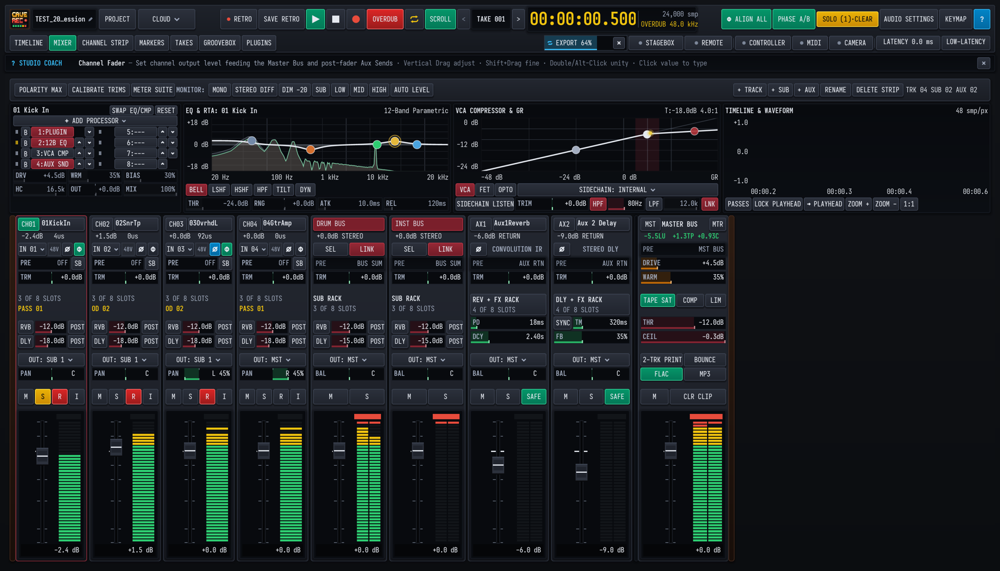
- Top Transport & Session Header Deck (Top): Remains pinned across all workspace views (
TIMELINE,MIXER,CHANNEL STRIP,MARKERS,TAKES,GROOVEBOX,PLUGINS,KEYMAP,STAGEBOX, andREMOTE) using fixed-width Plain Studio Language labels at every standard display width (>= 1366 px). Houses project and session selection, inline session renaming (✎), floating Google DriveCLOUDsync popover, 30-minute● RETRO/SAVE RETROcontrols, main transport buttons (▶,■,●,OVERDUB), the active Take selector, digital timecode and sample counters, global multi-mic phase alignment, one-clickSOLO (N)·CLEAR, a global Async Job progress/cancel pill,AUDIO SETTINGS,KEYMAP, the[?]Studio Coach toggle, connected gear LED pills (● STAGEBOX,● REMOTE,● CONTROLLER,● MIDI,● CAMERA), and latency diagnostics (LATENCY 0.0 ms,LOW-LATENCY). - Upper Inspector Wells (Middle): Displays four side-by-side real-time visualizers and editors for the currently selected channel strip or Subgroup Bus:
- 8-Slot Reorderable Processor Rack & Tape Controls (Left Well): Shows slots
1through8(1:PLUGIN,2:12B EQ,3:VCA CMP,4:AUX SND, ...), per-slot bypass (B), up/down slot reordering arrows, a clean+ ADD PROCESSOR ▾picker menu, dedicated Tape saturator controls (DRV,WRM,BIAS,HC,OUT,MIX),SWAP EQ/CMP, and channelRESET. - 12-Band Parametric EQ & Dual-Trace RTA Spectrum Analyzer (Center-Left Well): Interactive Bode magnitude curve with draggable filter nodes (
BELL,LSHF,HSHF,HPF,TILT,DYN) superimposed over a pre-EQ and post-EQ real-time spectrum trace (20 Hzto20 kHz). - VCA Compressor & Gain Reduction Transfer Curve (Center-Right Well): Displays the compressor knee and transfer curve (
-48 dBto0 dB), topology switcher (VCA,FET,OPTO),SIDECHAINsource selector,SIDECHAIN LISTEN,TRIM,HPF,LPF, stereo link (LNK), and real-time Gain Reduction (GR) metering. - Upper Mini-Timeline & Multi-Tier Waveform Overview (Right Well): Displays the composite waveform of the active Take with playhead tracking,
PASSESexpansion shortcut,LOCK PLAYHEAD,→ PLAYHEAD, and zoom controls (ZOOM +,ZOOM -,1:1).
- 8-Slot Reorderable Processor Rack & Tape Controls (Left Well): Shows slots
- Lower Console Strips (Bottom): Houses up to 32 Input Channel Strips (
CH01..CH32, physical mics, stereo pairs, Pre-Tape Virtual Instruments, or Drum Stem Breakouts), up to 16 stereo Subgroup Bus Strips (DRUM BUS,INST BUS, ...), up to 8 dedicated stereo Aux Return Strips (AUX 1 REVERBwith zero-latency convolution IR andAUX 2 TAPE DLYwith 3-mode tempo-synced echo), and the permanently pinnedMST MASTER BUSstrip (snug beside the last Aux strip in compact sessions, pinned cleanly on the right edge with a vertical seam on overflow) featuring Master Tape, Master Compressor, brickwall Limiter,HW OUT | TAPEstagebox monitor toggle, live2-TRK PRINTarm, independentFLACandMP3format toggles, and one-clickBOUNCEoffline Mixdown render controls. Across all four surfaces (Desktop, Mobile Phone, Tablet, and Dual-Screen Pad Controller), channel control buttons always follow the strict[M](Mute Amber) ->[S](Solo Gold) ->[R](Record Crimson) order.
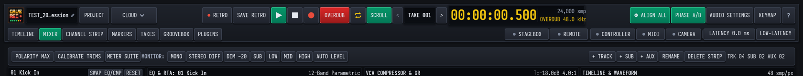
1.3.1 Top Deck Row 1: Session Identity, Transport, Timecode, Phase & Studio Coach#
The top row of the header deck (48 px) is organized into three functional clusters from left to right:
| Cluster | Control / Badge | Keyboard Shortcut | Studio Function |
|---|---|---|---|
| Left: Session & Cloud | Active Session Pill (TEST_20..ession ✎) |
Click to Rename | Displays the currently loaded Session name. Click to rename the active Session inline without opening a modal (ENTER saves, ESC cancels). |
| Left: Session & Cloud | PROJECT |
CMD + O (macOS) / CTRL + O (Win/Linux) | Opens the Project and Session Browser modal to switch Projects, create a new Session from a template, save the current console as a reusable Session Template (Save Template…), link a remote shared project, or open a recent Session. |
| Left: Session & Cloud | CLOUD ▾ |
Mouse Click | Opens the floating Cloud Sync Quick Controls popover (AUTO-FLAC ON UPLOAD, AUTO-MP3 ON UPLOAD, SYNC SESSION FULL, SYNC SESSION MIXES) and displays real-time Google Drive transfer status. |
| Center: Transport & Take | ● RETRO |
Mouse Click (Bindable in KEYMAP) |
Enables or disables the continuous 30-minute retroactive capture memory across all armed input channels. Glows emerald green when active. |
| Center: Transport & Take | SAVE RETRO |
SHIFT + R | Flushes the rolling 30-minute retroactive capture memory to disk as a new numbered Take and switches the active timeline to the rescued Take. |
| Center: Transport & Take | Play (▶) |
SPACE | Starts or pauses playback of the active Take from the current playhead position. Glows green while transport is rolling. |
| Center: Transport & Take | Stop (■) |
SHIFT + SPACE | Stops playback or active recording immediately and finalizes open audio files and post-recording Snapshots. Pressing Stop a second time while already stopped performs Return-to-Zero (00:00:00.000) while keeping the timeline playhead visible at sample 0. |
| Center: Transport & Take | Record (●) |
R | Starts or stops multitrack recording. Creates a new t = 0 Take (Take<NNN>) when OVERDUB is off, or records a new Overdub Pass (Rec<MMM>-OD) inside the active Take when OVERDUB is latched. |
| Center: Transport & Take | OVERDUB |
O | Latches Overdub Mode (glows red when active and updates the timecode badge to OVERDUB → TAKE NNN). While latched, pressing Record (R) records new track-level Overdub Passes on armed channels while playing back existing tracks of the active Take. |
| Center: Transport & Take | Cycle / Loop (⇄) |
C | Toggles continuous loop playback and loop overdubbing across the active Take range. |
| Center: Transport & Take | SCROLL |
Mouse Click (Bindable in KEYMAP) |
Keeps the Waveform Timeline viewport following the advancing playhead during playback and recording. |
| Center: Transport & Take | < TAKE 001 > |
ALT + [ / ALT + ] | Steps backward or forward through the Session's active Takes, immediately loading that Take's 00:00:00.000 timeline and Pass Lanes. |
| Center: Transport & Take | 00:00:00.500 / 24,000 smp |
Readout | High-contrast LED timecode readout (HH:MM:SS.mmm) paired with the exact sample frame position (24,000 smp), active recording mode (NEW TAKE or OVERDUB), and hardware sample rate (48.0 kHz). |
| Right: Phase, Safety & Help | ● ALIGN ALL |
Mouse Click (Bindable in KEYMAP) |
Runs automatic multi-microphone arrival-time and polarity correlation across all active channels relative to the reference channel. |
| Right: Phase, Safety & Help | PHASE A/B |
Mouse Click | Toggles global phase alignment processing between active and bypassed for instant A/B listening. |
| Right: Phase, Safety & Help | SOLO (N)·CLEAR |
Mouse Click | Appears automatically in Solo Gold whenever one or more console strips are soloed or any compressor SIDECHAIN LISTEN is active. Click once to clear all solos and sidechain listens immediately. |
| Right: Phase, Safety & Help | AUDIO SETTINGS |
CMD + , (macOS) / CTRL + , (Win/Linux) | Opens the Audio Device & Latency Settings modal to configure interfaces, sample rate, buffer size, hardware loopback calibration, Studio Pad Surface diagnostics, and caverec-cli installation. |
| Right: Phase, Safety & Help | KEYMAP |
CMD + 8 (macOS) / CTRL + 8 (Win/Linux) | Opens the interactive Keymap shortcut reference and custom keybinding editor covering all 62 bindable studio actions. |
| Right: Phase, Safety & Help | ? (Studio Coach) |
? | Toggles the docked 28 px Studio Coach readout strip below Row 2, displaying the hovered control's full studio role, keyboard shortcut, and drag modifiers (persisted across launches). Every major control also displays a delayed 450 ms hover micro-tooltip (suppressed automatically during active drags). |
1.3.2 Top Deck Row 2: Workspace Tabs, Async Jobs, Connected Gear & Latency#
The second row of the Top Deck (32 px) provides fixed-width navigation across Cave Recorder's primary workspace tabs (CMD/CTRL + 1..7) on the left, live background job progress (⟳ EXPORT 64% ×) in the center-right whenever an offline render, plugin scan, cloud transfer, or sampler bounce is running, and connected hardware/companion gear pills (● STAGEBOX, ● REMOTE, ● CONTROLLER, ● MIDI, ● CAMERA) plus latency controls on the right:
| Control / View Tab | Keyboard Shortcut | Workspace Purpose |
|---|---|---|
TIMELINE |
CMD + 1 (macOS) / CTRL + 1 (Win/Linux) | Multi-track 2D zoomable waveform editor, expandable Pass Lanes for overdub comping, marker flags, loop ranges, direct Range-to-Sampler import, Take splitting, and the Multi-Camera Video Monitor. Detailed in Chapter 6: Waveform Timeline, Pass Lanes, Markers & Ranges. |
MIXER |
CMD + 2 (macOS) / CTRL + 2 (Win/Linux) | Full studio mixing console with Upper Inspector Wells, up to 32 input strips (physical mics, Pre-Tape Virtual Instruments, or Drum Stem Breakouts), Subgroup Buses, Aux Returns, and the pinned Master Bus. Default landing tab for new 0-Take sessions. Detailed in Chapter 4: Mix Console, Stagebox Mixer, Signal Flow & Channel Strips. |
CHANNEL STRIP |
CMD + 3 (macOS) / CTRL + 3 (Win/Linux) | Dedicated full-screen channel and Subgroup Bus workbench with expanded 12-band EQ, Dual-Trace RTA, VCA/FET/Opto Compressor, Gate, Tape Saturation, Large Processor Views, and hosted CLAP / Audio Unit plugin editors. Detailed in Chapter 5: Built-In Processors, Phase Alignment, Groovebox & Plugins (CLAP & AU). |
MARKERS |
CMD + 4 (macOS) / CTRL + 4 (Win/Linux) | Sortable tabular manager for all Take markers (M001..) and loop/export ranges (R001..), with inline click-to-rename, playhead jump (GO TO), and range-to-Take extraction (NEW TAKE). Detailed in Chapter 6: Waveform Timeline, Pass Lanes, Markers & Ranges. |
TAKES |
CMD + 5 (macOS) / CTRL + 5 (Win/Linux) | Session dashboard containing the Takes Catalog with clean 4-button rows ([Load], [Rename], [Export…], [⋯]), one-click FLAC and MP3 Print conversion, offline Mixdown and Stem Bounce rendering, undo history, Snapshots, Live Mix A/B comparison, and Cloud Sync controls. Detailed in Chapter 7: Takes Dashboard, Mixdowns, Snapshots, Companion Mobile & Cloud Sync. |
GROOVEBOX |
CMD + 6 (macOS) / CTRL + 6 (Win/Linux) | Native 6-archetype Virtual Analog Groovebox & Studio Sampler (4 coupled drum voices, the monophonic ANALOG BASS synthesizer, and the STUDIO SAMPLER voice across SEQUENCER, SYNTH & SCOPE, SAMPLER, and ARRANGER sub-views) with SuperFlux noise-robust transient slicing, live console resampling, triggered log-time Storage-CRT scope, Master Glue Bus, and individual voice console stem breakouts. Detailed in Section 5.9 in Chapter 5. |
PLUGINS |
CMD + 7 (macOS) / CTRL + 7 (Win/Linux) | Dedicated Plugin Manager & Indexed Catalog covering Effects and Pre-Tape Instruments (ALL | EFFECTS | INSTRUMENTS), out-of-process directory scanning (RESCAN DIRECTORIES), and missing Ghost Slot relinking (Locate…). Direct downloads host both .clap and macOS Audio Unit plugins, while the Mac App Store edition hosts isolated out-of-process Audio Units exclusively. Detailed in Section 5.7 in Chapter 5. |
● STAGEBOX |
CMD + 9 (macOS) / CTRL + 9 (Win/Linux) | Toggles the full-featured STAGEBOX workspace (1. MIXER, 2. ROUTING, 3. FX RACK, 4. SCENES & SETUP) for X-Air OSC (UDP 10024, including XR18V2) and X32 OSC (UDP 10023) hardware mixers, SENDS ON FADERS, 4-domain crosspoint routing, 55-FX hardware rack, 31-Band GEQ, 100-bin RTA, dual scene sync (stagebox_scene.json), and USB -> Aux -> Main L/R output routing. Detailed in Section 2.6 in Chapter 2 and Section 4.6 in Chapter 4. |
● REMOTE |
CMD + 0 (macOS) / CTRL + 0 (Win/Linux) | Live status and attention pill (Dim = idle, Emerald = paired companions online, Gold = pending PAIR REQ approval) toggling the Cave Companion wireless pairing, Bonjour discovery, QR/PIN, 1-tap Wi-Fi approval, and device role workspace. Detailed in Section 7.6 in Chapter 7. |
● CONTROLLER |
Mouse Click (SHIFT + CHANNEL on hardware) |
Displays Dual-Screen Pad Controller connection status and active hardware personality ([DRUM STUDIO] vs. [CONSOLE DAW REMOTE]). Click to toggle personality, or open AUDIO SETTINGS directly when a USB driver or Mac App Store sandbox notice is active. |
● MIDI |
Mouse Click | Opens the MIDI Sync & Hardware Calibration modal (4-tap count-in, gridless floor-looper capture, MIDI LEARN footswitches, and 1-click Hardware Latency Ping) with live LED color feedback (Dim = free time, Gold = armed, Crimson = count-in, Emerald = locked). Detailed in Section 2.7 in Chapter 2. |
● CAMERA |
Mouse Click | Unified multi-camera video status and setup pill (Dim = idle/uncalibrated, Emerald = calibrated, Gold = live camera preview, Crimson = camera recording). Opens studio video setup and the 3-Second Optical & Acoustic Camera Latency Calibration modal. Detailed in Section 2.5 in Chapter 2. |
LATENCY 0.0 ms |
Mouse Click (Bindable in KEYMAP) |
Opens the Latency & Plugin Delay Compensation (PDC) Transparency Breakdown popover showing per-track and per-bus sample compensation, roundtrip I/O offsets, and the persistent HW DIRECT MON (Hardware Direct Monitoring) toggle. |
LOW-LATENCY |
Mouse Click | Bypasses high-latency lookahead or external plugins on record-armed monitoring paths during overdubbing so musicians hear zero-lag foldback. |
1.4 The Anti-Bloat Curated Console Philosophy#
General-purpose workstations and large commercial plugin bundles often ship with 70 to 90 separate effects plugins: five nearly identical equalizers, eight redundant compressors named after vintage circuit board revisions, four separate de-essers, and dozens of single-purpose utility modules. In a fast-moving band rehearsal or self-engineered tracking session, scrolling through huge plugin menus and juggling floating windows breaks musical momentum and causes decision fatigue.
Cave Recorder replaces plugin sprawl with a Curated Native Console & Rack Suite built around five engineering pillars:
1.4.1 Pillar 1: Fewer, Deeper Multi-Mode Instruments Instead of Redundant Clones#
Rather than cluttering the rack with dozens of single-purpose plugins, Cave Recorder consolidates classic studio hardware topologies into focused, multi-mode processors:
- One 3-Topology Compressor (
VCA,FET,Opto): Switches cleanly between feed-forward RMS bus glue (VCA), ultra-fast discrete transistor transient limiting with odd-harmonic grit (FET), and program-dependent dual-stage electroluminescent optical leveling (Opto). - One Context-Aware 3-Variant Gate (
Expander,Drum Bleed,Amp Dynamic): Combines a smooth downward vocal/room expander, a differential sidechain tom/snare bleed gate with automatic fundamental lock ([LRN]), and a pitch-harmonicity and spectral-entropy amplifier gate built for high-gain stoner, doom, and psychedelic guitar rigs. - One Tempo-Synced 3-Mode Echo & Delay (
Capstan Tape,BBD Analog,Pristine Digital): Covers saturating magnetic tape echo, dark bucket-brigade analog delay with compander breathe and clock noise, and clean stereo rhythmic delay with dynamic ducking and optional[SYNC]musical note subdivisions (1/64through4BAR). - One Tempo-Synced 4-Mode Studio Modulator (
Through-Zero Flanger,Dimension Chorus,Optical Phaser,Harmonic Tremolo): Covers tape-style through-zero flanging, motionless stereo dimension widening, 4/6/8/12-stage photocell phasing, and dual-band crossover harmonic tremolo with[SYNC]beat subdivisions and clickless downbeat phase locking ([LCK]). - One 6-Archetype Virtual Analog Groovebox & Studio Sampler (
GROOVEBOX): Synthesizes analog kicks, snares, claps, metallic hi-hats, rides, modal percussion, and monophonicANALOG BASSsynth basslines alongside theSTUDIO SAMPLERvoice (SuperFluxnoise-robust transient slicing, live console resampling, Timeline Range import, bipolar DJ filter and tuned comb resonator, assignable LFO, and reversible versioned bounces), paired with a polymetric and melodic[2D | NOTE | VEL]Step and Scene Sequencer, chromatic MIDI keyboard input, triggered Storage-CRT oscilloscope, Master Glue Bus, individual voice console stem breakouts, and wireless Cave Companion tablet and phone control.
1.4.2 Pillar 2: Immediate Musical Sweet Spots with Deep Custom Power Underneath#
Every native processor in Cave Recorder is tuned so that engaging it on a channel strip immediately improves the sound without requiring five minutes of parameter tweaking:
- One-Click Calibration & Auto-Setup: Clicking
CALIBRATE TRIMSsets every channel's input gain to the-18 dBFSRMS console sweet spot with a-6 dBFSpeak ceiling. Clicking[LRN]on theDrum Bleedgate listens to a single tom hit and automatically locks the resonant key filter to that drum's fundamental pitch (55 Hzto350 Hz, default110 Hz). EngagingVocal RiderwithBreath / Bleed Freezeholds the fader steady during pauses so drum bleed is never boosted between vocal lines. - Full Surgical Depth When Needed: Beneath these immediate defaults, mix engineers have full access to per-band Dynamic EQ thresholds, 16-sample smoothed filter trajectories, sidechain Tilt EQ, smooth gate ballistics, 5-stage allpass frequency/Q coordinates, and loudness-matched
AUTO LEVELbypass auditioning.
1.4.3 Pillar 3: Solving Real Live-Room Physics (Phase Dispersion, Bleed & High-Gain Sustain)#
Plugins designed for isolated bedroom overdubs fall apart when an entire band plays loud in an untreated room. Cave Recorder's processors are engineered specifically for the acoustic realities of live band tracking:
- Multi-Mic Phase Cancellation & Allpass Dispersion: Combining a bass DI with a miked ported bass cabinet, or blending 8 microphones across a drum kit, introduces both acoustic time-of-flight delays and frequency-dependent phase rotation across cabinet ports and crossover networks. Every channel strip includes a zero-slot top-of-strip Phase Align Network driven by the two-mode Polarity & Phase Maximizer (
Mode 1instant binary polarity solver in under50 ms, andMode 2multicore spectral allpass solver). - Snare-into-Tom Spill & Cymbal Wash: The
Drum Bleedgate uses a differential key detector (comparing the target tom against a snare or overhead reference) and a dynamic decay low-pass filter (20 kHzsweeping down to250 Hzto800 Hz, default380 Hz) so tom hits ring out naturally without sucking bursts of hi-hat and cymbal wash into the mix. - Stoner, Doom & Psychedelic High-Gain Guitar Dynamics: Standard threshold noise gates destroy quiet clean fingerpicking (
-34 dBFS) and chop off intentional harmonic amplifier feedback bloom, or else sit wide open while stacked fuzz pedals roar at-22 dBFS. TheAmp Dynamicgate measures autocorrelation pitch periodicity (H ∈ [0, 1]) and spectral flatness so whispered clean passages and1.5 sto5.0 sfeedback sustain pass untouched while 60 Hz hum and fuzz hiss clamp shut in15 msto40 ms(default18 msto22 ms) on a palm-mute stop.
1.4.4 Pillar 4: Non-Destructive Live-Take Salvage and Mistake Surgery#
When a band captures a once-in-a-lifetime live groove, you cannot ask them to play the exact same improvisation again just because a snare rimshot clipped an preamp converter for 12 samples, a vintage combo amp buzzed at 60 Hz, or the guitarist hit a wrong chord in bar 42.
Cave Recorder treats live-take rescue as a core console workflow rather than an external audio restoration chore. Directly inside TIMELINE and CHANNEL STRIP, you can reconstruct clipped ADC peaks ([REPAIR CLIPPING] using smooth spline and spectral waveform interpolation), notch out 12 harmonics of 50/60 Hz power-line hum without dulling guitar tone, comp a single bar from an Overdub Pass ([USE OD 02 IN RANGE]), graft a clean chord from another bar ([PATCH FROM SOURCE...]), or apply a spectral spot-heal ([SMOOTH OVER ARTIFACT]) while leaving the original 32-bit floating-point recording on disk completely untouched.
1.4.5 Pillar 5: Strict Separation Between Master Bus Printing and Control Room Monitoring#
In a rehearsal or tracking room, engineers constantly need to check mono fold-down compatibility (MONO), solo the stereo side difference (STEREO DIFF), isolate the sub-bass (SUB < 90 Hz) or midrange (MID 350 Hz - 3.5 kHz) across studio monitors, dim the speakers (DIM -20) to talk to the band, or A/B a heavy processing chain at matched loudness (AUTO LEVEL).
In Cave Recorder, the Control Room Monitor Bar (MONITOR:) is wired strictly downstream of the Master Bus 2-TRK PRINT live tap and offline BOUNCE engine. You can solo frequency bands, flip to mono, or dim the control room speakers right in the middle of recording a live Take without ever altering or interrupting the stereo Print001.wav being written for the band.
| Live-Room Studio Challenge | Why Traditional DAWs Struggle | Cave Recorder Curated Console Solution |
|---|---|---|
| Hollow drums and thin bass from multi-mic phase cancellation | Requires manual sample nudging or expensive external phase plugins inserted on every track | Top-of-strip zero-slot Phase Align Network + ALIGN ALL sub-sample delay + Mode 1 (< 50 ms) & Mode 2 multicore spectral allpass solver |
| Fuzz/tube amp hum vs. quiet clean picking and feedback sustain | Amplitude noise gates choke quiet clean notes and chop off harmonic feedback tails | Amp Dynamic gate using pitch harmonicity and spectral flatness (Feedback Bloom Lock + 18 ms Palm-Mute Clamp + HF Tame) |
| Snare and cymbal spill triggering rack and floor tom gates | Standard gates false-trigger on loud snare hits and let harsh cymbal wash through on tom decay | Drum Bleed gate with differential key rejection, [LRN] fundamental auto-detection, and dynamic decay low-pass filter |
| Inconsistent input trim levels across 18 live mics | Slow manual trim riding before rehearsal can start | One-click CALIBRATE TRIMS (Gain Utility) normalizing channels to -18 dBFS RMS with a -6 dBFS peak ceiling |
| Vocalist steps back from mic or drum bleed fills vocal pauses | Compressor boosts room bleed during pauses unless automated by hand | Vocal Rider (±6 dB zero-latency leveler) with speech-weighted detector and Breath / Bleed Freeze Gate |
| Clipped drum transient, 60 Hz amp buzz, or 1-bar chord flub in a magic live Take | Requires exporting stems to external restoration editors or re-recording the whole song | Non-destructive [REPAIR CLIPPING], 12-Harmonic Hum Canceller, Range Comping, [PATCH FROM SOURCE...], and [SMOOTH OVER ARTIFACT] |
| Louder-sounds-better bias and accidental speaker-check printing | Monitor EQ/mono plugins on the Master Bus accidentally get printed into the mixdown file | Control Room Monitor Bar (SUB/LOW/MID/HIGH, MONO, STEREO DIFF, DIM -20) wired strictly post-Print/post-Bounce + AUTO LEVEL loudness-matched bypass |
Hardware Setup, Audio Connections & First Session
Connecting multi-channel USB and ADAT interfaces, automatic studio interface selection, macOS Direct Download vs. Mac App Store App Sandbox setup (native Open/Save panels, persistent folder bookmarks, and isolated out-of-process Audio Units), locking digital clocks, calibrating roundtrip loopback latency, persistent Hardware Direct Monitoring preferences, connecting 50 FPS / 25 FPS studio cameras with the 3-Second Optical & Audio Flash Latency Calibration modal, connecting and managing full OSC Stageboxes (X-Air UDP 10024 including XR18V2 and X32 UDP 10023 across the 4-tab STAGEBOX workspace and USB-to-Aux-to-Main L/R output routing), configuring bidirectional MIDI Clock, Looper Sync, MIDI Learn footswitches, and 1-click Hardware MIDI Latency Ping calibration, setting up a Dual-Screen Studio Pad Surface (CONTROLLER pill), installing caverec-cli and Studio Engineering Skills, and creating your first Project and Session.
2.1 Connecting Multi-Channel Audio Interfaces (USB, Thunderbolt & ADAT)#
Cave Recorder supports up to 32 simultaneous mono or stereo-linked input tracks (CH01 through CH32), making it an ideal match for rackmount 18-in / 20-out or 32-channel USB and Thunderbolt studio interfaces paired with 8-channel ADAT optical microphone preamp expanders.
A standard 18-channel rehearsal and tracking rig combines three physical input groups into a single unified audio device:
- Inputs 1-8 (Primary Interface Onboard Mic/Line Preamps): Eight XLR/TRS combo preamps on the main rack unit, typically dedicated to close drum microphones, guitar cabinet mics, rack and floor toms, and stereo drum overheads.
- Inputs 9-10 (Coaxial S/PDIF or Auxiliary Line Return): Two digital coaxial S/PDIF channels or line inputs used for stereo hardware synthesizers, stage pianos, or drum machines (
SpdifSynthLandSpdifSynthR). - Inputs 11-18 (8-Channel ADAT Optical Preamp Expander): Eight additional microphone and instrument preamps fed from an external 8-channel ADAT expander into the primary interface's
ADAT OPTICAL INport over a TOSLINK fiber-optic cable, dedicated toBassDi,BassAmp,GuitarL,GuitarR,KeysL,KeysR,LeadVocal, andRoomAmbience.
2.1.1 Studio Signal & Clock Wiring Diagram#
The diagram below illustrates the physical audio, optical ADAT, Word Clock, studio monitor, and loopback calibration connections for an 18-channel tracking room:
STAGE / LIVE ROOM MICROPHONES & DI BOXES
======================================================================
[CH 01..08: Drum Kit & Cab Mics] [CH 11..18: Band & Room Mics]
Kick, Snare, Toms, Overheads Bass DI/Amp, Guitars, Keys, Vocal
| |
8x XLR Mic Cables 8x XLR/TRS Cables
v v
+-------------------------------+ +---------------------------------+
| PRIMARY 18-IN / 20-OUT AUDIO | | EXTERNAL 8-CH ADAT MIC PREAMP |
| INTERFACE (USB / THUNDERBOLT) | | EXPANDER (OPTICAL LIGHTPIPE) |
| | | |
| Analog In 1-8 [CH01..CH08] | | Analog Mic Pre 1-8 |
| S/PDIF Coax In [CH09..CH10]<+-\| |
| ADAT Optical In [CH11..CH18]<+--+-- ADAT Optical Out (TOSLINK) |
| | || |
| Clock: INTERNAL (48.0 kHz) | || Clock Sync: SLAVE (Word Clock |
| Word Clock Out (75-Ohm BNC) --+-++-> Word Clock In (75-Ohm BNC) |
| | |+---------------------------------+
| Main Out 1-2 -> Monitors | |
| Line Out 3-10 -> Headphones | \-- [CH 09..10: Stereo Synth S/PDIF]
| Line Out 20 -> Patch In 1 | (Coaxial 75-Ohm RCA Cable)
| (Loopback) |
+-------------------------------+
|
USB-C / Thunderbolt
v
+-------------------------------+
| WORKSTATION RUNNING CAVEREC |
| Audio Device: 18 in / 20 out |
| Sample Rate: 48.0 kHz | INT |
+-------------------------------+2.1.2 Recommended 18-Channel Full-Band Patch List#
Connecting instruments in a consistent console order allows you to reuse your saved Cave Recorder Session Templates (SAVE TEMPLATE) across every rehearsal without re-patching:
| Input & Strip | Typical Studio Source & Microphone | +48V Phantom |
Subgroup Bus | Gain-Staging Target |
|---|---|---|---|---|
IN 01 (CH01 01KickIn) |
Kick Drum Inside (Dynamic or boundary mic) | Off (On for boundary) | SUB 1 (DRUM BUS) |
Peaks at -6 dBFS on hard hits |
IN 02 (CH02 02SnrTp) |
Snare Drum Top (Dynamic cardioid, align Φ + Ø) |
Off | SUB 1 (DRUM BUS) |
Peaks at -6 dBFS on rimshots |
IN 03 (CH03 03OvrhdL) |
Mono Drum Overhead or Snare Bottom (align Φ) |
On / Off | SUB 1 (DRUM BUS) |
Peaks at -8 dBFS |
IN 04 (CH04 04GtrAmp) |
Close Guitar Cabinet Mic or Hi-Hat Condenser | Off / On | MST (MASTER BUS) |
Average -18 dBFS RMS |
IN 05 (CH05 TomRack) |
Rack Tom Clip-On Dynamic | Off | SUB 1 (DRUM BUS) |
Peaks at -6 dBFS on fills |
IN 06 (CH06 TomFloor) |
Floor Tom Dynamic | Off | SUB 2 / SUB 1 |
Peaks at -6 dBFS on fills |
IN 07 (CH07 OverheadL) |
Drum Overhead Left (Matched condenser pair) | On | SUB 1 (DRUM BUS) |
Peaks at -8 dBFS on crashes |
IN 08 (CH08 OverheadR) |
Drum Overhead Right (Matched condenser pair) | On | SUB 2 / SUB 1 |
Peaks at -8 dBFS on crashes |
IN 09 (CH09 SpdifSynthL) |
Stereo Digital Synth Left (Coaxial S/PDIF L) | Off | SUB 1 / SUB 2 |
Average -18 dBFS RMS |
IN 10 (CH10 SpdifSynthR) |
Stereo Digital Synth Right (Coaxial S/PDIF R) | Off | SUB 2 (INST BUS) |
Average -18 dBFS RMS |
IN 11 (CH11 BassDi) |
Bass Guitar Active/Passive DI Box (Line/Inst) | On (Active DI) | SUB 1 / SUB 2 |
Average -18 dBFS, peaks -8 dBFS |
IN 12 (CH12 BassAmp) |
Bass Cabinet Dynamic or FET Condenser (align Φ to CH11) |
Off / On | SUB 2 (INST BUS) |
Average -18 dBFS, peaks -8 dBFS |
IN 13 (CH13 GuitarL) |
Rhythm Guitar Amp Close Dynamic (Cardioid Dynamic / Ribbon) | Off | SUB 1 / SUB 2 |
Average -18 dBFS RMS |
IN 14 (CH14 GuitarR) |
Lead Guitar Amp Close Dynamic or Second Cab Mic | Off | SUB 2 (INST BUS) |
Average -18 dBFS RMS |
IN 15 (CH15 KeysL) |
Stage Piano / Keyboard Stereo DI Left | Off | SUB 2 (INST BUS) |
Average -18 dBFS RMS |
IN 16 (CH16 KeysR) |
Stage Piano / Keyboard Stereo DI Right | Off | SUB 2 (INST BUS) |
Average -18 dBFS RMS |
IN 17 (CH17 LeadVocal) |
Lead Vocal Dynamic or Large-Diaphragm Condenser | Off / On | MST (MASTER BUS) |
Peaks at -6 dBFS on loud chorus |
IN 18 (CH18 RoomAmbience) |
Live Room Condenser or Ribbon (Never +48V on passive ribbon) |
On / Off | SUB 1 (DRUM BUS) |
Average -20 dBFS RMS |
2.1.3 Digital Clock Synchronization (INT vs. External ADAT / Word Clock)#
Whenever two or more digital audio devices convert audio simultaneously (such as a primary USB interface and an external 8-channel ADAT optical preamp), every converter in the chain must lock to a single master sample clock. If both units run on their own internal crystal oscillators, slight clock drift causes periodic clicks, pops, and high-frequency distortion across the expanded channels.
Follow one of these two studio clocking topologies:
- Topology A: Primary Interface as Master (
INT), Expander Slaved via Word Clock or Bidirectional ADAT (Recommended):- Set your primary audio interface clock source to Internal (
INT) at48.0 kHz(displayed in the Cave Recorder Top Deck as48.0 kHz | INTand in the console session bar as48.0 kHz LOCKED). - Run a 75-ohm BNC Word Clock cable from the primary interface
WORD CLOCK OUTto the ADAT expanderWORD CLOCK IN(switching the expander's rear clock selector toWC INwith 75-ohm termination active), or run a second TOSLINK cable from the primary interfaceADAT OUTto the expanderADAT INand set the expander clock selector toADAT IN.
- Set your primary audio interface clock source to Internal (
- Topology B: ADAT Expander as Master, Primary Interface Slaved to
ADAT:- If your external 8-channel preamp has only an
ADAT OUTport and noWORD CLOCK INorADAT INport, set the external preamp toINTERNAL 48 kHzand set your primary audio interface clock source to External ADAT in its hardware control panel.
- If your external 8-channel preamp has only an
2.1.4 First-Launch Setup on macOS (Direct Download vs. Mac App Store Edition)#
Cave Recorder is distributed on macOS in two official editions:
- Direct Download Edition (
caverec-v0.7.1-macos-arm64.zip/Cave Recorder.app): Signed and notarized with an Apple Developer ID certificate for CoreAudio multi-channel audio input, multi-camera studio video capture, local Wi-Fi companion and Bonjour discovery, Google Drive cloud sync, both.clapand macOS Audio Unit (AU) plugins, the standaloneencdr-daemonDual-Screen Pad Controller helper, and bundledcaverec-cli/caverec-headlessautomation tools. - Mac App Store Edition (
Cave Recorder, macOS App Sandbox): Installed directly from the Mac App Store under Apple's App Sandbox security model with three user-facing differences:- Native macOS Open/Save Panels & Persistent Folder Bookmarks: Selecting a custom Session Library Root or opening external Session folders uses native macOS Open and Save panels and stores persistent App-Scoped Security-Scoped Bookmarks so your chosen studio drives stay accessible automatically across launches. By default, the Mac App Store edition places its initial Library Root inside its writable app container (
~/Library/Containers/com.caverec.daw/Data/Music/caverec). - Isolated Out-of-Process Audio Units Exclusively: All macOS Audio Unit effects (
aufx), instruments (aumu), and MIDI effects (aumf) are hosted in isolated out-of-process system host processes so a misbehaving third-party plugin can never crash your live recording. Because App Sandbox restricts loading arbitrary unsigned dynamic libraries outside system Audio Unit hosts, the Mac App Store edition hides.clapplugin controls inPLUGINSand hosts macOS Audio Units exclusively. - External USB Pad Helper & CLI Binaries: External USB helper executables (
encdr-daemon) and bundled CLI binaries are omitted from the sandboxed Mac App Store package. Direct downloads fromcaverec.appinclude full Dual-Screen Pad Controller support and bundledcaverec-cli/caverec-headlesstools, while a running Mac App Store app still accepts loopback127.0.0.1connections from an externally installedcaverec-cli.
- Native macOS Open/Save Panels & Persistent Folder Bookmarks: Selecting a custom Session Library Root or opening external Session folders uses native macOS Open and Save panels and stores persistent App-Scoped Security-Scoped Bookmarks so your chosen studio drives stay accessible automatically across launches. By default, the Mac App Store edition places its initial Library Root inside its writable app container (
- Ad-Hoc Signed Local Builds (Gatekeeper Quarantine Clearance): When opening an un-notarized ad-hoc build downloaded from a web browser on macOS for the first time, macOS Gatekeeper places a quarantine flag on the bundle. Clear it via System Settings -> Privacy & Security -> Open Anyway, or run
xattr -cr "/Applications/Cave Recorder.app"in Terminal, then launchCave Recorder.appand click Allow when macOS prompts for microphone and audio interface access. Camera access is optional and is requested lazily only when you explicitly open or arm a local camera inside● CAMERA.
2.2 Configuring Audio Device Settings (AUDIO SETTINGS)#
Click the AUDIO SETTINGS button at the top right of the Top Transport Deck (or press CMD + , on macOS / CTRL + , on Windows and Linux) to open the Audio Device & Latency Settings modal (MODAL: AUDIO DEVICE & LATENCY SETTINGS).
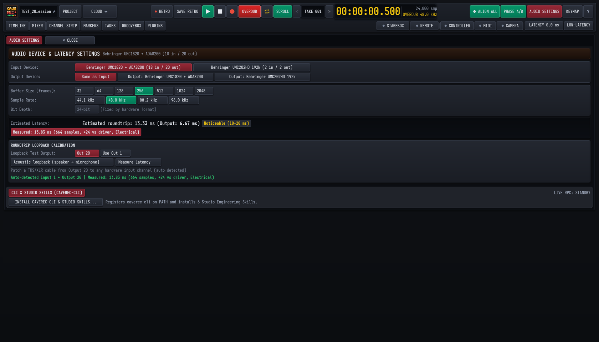
2.2.1 Selecting Input and Output Devices & macOS Microphone Permission Diagnostics#
- Automatic Multi-Channel Studio Interface Selection: On startup, Cave Recorder automatically prioritizes connected multi-channel studio audio interfaces (such as 18-channel USB/ADAT interfaces) over 2-channel built-in laptop microphones while keeping the input and output sample clocks unified on the same hardware device.
- Input Device: Displays all active CoreAudio (macOS), ASIO/WASAPI (Windows), or ALSA (Linux) recording devices detected on the workstation, along with their available channel counts (for example,
Studio USB + ADAT Interface (18 in / 20 out)orDesktop 2-Channel USB Interface (2 in / 2 out)). Click the desired interface button to bind Cave Recorder's input engine. - Output Device: Select
Same as Inputwhenever your studio monitors and headphone amplifiers are connected to the same multi-channel interface as your microphones. Using a single unified hardware device guarantees that input and output converters share the same sample clock and ensures deterministic roundtrip loopback calibration. Separate output devices remain selectable when monitoring through an independent desktop DAC. - Built-In macOS Microphone Permission Status & Recovery Guidance: On macOS, CoreAudio delivers silent (
0.0) input buffers across all hardware channels whenever macOS Privacy & Security blocks microphone access. Cave Recorder continuously checks the operating system Microphone permission status (Authorized,Not Determined,Restricted, orDenied) insideAUDIO SETTINGS:- One-Click Permission Request (
Not Determined): If macOS has not yet prompted for audio input access, Cave Recorder triggers the system Microphone privacy prompt automatically (or on demand fromAUDIO SETTINGS) so you can click Allow in one step. - Denied or Stale Permission Recovery: If microphone access was previously denied in System Settings -> Privacy & Security -> Microphone, or if a live CoreAudio input stream delivers
100%digital silence across all channels after updatingCave Recorder.app,AUDIO SETTINGSdisplays a clear status banner instructing you to toggle Cave Recorder off and back on inside System Settings -> Privacy & Security -> Microphone and restart the app.
- One-Click Permission Request (
2.2.2 Buffer Size (frames), Sample Rate & Bit Depth#
- Buffer Size (frames): Selectable from
32,64,128,256,512,1024, or2048sample frames per hardware buffer cycle.- Low Buffer Sizes (
32,64, or128frames): Minimize live input-to-output foldback delay when a vocalist or guitarist is monitoring their own performance through Cave Recorder's built-in console EQ, VCA compressor, andAUX 1 REVERB. - Medium Buffer Sizes (
256or512frames): Provide generous processor headroom during 18-channel full-band tracking when musicians monitor via the audio interface's direct hardware mixer, or during mixing sessions with multiple third-party CLAP plugins.
- Low Buffer Sizes (
- Sample Rate: Selectable between
44100 Hz,48000 Hz,88200 Hz, and96000 Hz. Use48000 Hz(48.0 kHz) for 18-channel USB/ADAT studio rigs and video-synchronized live sessions. - Bit Depth: Shows the hardware converter transport word length (
24-bit (Fixed by hardware format)). Regardless of the hardware interface's 24-bit converter format, Cave Recorder processes all internal signal paths and writes all on-disk multitrack stem files (rec/*.wav) in uncompressed 32-bit floating-point format.
Buffer Size (frames) |
One-Way Buffer @ 48.0 kHz |
Driver Roundtrip (incl. Converter/USB Safety) | Recommended Studio Scenario |
|---|---|---|---|
32 frames |
0.67 ms |
~4.0 - 5.5 ms |
Solo vocal or guitar tracking through software effects on fast workstations |
64 frames |
1.33 ms |
~5.5 - 7.5 ms |
Live overdubbing (OVERDUB) with software cue monitoring and LOW-LATENCY |
128 frames |
2.67 ms |
~8.0 - 10.5 ms |
General multi-track tracking and rehearsal capture |
256 frames |
5.33 ms |
~13.3 - 14.0 ms |
18-channel band rehearsals using hardware direct monitoring |
512 frames |
10.67 ms |
~24.0 - 26.0 ms |
Full console mixing, Subgroup Bus processing, and heavy CLAP / AU plugin chains |
1024 / 2048 frames |
21.33 / 42.67 ms |
~45.0 - 90.0 ms |
Mastering, offline Stem Bounce preparation, and high-channel-count archival playback |
2.2.3 30-Minute Retroactive Capture Memory (● RETRO)#
While your audio interface is active, the ● RETRO button in the Top Transport Deck controls Cave Recorder's continuous 30-minute retroactive capture memory. When ● RETRO is enabled:
- Every record-armed channel strip (
Rengaged) continuously writes incoming 32-bit float audio into a dedicated 30-minute rolling capture memory even while the main transport is stopped. Stereo-linked hardware inputs (IN 17-18) and active stereo Pre-Tape Virtual Instruments capture true 2-channel interleaved stereo into the rolling 30-minute memory, while idle sleeping virtual instruments automatically release their background capture memory. - At
48.0 kHz, 30 minutes of 32-bit audio requires approximately330 MBof system memory per armed mono channel (or660 MBper stereo channel, roughly5.9 GBwhen 18 mono channels are armed simultaneously). - If you are working on a laptop with limited memory and do not need retroactive jam rescue, click
● RETROin the Top Deck to disable background capture memory.
2.2.4 Installing caverec-cli & Studio Engineering Skills from AUDIO SETTINGS#
Direct desktop distributions ship the lightweight caverec-cli command-line client and caverec-headless offline engine for scripted studio control, sample-clocked metering/probing, and AI studio-assistant workflows. Inside AUDIO SETTINGS under CLI & STUDIO SKILLS (CAVEREC-CLI), click INSTALL CAVEREC-CLI & STUDIO SKILLS... to automatically place caverec-cli on your user PATH (~/.local/bin/caverec-cli on macOS and Linux, or your user PATH on Windows) and install the 6 embedded Studio Engineering Skills. Full CLI, Python client, and skills documentation is provided in Section 8.6 in Chapter 8.
2.3 Calibrating Roundtrip Loopback Latency (Measure Latency)#
When a musician records an Overdub Pass (Rec002-OD) while listening to playback of a Base Pass (Rec001), the backing track travels out through the digital-to-analog converter (DAC) to the musician's headphones, and the musician's new performance travels back in through the analog-to-digital converter (ADC) and USB or Thunderbolt bus.
Audio device drivers only report nominal buffer sizes (Estimated roundtrip: 13.33 ms, or 640 samples at 256 frames / 48.0 kHz). They do not account for the additional samples introduced by hardware oversampling filters, optical ADAT connections, and USB or Thunderbolt transport stages (which typically add 16 to 64 extra samples). Without hardware loopback calibration, every overdubbed track lands slightly late relative to the drums.
Cave Recorder includes a built-in hardware impulse loopback analyzer (ROUNDTRIP LOOPBACK CALIBRATION) that measures the exact physical sample delay from output jack to input jack:
- Lower Monitor Volume: Turn down your studio monitor controller and headphone amplifiers completely so the calibration test impulse does not play through loudspeakers.
- Patch a Physical Loopback Cable: Connect a balanced 1/4-inch TRS or XLR patch cable from your interface's dedicated loopback test output (
Out 20orOut 1) directly into any hardware analog input channel (such asInput 1). Ensure+48Vphantom power is turned off on that input channel and set its physical preamp gain knob near unity (roughly 9 to 10 o'clock). - Select the Loopback Test Output: Open
AUDIO SETTINGS(CMD + , / CTRL + ,) and locate the ROUNDTRIP LOOPBACK CALIBRATION panel at the bottom. ChooseOut 20(convenient on 20-output interfaces where Output 20 can stay permanently patched to an unused line input) or clickUse Out 1if patching from main Output 1. (For acoustic room delay tests through a speaker and microphone, toggleAcoustic loopback (speaker -> microphone)). - Run the Impulse Measurement: Click
Measure Latency. Cave Recorder emits a short, high-precision measurement impulse out the selected output port, automatically detects which hardware input channel received the return signal, and correlates the exact sample arrival offset. - Verify the Measured Offset: Inspect the green confirmation readout at the bottom of the modal and the red badge under Estimated Latency:
Auto-detected Input 1 <- Output 20 | Measured: 13.83 ms (664 samples, +24 vs driver, Electrical) - Close Audio Settings: Click
CLOSE AUDIO SETTINGSat the top left of the modal.
2.4 Creating Your First Project and Session (PROJECT Modal)#
Press CMD + O on macOS (CTRL + O on Windows and Linux) or click the PROJECT button in the Top Transport Deck to open the Project and Session Browser modal.
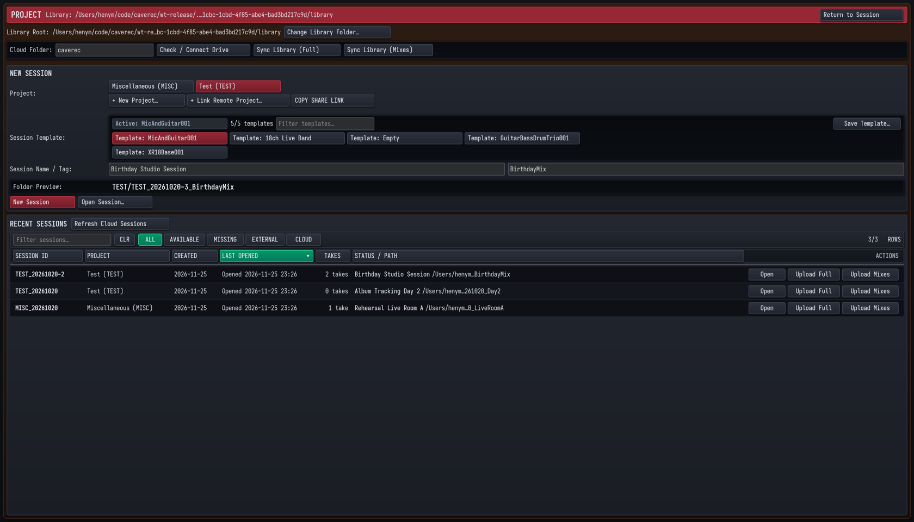
2.4.1 Configuring the Library Root and Cloud Folder#
At the top of the PROJECT modal, verify your storage paths before creating your first session:
- Library Root: Displays the master local disk directory where all Projects, Sessions, and Takes are stored. Click
Change Library Folder...to point Cave Recorder at a fast internal NVMe SSD or dedicated external Thunderbolt recording drive. - Cloud Folder: Displays the configured Google Drive folder name (for example,
caverec). ClickCheck / Connect Driveto verify cloud credentials,Sync Library (Full)to synchronize complete session multitracks across machines, orSync Library (Mixes)to synchronize only the lightweight<ProjectTag>/_Mixes/reference folders.
2.4.2 Creating a New Project or Linking a Bandmate's Remote Project#
Every Session belongs to a Project (such as a band name, album project, or client ensemble) identified by an uppercase 1-to-8 character Project Tag (GF, TEST, MISC).
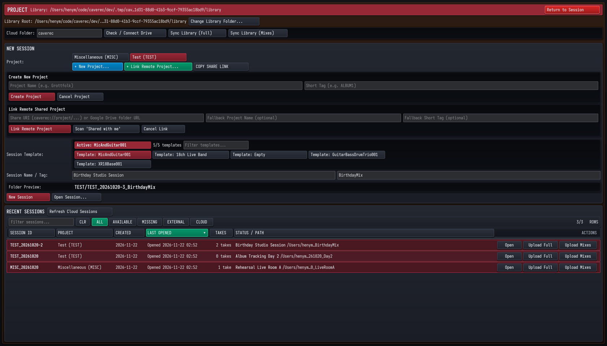
- To create a new local Project:
- In the NEW SESSION panel, click
+ New Project...below the Project selector pills. - Enter the Project Name (for example,
Grottfolk) and a short alphanumeric Project Tag consisting of 1 to 8 uppercase letters or digits (for example,GF). - Click
Create Project. Cave Recorder creates<LibraryRoot>/GF/along with<LibraryRoot>/GF/_Mixes/and selects the new Project pill.
- In the NEW SESSION panel, click
- To link a collaborator's shared Google Drive Project:
- Click
+ Link Remote Project...to expand the Link Remote Shared Project form. - Paste a
caverec://project/...share URI (copied from a bandmate'sCOPY SHARE LINKbutton) or a Google Drive folder URL, or clickScan 'Shared with me'to auto-discover Cave Recorder projects shared with your Google account. - Click
Link Remote Project.
- Click
2.4.3 Selecting a Session Template and Starting a New Session#
Once your Project pill is selected (highlighted in burgundy):
- Choose a Session Template: In the
Session Templaterow, select one of the four built-in studio templates seeded on disk (or any custom template you have saved):Template: MicAndGuitar001(Built-In Default Template): Pre-selected on startup,MicAndGuitar001provides a ready-to-record 2-channel singer-songwriter and acoustic rehearsal setup (2armed mono tracks:MiconIN 01with an80 HzHPF and-8.0 dBPost-Fader Reverb send, plusGuitaronIN 02with an80 HzHPF),0Subgroup Buses, and2Aux Returns (AUX 1 REVERBPlate Reverb andAUX 2 TAPE DLYTape Delay).Template: GuitarBassDrumTrio001: Built-in 11-channel band template with3stereo Subgroup Buses (Guitar Bus,Drum Bus, and parallelDrum Crush Buswith8:1VCA compression),2Aux Returns, stereo guitars (Guitar L/Guitar R),Bass DI,Room Mic, 4-mic drum kit (Kick,Snare Top,Overhead L,Overhead R), and pre-assigned guitar/vocal overdub channels.Template: XR18Base001: Built-in 17-track stagebox tracking template (Ch 1throughCh 16mono onIN 01..16plus stereo-linkedLine 17-18onIN 17+18, unarmed and flat),0Subgroup Buses,0Aux Returns, and the Master Bus Brickwall Limiter engaged.Template: Empty: Clean slate with0Input Tracks,0Subgroup Buses,0Aux Returns, and the Master Bus Brickwall Limiter only, ready to build a custom console layout via+ TRACK,+ SUB, and+ AUX.- Any custom studio setup you save via
Save Template…insidePROJECTappears automatically in this list and can be filtered via theFilter templates...search box.
- Enter Session Name and Session Tag: Type a descriptive Session Name in the left field (for example,
Birthday Studio Session) and a short filesystem-friendly Session Tag in the right field (for example,BirthdayMix). - Verify the Folder Preview: Inspect the
Folder Previewline (TEST/TEST_20261020-3_BirthdayMix). Cave Recorder automatically combines the Project Tag, the session date (using the 08:00 local time rollover rule), the daily session sequence number, and your Session Tag. - Launch the Session: Click
New Sessionto initialize the session folder on disk and enterMIXER(CMD + 2 / CTRL + 2, the automatic landing view for new0-Take sessions). To reopen an existing session instead, locate it in the RECENT SESSIONS table at the bottom (filtering byALL,AVAILABLE,MISSING,EXTERNAL, orCLOUD) and clickOpen(sessions with existing Takes open directly intoTIMELINE).
2.4.4 Pre-Session Track Naming, Input Routing & Gain Staging#
Before the band starts playing the first song, perform a 60-second console check in MIXER (CMD + 2 / CTRL + 2):
- Verify Hardware Input Routing (
IN 01 ▾): On each channel strip, confirm the input selector dropdown (IN 01 ▾,IN 02 ▾, ...) matches the physical preamp jack where that microphone or DI box is plugged in. - Name Each Strip Clearly: Double-click any channel strip header (
01KickIn,02SnrTp, ...) to rename it inline. Clear strip names propagate automatically into every recorded.wavstem filename (01-KickIn_Rec001.wav) and Timeline track lane. - Set Analog Preamp Gain and Digital Input Trim (
TRM): Have the band play at full rehearsal volume:- Adjust your audio interface's physical analog preamp knobs so sustained signals average around
-18 dBFSRMS (in the healthy green zone of the channel meter) and the loudest drum hits peak around-6 dBFS(in the lower amber zone, well below0.0 dBFShardware clipping). - Use each strip's digital
TRMslider (-24.0 dBto+24.0 dB) to fine-tune the level feeding the 8-slot processor rack and recorded pre-fader stem.
- Adjust your audio interface's physical analog preamp knobs so sustained signals average around
- Engage Record Arm (
R) and Input Monitoring (I): ClickRon every active input strip so it lights crimson, and confirm the Top Deck● RETROindicator is lit green so 30-minute retroactive memory begins capturing immediately. - Save Your Room Template: Open
PROJECT(CMD/CTRL + O), clickSave Template…, enter a template name for your room setup, and clickSAVE AS TEMPLATEso future sessions load this exact configuration in one click.
2.5 Connecting Studio Cameras & 3-Second Camera Latency Calibration#
Cave Recorder includes a sample-accurate Multi-Camera Studio Video Suite that captures multiple USB, UVC, HDMI-to-USB capture-card, built-in studio cameras, and wireless Cave Companion mobile camera nodes directly into <TakeFolder>/video/ alongside your 32-bit float multitrack audio stems.
2.5.1 Constant Frame Rate (50 / 25 / 30 / 60 FPS) Audio-Clock Lock, Camera Removal & Hardware LED Privacy#
Consumer video recorders and webcams frequently operate at variable frame rates (VFR) or fractional NTSC cadences (29.97 FPS or 59.94 FPS) that produce non-integer audio sample counts per video frame (1601.6 samples/frame at 48.0 kHz) and cause rolling-shutter banding under 50 Hz studio LED lighting. Cave Recorder prefers 50 FPS and 25 FPS Constant Frame Rate (CFR) modes and automatically negotiates exact integer 30 FPS or 60 FPS CFR fallbacks when a USB webcam or capture card does not expose 50 Hz hardware modes:
| Video Capture Mode | Frame Duration | Exact 48.0 kHz Audio Cadence |
Encoding & GOP Profile | Studio Use Case |
|---|---|---|---|---|
1080p50 / 720p50 CFR (Default) |
20.000 ms |
960 samples/frame (exact integer) |
H.264 .mp4, Zero B-Frames, 0.5 s (25-frame) closed GOP + .vididx index |
High-motion drum cams, close fretboard angles, and full-band rehearsal video with zero 50 Hz mains lighting flicker |
1080p25 / 720p25 CFR |
40.000 ms |
1,920 samples/frame (exact integer) |
H.264 .mp4, Zero B-Frames, 0.5 s (12/13-frame) closed GOP + .vididx index |
Wide room cameras, lower-light rehearsal spaces, or extended multi-hour jam sessions |
1080p30 / 720p30 CFR (Fallback) |
33.333 ms |
1,600 samples/frame (exact integer) |
H.264 .mp4, Zero B-Frames, 0.5 s (15-frame) closed GOP + .vididx index |
USB webcams and 60 Hz mains lighting rooms where 50 FPS / 25 FPS modes are unavailable |
1080p60 / 720p60 CFR (Fallback) |
16.667 ms |
800 samples/frame (exact integer) |
H.264 .mp4, Zero B-Frames, 0.5 s (30-frame) closed GOP + .vididx index |
High-frame-rate 60 Hz capture cards and fast stick-work angles |
Because every video frame maps to an exact integer number of 48.0 kHz audio samples (960, 1,920, 1,600, or 800 samples) and is encoded with zero bidirectional B-frames and a short 0.5 s keyframe interval (GOP), timeline scrubbing in TIMELINE (CMD/CTRL + 1) responds instantaneously without multi-second decoder lag.
- Adding & Removing Camera Angles (
- REM CAM& Per-RowDEL): Inside● CAMERA, remove any unwanted local or companion camera slot using- REM CAMor the per-rowDELbutton. Companion cameras whose device access is revoked or unassigned inREMOTEare pruned automatically. - Strict Hardware LED Privacy & Unarmed Power-Off: Local USB and built-in cameras remain physically powered off (hardware camera LED completely dark) whenever unarmed, during playback, when a session is closed, or while fullscreen modals cover the workspace. Row 2 of the Top Deck merges video calibration and live privacy telemetry into one fixed
● CAMERApill whose LED communicates live camera state at a glance (Dim = idle/uncalibrated, Emerald = calibrated, Gold = live preview/armed, Crimson = actively recording).
2.5.2 Running the 3-Second 4-Pulse Camera Latency Calibration Modal#
Even when a camera's frame cadence is locked to 50 FPS (20.0 ms per frame), USB video capture cards, HDMI converters, and CMOS rolling-shutter image sensors introduce a fixed pipeline delay (typically 35 ms to 120 ms) between the physical moment a drumstick strikes a snare head and the moment that decoded video frame arrives in workstation memory.
To measure and compensate for this optical pipeline delay to sub-frame microsecond accuracy without a mechanical clapperboard, Cave Recorder provides the 3-Second Camera Latency Calibration Modal (CALIBRATE CAMERA LATENCY):
- Position the Camera, Select a Calibration Mode & Open Calibration: Click
● CAMERAin Top Deck Row 2, clickCALIBRATE CAMERA LATENCY, and select one of the three calibration modes in the mode selector bar:4-PULSE VERNIER FLASH(External / Companion Cameras Pointed at the Display or Rear LED Torch): Emits a 4-pulse quarter-frame staggered screen/LED flash + studio monitor click sequence for automated sub-frame optical latency measurement.FULL-WINDOW WHITE FLASH(Built-In Laptop Webcams Facing the Musician): Temporarily replaces the entire modal with a full-window#FFFFFFmaximum-luminance white flash during each80 mspulse so a built-in laptop camera (such as a MacBookFaceTime HD Camera) facing away from the screen captures the reflected room/face illumination jump.INTERACTIVE CLAPPER / HAND CLAP(Visual Hand-Clap Filmstrip Inspector): Records a 3-second audio-video capture while you clap your hands once in front of the camera lens, automatically locates the acoustic clap transient peak, and opens an interactive-5..+5frame-stepping filmstrip inspector ([◀ PREV FRAME]/[NEXT FRAME ▶]) around the impulse so you can select the exact frame of physical hand contact and save the calibrated camera latency offset.
- Execute the 3-Second (
34,320-Sample) Calibration Sequence: ClickSTART 3-SECOND CALIBRATION. In4-Pulse VernierorFull-Window White Flashmode, Cave Recorder runs an automated 4-phase optical and acoustic measurement spanning34,320samples (715 msactive measurement window inside the 3-second sequence) at48.0 kHz:- Vernier Staggered Optical Flash + Studio Monitor Click: Cave Recorder emits 4 synchronized calibration pulses staggered at quarter-frame (
5.0 ms/240-sample) Vernier offsets relative to the20.0 ms(50 FPS) camera frame grid. Each pulse pairs an80 msfull-white screen flash (or high-intensity mobile LED Torch flash) with a crisp acoustic calibration click routed through the studio monitors into an active live-room microphone. - Direct-Path Acoustic Onset Detector: The audio analyzer identifies the exact direct-path acoustic arrival sample of each monitor click while rejecting late room reflections, establishing the true physical acoustic timestamp on the
48.0 kHzaudio clock. - Partial-Exposure Luminance Weighting: Because a CMOS sensor integrating light over a
20.0 msframe window captures a partial-exposure brightness ramp on the exact frame where the80 msflash turns on, Cave Recorder weights the rising luminance fraction across the 4 Vernier-staggered pulses to solve the optical arrival time with sub-frame microsecond precision (finer than a single20.0 msvideo frame).
- Vernier Staggered Optical Flash + Studio Monitor Click: Cave Recorder emits 4 synchronized calibration pulses staggered at quarter-frame (
- Automatic Per-Camera Calibration Storage: Once the 4-pulse sequence completes, the modal displays the measured optical offset (for example,
Measured Camera Latency: +64.25 ms (+64,250 us | 3.21 frames @ 50 FPS)) and stores the calibrated latency offset in the session by hardware camera identifier. Every subsequent Take recorded with that camera automatically stamps its.vididxframe index with the calibrated microsecond offset so drumstick impacts and guitar strums lock visually to the audio waveform.
2.6 Connecting a Digital Stagebox (● STAGEBOX, X-Air OSC UDP 10024 & X32 OSC UDP 10023)#
When tracking, rehearsing, or mixing live through an 18-channel or 32-channel digital stagebox audio interface exposing remote control over Open Sound Control (OSC), Cave Recorder provides a full-featured STAGEBOX workspace (CMD/CTRL + 9) alongside integrated hardware preamp gain (PRE: -12.0 dB to +60.0 dB in 0.5 dB steps), 600 ms hold-to-toggle +48V phantom power, USB -> Aux -> Main L/R output routing, and wireless Cave Companion MY MONITOR / FULL MIXER stagebox control.
2.6.1 Multi-NIC LAN & Direct-Ethernet (169.254.x.x) Discovery & XR18V2 Recognition#
Click the ● STAGEBOX pill in Row 2 of the Top Transport Deck (or press CMD/CTRL + 9, or click any track strip's SB quick-jump keycap) to open the full STAGEBOX workspace, organized across four tabs (1. MIXER, 2. ROUTING, 3. FX RACK, and 4. SCENES & SETUP):
- Multi-NIC Broadcast Discovery (
SCAN /xinfo/SCAN NOW): Many rehearsal rooms connect the stagebox's Ethernet control port directly to the recording laptop with a single Cat5e/Cat6 patch cable (operating on a169.254.x.x/16link-local address) while the laptop's Wi-Fi adapter remains connected to the studio router (192.168.x.x/24) for Cave Companion devices and Google Drive sync. Inside4. SCENES & SETUP, clickingSCAN /xinfo(orSCAN NOWin the auto-detected stagebox banner) probes every active network interface on the workstation simultaneously across bothX-Air OSC (UDP 10024)(XR18,XR16,XR12,MR18,X18, and V2 hardware revisions includingXR18V2,MR18V2,X18V2,XR16V2,XR12V2, andMR12V2) andX32 OSC (UDP 10023)(X32,X32 Rack,M32) ports, listing discovered stageboxes with their recognized model identifier, firmware version, and network interface IP. - Manual IP & Dialect Selection (
CONNECT IP): You can also type an explicitIP:PORTaddress (such as192.168.1.60:10024or169.254.10.24:10024), chooseX-Air OSC (UDP 10024)orX32 OSC (UDP 10023), and clickCONNECT IP. - Sample Rate & USB Mode Guardrail:
4. SCENES & SETUPchecks the hardware mixer's active sample clock (48 kHzvs.44.1 kHz) and USB interface mode (18x18vs.2x2) against Cave Recorder's audio engine so clock mismatches are flagged before you roll a Take.
2.6.2 Speaker-Safe Hardware-Truth on Connect, Dual Scene Sync & USB Tap Verification#
To prevent sudden feedback blasts or unexpected +48V phantom power pops when connecting to a live PA or rehearsal stagebox, Cave Recorder enforces strict hardware-safety invariants across 2. ROUTING and 4. SCENES & SETUP:
- Hardware-Truth on Connect (Zero Unsolicited Overwrite): Connecting to a stagebox queries the unit's live physical preamps,
+48Vphantom states, faders, EQ, dynamics, FX, and routing without overwriting a single hardware parameter. If the open Session contains saved stagebox settings that differ from the live hardware, an amberΔ(GAIN DELTA) indicator illuminates on affected strips and inside4. SCENES & SETUP. - Dual Scene Persistence (
stagebox_scene.json& 64-Slot Hardware Snapshots): Save a complete portable hardware snapshot inside<SessionFolder>/stagebox_scene.jsonviaCAPTURE HARDWARE -> SESSION, or recall it safely withPUSH SCENE -> HARDWARE(which previews per-category diffs, slews faders and gains at a controlled3.0 dBper25 msrate, and leavesAPPLY +48Vdisabled by default until explicitly enabled). You can also browse, hydrate (FETCH ALL 64), load, and store the hardware mixer's internal 64-slot snapshot memory with recall-scope filters. - 4-Domain Routing & USB Tap Diagnostics (
1:1 RAW ANALOG&VIRTUAL SOUNDCHECK):2. ROUTINGrenders a complete 2D crosspoint matrix acrossUSB SENDS (1-18),CH INPUTS & VSC,ANALOG OUTS, andULTRANET P16 (1-16). One click on1:1 RAW ANALOGsets every USB send tap to raw pre-processing analog (AIN) so recorded multitrack stems stay pristine, whileVIRTUAL SOUNDCHECKflips channel inputs from live mics to USB returns so you can dial PA and IEM mixes against a recorded Take (see Section 4.6 in Chapter 4).
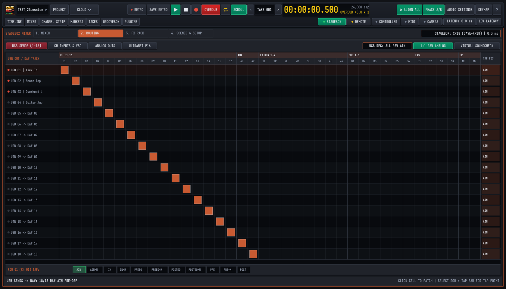
2.6.3 4. OUTPUT / MON Playback Routing (USB -> Aux -> Main L/R) & Hardware Faders#
When tracking or mixing back through a digital stagebox connected to your studio monitors, hearing Cave Recorder's Master Bus output through the stagebox Main L/R jacks requires the stagebox's USB return stereo pair to feed its Aux Return and Main L/R bus. Open the Output & Monitor Routing controls (flagged with !USB whenever USB playback is unrouted or muted):
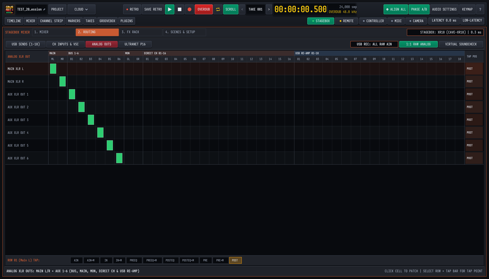
- One-Click
USB -> Aux -> Main L/RRouting (18x18X-Air Stageboxes): OnXR18,XR18V2,MR18,MR18V2,X18, andX18V2units, pick the stereo USB return pair carrying Cave Recorder's main output inUSB RETURN STEREO PAIR(1/2,3/4,5/6,7/8,9/10,11/12,13/14,15/16, or17/18) and clickROUTE USB <X/Y> -> AUX -> MAIN L/R. Cave Recorder switches the stagebox Aux source to USB (AUX SRC: USB), routes the Aux Return into Main L/R (AUX -> LR: ON), and verifiesMAIN OUT: LRwithout ever auto-raising hardware faders. - Side-by-Side Hardware Output Faders & Mutes (
HW AUX RTN&HW MAIN L/R): Adjust the stagebox's physical Aux Return fader (HW AUX RTN) and Main Stereo output fader (HW MAIN L/R) from-infto+10.0 dBalongside dedicatedMUTEswitches, or clickSET AUX RETURN TO 0.0 dB UNITYto place the Aux Return at exact unity before bringing upHW MAIN L/R. On2x2X-Air models (XR16,XR12,MR12, andV2revisions), output routing exposes the Aux Return mix and Main L/R fader and mute. OnX32andM32consoles (UDP10023), it exposes the Main Stereo bus fader and mute while AuxIn routing stays on the hardware console. - Speaker-Safe Defaults & Console Quick Control:
Double-Clickor OPT/ALT +ClickresetsHW AUX RTNto0.0 dBunity and resetsHW MAIN L/Rto a speaker-safe-20.0 dBrather than full unity. Stagebox output fader positions remain hardware-live and are never overwritten by opening a Session. When a stagebox is paired, you can also adjustMAINandAUXfaders and mutes directly from Zone 2 of the Mix Console Master Strip (HW OUT|TAPE, see Section 4.3.3 in Chapter 4).
2.7 Connecting Hardware MIDI Gear, Floor Loopers & Hardware Latency Calibration (MIDI SYNC)#
Cave Recorder bridges hardware floor loopers, external drum machines, analog and digital synthesizers, MIDI footswitches, live-played virtual instruments, and tempo-synced console effects without imposing a rigid beat grid on your 00:00:00.000 multitrack timeline.
Click the fixed-width ● MIDI indicator pill in Row 2 of the Top Transport Deck (immediately left of ● CAMERA) to open the MIDI SYNC & HARDWARE CALIBRATION modal. The pill's LED updates live across four synchronization states:
| Top-Deck Pill LED | Sync State | Outbound MIDI Clock (24 PPQN) & Transport Behavior |
|---|---|---|
Dim (● MIDI) |
Free Time (Default) | Outbound 24 PPQN MIDI Clock (0xF8) is muted so external gear stays free-running. |
Gold (● MIDI) |
Freeform Loop Capture Armed | Outbound 0xF8 clock remains strictly muted between Stomp 1 and Stomp 2 so AUTO-clock hardware floor loopers never pre-lock to a stale tempo or pitch-warble when closing a loop. |
Crimson (● MIDI) |
4-Tap Count-In Pre-Roll | Streams 23 Beat-4 warmup clock pulses immediately after Tap 4 so external drum machines lock speed cleanly before Start (0xFA) lands on Beat 1. |
Emerald (● MIDI) |
Rational Tempo Locked | Streams continuous sample-locked 24 PPQN MIDI Clock (0xF8) derived from an exact rational sample span with zero cumulative drift across multi-hour jams. Hovering the pill (or enabling [?] Studio Coach) shows the locked tempo and samples per bar. |
2.7.1 Section 1: Gridless Looper Capture & 4-Tap Count-In Bridge#
The upper deck of the MIDI SYNC & HARDWARE CALIBRATION modal (1. GRIDLESS LOOPER & TAP-TEMPO BRIDGE) gives musicians two instant ways to establish a live studio groove without typing a BPM:
- 4-Tap Count-In Tap-Tempo (
TAP (T)&AUTO-REC ON BEAT 1):- Click the interactive 4-beat Tap Pad, click
TAP (T), press T on your keyboard while the modal is open, or tap a MIDI-learned footswitch four times in time with the room. - Cave Recorder computes a 4-tap regression tempo and predicts the exact Beat 1 downbeat sample, emitting 23 Beat-4 warmup clock pulses (Crimson LED) before firing
Start(0xFA) on Beat 1 (Emerald LED). - Latch
AUTO-REC ON BEAT 1if you want Tap 4 to automatically punch the Master Transport intoRecordon the predicted Beat 1 downbeat.
- Click the interactive 4-beat Tap Pad, click
- Freeform Hardware Floor Looper Bridge (
ARM LOOP CAPTURE&LOOP STOMP):- Select your intended loop length (
1 BAR,2 BARS,4 BARS, or8 BARS) and clickARM LOOP CAPTURE(or step on your MIDI-learned looper footswitch, defaulting toCC 80). - On Stomp 1 (loop start), the
● MIDILED illuminates gold and holds outbound MIDI Clock silent while you play your freeform riff. - On Stomp 2 (loop close, via footswitch or
LOOP STOMP), Cave Recorder locks an exact rational sample span (RATIONAL SPAN) matching your loop length to the single sample, turning the● MIDILED emerald so external drum machines,AUX 2Stereo Delay,4-Mode Modulation, and the native Groovebox lock tight to your floor looper with zero drift.
- Select your intended loop length (
- Beat-Quantized Rational Tempo Scaling (
0.5x,1.0x,2.0x) &CLR SYNC:- Once locked, click
0.5x(half-time),1.0x(unity), or2.0x(double-time) to switch clock speed cleanly on the next beat boundary while preserving exact integer periodicity against your audio loop. ClickCLR SYNCat any time to release tempo lock and return to free time.
- Once locked, click
2.7.2 Section 2: MIDI Inputs & 1-Click [MIDI LEARN] Footswitches#
Section 2 (2. MIDI INPUTS & 1-CLICK [MIDI LEARN] FOOTSWITCHES) lists all connected USB and 5-pin DIN MIDI input ports and lets you bind any incoming MIDI CC or Note message to hands-free studio controls:
- Bindable Studio Actions:
Looper Capture Stomp(pre-bound toCC 80by default),Tap Tempo,Scale Half,Scale Double,Clear Sync,Play/Stop,Record,Toggle Overdub, andRetroactive Capture. - 1-Click Learning: Click
MIDI LEARNon any action row (the banner promptsLISTENING FOR MIDI CC OR NOTE), then press your hardware footswitch or controller pad. PressCANCELor ESC to abort learning, or clickCLEARto remove an assignment. Incoming bulk patch dumps (SysEx) are filtered cleanly at ingress so they never disturb live note or footswitch timing.
2.7.3 Section 3: MIDI Output Ports & 1-Click Hardware Latency Ping (PING)#
External hardware synthesizers and drum machines exhibit a measurable physical delay between receiving a MIDI NoteOn or Start (0xFA) message and delivering audio into your audio interface's analog inputs (typically 3 ms to 18 ms). Section 3 (3. MIDI OUTPUT PORTS & 1-CLICK HARDWARE LATENCY PING) calibrates and compensates each MIDI output port automatically:
- Configure Port Medium & Sync Routing:
- Toggle
USBvs.DIN 5-PIN: selectingDIN 5-PINenables wire-occupancy collision protection across the 5-pin DIN serial link so dense chords or continuous controller sweeps never delay0xF8clock ticks. - Independently toggle
CLOCK (0xF8)(ON/OFF) andSTART/STOP(ON/OFF) per output port.
- Toggle
- Select Return Input & Ping Mode:
- Click the
RETURN ADCbutton (IN 01..IN 32) to pick the hardware audio input receiving that synth or drum machine. - Toggle
PING MODEbetweenNOTE(for synthesizers, sending short test notes) and0xFA STEP 1(for step-sequenced hardware drum machines with a crisp hit programmed on Step 1).
- Click the
- Run 1-Click Calibration (
PING):- Click
PING. Cave Recorder verifies a quiet noise floor, emits 5 timed test bursts, detects each acoustic onset foot cleanly, computes the median hardware delay, and displays the calibrated offset in microseconds, milliseconds, and samples (for example,6420us / 6.4ms / 308 smp). ClickRESETto clear a stored offset. - All calibrated MIDI-to-ADC offsets are saved in microseconds inside
device_settings.jsonso switching between44.1 kHzand48.0 kHzpreserves physical timing accuracy. Whenever you pressPlayorRecordfrom standstill with calibrated external MIDI gear active, Cave Recorder automatically executes a brief, silent pre-roll (<= 25 ms) so Beat 1 of your external drum machine lands cleanly on sample0with zero transient chopping.
- Click
2.8 Connecting a Dual-Screen Studio Pad Surface (● CONTROLLER)#
Cave Recorder supports direct, low-latency USB control of a Dual-Screen Pad Controller (Studio Pad Surface) featuring two 480×272 color displays with exact 1:1 encoder column alignment (E1..E4 under Left screen, E5..E8 under Right screen), 16 velocity- and pressure-sensitive RGB pads, 8 touch-sensitive display encoders (E1..E8), 8 top soft keys (F1..F8), GROUPS A..H, dual 16-LED hardware level meters, and a 30-LED jog wheel ring.
The surface operates in two dedicated hardware personalities that you can switch instantaneously from either the hardware (SHIFT + CHANNEL) or the desktop Top Deck (● CONTROLLER):
[DRUM STUDIO](Frameless Dark Chassis with Archetype Accent): Full tactile workstation for Cave Recorder's native Groovebox,ANALOG BASSsynthesizer, andSTUDIO SAMPLER(SAMPLINGopens the 4-tabRECORD | EDIT | SLICE | ZONESampler view with dual-screen waveform and zero-crossing zoom, whileSHIFT + SAMPLINGopensSTEM & SYNC), plus 16 velocity pads,KEYBOARDmelodic mode, 64-stepSTEP MODE,NOTE REPEAT,ARP,ALL + NOTE REPEATBeat-Repeat pads, live CRT oscilloscope, andRECfor Pattern Overdub only.[CONSOLE DAW REMOTE](4 px Console Burgundy Frame, or Warm Preamp Copper inSTAGEBOX PREAMPS): Hands-on 8-channel Mix Console fader bridge with universal[M][S][R]Solo Gold tally styling, Stagebox hardware preamp gain and600 msguarded+48Vphantom power, dual-screenAUX SENDS(AUX 1..4on LeftE1..E4,AUX 5..8on RightE5..E8), built-in Processor curves and hosted Plugin (CLAP/AU) pages, 16-pad Ranges/Loop/Cue Markers/Pass Lanecomping (including direct Range-to-Sampler import andCONSOLE CAPTURE & RESAMPLE),SNAPSHOTS & TAKES, and guarded DiskTakerecording.
2.8.1 Dual-Screen Hardware Surface Zone Layout#
+----------------------------------------------------------------------+
| [F1] [F2] [F3] [F4] [F5] [F6] [F7] [F8] |
| +---------------------------+ +---------------------------+ |
| | LEFT 480x272 DISPLAY | | RIGHT 480x272 DISPLAY | |
| | (Scope / Matrix / EQ / | | (Macros / Step Detail / | |
| | Faders 1-4 / Take Reel) | | Faders 5-8 / Snapshots) | |
| +---------------------------+ +---------------------------+ |
| (E1) (E2) (E3) (E4) (E5) (E6) (E7) (E8) [METERS] |
| [LEVEL ] |
| [GROUPS A..H] +-------------------------+ ( JOG ) |
| [EDIT 2x4 ] | 13 14 15 16 (Top) | [30-LED] |
| [TRANSPORT ] | 9 10 11 12 | [FUNC ] |
| PLAY/REC/ | 5 6 7 8 | [ENTER ] |
| RESTART/SHIFT | 1 2 3 4 (Bot) | |
+----------------------------------------------------------------------+
Frame Tally:
[DRUM STUDIO] -> Slate / Archetype Accent | REC = [PAT OVR]
[CONSOLE DAW REMOTE] -> 4px Burgundy (#962836) | REC = [TAKE REC]
[STAGEBOX PREAMPS] -> 4px Copper (#C85A32) | F1-F8 = 0.6s +48V2.8.2 Standalone Helper Distribution & Operating System Setup#
Cave Recorder communicates with the USB controller through a lightweight standalone helper (extras/encdr-daemon/encdr-daemon) packaged alongside the direct desktop release outside Cave Recorder.app/Contents/. Cave Recorder launches and supervises this helper automatically on startup (or you can point the CAVEREC_ENCDR_DAEMON_BIN environment variable to a custom build). Pad strikes, rotary encoder turns, LED feedback, and dual-screen 480×272 display frames stream across a non-blocking real-time controller transport so sustained live performance never stalls the audio engine or the 60 Hz console display.
- macOS (Direct Distribution): Plug in the controller over USB and launch Cave Recorder. If a third-party background USB agent (
NIHardwareAgentorNIHostIntegrationAgent) holds exclusive access to the display interface, Cave Recorder flags a red LED on● CONTROLLERand reports the exact remediation banner insideAUDIO SETTINGS. Quit or unload the conflicting agent and reconnect the USB cable. - macOS (Mac App Store Edition): Because Mac App Store sandboxing prohibits launching external USB helper binaries, the Studio Pad Surface helper is intentionally disabled in the Mac App Store edition. Use the direct macOS distribution release for Dual-Screen Pad Controller support.
- Linux (
udevPermissions): Copy the bundledextras/encdr-daemon/60-encdr-maschine.rulesfile into/etc/udev/rules.d/so your active desktop user receives non-root USB and HID access (uaccess), then reload rules using the commands below. - Windows (
WinUSBDisplay Interface): Keep USB Interface 0 on the standard Windows HID driver for pads and buttons, and bind USB Interface 1 (bulk display output) to the WinUSB driver. If Interface 1 is unbound, Cave Recorder lights the Top Deck pill LED red and shows step-by-step WinUSB guidance insideAUDIO SETTINGS.
sudo cp extras/encdr-daemon/60-encdr-maschine.rules /etc/udev/rules.d/
sudo udevadm control --reload-rules
sudo udevadm trigger2.8.3 Reading the Top Deck ● CONTROLLER Status Indicator#
Row 2 of the Top Deck displays a dedicated hardware surface indicator pill (● CONTROLLER):
- Lit LED (Emerald in
[DRUM STUDIO], Gold in[CONSOLE DAW REMOTE]): Dual-Screen Pad Controller connected and active. Clicking the pill toggles cleanly between[DRUM STUDIO]and[CONSOLE DAW REMOTE](matchingSHIFT + CHANNELon hardware). - Amber LED: Helper process running and probing USB connection.
- Dim LED: Standby (no controller connected, clicking toggles personality) or disabled in Mac App Store sandbox builds (clicking opens
AUDIO SETTINGSto display the App Store sandbox notice). Hover (or turn on[?]Studio Coach) to inspect full status text and active personality. - Red LED (Driver, Clock, or Permission Fault): Exclusive USB interface contention (macOS background agent), missing Linux
udevrule, missing WindowsWinUSBdriver, or an OS monotonic clock domain mismatch (ClockMismatch). Clicking the pill opensAUDIO SETTINGSdirectly to the red diagnostic banner with exact platform instructions.
Typical Studio & Rehearsal Workflows
Step-by-step guides for band rehearsal capture, 30-minute retroactive memory rescue, multi-mic phase alignment and Polarity Maximizer optimization, overdub comping, live-take salvage, multi-camera rehearsal video capture with Cave Companion wireless mobile camera nodes and split-screen mixdowns, live looping with Pre-Tape Virtual Instruments, the Groovebox, and Studio Sampler resampling and slicing, hands-on Studio Pad Surface dual-personality tracking and performance ([DRUM STUDIO], SAMPLING, and [CONSOLE DAW REMOTE]), full Stagebox live FOH/IEM mixing with MY MONITOR and Virtual Soundcheck, and scripted studio automation via caverec-cli.
This chapter walks through ten end-to-end studio workflows that cover the day-to-day operation of Cave Recorder: capturing a full-band rehearsal with instant stereo reference mixes, rescuing an unrecorded jam from the 30-minute retroactive memory, phase-aligning a multi-microphone drum kit and guitar rig, tracking and comping layered overdubs in Pass Lanes, mixing with non-destructive Snapshots and Google Drive synchronization, salvaging a live band Take with non-destructive mistake surgery, capturing multi-camera 50 FPS studio and wireless Cave Companion mobile video with split-screen .mp4 and .fcpxml v1.9 multicam exports, jamming live with hardware floor loopers, Pre-Tape Virtual Instruments, Tempo-Synced effects, and the native Groovebox & Studio Sampler, running eyes-up dual-personality tracking on a Dual-Screen Pad Controller, and managing a live Stagebox FOH/IEM mix alongside scriptable caverec-cli automation.
3.1 Workflow 1: Full-Band Rehearsal Capture & Instant Reference Prints#
Studio Scenario: A four- or five-piece band gathers for a two-hour evening rehearsal. You want to record every song run-through across 12 to 18 channels without slowing down the room, mark strong sections on the fly, and hand every band member compact 24-bit .flac and 320 kbps .mp3 stereo mixes before they finish packing up their gear.
3.1.1 Rehearsal Capture Procedure#
- Launch the Session from Your Rehearsal Template:
- Press CMD + O (macOS) or CTRL + O (Windows/Linux) to open the
PROJECTmodal. - Select your band's Project pill, click
Template: XR18Base001orTemplate: GuitarBassDrumTrio001(or your custom saved room template), type a Session Name (Tuesday Night Rehearsal) and Session Tag (Rehearsal), and clickNew Session.
- Press CMD + O (macOS) or CTRL + O (Windows/Linux) to open the
- Arm All Active Input Channels:
- Press CMD + 2 (macOS) or CTRL + 2 (Windows/Linux) to view
MIXER. - Confirm that
CH01throughCH18(or all active mic and DI channels) have their crimson Record Arm (R) buttons engaged (clickRon each strip, or select a strip and press SHIFT + A). - Verify that
OVERDUBin the Top Transport Deck is off (unlit) so each recording starts a fresht = 0Take.
- Press CMD + 2 (macOS) or CTRL + 2 (Windows/Linux) to view
- Dial a Quick Monitor and Live Print Balance:
- While the band warms up, verify input levels average around
-18 dBFSRMS with peaks around-6 dBFS. - Set channel faders and stereo pans (
OverheadL/OverheadR,GuitarL/GuitarR,KeysL/KeysR), blend inAUX 1 REVERB(RVB) on snare and vocals, and engageTAPE SAT, the brickwallLIM(CEIL -0.3dB), and the2-TRK PRINTbutton on theMST MASTER BUSstrip. Because the live stereo Print records directly from the Master Bus output whenever2-TRK PRINTis armed, this monitor balance becomes your immediate reference mix.
- While the band warms up, verify input levels average around
- Start Recording Song 1 (
Take 001):- Just before the drummer counts in, press R (or click Record
●in the Top Deck). - Cave Recorder creates
Take 001at00:00:00.000and simultaneously writes raw 32-bit float pre-fader stems (Rec001) intoTake001/rec/and the live stereo Master Bus mix (Print001.wav) intoTake001/mix/.
- Just before the drummer counts in, press R (or click Record
- Drop Cue Markers on the Fly (M):
- Whenever a chorus groove locks in, a bridge arrangement changes, or a solo stands out during the performance, press M on the keyboard.
- Cave Recorder drops a timestamped standalone marker (
M005,M006, ...) at the exact live playhead sample without interrupting recording.
- Stop at the End of the Song (SPACE):
- When the final chord rings out, press SPACE (or SHIFT + SPACE).
- Cave Recorder closes all open audio files for
Take 001and automatically captures a post-recording console Snapshot (Auto-Save (Post-Recording)).
- Capture Subsequent Songs as Independent Takes (
Take 002,Take 003, ...):- When the band counts in the next run-through or the next song, simply press R again.
- Cave Recorder automatically increments to
Take 002with a brand-new00:00:00.000timeline origin. Repeat R, play the song, and press SPACE for every song of the night.
- Tag Keeper Takes and Convert Live Prints to
.flacand.mp3:- At the end of rehearsal, press CMD + 5 (macOS) or CTRL + 5 (Windows/Linux) to open
TAKES. - In the TAKES CATALOG, click
Rename(or click the Take title inline) to assign a descriptive song tag (such asNewSong_Run1orChorusKeeper). - Click
Export…on individual Takes (Convert Print to FLAC / MP3), or clickFLAC ALL PRINTSandMP3 ALL PRINTSin theTAKESheader bar to batch-encode every live stereo.wavPrint to 24-bit lossless.flacand 320 kbps CBR.mp3(with a Xing/Info seek header) and link both into<ProjectTag>/_Mixes/. (If you adjusted faders after recording and want an updated offline render instead of the live Print, toggleFLACand/orMP3on theMST MASTER BUSstrip and clickBOUNCEto render an offlineMix001.<flac|mp3>Mixdown).
- At the end of rehearsal, press CMD + 5 (macOS) or CTRL + 5 (Windows/Linux) to open
- Sync Reference Mixes to Bandmates' Phones and Browsers:
- Click
Upload Session Mixesin theTAKESheader (or open the Top DeckCLOUD ▾popover and clickSYNC SESSION MIXES). - Cave Recorder uploads the compact
.flacand.mp3reference mixes to Google Drive in seconds so every band member can stream.mp3mixes directly inside the Google Drive web browser preview player or download lossless.flacmasters on the drive home.
- Click
3.2 Workflow 2: Rescuing an Unrecorded Jam with 30-Minute Retroactive Capture (SAVE RETRO)#
Studio Scenario: Between rehearsed songs, the transport is stopped while the guitarist tunes. The drummer and bassist start an improvised groove, the rest of the band joins in, and eight minutes later they finish the best song idea of the night. Nobody pressed Record.
Because Cave Recorder continuously maintains a rolling 30-minute retroactive capture memory across all armed inputs whenever ● RETRO is active, the entire multi-channel performance is still in system memory waiting to be saved.
3.2.1 Retroactive Rescue Procedure#
- Keep
● RETROActive and Channels Armed During Rehearsal:- At the start of your session, verify that the
● RETRObutton in the Top Transport Deck is illuminated green and all live studio channels (CH01..CH18) have their crimsonR(Record Arm) buttons engaged. - Even while the transport is stopped (
■), Cave Recorder continuously retains the most recent 30 minutes of incoming 32-bit float audio from every armed channel in memory.
- At the start of your session, verify that the
- Trigger Retroactive Capture (
SAVE RETRO):- As soon as the unrecorded jam finishes (or even while the band is still playing), click the
SAVE RETRObutton in the Top Transport Deck, or press SHIFT + R.
- As soon as the unrecorded jam finishes (or even while the band is still playing), click the
- Verify the Rescued Take:
- Cave Recorder immediately flushes the rolling multi-channel capture memory to disk as a new numbered Take (
Take<NNN>), builds the multi-tier waveform overview, and switches the active console and timeline to the rescued Take.
- Cave Recorder immediately flushes the rolling multi-channel capture memory to disk as a new numbered Take (
- Trim Pre-Jam Room Chatter into a Clean Song Take (
SPLIT TAKE):- Press CMD + 1 (macOS) or CTRL + 1 (Windows/Linux) to switch to
TIMELINE. - Scrub or zoom (
ZOOM +or =, or vertical/horizontal drag on the timeline ruler) to find the exact moment the drummer counted in the jam, and click to place the playhead just before the first beat. - Click
SPLIT TAKEin the Timeline toolbar (or press M to drop a marker, openMARKERSwith CMD + 4 / CTRL + 4, and clickNEW TAKE -> ENDon that marker row). - Cave Recorder extracts the jam from that marker forward into its own clean
00:00:00.000Take and lets you move the earlier tuning Take to the archived list via[⋯] -> Archive…(or convert/purge an unwanted retroactive Take) inTAKES(CMD + 5 / CTRL + 5).
- Press CMD + 1 (macOS) or CTRL + 1 (Windows/Linux) to switch to
3.3 Workflow 3: Multi-Mic Drum & Guitar Cab Phase Alignment (ALIGN ALL & Φ)#
Studio Scenario: You are tracking a full band across 18 channels (CH01 01KickIn, CH02 02SnrTp, CH03 03OvrhdL, CH04 04GtrAmp, CH05 TomRack, CH06 TomFloor, CH07 OverheadL, CH08 OverheadR, CH09 SpdifSynthL, CH10 SpdifSynthR, CH11 BassDi, CH12 BassAmp, CH13 GuitarL, CH14 GuitarR, through CH18 RoomAmbience). Because acoustic wavefronts from the kick and snare travel several feet through the air before reaching the overhead and room microphones, and because a bass amp microphone lags behind a direct Bass DI box, summing the raw channels causes phase cancellation that thins out low-end punch and smears transient focus.
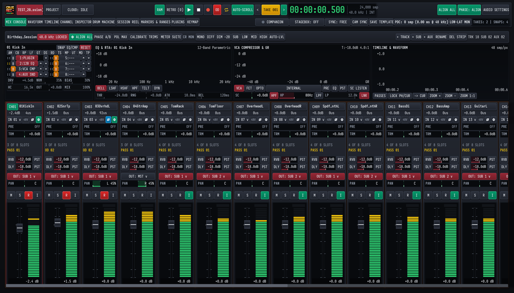
3.3.1 Multi-Mic Phase Alignment Procedure#
- Record a 10-to-15 Second Full-Kit & Band Reference Pass:
- Arm all drum and multi-miked instrument channels (
R) inMIXER(CMD + 2 / CTRL + 2). - Press R and have the drummer play a 10-to-15 second groove that hits the kick, snare, toms, hi-hat, and cymbals clearly while the bassist and guitarist play locked eighth notes.
- Press SPACE to stop recording.
- Arm all drum and multi-miked instrument channels (
- Verify the Timing Reference Channel (
0us):- Look at the phase delay readout directly beneath each channel strip's top identifier badge (
CH01 01KickInshows-2.4dB 0us). - By default,
CH01(01KickInor Overhead L) serves as the0usacoustic timing anchor against which correlated channels are measured.
- Look at the phase delay readout directly beneath each channel strip's top identifier badge (
- Run Automatic Multi-Mic Phase Alignment (
● ALIGN ALL):- Click the emerald
● ALIGN ALLbutton in the Top Transport Deck. - To align only a single channel strip (such as aligning
CH12 BassAmptoCH11 BassDi), select that strip and click its individualΦbutton. BothTrigger Global Multi-Mic Phase AlignandTrigger Phase Align on Inspected Trackcan also be bound to custom keyboard shortcuts inKEYMAP(CMD + 8 / CTRL + 8). - To manually flip 180-degree polarity (
Ø) on the currently inspected channel strip at any time, clickØor press SHIFT + P while inMIXER.
- Click the emerald
- Inspect Sub-Sample Delay (
µs) and Polarity (Ø) Corrections:- Cave Recorder cross-correlates the recorded multi-channel waveforms and engages the green
Φphase button and blueØpolarity button where needed: - On
CH02 02SnrTp, notice the readout updates to+1.5dB 420uswith both polarity inversion (Øblue) and phase delay (Φgreen) engaged to lock the snare transient in phase with the kick and overheads. - On
CH03 03OvrhdL, notice the readout updates to+0.0dB 1850uswithΦengaged to compensate for the acoustic propagation distance between the close mics and overheads.
- Cave Recorder cross-correlates the recorded multi-channel waveforms and engages the green
- A/B Audition the Phase Alignment (
PHASE A/B):- Press SPACE to play back the drum recording through your studio monitors.
- Click
PHASE A/Bin the Top Deck to toggle global phase alignment active vs. bypassed. - Listen to the low-frequency weight of the kick drum, the body of the snare, and the phantom center image of the kit snap into focus when phase alignment is engaged. All subsequent Takes in the Session inherit these aligned delay and polarity settings automatically.
- Run the Two-Mode Polarity & Phase Maximizer (
POLARITY MAX:Mode 1Instant Binary &Mode 2Multicore Allpass Solver):- Click
POLARITY MAXin the Control Room bar for an immediate< 50 msbroadband polarity check across connected acoustic groups (such as all drum mics in Group 1 and a bass DI + mic'd bass cabinet pair in Group 2) viaMode 1: Instant Binary Polarity Maximizer, selectingLow-End Weight (30-200 Hz Punch),Broadband Loudness (ITU-R BS.1770-4 K-Weighted LUFS),Transient Crest & Impact (60 Hz - 6 kHz + Top-K Crest Re-Scoring), orAnti-Comb Spectral Smoothness. Your original manualØ, delay, and allpass settings are automatically preserved for A/B comparison. - When mixing a dispersive ported bass cabinet (bass DI + mic'd cabinet) or an 8-mic drum kit where simple time delay cannot align both
60 Hzsub-bass resonance and2.5 kHzstick attack, switch toMode 2: Deep Multicore Spectral Phase & Allpass Solver(30 sto30 minanytime budget). - Toggle
[GAIN-MATCH AUDITION]on, click between[CANDIDATE A: PURE Ø - ZERO DISPERSION](optimal180°polarity flips only,0allpass stages,0.0 ustime shift),[CANDIDATE B: TIGHT LOW-END LOCK - MINIMAL POLES](polarity plus at most 1st-order LF rotator and 1 low-frequency biquad allpass stage<= 250 Hz, group delay< 2.5 ms),[CANDIDATE C: DEEP MULTI-BAND ALLPASS](polarity plus up to 5-stage allpass cascade, group delay<= 6.0 ms), and[CANDIDATE D: FULL WAVEFRONT + ALLPASS](causal microsecond time-of-flight alignment0..25,000 uson unlocked spot mics plus polarity and sparse allpass cascade) with click-free10 mscrossfades, and click[APPLY SELECTED TO CONSOLE]to program the top-of-strip zero-slot 5-stage Phase Align Network across the console.
- Click
3.4 Workflow 4: Layered Guitar & Vocal Overdubs with Pass Lane Comping (OD)#
Studio Scenario: The band has tracked a solid rhythm section performance in Take 001. Now the guitarist or lead vocalist wants to loop the chorus section, record three alternate solo or vocal passes (Rec002-OD, Rec003-OD, Rec004-OD) inside Take 001, and select the best performance using Pass Lanes.
3.4.1 Overdub Tracking & Pass Lane Comping Procedure#
- Select the Target Take (
TAKE 001):- Use
< TAKE 001 >in the Top Deck (ALT + [ / ALT + ]) or clickLoadonTake 001inTAKES(CMD + 5 / CTRL + 5) so the rhythm Take is loaded at00:00:00.000.
- Use
- Disarm Rhythm Tracks and Arm Only the Overdub Channel:
- In
MIXER(CMD + 2 / CTRL + 2), click the crimsonRbuttons on the drum and bass strips (CH01..CH03,CH05..CH12) to disarm them so they play back theirPASS 01(Rec001) stems from disk. - On the target overdub channel (for example,
CH04 04GtrAmporCH17 LeadVocal), engage bothR(Record Arm, or press SHIFT + A while the strip is selected inMIXER) andI(Input Monitor, or press SHIFT + I) so the performer hears their live input blended with playback.
- In
- Latch
OVERDUBandLOW-LATENCY:- Click
OVERDUBin the Top Transport Deck (or press O) so the button illuminates bright crimson and the timecode readout confirmsOVERDUB → TAKE 001. - Click
LOW-LATENCYin Row 2 of the Top Deck so any high-latency plugins on non-armed buses are bypassed in the live monitoring path.
- Click
- Define the Section Loop Range (
K,L&⇄):- Press CMD + 1 (macOS) or CTRL + 1 (Windows/Linux) to open
TIMELINE. - Place the playhead two bars before the solo or chorus entrance and press K (or click
RANGE START (K)). - Place the playhead a bar after the section ends and press L (or click
RANGE END (L)). - Press C (or click Cycle/Loop
⇄in the Top Deck) to enable loop playback across the range.
- Press CMD + 1 (macOS) or CTRL + 1 (Windows/Linux) to open
- Record Multiple Overdub Passes (
OD 02,OD 03,OD 04):- Press R to start overdub recording inside
Take 001. While the rhythm tracks play back, Cave Recorder captures the new performance ontoCH04asRec002-OD(displayed asOD 02) and automatically applies your calibrated roundtrip loopback offset (-640 smp (-13.3ms)). - Press SPACE at the end of the pass, return to the start of the range, and press R again to capture
OD 03(Rec003-OD) andOD 04(Rec004-OD).
- Press R to start overdub recording inside
- Expand Pass Lanes in
TIMELINE(E):- In
TIMELINE(CMD + 1 / CTRL + 1), press E (or clickEXPAND ALL PASSESin the timeline toolbar, or click the red pass-count pillv (2)on an individual track header) to expand the track's Pass Lanes. Press SHIFT + E (or clickCOLLAPSE ALL PASSES) at any time to fold them back into a single compact track row. - The top slice of the expanded track displays
PASS 01(BASE PASS), followed by stacked slices for each recorded Overdub Pass (OD 02,OD 03,OD 04, each badgedOVERDUBwith its sample spanSpan: 0..48000 smpand net record-offset-640 smp (-13.3ms)). Notice that the Mixer channel strip badge also updates to showOD 02in amber when an Overdub Pass is active.
- In
- Audition and Select Active Pass Lanes (
Use PASS 01/★ OD 02):- The currently selected pass on a track is badged
ACTIVE COMP LANEand displays a green star button (★ PASS 01or★ OD 02), while every other pass is badgedSTANDBY COMP LANEwith a clickableUse PASS 01orUse OD 02button. - While looping playback (SPACE), click
Use PASS 01,Use OD 02, orUse OD 03on any Pass Lane row to promote that pass immediately as the active playback lane for the track. - To silence a pass temporarily without changing selection, click
M(Mute) on that Pass Lane row, or clickDelto remove a flawed pass from the Take.
- The currently selected pass on a track is badged
3.5 Workflow 5: Mixing, Non-Destructive Snapshots & Band Cloud Sharing#
Studio Scenario: Tracking and overdub selection are complete. Now you want to shape a polished mix using Subgroup Buses and Aux Sends, save several mix variations as Snapshots, compare a vocal-up mix against an earlier Snapshot using Live Mix (LIVE MIX), render an offline Mixdown and Stem Bounces, and synchronize the project to Google Drive.
3.5.1 Bus Mixing, Snapshot A/B & Cloud Sync Procedure#
- Organize Channels into Subgroup Buses (
DRUM BUS&INST BUS):- In
MIXER(CMD + 2 / CTRL + 2), click the output routing selector (OUT: SUB 1 ▾) on all drum channels (CH01..CH08,CH18) to route them toSUB 1(DRUM BUS). - Route synths, bass, guitars, and keys (
CH09..CH16) toOUT: SUB 2 ▾(INST BUS), and route lead vocals (CH17) directly toOUT: MST ▾(MASTER BUS).
- In
- Apply Bus Processing and Spatial Aux Sends (
RVB&DLY):- Click
SELon theDRUM BUSstrip to load its 8-slot processor rack into the Upper Inspector Wells. - In the 12-Band Parametric EQ well (
2:12B EQ), sculpt a low-shelf boost around60 Hzand a gentle presence lift at4.5 kHzwhile watching the pre/post Dual-Trace RTA spectrum. - In the VCA Compressor well (
3:VCA CMP), select a4:1ratio, engage the sidechain high-pass filter (HPF), and setMIX 50%for punchy New York-style parallel drum compression. - Use each channel's
RVBandDLYsend sliders (togglingPOSTfor post-fader send operation) to feedAUX 1 REVERB(EMT 140 Platezero-latency convolution reverb) andAUX 2 TAPE DLY(CAPSTAN TAPEecho withWOW 18%,DMP 4.2k, andPPping-pong stereo widening).
- Click
- Save Named Mix Variations as Manual Snapshots (
SNAP MANUAL):- Press CMD + S on macOS (CTRL + S on Windows and Linux) from any workspace view, or press CMD + 5 / CTRL + 5 to open
TAKESand clickSNAP MANUALin theHISTORYtoolbar, to capture your baseline mix asSnap 004 [MANUAL]. - Return to
MIXER(CMD + 2 / CTRL + 2) and try a more aggressive mix variation (for example, pushingDRIVE +4.5 dBon the Master Tape saturator and riding the lead guitar+2.0 dB).
- Press CMD + S on macOS (CTRL + S on Windows and Linux) from any workspace view, or press CMD + 5 / CTRL + 5 to open
- A/B Compare Historical Snapshots with Your Live Mix (
A/B Live Mix):- In
TAKES(CMD + 5 / CTRL + 5), scroll to the SNAPSHOTS table and clickAUDITION SNAP 001(orAUDITION SNAP 004). - Cave Recorder automatically backs up your live, unsaved console adjustments into Live Mix (
LIVE MIX) and docks the globalAUDITIONING SNAP 001banner directly under the Top Deck across all workspace views. - While playback is rolling, click
A/B Live Mixrepeatedly to toggle instantaneously between the historical Snapshot and your live working mix with zero audio dropouts. - Click
Return to Live Mix(or press BACKSPACE) to restore your live working mix, or clickLOAD SNAPSHOTif you prefer the historical Snapshot and want to adopt it as the new working session state.
- In
- Render Offline Mixdowns and Stem Bounces:
- When your mix is finished, select
FLAC(24-bit lossless),MP3(320 kbps CBR), or both on theMST MASTER BUSstrip inMIXER(CMD + 2 / CTRL + 2) and clickBOUNCEto render an offline stereo Mixdown (Mix001.flac/Mix001.mp3) linked directly into<ProjectTag>/_Mixes/(with live progress and[✕]cancel visible in the Top Deck Async Job Status Bar), or trigger offline per-track Stem Bounces (Bounce001.wav) for archival delivery.
- When your mix is finished, select
- Synchronize to Google Drive (
Upload Session Mixes/Upload Session Full):- Click
Upload Session MixesinTAKES(CMD + 5 / CTRL + 5) to push all stereo.flacand.mp3Prints and Mixdowns to Google Drive for rapid band review. - Click
Upload Session Fullto synchronize the entire session folder (including 32-bit floatrec/stems,snapshots/, and session history) so remote bandmates who have linked the project can open the full multitrack session on their own studio workstations.
- Click
3.6 Workflow 6: Live-Room Gain Calibration, Bleed Gating & Rescuing a Magic Band Take#
Studio Scenario: A stoner/psych-rock four-piece has just played an electrifying 9-minute live run-through in Take 003 with everyone in the same room. The groove and collective tempo push are unrepeatable, so re-recording the song is out of the question. However, the raw tracking session has five real-world rehearsal-room flaws:
- Preamplifier gains were set unevenly during warm-up.
- Loud snare rimshots are bleeding into the rack and floor tom microphones, while stacked fuzz pedals on
CH13 GuitarLhum at-22 dBFSduring stops even though the guitarist plays a whisper-quiet-34 dBFSclean fingerpicked bridge and holds a4-secondharmonic feedback bloom at the outro. - One monster snare rimshot in the climax clipped the hardware ADC converter for
16 samples. - The vintage bass amp picked up
60 Hzmains buzz. - The guitarist hit one wrong chord in bar 42 of Chorus 2.
3.6.1 Step-by-Step Live-Room Cleanup & Mistake Surgery Procedure#
- One-Click Console Gain Calibration (
CALIBRATE TRIMS):- Open
MIXER(CMD/CTRL + 2) and clickCALIBRATE TRIMSin the Control Room bar. Cave Recorder scans the active Pass stems ofTake 003and sets every channel's input trim so average playing level hits-18.0 dBFSRMS with a-6.0 dBFSpeak ceiling clamp.
- Open
- Isolate Toms with
Drum Bleed([LRN]& Dynamic Decay LPF):- Select
CH05 TomRack, assign the Noise Gate in its processor rack, and switch the gate mode toDrum Bleed. - Solo a single rack tom hit on the timeline and click
[LRN]. The resonant key filter (55 Hzto350 Hz, default110 Hz,Q = 4.0) locks onto the drum's118 Hzfundamental pitch while the differential detector rejects snare and hi-hat spill. As each tom hit rings out, the dynamic decay low-pass filter sweeps from20 kHzdown to250 Hz..800 Hz(default380 Hz), removing harsh cymbal wash from the tom tail. Repeat onCH06 TomFloor.
- Select
- Tame Fuzz Roar While Preserving Clean Picking & Feedback (
Amp Dynamic):- Select
CH13 GuitarLand switch its Noise Gate toAmp Dynamic. - During the
-34 dBFSclean fingerpicked bridge, the autocorrelation pitch periodicity detector (H > 0.65) automatically engages Whisper Clean Lock, keeping every quiet note wide open without manual automation. - During the outro's
4-secondharmonic feedback swell, Feedback Bloom Lock (H > 0.80, release1.5 s..5.0 s, default2.5 s) holds the gate open until the guitarist slams the final palm-mute stop, wherePalm-Mute Clampsilences the60 Hzfuzz roar in15 ms..40 ms(default18 ms..22 ms) along a click-free S-curve. EnableHF Tameto shelf down> 3.5 kHzfuzz fizz on fading chord tails.
- Select
- Level the Live Vocal Without Boosting Drum Spill (
Vocal Rider+De-Esser):- On
CH17 LeadVocal, enableVocal Rider(Target -18 dBFS,Range ±6 dB) withBreath / Bleed Freezeset to-46 dBFSso the fader rides quiet verses and loud choruses smoothly but freezes whenever the singer steps back from the mic between lines. Follow withDe-Esserto catch120 HzP/Bplosives and6.5 kHzsibilance before theOptocompressor.
- On
- Reconstruct the Clipped Snare Rimshot (
[REPAIR CLIPPING]):- Switch to
TIMELINE(CMD/CTRL + 1), selectCH02 02SnrTp, bracket the clipped rimshot withKandL, and click[REPAIR CLIPPING]. Cave Recorder's spectral waveform interpolation reconstructs the missing16-sampletransient peak cleanly.
- Switch to
- Strip
60 HzMains Buzz (Hum Canceller) & Graft the Clean Bar 42 Chord ([PATCH FROM SOURCE...]):- On
CH12 BassAmp, enable the60 Hz12-Harmonic CombHum Canceller(45 Hz..65 Hzfundamental,Q = 20..100, defaultQ = 60) to notch out60 Hz .. 720 Hztransformer buzz without thinning out the bass cabinet low-mids. - On
CH13 GuitarL, bracket the 1-bar wrong chord in Chorus 2 (KandL), click[PATCH FROM SOURCE...], and point to the matching bar in Chorus 1. Cave Recorder micro-aligns the phase and transient correlation within±50 msand crossfades the clean chord in place while leaving the originalRec001.wavstem untouched on disk.
- On
- Check Translation on the Control Room Monitor Bar & Bounce:
- Audition the mix through the
MONITOR:Control Room Bar (SUB,MID + MONO,STEREO DIFF, andAUTO LEVELbypass) while verifying that the Master Bus Broadcast Metering Suite (METER SUITE) shows-11.5 LUFSShort-Term,-0.5 dBTPTrue Peak, and a punchy8.5 dB PSRcrest factor. ClickBOUNCEwithFLACandMP3enabled to publish the rescued live performance to_Mixes/.
- Audition the mix through the
3.7 Workflow 7: Multi-Camera Rehearsal Video Capture, Cave Companion Mobile Camera Nodes & Split-Screen Video Mixdowns#
Studio Scenario: Your band wants to capture a live rehearsal performance on video from three angles (a desktop USB/HDMI overhead drum camera, plus two bandmates' companion devices mounted on mic stands as wireless 1080p50 Cave Companion camera nodes), trigger recording remotely from across the room, and export both a 3-camera split-screen .mp4 video with console-mixed audio and a Final Cut .fcpxml v1.9 multicam timeline before leaving the studio.
3.7.1 Step-by-Step Multi-Camera & Mobile Companion Procedure#
- Pair Bandmates' Companions in the
REMOTEWorkspace (CMD/CTRL + 0):- Click
● REMOTEin Row 2 of the Top Deck (or press CMD/CTRL + 0) to open the dedicated Cave Companion workspace on the desktop workstation. Cave Recorder advertises itself automatically over local Wi-Fi via Bonjour (_caverec._udp) and UDP discovery, while also displaying a large, integer-alignedcaverec://pairQR code (with a one-clickENLARGE QRstudio-distance lightbox), a one-clickCOPY PAIRING URLclipboard button, a 6-digit Studio PIN fallback, and app download QR codes for Android and iOS. - Each bandmate can either scan the studio QR code inside Cave Companion or tap
PAIR ON WI-FIwhen their tablet or phone auto-discovers the studio workstation on the local network, then verify the matching 6-digitMATCH CODEand clickAPPROVEright in the global desktop Top Deck approval banner without leavingMIXER. AssignFull Control + Camerato the drummer's companion device (so the drummer can start and stop Takes from behind the kit) andCamera + Playerto the guitarist's companion device.
- Click
- Verify
50 FPSCFR Lock & Calibrate Camera Latency (3-Second4-Pulse Flash, Full-Window Flash or Clapper):- Arm the desktop USB/HDMI drum camera (
Cam01-Drums) at1080p50CFR (960audio samples/frame at48.0 kHz, or30/60 FPSCFR fallback on cameras without 50 Hz modes). If calibrating the camera for the first time, click● CAMERAand run the 3-Second Camera Latency Calibration modal using4-Pulse Vernier Flash(external cameras),Full-Window White Flash(built-in laptop webcams facing the room), orInteractive Clapper / Hand Clapso Cave Recorder stores its exact sub-frame optical latency. - On both companion devices, switch to the
CAMERAtab and verify the green Clock Lock Badge shows< 0.5 mswireless clock lock alongside live 16-channel peak meters. Arm the mobile camera so the HUD displaysCAMERA ARMED • AUTO-REC WITH DAW(bothFull Control + CameraandCamera + Playercompanions record and upload automatically when the desktop DAW tracks a Take, andFull Controldevices can also tapRECORD DAW TAKE/STOP TAKE & SYNCdirectly from the camera HUD). For first-time optical calibration, open the collapsibleFLASH SYNC ▾drawer and trigger the Rear LED Torch 4-Pulse Calibration, which measures sensor delay directly against wireless studio-clock timestamps with no phone speaker or microphone audio loop.
- Arm the desktop USB/HDMI drum camera (
- Trigger Multi-Track Audio + Multi-Camera Video Recording Remotely:
- From behind the drum kit, the drummer taps Record (
●) on the Cave CompanionTRANSPORTorMIXERTop Deck (orRECORD DAW TAKEinCAMERA). - Desktop Cave Recorder creates
Take 001at00:00:00.000, turns the Top-Deck● CAMERALED crimson along with the red Recording Tally Border across the desktop Video Monitor and both mobile camera screens, and records up to 32 channels of 32-bit float audio stems (rec/*.wav), the live Master Bus stereo Print (mix/Print001.wav), and sample-locked CFR video streams (video/*.mp4+.vididxframe indices).
- From behind the drum kit, the drummer taps Record (
- Automatic Wireless Camera Ingest When Recording Stops:
- When the song ends, the drummer taps Stop (
■) (orSTOP TAKE & SYNC). - Both companion devices immediately finalize their local
1080p50.mp4and.vididxindex files and transfer them automatically over local Wi-Fi (whenAUTO-PUSH ON STOPis active, with integrity verification and automatic resume) into<TakeFolder>/video/on the desktop workstation. - As each camera transfer completes, Cave Recorder automatically ingests the new angle into
Take 001's stacked multi-lane Video Timeline Strip time-anchored frame-accurate filmstrip (with 35 mm sprocket tick rails and16:9Frame Loupe skimming) inTIMELINE(CMD/CTRL + 1). If any angle needs a fine visual tweak, drag its Camera Trim Offset slider while watching the real-time Video Monitor.
- When the song ends, the drummer taps Stop (
- Render a Split-Screen
.mp4Video Mixdown &.fcpxmlv1.9 Multicam Timeline:- Open
Export…onTake 001inTAKES(CMD/CTRL + 5) to launch the Export Video Mixdown & Multicam FCPXML modal. - Select the
3-Cam Bandlayout (orSide-by-Side Cropwith horizontal camera pan adjustments,Side-by-Side 16:9, orQuad 2x2) and clickRENDER VIDEO MIXDOWN (.MP4). Cave Recorder's split-screen video compositor and hardware video encoder render<TakeFolder>/mix/GF_20261020-1_Take001_VideoMix001.mp4(combining50 FPSvideo withAAC-LCstereo console audio) alongside gapless48.0 kHz.flacand.mp3audio prints, linking them into<ProjectTag>/_Mixes/. - Click
EXPORT MULTICAM FCPXML (.FCPXML)to write both a stacked split-screen timeline (<adjust-crop>,<adjust-transform>, and<timeMap>clock-drift tables) and a native<mc-clip>multi-camera switching timeline into<TakeFolder>/export/.
- Open
- Review Multi-Angle Video & Audio Prints on Mobile (
PLAYER& Google Drive Sync):- Bandmates open the
PLAYERtab in the Cave Companion app (or download from Google Drive Cloud Sync, which automatically skips already-uploaded files and resumes interrupted transfers) to switch live between all three camera angles (Cam01-Drums,Cam02-GtrMobile,Cam03-RoomMobile) and.flac/.mp3audio prints with sample-locked audio-video playback.
- Bandmates open the
3.8 Workflow 8: Live Looping, Pre-Tape Virtual Instruments & Groovebox Jamming#
Studio Scenario: You are jamming in the rehearsal room with a guitar floor looper, a USB MIDI keyboard driving a Pre-Tape virtual electric piano, and Cave Recorder's native Groovebox & Studio Sampler controlled either on desktop or wirelessly from a tablet running Cave Companion. You want all effects and drums locked tightly to your live groove, zero double-triggering when playing back recorded Takes, and full 30-minute SAVE RETRO rescue if an improvised jam catches fire.
3.8.1 Step-by-Step Gridless Sync, Pre-Tape Synth & Groovebox Procedure#
- Assign Pre-Tape Instruments on Console Strips (
[INST]):- In
MIXER(CMD/CTRL + 2), click the input selector (IN 01 ▾) onCH01, switch to theINSTRUMENTtab, and choose[NATIVE] CAVE DRUM MACHINE. (Optionally assign a second strip'sOUTbreakout toSTEMfor Kick or Snare so that drum voice gets its own dedicated console strip EQ, compressor, Aux Sends, and raw.wavstem.) - On
CH02, switch the input overlay toINSTRUMENT, select aCLAPor macOS Audio Unit (AU) synthesizer or electric piano, choose your MIDI input port and channel filter (OMNIorCH 01..16), and confirmSTEREOwidth. ClickGUIin Zone 2 whenever you want to tweak the synth's floating editor window. - Arm (
R) and enable monitoring (I) on your guitar, synth, and drum strips, and verify● RETROis green in the Top Deck so stereo retroactive memory captures every note live.
- In
- Establish Live Groove Tempo (
● MIDIorSTUDIO CLK):- Option A (Hardware Floor Looper Master): Click
● MIDIin Top Deck Row 2 to openMIDI SYNC & HARDWARE CALIBRATION, pick your loop length (2 BARSor4 BARS), and stomp your MIDI-learned footswitch (CC 80by default) to start and close your guitar loop. Outbound MIDI Clock stays silent while you record the loop and locks immediately on Stomp 2 (Emerald LED). - Option B (4-Tap Count-In): Press T four times inside the MIDI Sync modal (optionally latching
AUTO-REC ON BEAT 1so Take recording begins automatically on Beat 1). - Option C (Groovebox Tempo Master): Press CMD/CTRL + 6 to open
GROOVEBOX, confirmSTUDIO CLKis lit, dial in your tempo (BPM), and pressSEQ PLAYto roll a live rehearsal jam feeding the 30-minute● RETROmemory without even starting a Take yet.
- Option A (Hardware Floor Looper Master): Click
- Sync Console Delay & Modulation to the Room Groove (
[SYNC]&[LCK]):- On the
AX2 Aux 2 Delaystrip, engageSYNCso the delay time switches from milliseconds (TM) to musical subdivisions (DV, defaulting to dotted eighth1/8D). Try toggling0.5xor2.0xin● MIDIto hear authentic analog capstan pitch glides follow your tempo change. - Insert
4-Mode Modulationon your electric piano or guitar strip and engage bothSYNC(default1/2bar) andLCKso optical phaser or harmonic tremolo swells lock smoothly to Beat 1 with zero clicks.
- On the
- Perform Live Drum Variations (Desktop or Cave Companion Tablet
GROOVEBOX):- In
GROOVEBOX(or on a paired tablet'sGROOVEBOXtab), clickSTASH KITto bookmark your base drum sound before mangling the kit live withCTRL ALL,MORPH,HOLD FILL, and momentarySLIP BEAT-REPEAT(1/8,1/16,1/32,REV GRAIN,TAPE STOP). ClickRELOAD KIT(Q:BAR) to snap the entire kit back cleanly on the next downbeat. - If you want to audition a different Factory Kit across the pinned
METRONOMEpreset or the symmetric 12-kit[POCKET | CLUB]2-bank suite (STUDIO ANALOG,DESERT ROCK,SOUL POCKET,BOOM BAP,MOTORIK DRY,MODAL METAL,TECHNO PUNCH,DEEP SUB ELECTRO,BREAKS 174,HALFTIME SUB,PSY MATRIX, andACID & FUNK) mid-jam, keep+GROOVEturned OFF so swapping drum and bass sounds preserves all 64 of your Patterns and 16 Scenes untouched. - To add a live or sequenced monophonic bassline alongside the kit, select an
ANALOG BASSslot (such as slot12 ANALOG BASSinSTUDIO ANALOGorSOUL POCKET, or11 LADDER FUNKand12 ACID SQUELCHinACID & FUNK). Drag vertically on active bass steps to dial 12-TET pitches (holding SHIFT for octave leaps) or drag horizontally in2Dmode to paint tied notes, or play the focused bass voice directly from an external MIDI keyboard withMIDI: CHRMactive while drum pads stay silenced. Break the bass lane out to its ownSTEMconsole strip whenever you want dedicated console EQ, compression, or Aux Sends on the bassline.
- In
- Sample Live Rehearsal Moments & Slice Them in the
STUDIO SAMPLER(GROOVEBOX -> SAMPLER):- To grab a live drum break, guitar chord swell, or percussion loop without creating extra
Takeclutter, either bracket a recorded phrase inTIMELINE(K..L) and click-> SAMPLER(DRY PASSfor instant< 20 msstem extraction orPOST-FXfor a rendered console bounce), or switch to theSAMPLERtab insideGROOVEBOX(CMD/CTRL + 6), openRECORD, choose anyTRACK,SUBGROUP,AUX BUS,MASTER, orADC INsource (POST-FXdefault), and capture directly withTHRESHOLD(10 mspre-roll),BAR SYNC(1B..16B), orMANUALtrigger. - Switch to
SLICE, sweepSENSITIVITYinTRANSIENTmode (SuperFluxonset detector tuned for unisolated rehearsal rooms and amp bleed) or tap pads live inLIVE PADmode, then clickAPPLY TO KIT(spreading up to 16 chops across Groovebox pads with automaticChoke Groupassignment) orAPPLY TO TRACK(SLICE-LOCKacross up to 64 slices on one track with 1-clickLINEAR LOCKSorRANDOM LOCKS). Shape any slice with the2 x 4macros (Pitch,Start / Slice,Length,Attack,Decay / Rel,Filter / Tune,Reso / Fdbk,Grit / Crush),DJ FILTER/COMB RES, and per-voiceLFO, or commitCROP,NORM,BPM FITstretch, orCOMMIT FX BOUNCEwith full reversible Undo managed via theSample History (N)…drawer.
- To grab a live drum break, guitar chord swell, or percussion loop without creating extra
- Print Clean Audio
PassStems & Play Back with Pass Isolation:- Punch
Record(R) mid-jam (or press SHIFT + R forSAVE RETROrescue). Cave Recorder prints the Groovebox (including anySTUDIO SAMPLERvoices), any individualSTEMbreakouts, the stereo Pre-Tape virtual instrument, and your live guitars as standard 32-bit float.wavPassstems insideTake001/rec/. - When you disarm (
Roff) and disable monitoring (Ioff) on the Groovebox and virtual instrument strips and pressPlay(SPACE), Cave Recorder plays back the exact recorded.wavstems (preserving every liveCTRL ALL, Scene jump, Sampler chop, andSlip Beat-Repeatmove) while automatically silencing the live synth and sequencer so instruments never double-trigger. Idle virtual instruments drain their natural tails to-120 dBFSand enterINST: SLEEPat0%CPU automatically.
- Punch
3.9 Workflow 9: Eyes-Up Rehearsal & Tracking with a Dual-Screen Studio Pad Surface#
Studio Scenario: You want to stay hands-on at your Dual-Screen Pad Controller during band rehearsal and studio tracking, building beats and monophonic basslines in [DRUM STUDIO], flipping in one stroke to [CONSOLE DAW REMOTE] to ride console balances, adjust Stagebox mic preamps, start a full-band Disk Take, drop live Cue Markers and Loop Ranges on the fly, and even drop out the drum machine mid-Take without stopping the multitrack recorder.
3.9.1 Step-by-Step Dual-Personality Performance & Tracking Procedure#
- Build the Groove Eyes-Up in
[DRUM STUDIO]:- Confirm
● CONTROLLERis active in[DRUM STUDIO]mode (Emerald LED in Top Deck Row 2, or pressSHIFT + CHANNELon hardware). - Tap
BROWSEto audition the pinnedMETRONOMEkit or any of the 12[POCKET | CLUB]factory kits (keepingF7: +GROOVEoff when swapping sounds over an existing pattern). - Play all 16 voices live in
PAD MODE(F2: FIXED VELfor uniform velocity,F3: 16 VELto spread 16 stepped velocities of the focused voice across all 16 pads,F4: AUTO-FOCUS, orNOTE REPEATfor pressure-driven hi-hat and snare rolls where> 85%pad pressure triggers Accent). - Press
SHIFT + PAD MODE(KEYBOARD) on anANALOG BASSvoice to play legato1V/octbasslines across the 16 pads (contiguous 16-semitone default or folded musical scales viaE1: SCALEandE2/F5layout mode, plusARPviaNOTE REPEATinKEYBOARDmode). - Tap
REC([● PAT OVR]in cyan) to overdub live finger drumming or bass notes directly into the active Pattern with quantized or unquantized timing (QUANTIZEsnaps micro-nudge to0%,SHIFT + QUANTIZEtightens by50%). Remember thatRECin[DRUM STUDIO]only records Pattern Overdubs and never starts or stops a DiskTake. - Press
STEP MODEto toggle the 64-step sequencer grid: turn bareE1..E8to edit step Velocity, Gate, Micro-Nudge, Note, Tie/Slide, Flam/Ratchet, and Condition, or hold any step pad and turnE1..E8to write per-step macro Parameter Locks (holdERASEand touch an encoder to clear a single lock). - Hold
ALL([CTRL ALL], orALL + F1to pin) while turningE1..E8to sweep filter cutoff or decay across every unmuted drum voice at once, or holdALL + NOTE REPEATto fire live Slip Beat-Repeat fills (Pads 1..6divisions,Pad 7: REV GRAIN,Pad 8: TAPE STOP) while true song phase continues underneath. Bookmark your starting kit first withF5: STASH KITand snap back immediately viaF6: RELOAD KIT(or quantized to the next bar downbeat viaSHIFT + F6). - Press bare
SAMPLINGin[DRUM STUDIO]to open the dual-screenSTUDIO SAMPLER(F1: RECORD | F2: EDIT | F3: SLICE | F4: ZONE) with full-sample overview on the Left Screen, split zero-crossing zoom (E5Start /E6End) on the Right Screen, live pad-tap chopping on unlit pads, andF8: APPLYto assign slices to Kit or Track. PressSHIFT + SAMPLING(orCHANNEL -> F3: STEM PATCH) whenever you want the Pre-TapeSTEM & SYNCbreakout view.
- Confirm
- Flip to
[CONSOLE DAW REMOTE]for Stagebox Gains & Mix Balance (SHIFT + CHANNEL):- Press
SHIFT + CHANNEL(orSHIFT + PLUG-INto open the visual Surface Picker, thenF8). Both screens immediately frame themselves in4 pxConsole Burgundy (#962836) so you know at a glance that the surface now drives the Mix Console and DiskTakeTransport. - Press
MIXtwice to flip intoSTAGEBOX PREAMPS & +48V(framed in4 pxWarm Preamp Copper). Dial up to 8 Stagebox mic preamp gains in parallel withE1..E8(SHIFT + Turnfor0.5 dBprecision) and hold any soft keyF1..F8for600 msto safely engage+48Vphantom power on condenser mics. - Press
MIXagain to return toMAIN FADERS(using the universal[M][S][R]Solo Gold tally styling), bank acrossTracks 1..32,Subgroups 1..16,Aux Returns 1..8, andMasterviaGROUPS A..H, and holdMUTE,SOLO, orREC+Pads 1..16(orHold + F1to pin) to arm band tracks cleanly.
- Press
- Start a Guarded Disk
Take& Drop Live Markers/Ranges:- Tap bare
RECin[CONSOLE DAW REMOTE](withBROWSE->F8: OVERDUBorE8: REC MODEoff for a brand-newt = 0SessionTake, or on for a track-levelOverdub Pass). Both displays switch to a Crimson● TAKE RECheader badge. - Drop Live Cue Markers (
PAD MODE): PressPAD MODE(Cyan) and tap any unlit pad during the live Take to stamp a cue marker (M001..M016) at the rolling Playhead without interrupting recording. - Capture Live Song Sections (
SCENE) & Send to Sampler: PressSCENE(Amber) and tap an unlit pad (Pads 2..16) once at the start of the chorus (RANGE START) and once at the end (RANGE END) to create a labeled Range on the fly. Holding any lit Range pad lets you send that phrase straight into the Studio Sampler viaF5: -> SAMPLER(Dry Pass) orF6: POST-FX -> SMP(Post-FX Bounce), or pressSAMPLINGin[CONSOLE DAW REMOTE]to openCONSOLE CAPTURE & RESAMPLE(F1: RESAMPLE STRIP,F2: RESAMPLE BUS,F3: RANGE -> SAMPLER,F7: RETRO 30M). - Perform Mid-Take Drum Dropouts Safely: Press
SHIFT + CHANNELback into[DRUM STUDIO]while the band is still rolling. While a DiskTakeis recording, pressing barePLAYin[DRUM STUDIO]toggles a clean Drum Sequencer Dropout/Re-Entry without stopping the multitrack DiskTake.
- Tap bare
- Stop Cleanly, Comp
Pass Lanes& Audition ConsoleSnapshots:- Return to
[CONSOLE DAW REMOTE](SHIFT + CHANNEL) and stop the DiskTakeintentionally viaF8: END TAKE,SHIFT + PLAY, orSHIFT + REC(barePLAYand bareRECare locked by the Active Take Stop Guard so an accidental bump can never ruin a great take, while pressingSHIFT + ERASEtwice arms and confirms discarding a false start). - Press
PATTERN(PASS COMPING) and tapPads 1..16during playback or Cycle Loop (SHIFT + Tapa lit Range pad inSCENE) to auditionPASS 01vs.OD 02..OD 16on the focused track clicklessly. - Press
BROWSE(SNAPSHOTS & TAKES) to switch activeTakes directly on the Left Screen (E1, or browse and confirm with Jog Wheel + Push) and capture (F5) or audition (F6) ConsoleSnapshots on the Right Screen (while auditioning,F7switches toA/B LIVEandF8switches toLIVE MIX).
- Return to
3.10 Workflow 10: Live Stagebox FOH/IEM Mixing, Virtual Soundcheck & Scriptable Studio Automation (STAGEBOX & caverec-cli)#
Studio Scenario: Your band plays live through an XR18 / XR18V2 digital stagebox feeding both room PA speakers and four personal in-ear monitor buses (BUS 1..4) while Cave Recorder captures raw 18-channel multitrack Takes over USB. After soundcheck, you want each musician to dial their own IEM mix safely from their phone without touching Main PA faders, run a Virtual Soundcheck against Take 001 once the band leaves the stage, and verify your final Mixdown loudness and spectral balance with caverec-cli.
3.10.1 Step-by-Step Stagebox Live Mix, Virtual Soundcheck & CLI Workflow#
- Connect & Sync Channel Labels in
STAGEBOX(CMD/CTRL + 9):- Click
● STAGEBOXin Row 2 of the Top Deck and connect viaSCAN /xinfoin4. SCENES & SETUP. Remember that connecting never overwrites live hardware settings. - In
2. ROUTING, verifyUSB SENDS (1-18)shows CopperAINon all active recording channels (or click1:1 RAW ANALOG) so your multitrackTakestems record dry, untouched microphone signals regardless of PA EQ or compression. - In
1. MIXER, clickMIXER → STAGEBOXto push your Cave Recorder track names and colors onto the stagebox scribble strips.
- Click
- Build Personal Monitor Mixes & Hand Out Safe
MY MONITORAccess:- In
1. MIXER, clickBUS 1throughBUS 4in theSENDS ON FADERSrow (the fader caps turn amber and the exit banner displaysEXIT SENDS ON FADERS) to dial initial wedge/IEM balances, then clickOFFto return to theMAIN LR FADER LAYER. - In
4. SCENES & SETUP, assign each bandmate's paired Cave Companion device toMY MONITORpinned to their assigned monitor bus (BUS 1..6). Musicians can adjust their personal instrument levels, sweepMORE ME, and raiseAUX USBbacking/click level with zero exposure to+48Vphantom power, Main PA faders, or routing. KeepFULL MIXERprotected behindMIXER LOCKfor the front-of-house engineer's tablet.
- In
- Ring Out Wedges with
100-bin RTA&31-Band GEQ, Then RunVIRTUAL SOUNDCHECK:- Select
MAIN LRorBUS 1..6in1. MIXERto open the docked Stagebox DSP Inspector with live100-bin RTAbehind the 4/6-band PEQ and31-Band GEQ / TruEQ. Notch feedback resonances cleanly and patch vocal plate reverb or tap-tempo delay in3. FX RACK. - Once you have captured a 2-minute live
Take 001and the musicians step offstage, open2. ROUTING -> CH INPUTS & VSC, clickVIRTUAL SOUNDCHECK, and press SPACE to playTake 001back through the stagebox's hardware DSP, FX rack, and PA speakers. Fine-tune every EQ, gate, compressor, and monitor bus calmly, save the finished setup into<SessionFolder>/stagebox_scene.jsonviaCAPTURE HARDWARE -> SESSION, and click1:1 RAW ANALOGbefore the band returns to the stage.
- Select
- Automate Metering, Phase Audits & Offline Renders via
caverec-cli:- From any terminal (or Python script using
extras/python/caverec.py), attach directly to your running Cave Recorder session (--live) or process a closed session offline at20x–100xspeed (--offline --session <dir>), then consult Section 8.6 in Chapter 8 for the complete 30-command CLI, sample-clocked Probe pipeline, POSIX FIFO bridge, Python client, and 6 embedded Studio Engineering Skills reference:
- From any terminal (or Python script using
caverec-cli --live state summary --json
caverec-cli --live meter capture --range 0:10..0:40 --meters lufs,true_peak,crest,phase --json
caverec-cli --offline --session GF/GF_20261020-1_Rehearsal bounce mixdown --take 1 --flac --mp3Mix Console, Stagebox Mixer, Signal Flow & Channel Strips
Dynamic console topology (up to 32 mono, stereo-linked, Pre-Tape Virtual Instrument, or Drum Stem Breakout input tracks, 16 Subgroup Buses, and 8 Aux Returns), universal [M][S][R] Mute Amber, Solo Gold, and Record Crimson order across all four surfaces, 3-tab Input Routing (MONO, STEREO, INSTRUMENT), Master Bus Zone 2 HW OUT stagebox monitor faders and mutes, the full-featured desktop STAGEBOX workspace (1. MIXER with SENDS ON FADERS, MUTE GRP, Auto-Mix X/Y, and pinned MAIN LR / SOLO PHONES, 2. ROUTING 4-domain crosspoint matrix with 1:1 RAW ANALOG and VIRTUAL SOUNDCHECK, 3. FX RACK with 55 hardware FX, 4. SCENES & SETUP with stagebox_scene.json dual persistence and 64-slot hardware snapshots, and docked PEQ / 100-bin RTA / 31-Band GEQ inspector), automatic trim calibration, top-of-strip phase alignment, multi-instance reorderable 8-slot racks, Channel Strip large processor views, Control Room Monitor Bar, Broadcast Metering Suite, and [CONSOLE DAW REMOTE] control on a Studio Pad Surface.
The Cave Recorder Mixer (CMD + 2 on macOS, CTRL + 2 on Windows and Linux) models an in-line large-format studio recording and mixing desk, paired with a full-featured STAGEBOX hardware mixer workspace (CMD/CTRL + 9) for live FOH, IEM, and Virtual Soundcheck control over digital stageboxes. Every input channel, subgroup bus, stereo auxiliary return, and master bus stage is visible on a single dark-chassis surface using Plain Studio Language and a universal [M] (Mute Amber) -> [S] (Solo Gold) -> [R] (Record Crimson) control order across Desktop, Mobile Phone, Tablet, and Dual-Screen Pad Controller surfaces.
This chapter details the end-to-end audio signal path from physical preamplifiers to disk stems and main monitors, the seven functional zones of an Input Track channel strip, Subgroup Buses, Aux Returns, the pinned Master Bus (HW OUT | TAPE), the Control Room Monitor Bar and Broadcast Metering Suite, precision fader gestures, [CONSOLE DAW REMOTE] pad-controller operation, and the complete 4-tab desktop STAGEBOX workspace.
4.1 Console Architecture & End-to-End Signal Flow#
Understanding where audio is tapped for multitrack disk capture versus monitor and bus mixing is fundamental to operating Cave Recorder with confidence during live band tracking.
+====================================================================+
| CAVE RECORDER END-TO-END CONSOLE SIGNAL FLOW |
+====================================================================+
PHYSICAL AUDIO INPUT (IN 01..32), PRE-TAPE VIRTUAL INSTRUMENT (INST),
OR DRUM MACHINE VOICE STEM BREAKOUT (STEM)
|
v
[Input Trim (TRM: -24.0 to +24.0 dB / CALIBRATE TRIMS -18 dBFS)]
|
v
[Polarity Invert (Ø: 180°)] -> [Sub-Sample Delay (Φ: 0..50,000 us)]
|
v
[Zero-Slot Phase Align Network (5-Stage Allpass Rotator, 10 ms X-Fade)]
|
+-------------------------------+
| (Armed [R] + Record) | (When Input Mon [I] is OFF)
v v
+=============================+ +==================================+
| RAW PRE-FADER STEM RECORDER | | DISK PASS LANE PLAYBACK READER |
| <Take>/rec/..._Rec001.wav | | Active Pass: PASS 01 or OD 02..N |
| (Pre-inserts & pre-fader!) | | (Plus Range Comp & Spot-Heal) |
+=============================+ +==================================+
+---------------+---------------+
| <-- AUX TAP: [PRE] (Pre-Insert / Pre-Fader)
v
+==================================================================+
| 8-SLOT MULTI-INSTANCE REORDERABLE PROCESSING RACK (Slots 1..8) |
| * Input TAPE Saturation, Gain Utility & Transient Shaper |
| * 12-Band Dynamic EQ (2:12B EQ) <-- AUX TAP: [EQ] (Post-EQ) |
| * VCA/FET/Opto Comp, 3-Mode Gate (Expander/Drum Bleed/Amp Dyn) |
| * Amp Rig (HEAD ON/BYP + .nam) & Standalone Cab IR (.wav/.nam) |
| * Vocal Rider, De-Esser, MicroPitch, Delay, Ladder, Plate, Mod |
| * Movable Aux Send Tap Slot (4:AUX SND), CLAP & AU Plugins |
+==================================================================+
|
v
[Channel Fader (-inf to +12.0 dB), Pan (PAN) & Mute/Solo ([M]/[S])]
|
+---------------+---------------+--> AUX TAP: [POST] (Default)
| (OUT: SUB 1 / SUB 2 / MST) | (Aux Send Bus Summing)
v v
+=============================+ +==================================+
| STEREO SUBGROUPS (SUB 1..16)| | STEREO AUXILIARY RETURNS |
| DRUM BUS, INST BUS | | * AUX 1 REVERB (EMT 140 Plate) |
| * Trim (TRM), LINK & SEL | | LC, Pre-Delay (PD), Decay (DCY)|
| * 8-Slot SUB RACK & Sends | | * AUX 2 TAPE DLY (3-Mode Delay) |
| * Balance (BAL), M/S, Fader| | WOW, DMP, Time (TM), FB, PP |
+=============================+ +==================================+
+---------------+---------------+
| (Summing into Master Bus)
v
+==================================================================+
| STEREO MASTER BUS (MST MASTER BUS) |
| 1. Master Tape (TAPE SAT: DRIVE 0.0..+24.0 dB, WARM 0..100%) |
| 2. Master Bus Glue Compressor (COMP: Shared Threshold THR) |
| 3. Brickwall Limiter (LIM: THR -48..0 dB, CEIL -6.0..0.0 dB) |
| 4. Master Fader (-inf..+12.0 dB), Mute (M) & Broadcast Metering |
+==================================================================+
| | (When [2-TRK PRINT] Armed)
| v
| [CONCURRENT LIVE STEREO PRINT WAV]
| (Plus [FLAC]/[MP3] + [BOUNCE] -> _Mixes/)
v (Strictly Post-Print & Post-Bounce!)
+==================================================================+
| CONTROL ROOM MONITOR BAR (MONITOR: SPEAKER CHECK & LOUDNESS A/B) |
| * 4-Band Linkwitz-Riley Solo: [SUB] [LOW] [MID] [HIGH] |
| * [MONO] | [STEREO DIFF] | [DIM -20] | [AUTO LEVEL] |
+==================================================================+
| (Main Monitor Outputs 1/2)
v
[STUDIO CONTROL ROOM MONITORS & HEADPHONES]4.1.1 Dual-Path Capture: Raw Pre-Insert Stems Plus Live Processed Prints#
In traditional rehearsal spaces and project studios, engineers face a dilemma when tracking a full band:
- The Safe But Uninspiring Approach: Record flat tracks with zero processing so nothing can be ruined by an overly aggressive compressor or EQ setting, leaving the band with dry, unmixed rough bounces at the end of the night.
- The Inspiring But Risky Approach: Print heavy compression, EQ, and tape saturation directly onto the multitrack stems, risking permanent distortion or pumping if a guitarist boosts a pedal mid-song.
Cave Recorder resolves this dilemma through a split capture topology:
- Raw Pre-Fader Multitrack Stems (
<TakeFolder>/rec/): Every armed Input Track (R) writes its 32-bit floating-point WAV file (Rec001Base Pass orRec002-ODOverdub Pass) immediately after Input Trim (TRM), Polarity (Ø), and Phase Alignment (Φ), before the 8-slot insert rack and channel fader. You can dial in aggressive 8:1 drum compression, heavy tape drive, high-pass filters, or external CLAP and macOS Audio Unit plugins on the console during rehearsal knowing the underlying multitrack stem on disk remains 100% clean and unclipped. - Concurrent Live Stereo Master Print (
<TakeFolder>/mix/): Simultaneously, while the transport is recording aTake, the Master Bus (2-TRKenabled) captures the complete post-fader, post-subgroup, post-reverb, and post-limiter stereo mix in real time to aPrint<NNN>WAV file with automatic Plugin Delay Compensation (PDC) latency trimming. SelectingFLACand/orMP3and clickingBOUNCEon the Master Bus renders a 24-bit.flacmix file, a 320 kbps CBR.mp3mix file, or both simultaneously and links them into the Project's_Mixes/folder for immediate band sharing and cloud sync, while you retain every raw multitrack stem for later remixing or offline stem bouncing (covered in Chapter 7: Session Reel, Mixdowns, Snapshots, Disk Layout & Cloud Sync).
4.2 Input Track Channel Strips & Dynamic Console Topology (0..32 Tracks)#
Cave Recorder supports a dynamic console topology of 0 to 32 mono or stereo-linked Input Track channel strips (CH01 through CH32) alongside 0 to 16 stereo Subgroup Buses (SUB 1 through SUB 16), 0 to 8 stereo Auxiliary Return Buses (AUX 1 through AUX 8), and the Master Bus (MST MASTER BUS):
- Adding & Removing Strips (
+ TRACK,+ SUB,+ AUX,RENAME,DELETE STRIP): Click+ TRACKin the console toolbar to append a new Input Track (up to 32 tracks),+ SUBto add a stereo Subgroup Bus (up to 16 subgroups),+ AUXto add a stereo Aux Return bus (up to 8 Aux returns),RENAMEto edit the selected strip's scribble-strip label inline, orDELETE STRIPto remove it. Removing a track, subgroup, or Aux return is fully reversible viaUNDO(CMD/CTRL + Z), preserving its complete strip settings, routing, and Pass Lane state in the undo history. - Inline Scribble-Strip Renaming: Click any Track, Subgroup, or Aux Return nameplate header (
01KickIn,DRUM BUS,AUX 1 REVERB) to edit its name inline and press ENTER. - Mono & Stereo-Linked Input Channels (
IN 01vs.IN 01-02): Each Input Track can be bound to a single mono hardware input (IN 01throughIN 32) or configured as a Stereo-Linked Input Pair (IN 01-02,IN 03-04, ...) for stereo synthesizers, stage pianos, drum overheads, or stereo room microphones. Stereo-linked tracks record 2-channel interleaved Broadcast Wave.wavstems and process left and right channels together through a single stereo channel strip.
Each Input Track strip is organized vertically from top to bottom in strict signal-flow order.
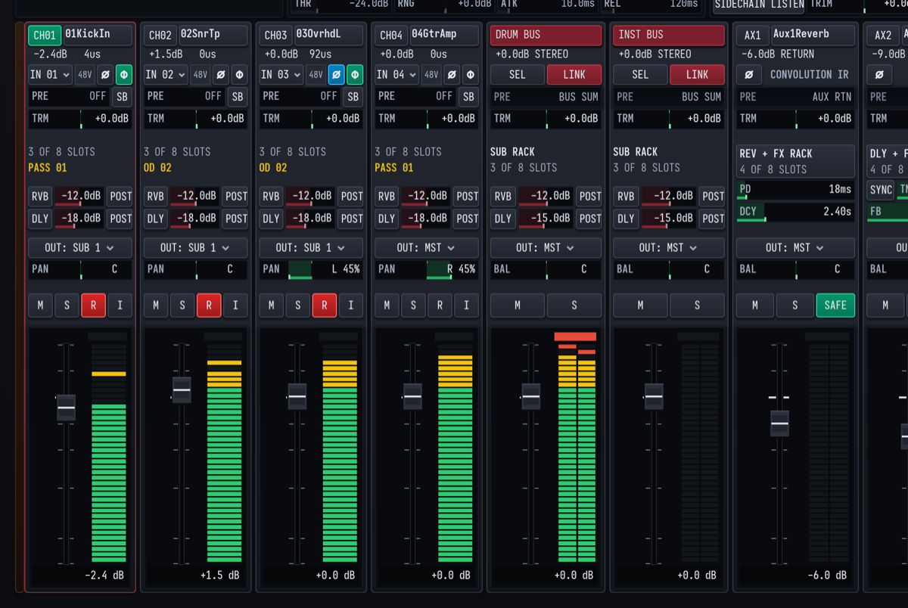
4.2.1 Input Track Control Reference Table#
| Strip Zone | UI Control / Badge | Range / States | Default | Primary Studio Function |
|---|---|---|---|---|
| 1. Header | CH01 .. CH18 Badge & Nameplate |
Custom text label (e.g., 01KickIn) |
CHNN |
Identifies channel number and scribble-strip name. Clicking selects the strip for inspection. |
| 1. Header | Level & Delay Readout | -inf..+12.0dB, 0us..50000us |
+0.0dB 0us |
Displays current fader setting and active sub-sample phase delay offset in microseconds (us). |
| 2. Input & Phase | Input Source (IN 01 v / INST v) |
MONO (IN 01..32), STEREO, INSTRUMENT (CLAP / AU / Drum Machine), Drum STEM, or NONE (PLAYBACK) |
IN NN |
Assigns a physical hardware input, a Pre-Tape Virtual Instrument (with Zone-2 GUI and MIDI status bar), a Drum Machine voice breakout, or pure disk playback. |
| 2. Input & Phase | Polarity Invert (Ø) |
Off / Active (cyan, SHIFT + P) | Off | Flips signal polarity by 180° on the inspected strip to correct underside snare mics or inverted cables. |
| 2. Input & Phase | Phase Align (Φ) |
Off (dark) / Active (emerald) | Off | Engages sub-sample acoustic delay compensation (0.00 ms to +50.00 ms) calculated by ALIGN ALL. |
| 2. Input & Phase | Hardware Preamp (PRE / PRE!, 48V & SB) |
-12.0 dB to +60.0 dB (0.5 dB steps), OFF when unpaired, 600 ms 48V hold, SB quick-jump |
Hardware truth | Controls remote Stagebox analog mic preamp gain (PRE, switching to PRE! if the hardware USB tap is not raw analog, with an amber Δ delta indicator when live gain differs from the saved Session) and +48V phantom power when an X-Air OSC or X32 OSC stagebox is connected. Clicking SB jumps straight to that channel inside STAGEBOX (CMD/CTRL + 9). |
| 2. Input & Phase | Input Trim (TRM) |
-24.0 dB to +24.0 dB |
+0.0 dB |
Adjusts pre-insert digital input gain before disk stem capture and the 8-slot rack. |
| 3. Rack & Pass | Rack Slot Summary | 0 OF 8 SLOTS .. 8 OF 8 SLOTS |
3 OF 8 SLOTS |
Shows active processor count in the channel's 8-slot insert rack. |
| 3. Rack & Pass | Active Pass Badge | PASS 01, OD 02, OD 03.. |
PASS 01 |
Displays which Pass Lane is currently selected for playback inside the active Take. |
| 4. Aux Sends | Reverb Send (RVB) |
-inf (-60.0 dB) to +12.0 dB |
-12.0 dB |
Controls send level from this channel to the stereo AUX 1 REVERB bus. |
| 4. Aux Sends | Delay Send (DLY) |
-inf (-60.0 dB) to +12.0 dB |
-18.0 dB |
Controls send level from this channel to the stereo AUX 2 TAPE DLY bus. |
| 4. Aux Sends | Send Tap Selector | PRE / EQ / POST |
POST |
Selects pre-insert (PRE), post-EQ/pre-fader (EQ), or post-fader (POST) send pickoff point. |
| 5. Routing & Pan | Output Bus (OUT: ... ▾) |
SUB 1..SUB 16, MST |
OUT: MST ▾ |
Routes post-fader channel output to one or more Subgroup Buses and/or the Master Bus. |
| 5. Routing & Pan | Stereo Pan (PAN) |
L 100% .. C .. R 100% |
C (Center) |
Positions the channel across the stereo field using a constant-power panning taper. |
| 6. Switch Bank | Mute (M) |
Off / Mute Amber (SHIFT + M) | Off | Silences post-fader channel audio and POST aux sends without stopping pre-fader recording. |
| 6. Switch Bank | Solo (S) |
Off / Solo Gold (SHIFT + S) | Off | Isolates soloed channels in Solo Gold (#EAB308 / #F1C40F) and illuminates SOLO (N)·CLEAR in the Top Deck without affecting multitrack recording. |
| 6. Switch Bank | Record Arm (R) |
Unarmed / Record Crimson (SHIFT + A) | Armed on active inputs | Arms the channel for disk stem capture and rolling 30-minute retroactive memory capture. |
| 6. Switch Bank | Input Monitor (I) |
Auto Playback / Live Input (SHIFT + I) | Off | Forces live physical input monitoring through the channel strip even during transport playback. |
| 7. Fader & Meter | Channel Fader & 40-Seg Meter | -inf (-60.0 dB) to +12.0 dB |
+0.0 dB |
Controls post-insert mix level with a brushed silver fader cap alongside a 40-segment Peak/RMS bargraph with peak hold. |
4.2.2 Zone 1 & Zone 2: Track Header, Input Routing, Polarity, Phase & Trim#
At the top of each Input Track strip (CH01 through CH18), the Track Header displays the channel badge (CH01 highlighted in emerald when selected) and the custom scribble-strip name (01KickIn, 02SnrTp, 03OvrhdL, 04GtrAmp). A crimson outline borders the entire selected channel strip to show at a glance which track is currently loaded into the four Upper Console Wells (on the MIXER view, CMD/CTRL + 2) and the full-screen CHANNEL STRIP view (CMD/CTRL + 3). Immediately beneath the track name, a compact dual telemetry line reports the current fader gain and the sub-sample phase delay offset in microseconds (such as -2.4 dB 4 µs on CH01, +1.5 dB 0 µs on CH02, and +0.0 dB 92 µs on CH03).
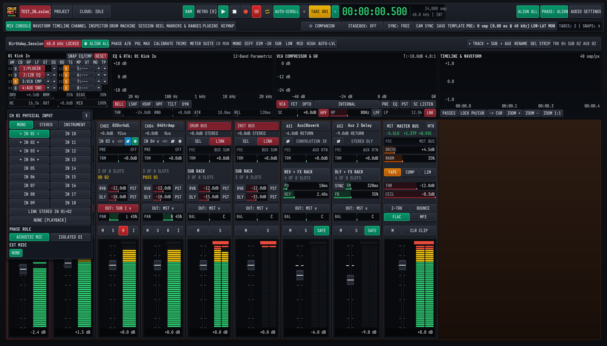
Clicking the Input Source Selector (IN 01 v or INST v) opens the 3-tab floating input routing overlay (MONO | STEREO | INSTRUMENT):
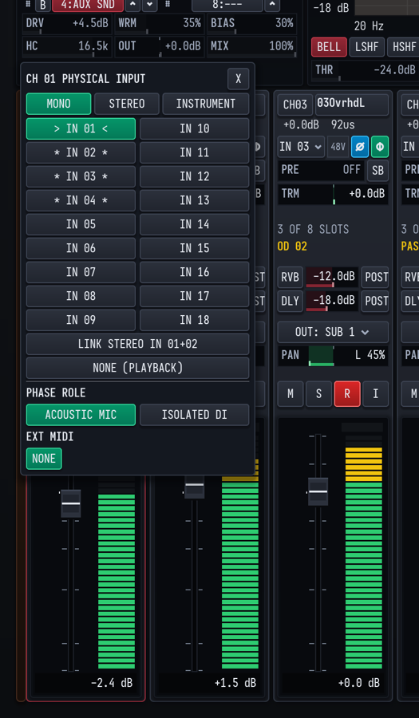
MONO&STEREOTabs (Hardware Inputs, Phase Role & External MIDI): Bind the strip to any mono physical input (IN 01throughIN 32), any stereo-linked pair (LINK STEREO IN 01+02, ...), a Drum Machine individual voice breakout, orNONE (PLAYBACK). Two compact footer rows sit below the hardware input grid:PHASE ROLE:(ACOUSTIC MIC|ISOLATED DI): Marks whether the channel participates in automatic multi-microphoneALIGN ALLphase correlation (ACOUSTIC MIC, default for microphones) or stays excluded at0 us(ISOLATED DI, ideal for bass/guitar DI boxes and external synthesizers).EXT MIDI:(NONE|<MIDI Output Port>+CONSOLE/HW MIX): Binds an analog return strip to a calibrated external hardware synthesizer or drum machine MIDI output port so Cave Recorder automatically compensates its measured microsecond MIDI-to-ADC delay across first-generation Takes and Overdub Passes.
INSTRUMENTTab & Pre-Tape Virtual Instrument Strip Layout ([INST v]&[GUI]): Assigns the native[NATIVE] CAVE DRUM MACHINEor any indexedCLAPinstrument or macOS Audio Unit ('aumu') virtual instrument directly at the Track Input Stage (upstream of the 30-minute stereoRETROmemory, the 32-bit floatrec/*.wavstem recorder, and the 8-slot insert rack). Configure the MIDI Input Port (ALL MIDI INPUTSor a specific controller port), Channel Filter (OMNI,CH 01..16, orSYNC ONLY), and Output Width (STEREOorMONO). When an instrument is assigned, Zone 2 preserves the exact same strip height while adapting cleanly in place:- Row 1:
[INST v](illuminated cyan when ready, amber if! MISSING),[GUI](opens the floating instrument editor window or jumps to theDRUM MACHINEtab),[Ø], and[Φ](automatically isolated for virtual instruments). - Row 2 (Live MIDI & Sleep Status Bar): Shows the active MIDI filter (
MIDI: OMNI,MIDI: CH01, orSYNC ONLY) with an emerald note-activity indicator lamp, switches toINST: SLEEPat0%CPU once the instrument is disarmed and unmonitored and its natural voice tail decays below-120 dBFS(sendingSustain OffandAll Notes Offcleanly so notes never chop mid-decay), or displays! MISSINGif an instrument plugin is uninstalled on another computer. - Row 3 (
TRM): Retains the-24.0 dBto+24.0 dBdigital trim bar post-instrument, pre-rack.
- Row 1:
- Pass Playback Isolation on Pre-Tape Instrument Strips: When playing back an existing
Takeon a disarmed, non-monitored[INST]strip (Roff,Ioff) that has a recorded audioPass(Rec001.wav), Cave Recorder streams the recorded.wavstem and silences the live instrument engine so recorded synth or drum performances never double-trigger. Re-enablingR(withOD) orIwakes the live instrument instantaneously.
Directly to the right of the input dropdown sit two phase-conditioning switches paired with a zero-slot top-of-strip allpass phase rotator:
Ø(Polarity Invert, SHIFT + P on the inspected strip): Reverses the positive and negative waveform excursions by180°. It illuminates cyan when active (for example, onCH02 02SnrTpwhen phase-aligning a snare microphone against overheads or a bottom snare mic, or after running theMode 1Instant Binary Polarity Maximizer).Φ(Sub-Sample Phase Alignment & Zero-Slot Phase Align Network): Illuminates emerald when automatic or manual multi-mic phase alignment is active on the channel. In addition to applying a sub-sample time-of-flight delay between0.00 msand+50.00 ms(0 usto50,000 us), every channel strip contains a built-in, zero-slot 5-stage Phase Align Network (one 1st-order20-500 Hzlow-frequency rotator plus four 2nd-order20-12,000 Hzbiquad allpass stages with a clickless10 msdual-branch preset crossfade) driven by theMode 2Deep Multicore Spectral Phase & Allpass Solver. Because the Phase Align Network lives at the top of the channel strip alongsideØandΦ, all eight insert slots remain completely free for creative mixing. See Chapter 5: Built-In Processors, Phase Alignment & External Plugins (CLAP & AU) for the complete multi-mic alignment and Polarity Maximizer workflow.
Below the input and phase row, the horizontal Input Trim (TRM) bar adjusts pre-insert gain from -24.0 dB to +24.0 dB around a center 0.0 dB detent. Use TRM (or click CALIBRATE TRIMS in the Control Room bar to automatically calibrate all active channels to -18 dBFS RMS with a -6 dBFS peak ceiling in one step) so that raw stems hit disk and analog-modeled insert processors in their optimal dynamic sweet spot.
When a Stagebox (X-Air OSC UDP 10024 or X32 OSC UDP 10023) is connected (see Section 2.6 in Chapter 2 and Section 4.6), Zone 2 also exposes direct hardware preamp controls above digital TRM:
PRE/PRE!(-12.0 dBto+60.0 dBin0.5 dBSteps) &SBQuick-Jump: Adjusts the physical analog microphone preamp on the stagebox (or-12.0 dBto+20.0 dBon stereo line inputs 17/18). DisplaysOFFwhen no stagebox is paired, switches toPRE!if the stagebox channel's USB send tap is not set to raw analog, and shows an amberΔdelta indicator whenever the live stagebox gain differs from the saved Session value. ClickingSBopens that channel directly inside the desktopSTAGEBOXworkspace (CMD/CTRL + 9).600 msHold-to-Toggle48VPhantom Power Interlock: To prevent accidental single-click phantom power switching on ribbon microphones or live studio monitors, toggling48Von either the desktop strip or the Cave Companion mobileMIXER/STAGEBOXview requires a continuous600 mspress-and-hold with a live crimson progress fill indicator (releasing early cancels the toggle without changing hardware phantom power state).
4.2.3 Zone 3 & Zone 4: Multi-Instance Insert Rack Summary, Active Pass Badge & Aux Sends#
Zone 3 provides instant status feedback for both multi-instance insert processing and track-level Pass selection:
N OF 8 SLOTS(Multi-Instance Reorderable 8-Slot Rack): Reports how many of the channel's eight reorderable processor slots are currently populated (for example,3 OF 8 SLOTSwhen12B EQ,VCA CMP, andAUX SNDare active). Any built-in studio processor (12-Band Dynamic EQ,VCA/FET/Opto Compressor,Tape Saturation,Context-Aware Gate,Guitar/Bass Amp Rig, standaloneCab IRSpeaker Cabinet & Linear IR Loader,De-Esser,Vocal Rider,Transient Shaper,Ladder Filter,Modulation,Micro-Pitch Doubler,Gain Utility, orSignal Repair) or externalCLAP/ macOSAudio Unitplugin can be inserted in multiple slots simultaneously on the same channel or Subgroup Bus. For example, you can place a surgical12-Band Dynamic EQin Slot 1 before anAmp Righead (HEAD ON/BYP) in Slot 2, insert stereoModulationin Slot 3, follow it with a standaloneCab IRspeaker cabinet in Slot 4, and add a post-cabinet12-Band Dynamic EQand dualFET+Optocompressors in Slots 5 through 7, with independent per-slot parameter state, bypass, and real-time telemetry inCHANNEL STRIP(CMD/CTRL + 3).- Active Pass Badge (
PASS 01/OD 02): Displays in gold which track-level Pass is currently active inside the loaded Session Take.PASS 01indicates the originalRec001Base Pass captured when theTakebegan at00:00:00.000, whileOD 02,OD 03, and higher indicate subsequent track-level Overdub Passes (Rec002-OD,Rec003-OD) recorded inside that sameTake.
Zone 4 houses the Banked Stereo Auxiliary Sends (AUX 1..8):
RVB/AUX 1&DLY/AUX 2(Plus Banked SendsAUX 3..8): Feeds the console's stereo Aux Return buses (AUX 1 REVERB,AUX 2 TAPE DLY, and up to six additional stereo Aux Return busesAUX 3throughAUX 8), adjustable from-inf(-60.0 dB) to+12.0 dBby dragging horizontally across the crimson send bar. When a session uses more than two Aux Return buses, Zone 4 displays banked send selectors on the channel strip whileCHANNEL STRIP(CMD/CTRL + 3) exposes the full 8-bus Aux Send matrix simultaneously.- 3-Way Send Tap Selector (
PRE/EQ/POST): Clicking the tap button to the right of any send cycles through three pickoff points in the channel signal path:PRE(Pre-Insert / Pre-Fader): Taps the signal immediately afterTRM,Ø, andΦ, unaffected by channel EQ, compression, fader moves, or channel Mute (M). Ideal for feeding a dedicated musician headphone cue mix.EQ(Post-EQ / Pre-Fader): Taps the signal immediately after the12B EQslot (so low-cut filters and resonant notch cuts clean up the send) but before the VCA compressor and channel fader.POST(Post-Fader, Default): Taps the signal after the channel insert rack, fader, and Mute switch so that riding the channel fader up or down naturally scales its wet reverb and delay contribution in proportion.
4.2.4 Zone 5, Zone 6 & Zone 7: Output Routing, Switch Bank, Fader & 40-Segment Meter#
Zone 5 controls where the channel's post-fader stereo image is summed:
- Output Bus Selector (
OUT: SUB 1 ▾,OUT: SUB 2 ▾,OUT: MST ▾): Assigns the channel to a stereo Subgroup Bus (illuminated in crimson when routed to a Subgroup such asOUT: SUB 1 ▾forDRUM BUS) or directly to the stereo Master Bus (OUT: MST ▾). In the expandedCHANNEL STRIPview (CMD/CTRL + 3), clicking the Output Bus selector opens the multi-bus routing popover, where a single track or subgroup can route to multiple Subgroup Buses and the Master Bus simultaneously for parallel bus processing. - Stereo Pan Bar (
PAN): Positions the signal between left (L 100%), center (C), and right (R 100%) using a studio-3.0 dBconstant-power panning law so a signal panned hard left or right maintains the same perceived loudness as when centered.
Zone 6 provides the four primary console switches in the universal 4-surface order [M] (Mute Amber) -> [S] (Solo Gold) -> [R] (Record Crimson) -> [I] (Input Monitor). All four switches can be clicked directly on any strip or toggled via SHIFT shortcuts on the currently inspected channel (leaving unmodified single keys free for global transport and marker actions):
M(Mute Amber, SHIFT + M on inspected strip): Silences the post-fader output andPOSTaux sends. Unmodified M drops a cue marker on the timeline without muting audio, and muting a channel on the Mixer never interrupts pre-fader multitrack stem recording on an armed track.S(Solo Gold, SHIFT + S on inspected strip): Engages Solo-in-Place on the monitor bus (illuminating bright Solo Gold with dark text and activatingSOLO (N)·CLEARin Top Deck Row 1) so you can inspect an individual microphone or subgroup in stereo context while keeping multitrack recording untouched.R(Record Arm Crimson, SHIFT + A on inspected track): Arms the track for multitrack WAV capture when transport Record (R) is engaged, and includes the channel in the rolling 30-minute retroactive memory capture (● RETRO/SAVE RETRO, triggered via SHIFT + R). Even when software Input Monitoring (I) is off, any record-armed track (R) continuously feeds live physical input signal to its 40-segment LED meter and the Dual-Trace Pre/Post-EQ RTA so you can verify preamp headroom and spectral balance during zero-latency hardware direct-monitoring sessions without doubling the monitor signal in the headphones.I(Input Monitor, SHIFT + I on inspected track): Switches the channel strip's audible monitor source between automatic disk playback of the active Pass Lane (PASS 01/OD 02) and live audible monitoring of the physical hardware input (IN 01..IN 18) through the channel's insert rack and fader. EnableIwhen rehearsing parts through console effects or checking microphone placement while playing back an existingTake.
Zone 7 contains the Logarithmic Studio Fader and 40-Segment Peak/RMS Meter:
- Fader Cap, Scale & Direct Numeric Entry: Provides smooth logarithmic resolution around the
0.0 dBunity gain mark, ranging from+12.0 dBdown to-inf(-60.0 dB), with a dedicated numeric dB readout at the bottom of the meter well (-2.4 dB,+1.5 dB,+0.0 dB). Clicking the numeric dB readout below any fader opens an inline text entry box where you can type an exact decibel value (such as-3.5or0) and press ENTER. - 40-Segment LED Bargraph: Combines instantaneous digital sample peak detection (including a floating yellow peak-hold segment and red
0.0 dBFSoverload latch) with continuous RMS loudness ballistics:- Emerald Segments (
-48 dBto-12 dB): Nominal tracking and mixing operating zone. - Amber Segments (
-12 dBto-3 dB): Healthy transient peak zone. - Red Cap (
-3 dBto0.0 dBFS): Digital full-scale peak warning. ClickCLR CLIPon the Master Bus or in the Channel Inspector (or press X in the Channel Inspector) to clear latched clip indicators.
- Emerald Segments (
4.3 Subgroup Buses, Aux Returns & Master Bus#
To the right of the Input Track strips sit the console's stereo summing and return strips: Subgroup Buses (DRUM BUS, INST BUS, expandable from 0 to 16 stereo subgroups via + SUB), Stereo Aux Returns (AUX 1 REVERB and AUX 2 TAPE DLY by default, expandable from 0 to 8 stereo Aux Return bays via + AUX), and the Master Bus (MST MASTER BUS).
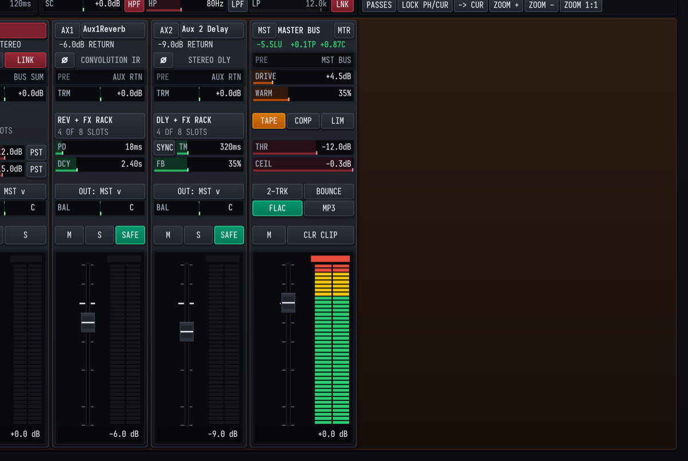
4.3.1 Stereo Subgroup Buses (DRUM BUS / SUB 1, INST BUS / SUB 2 .. SUB 16)#
Subgroup Buses let you sum related Input Tracks (such as all drum microphones into DRUM BUS, or guitars and keys into INST BUS) so you can process the entire group through a shared 8-slot insert rack and control its overall level with a single stereo fader.
Each Subgroup Bus strip provides:
- Crimson Bus Header & Stereo Readout: Displays the custom bus name (
DRUM BUS,INST BUS) and current stereo fader gain (+0.0dB STEREO). SEL(Select Bus for Inspection): ClickingSELloads the Subgroup Bus into the four Upper Console Wells (CMD/CTRL + 1) and theCHANNEL INSPECTORview (CMD/CTRL + 3). Every Cave Recorder Subgroup Bus owns a full 8-Slot ReorderableSUB RACKwith its own Tape Saturation stage, 12-Band Parametric EQ with Dual-Trace RTA, Analog VCA Bus Compressor, and third-party CLAP and macOS Audio Unit (AUv3/AUv2) plugin slots.LINK(Stereo Dynamics & Gain Link): Illuminates crimson when enabled, locking left and right detector sidechains and gain stages across the stereo bus so off-center floor tom or guitar hits never skew the stereo center image.- Subgroup Trim (
TRM,-24.0 dBto+24.0 dB): Gain-stages the summed multi-channel signal before it enters the Subgroup's 8-slotSUB RACK. If summing eight hot drum tracks drives the subgroup bus compressor too hard, pull backTRMonDRUM BUSrather than disturbing your individual drum fader balance. SUB RACKStatus (3 OF 8 SLOTS): Indicates how many processors are active in the subgroup's insert rack.- Subgroup Aux Sends (
RVB&DLY): Sends the entire post-rack subgroup mix toAUX 1 REVERB(default-12.0 dB) orAUX 2 TAPE DLY(default-15.0 dB, range-infto+12.0 dB) to place a whole drum kit or horn section into the same acoustic room. - Output Bus Selector (
OUT: MST v) & Stereo Balance (BAL): Routes the subgroup to theMASTER BUS(or cascades into downstream higher-numbered subgroups via the multi-bus routing popover in the Channel Inspector) and adjusts left/right stereo balance (L 100%..C..R 100%). - Bus Mute (
M), Solo (S), Fader (-infto+12.0 dB) & 40-Segment Meter: Controls final subgroup level and solo isolation. Soloing a Subgroup Bus automatically solos its contributing post-fader input channels in the monitor path.
4.3.2 Dedicated Stereo Aux Returns (AUX 1 REVERB & AUX 2 TAPE DLY)#
Cave Recorder includes two hardwired, zero-latency stereo effect return strips so you never have to sacrifice Input Track slots or configure third-party plugins just to set up studio plate reverb and tape slapback during a session:
| Return Strip | Header & Engine Readouts | Interactive Strip Drag Bars | Strip Switches & Routing |
|---|---|---|---|
AUX 1 REVERB |
EMT 140 Plate impulse response name, LC 90Hz input low-cut readout (20 Hz to 1000 Hz), and FFT CONV IR / ZERO-LATENCY engine status. |
PD (Pre-Delay): 0 ms to 200 ms (e.g., 18ms). DCY (Decay Time): 0.20 s to 12.00 s (e.g., 2.40s), dynamically rebuilding and swapping the stereo plate impulse response in real time. |
OUT: MST v routing, WET 100% readout, Mute (M), WET button (toggles 100% full wet vs. 50% blend), Return Fader (-6.0 dB), and 40-segment meter. |
AUX 2 TAPE DLY |
STEREO DLY (CAPSTAN TAPE, BBD ANALOG, or PRISTINE DIGITAL) model header with WOW/DMP readout and DLY + FX RACK slot summary. |
SYNC + TM / DV (Delay Time or Musical Subdivision): Click SYNC to toggle between free milliseconds (TM, 1 ms to 2000 ms, e.g., 320ms) and tempo-synced musical subdivisions (DV, 1/64 to 4BAR, default 1/8D, plus R.DV independent right-channel division in Pristine Digital). FB (Feedback): 0% to 95% strip drag bar (98% engine max, e.g., 35%). |
OUT: MST v routing, Mute (M), Solo (S), Solo-Safe (SAFE), Return Fader (-9.0 dB), and 40-segment meter. |
For complete acoustic modeling details and studio tuning recipes for AUX 1 REVERB and AUX 2 TAPE DLY, see Section 5.5 in Chapter 5.
4.3.3 The Pinned Stereo Master Bus (MST MASTER BUS)#
The rightmost strip on the Mixer is the Master Bus (MST MASTER BUS), which stays snug beside the last Aux strip in compact sessions (4 tracks) and pins permanently on the right edge behind a crisp 6 px seam whenever a wider session (18 or 32 tracks) scrolls horizontally. It sums all Subgroup Buses, direct Input Tracks, and Stereo Aux Returns into the final stereo program bus feeding your control room monitors and the concurrent Live Stereo Print Recorder.
+-------------------------------------------------------------------+
| MST MASTER BUS PROCESSING CHAIN |
+-------------------------------------------------------------------+
Summed Stereo Bus (Subgroups + Direct Tracks + Aux Returns)
|
v
[1] MASTER TAPE SATURATION ([TAPE SAT] Toggle)
* DRIVE: 0.0 dB to +24.0 dB (default +4.5 dB)
* WARM: 0% to 100% harmonic density (default 35%)
|
v
[2] MASTER BUS GLUE COMPRESSOR ([COMP] Toggle)
* Stereo VCA bus compression controlled by THR (-48.0..0.0 dB)
|
v
[3] LOOKAHEAD BRICKWALL LIMITER ([LIM] Toggle, Crimson when Active)
* THR (Threshold): -48.0 dB to 0.0 dB (default -12.0 dB)
* CEIL (True-Peak Ceiling): -6.0 dB to 0.0 dB (default -0.3 dB)
|
v
[4] MASTER FADER (-inf to +12.0 dB) & MASTER MUTE ([M])
|
+---> Main Hardware Monitor Outputs (Channels 1 & 2)
+---> [2-TRK PRINT] Live Stereo Print WAV + [FLAC]/[MP3] + [BOUNCE]Every control on the MST MASTER BUS strip is designed for immediate tactile operation during tracking and mixing:
DRIVE&WARMDrag Bars: Adjust the input drive (0.0 dBto+24.0 dB, shown at+4.5 dB) and analog transformer/oxide warmth (0%to100%, shown at35%) of the Master Tape stage.TAPE SAT,COMP&LIMProcessor Toggles: Independently engage or bypass the Master Tape stage (TAPE SAT), Master Bus Glue VCA Compressor (COMP), and Lookahead Brickwall Limiter (LIM).THR(Threshold) &CEIL(Brickwall Ceiling) Drag Bars:THR(-48.0 dBto0.0 dB, default-12.0 dB) sets the compression and limiting threshold, whileCEIL(-6.0 dBto0.0 dB, default-0.3 dB) locks the absolute digital output ceiling so live rehearsalPrintfiles and offlineMixdownrenders never clip inter-sample converter reconstructions.2-TRK PRINT(Live 2-Track Print Toggle): When enabled, every transportRecordpass automatically records the post-Master-Bus stereo mix in real time to<TakeFolder>/mix/<SessionID>_Take<NNN>_Print<PPP>_<Stamp>.wavwith automatic Plugin Delay Compensation (PDC) latency trimming so the printed stereo master aligns sample-accurately with the recorded multitrack stems.FLAC,MP3&BOUNCE(Master Mixdown Format Toggles & Trigger): TheFLACandMP3buttons independently toggle 24-bit lossless.flacand 320 kbps CBR.mp3export formats (either or both can be enabled at once). ClickingBOUNCErenders a faster-than-realtime master mixdown of the activeTake(<SessionID>_Take<NNN>_Mix<MMM>_<Stamp>.<flac|mp3>, with live progress and cancel in the Top Deck Async Job Status Bar and a Xing/Info seek header on.mp3files for instant scrubbing in the Google Drive web player) and links the output files into<ProjectTag>/_Mixes/for immediate band listening and Google Drive synchronization.CLR CLIP(Clear Clip Latches): Resets latched red peak-overload indicators across the Master Bus and all channel meters.- Master Mute (
M), Master Fader (-infto+12.0 dB) & Stereo 40-Segment Meter: Provides final control room level control and high-resolution peak/RMS metering. - Stagebox Hardware Monitor Quick Controls (
HW OUT|TAPEin Master Strip Zone 2): Whenever a Stagebox (X-Air OSCorX32 OSC) is paired, Zone 2 of theMST MASTER BUSstrip presents a compactHW OUT|TAPEmode toggle (defaulting toHW OUTso hardware monitor trim stays within one click). InHW OUTmode, compact horizontalMAIN+M(Mute) andAUX+M(Mute) controls ride the stagebox's physical Main L/R and Aux Return output levels directly from the Master Strip (dimming to read-only while a stagebox reconnects, and flipping back toDRIVE/WARMwhenever you selectTAPE). FullUSB -> Aux -> Main L/Rpair selection and vertical faders remain available inSTAGEBOX(Section 2.6.3 in Chapter 2).
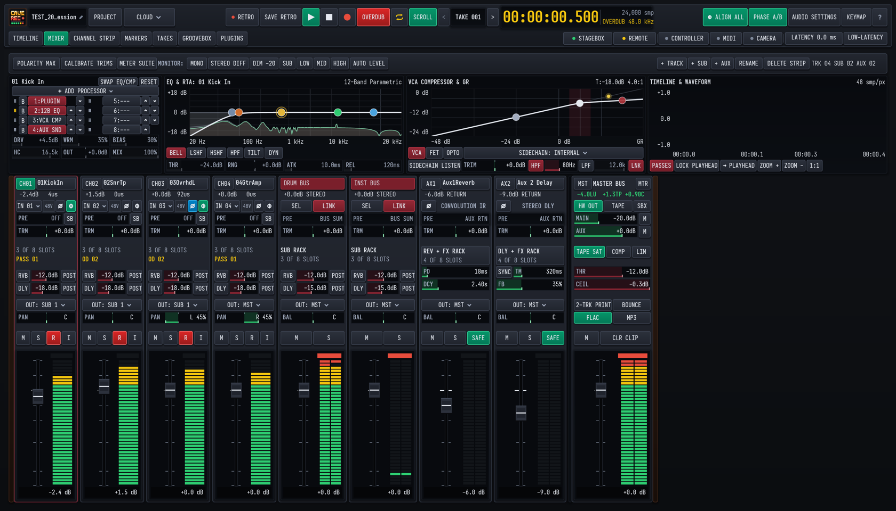
4.3.4 Control Room Monitor Bar (MONITOR:) & AUTO LEVEL Loudness-Matched Bypass#
Across the Console Toolbar sits the MONITOR: Control Room Bar alongside POLARITY MAX, CALIBRATE TRIMS, and METER SUITE. Crucially, the Control Room Monitor Bar is wired strictly downstream of the Master Bus 2-TRK PRINT live stereo Print tap and the offline BOUNCE mixdown engine. You can engage any speaker-check filter, fold the monitors to mono, or dim the control room volume while a live Take is recording without ever affecting the Print001.wav file being written to disk.
| Monitor Bar Control | Acoustic / DSP Specification | Studio Mixing Purpose |
|---|---|---|
MONO |
Unity-gain (L + R) × 0.5 sum (-6.02 dB per channel) |
Verifies single-speaker translation (club PA systems, smart speakers, and phone playback) and immediately reveals any hollow comb filtering or out-of-phase stereo guitars. |
STEREO DIFF |
(L - R) × 0.7071 (-3.01 dB) stereo side difference |
Solos only the stereo side information (panned guitars, wide overheads, dimension chorus, and plate reverb tails) while canceling dead-center kick, snare, bass, and lead vocals. |
SUB Band Solo |
4th-order (24 dB/oct) Linkwitz-Riley (LR4) low-pass < 90 Hz |
Isolates sub-bass fundamentals so you can hear whether the kick drum and bass guitar are fighting each other or rumbling out of phase below 90 Hz. |
LOW Band Solo |
LR4 band-pass 90 Hz - 350 Hz |
Isolates the lower-midrange warmth and mud zone (snare body, rhythm guitar palm-mutes, bass upper harmonics, and room boom). |
MID Band Solo |
LR4 band-pass 350 Hz - 3.5 kHz |
Isolates the core midrange where vocal intelligibility, snare crack, and guitar attack live, emulating a classic small single-cone studio cube speaker check. |
HIGH Band Solo |
LR4 high-pass > 3.5 kHz |
Isolates cymbal air, vocal sibilance, pick transient click, and high-gain amplifier fizz. |
DIM -20 |
Smooth -20.0 dB default control room attenuation (-40.0 dB to -6.0 dB configurable) |
Drops studio monitor volume by 20 dB for low-level balance checking (where vocal-to-snare balance is easiest to judge) or talking with bandmates between songs. |
AUTO LEVEL Bypass |
Input vs. output RMS tracker (300 ms integration window, gated below -60 dBFS, clamped to ±18.0 dB safety range) |
Automatically matches the output loudness of a processor or entire 8-slot rack to its pre-insert input loudness when toggling bypass (B), defeating the human ear's "louder sounds better" psychoacoustic bias. |
4.3.5 Broadcast & Phase Studio Metering Suite (Meter Probe & Console Metering Deck)#
In addition to per-strip 40-segment Peak/RMS bargraphs, Cave Recorder provides a comprehensive Broadcast Loudness, Crest-Factor & Spectral Phase Metering Suite accessible on the Master Bus metering deck and insertable at any point in a channel or subgroup signal path via the Meter Probe rack processor:
- ITU-R BS.1770-4 K-Weighted Loudness (
LUFS&LRA):- Cascaded two-stage K-weighting filter (Stage 1:
+4.0 dBhigh-shelf head-acoustics pre-filter at1681.97 Hz, Stage 2:2nd-orderRLB high-pass filter at38.13 Hz). M(Momentary Loudness,400 mssliding window): Tracks fast phrase-level loudness swings.S(Short-Term Loudness,3.0 ssliding window): Primary reference for balancing chorus-to-verse intensity.I(Integrated Loudness, Dual-Gate-70 LUFSabsolute +-10 LUrelative): Measures overall song loudness from start to finish with a one-click reset button.LRA(Loudness Range inLU): Measures the macroscopic dynamic spread between quiet verses and loud climaxes (10thto95thpercentile of short-term loudness).
- Cascaded two-stage K-weighting filter (Stage 1:
4xOversampled True-Peak Meter (dBTP):- Uses a
4xoversampled FIR interpolator (48taps,12taps per phase) to reconstruct the continuous analog waveform between digital samples and catch inter-sample clipping that standard0.0 dBFSsample-peak meters miss. Keep Master BusCEILat-0.3 dBTPto-1.0 dBTPwhen encodingFLACand320 kbps MP3files so consumer DACs and streaming transcoders never distort.
- Uses a
- Crest Factor & Micro-Dynamic Ballistics (
PSR&PLR):- Continuously computes Peak-to-Short-Term Loudness Ratio (
PSR = TruePeak - LUFS_S) and Peak-to-Integrated Loudness Ratio (PLR = TruePeak - LUFS_I) to show at a glance whether your Master Bus Limiter is preserving drum punch or crushing the life out of the band: PSR > 10.0 LU(Emerald,OPEN / DYNAMIC): Uncompressed acoustic, jazz, folk, and dynamic live-room recordings with full transient snap.PSR 6.0 to 10.0 LU(7 dB to 9 dBtarget, Gold,PUNCHY): Competitive modern rock and heavy live-band loudness that still retains visceral kick and snare punch.PSR < 6.0 LU(Crimson,CRUSHEDWarning): Heavy brickwall limiting is squashing drum transients flat and inducing listener ear fatigue. Back offLIM THRor raise subgroup drum dynamics.
- Continuously computes Peak-to-Short-Term Loudness Ratio (
- Stereo Lissajous Goniometer & 32-Band Spectral Phase Scope (
-1.0to+1.0):- Displays a real-time
45°-rotated Mid/Side Lissajous vectorscope alongside a vertical 32-Band Log-Spaced Spectral Phase Correlation Display driven by 32 2nd-order state-variable bandpass filters (20 Hzto20 kHz,Q = 2.2). - Each frequency band from
20 Hzto20 kHzplots its normalized left-right cross-correlationC(b) ∈ [-1.0, +1.0]. Points near+1.0(center spine) are tightly mono-compatible,+0.2to+0.8indicate healthy stereo width, and excursions toward-1.0glow amber/red to pinpoint the exact frequency band where out-of-phase overheads, room mics, or stereo widening processors will cancel out when summed to mono.
- Displays a real-time
- 31-Band 1/3-Octave ANSI/ISO RTA with Visual Spectral Tilt (
-4.5 dB/octStudio &-3.0 dB/octPink):- Offers selectable Peak/RMS, Fast (
125 ms) / Slow (1.0 s) ballistics, and three visual reference tilt slopes:-4.5 dB/oct(Modern Studio Reference),-3.0 dB/oct(Pink Noise Reference), and0.0 dB/oct(Flat). In-4.5 dB/octStudio mode, a well-balanced full-band mix appears as a near-horizontal line across the analyzer, making booming120 Hzroom resonances or harsh4 kHzcymbal build-ups effortless to spot visually.
- Offers selectable Peak/RMS, Fast (
4.4 Precision Mouse & Keyboard Modifiers for Faders, Knobs & 2D XY Pads#
All faders, horizontal value bars (TRM, RVB, DLY, PAN, BAL, PD, DCY, TM, FB, DRIVE, WARM, THR, CEIL), tiered rotary knobs, interactive EQ/compressor graph nodes, and 2D XY Control Pads across the Mix Console and Channel Inspector Large Processor Views share a unified set of studio mouse gestures and modifier keys.
| Interaction / Gesture | macOS Modifier | Windows / Linux Modifier | Console Behavior |
|---|---|---|---|
| Standard Adjustment | Click + Drag (Vertical on faders/knobs, Horizontal on bars, 2D on XY pads) |
Click + Drag |
Smoothly sweeps the parameter (or paired X/Y parameters on a 2D XY pad) across its studio operating curve. |
| 10x Fine Precision Adjustment | SHIFT + Click + Drag |
SHIFT + Click + Drag |
Engages 10x fine-gear resolution (0.1 dB steps on faders, trim, and thresholds, 0.1 Hz on low-frequency EQ bands, 0.01 on Q, 1% on mix/pan bars, and 10x fine gearing on 2D XY control pads without cursor jumping). |
| Instant Reset to Unity / Default | Double-Click or OPT + Click |
Double-Click or ALT + Click |
Resets any fader, horizontal value bar, rotary knob, EQ node, or 2D XY pad puck directly to its exact unity or factory default value (updating the engine and formatted unit readout immediately). |
| Keyboard Numeric Value Entry | Right-Click any value bar or knob (or Click fader/knob readout), type value, press ENTER |
Right-Click any value bar or knob (or Click fader/knob readout), type value, press ENTER |
Opens an inline numeric entry field showing the current formatted readout so you can type an exact target value (such as -2.5, 56.3, or 0.0) and press ENTER (or ESC to cancel). |
| Stepped Wheel Adjustment | Mouse Scroll Wheel |
Mouse Scroll Wheel |
Increments or decrements the hovered fader, bar, or knob in calibrated steps. Hovering over an EQ node and scrolling adjusts filter bandwidth (Q). |
| Live Rack Slot Reordering | Drag :: Handle or click ^ / v |
Drag :: Handle or click ^ / v |
Moves a processor slot up or down inside the 8-slot channel or subgroup rack in real time with clickless crossfading and zero audio dropouts. |
| Quick Slot Bypass | Click [B] next to any slot |
Click [B] next to any slot |
Bypasses that individual rack slot (illuminates amber when bypassed) for instant A/B comparison without unloading the processor. |
4.5 Tactile Console Mixing & Stagebox Control ([CONSOLE DAW REMOTE])#
When your Dual-Screen Pad Controller is switched to [CONSOLE DAW REMOTE] (SHIFT + CHANNEL, or SHIFT + PLUG-IN then F8, or clicking ● CONTROLLER in Top Deck Row 2), both 480×272 displays render a 4 px Console Burgundy perimeter frame (switching to Warm Preamp Copper in STAGEBOX PREAMPS) and put the entire Mix Console under your hands.
+----------------------------------------------------------------------+
| [CONSOLE DAW REMOTE] 8-CHANNEL STRIP BANKING (GROUPS A..H) |
| [A] Trk 1-8 [B] Trk 9-16 [C] Trk 17-24 [D] Trk 25-32 |
| [E] Sub 1-8 [F] Sub 9-16 [G] Aux 1-8 [H] Master & Control Room |
+----------------------------------------------------------------------+
| MIX View (Tap MIX to flip): |
| - MAIN FADERS : E1-E8 Faders | SHIFT+E1-E8 Pan | F1-F8 Focus |
| - STAGEBOX PREAMPS : E1-E8 HW Gain (Copper) / Digital Trim (Cyan) |
| F1-F8 Hold 600ms +48V | SHIFT+F1-F8 Polarity |
+----------------------------------------------------------------------+
| 16 RGB Pads (Bare taps NEVER arm/mute live channels): |
| - SCENE : 16 Ranges (Pad 1 Full Take, Pads 2-16 Live 2-Tap) |
| - PAD MODE : 16 Cue Markers (Tap lit = Jump, Tap unlit = Drop) |
| - PATTERN : 16 Pass Lanes on focused track (PASS 01 / OD 02..16) |
| - Hold SELECT / MUTE / SOLO / REC + Pads 1-16 (Hold + F1 to PIN) |
+----------------------------------------------------------------------+4.5.1 8-Channel Faders, Stagebox Preamps (600 ms +48V) & Dual-Screen AUX SENDS#
MAIN FADERS(MIX):- Displays 4 vertical console fader strips on the Left Screen (
E1..E4) and 4 on the Right Screen (E5..E8) in exact 1:1 encoder column alignment, with20-segmentPeak/RMS/Gain-Reduction meters and universal[M](Mute Amber) /[S](Solo Gold) /[R](Record Crimson) status badges. - Turning
E1..E8rides strip faders (touching any capacitive encoder opens a single coalesced Undo gesture that commits cleanly when released, andCLEAR + Touchresets any parameter to unity0.0 dBor center pan). HoldingSHIFT + E1..E8adjusts stereo Pan/Balance. - Press
GROUPS A..Hto jump instantly betweenTracks 1..32(A..D),Subgroups 1..16(E..F),Aux Returns 1..8(G), andMaster & Control Room(H). Soft keysF1..F8focus any strip in the active bank.
- Displays 4 vertical console fader strips on the Left Screen (
STAGEBOX PREAMPS & +48V(PressMIXAgain to Flip):- Frames both screens in Warm Preamp Copper (
#C85A32), mappingE1..E8directly to the 8 corresponding Stagebox Hardware Preamp Gains (dB) (SHIFT + Turn=0.5 dBfine step) with live Pre-ADC input peak and clip meters. Strips without a mapped hardware headamp fall back automatically to silver-cyan Digital Input Trim (TRIMbadge). - Guarded
600 ms+48VPhantom Power: Soft keysF1..F8sit 1:1 above strips1..8. Holding a soft key fills a Crimson progress bar inside that key's display cell and toggles+48Vonly after600 ms. Short taps never toggle phantom power (flashingHOLD 0.6s). PressSHIFT + F1..F8to invert polarity (Ø) on any strip.
- Frames both screens in Warm Preamp Copper (
CHANNELDetail & Dual-ScreenAUX SENDS(F1: AUX SENDS):- Press
CHANNELto inspect the focused strip's Preamp Gain / Digital Input Trim, Fader, Pan/Balance, Phase Alignment Delay (µs), Aux Send levels (AUX 1..8) andTAP: POST(PRE/EQ/POST),+48VPhantom (600 mshold), PolarityØ, Record Arm, Mute/Solo, and Stagebox Gain Reconciliation (CAPTURE HW/PUSH GAINS). - Press
F1: AUX SENDSon any Input Track or Subgroup Bus to engage dual-screenAUX SENDS(amber frame across both displays), mappingAUX 1..4across LeftE1..E4andAUX 5..8across RightE5..E8(F2: TAP:POST,CLEAR + Touchresets any send to-inf).
- Press
- Hardware Level Meters, Control Room & Guarded Channel Modifiers:
- Press
MST,CUE,GRP, orIN 1..4in the Level Section to switch the dual16-LEDhardware stereo meters between Master Bus, Control Room Cue, the currently focused strip (GRP), and raw hardware ADC pairs1-2..7-8. Pressing theLEVELknob whileMSTorCUEis selected toggles-20 dBControl RoomDIM. - Bare pad taps in
[CONSOLE DAW REMOTE]operate strictly on Ranges, Cue Markers, orPass Lanesso you never accidentally arm or mute a live channel mid-take. HoldSELECT,MUTE,SOLO, orRECwhile tappingPads 1..16to address Channels1..16(and hold any modifier +F1 (PIN)to pin it until re-tapped).
- Press
4.5.2 16-Pad Ranges, Cue Markers, Pass Lane Comping, BROWSE & Disk Take Transport#
SCENE(16 Ranges & Cycle Loop):Pad 1addressesR001 Full Take, whilePads 2..16map custom sub-rangesR002..R016. Tap a lit pad to select that Range,SHIFT + Tapa lit pad to select and engage Cycle Loop (⇄) in one stroke, or tap an unlit pad twice live (Tap 1 setsRANGE START, Tap 2 setsRANGE END) without stopping playback. Hold a lit Range pad to fine-trimRange Start(E1) andRange End(E2), zoom the waveform overview (F3: ZOOM RANGE), extract the Range to a brand-newt = 0Take (F4: NEW TAKE), or send that Range straight into the Studio Sampler viaF5: -> SAMPLER(Dry Pass) orF6: POST-FX -> SMP(Post-FX Bounce). PressCLEAR + Padto delete a custom Range (with Undo) or cancel a pending start.PAD MODE(16 Cue Markers): Lit cyan pads jump directly toM001..M016(when stopped or playing). Unlit pads drop a new timestamped Cue Marker at the rolling Playhead (including during active DiskTakerecording, persisted on Keep Take and cleanly purged on Discard Take). PressFUNC < / >inEDITjog mode to jump between previous and next markers.PATTERN(Pass LaneComping): MapsPads 1..16to the focused track's recordedPass Lanes(PASS 01,OD 02..OD 16) so tapping pads clicklessly promotes the active comp lane with full Undo support.BROWSE(SNAPSHOTS & TAKES): Left Screen switches active SessionTakes directly viaE1(or scrolls a highlight cursor with Jog Wheel + Push to confirm) and cycles focused trackPass LanesviaE2. Right Screen captures manual ConsoleSnapshots (F5), auditions savedSnapshots (F6), and showsF7: RETRO 30MandF8: OVERDUBwhen idle (switching toF7: A/B LIVEandF8: LIVE MIXwhile auditioning a Snapshot).- Guarded Disk
TakeTransport,CONSOLE CAPTURE & RESAMPLE&60 HzJog Scrub: TapRECto start a new DiskTake(orOverdub PasswhenOVERDUBis enabled). While recording, barePLAY, bareREC, and the Jog Wheel are locked by the Active Take Stop Guard. Stop intentionally viaF8: END TAKE,SHIFT + PLAY, orSHIFT + REC, or arm/confirm a 2-step discard viaSHIFT + ERASEtwice. PressSAMPLINGin[CONSOLE DAW REMOTE]to openCONSOLE CAPTURE & RESAMPLE(F1: RESAMPLE STRIP,F2: RESAMPLE BUS,F3: RANGE -> SAMPLER, andF7: RETRO 30Mto commit the rolling 30-minute retroactive memory to a newTake). When not recording, turning the Jog Wheel inEDITmode scrubs the waveform timeline smoothly at60 Hz.
4.6 Full-Featured Stagebox Mixer Workspace (STAGEBOX, CMD/CTRL + 9)#
When connected to a digital stagebox (X-Air OSC UDP 10024 including XR18, XR18V2, MR18, X18, XR16, XR12, MR12, or X32 OSC UDP 10023), pressing CMD/CTRL + 9, clicking ● STAGEBOX in Top Deck Row 2, or clicking any DAW strip's SB quick-jump keycap opens the dedicated STAGEBOX workspace. Its Warm Preamp Copper (#C85A32) accent distinguishes live hardware PA and monitor mixing clearly from Cave Recorder's recording console (MIXER).
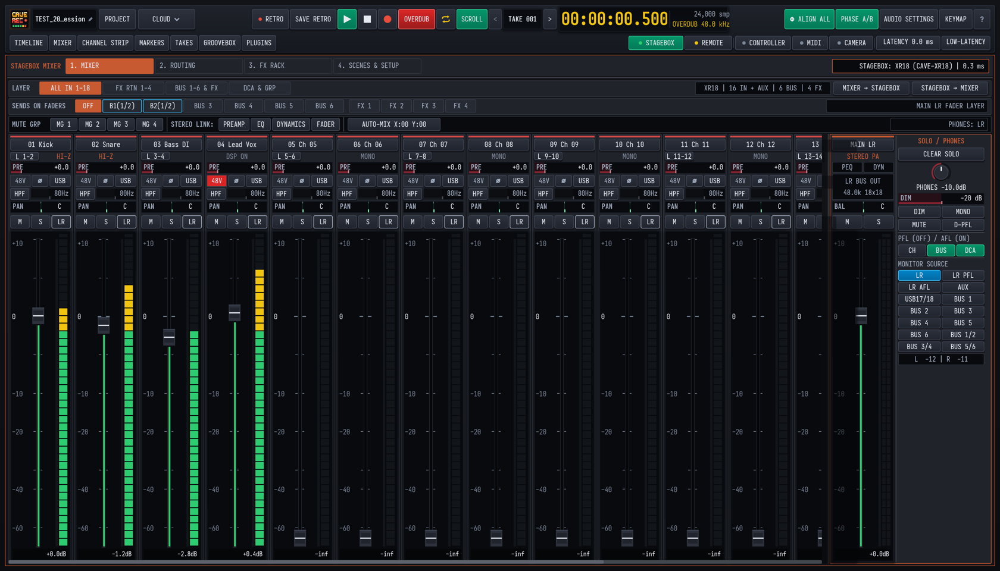
4.6.1 1. MIXER: Layers, SENDS ON FADERS, Mute Groups, Auto-Mix & SOLO / PHONES#
- 4 Channel Layers (
ALL IN 1-18|FX RTN 1-4|BUS 1-6 & FX|DCA & GRP): Switch cleanly across physical analog/USB input strips, stereo FX return strips, monitor/FX send masters, and 4 DCA groups. Every strip follows the exact[M](Mute Amber) ->[S](Solo Gold) ->[LR]layout with brushed silver fader caps,PREhardware gain,600 mshold48Vphantom power,Øpolarity,USBreturn toggle,HPF, andPAN. SENDS ON FADERS(OFF | B1(1/2) | B2(1/2) | BUS 3..6 | FX 1..4): Click any monitor bus (or stereo-linked bus pair such asB1(1/2)with linked Level + Pan) or hardware FX bus (FX 1..4) to flip all channel faders into amberSENDS ON FADERSmode (displayingEXIT SENDS ON FADERSand per-channel send tapsIN,PEQ,PSEQ,PRE,POST,GRP). ClickOFForEXIT SENDS ON FADERSto return immediately toMAIN LR FADER LAYER.- Console Governance & Name Sync: Toggle hardware
MUTE GRP(MG 1..4),STEREO LINK(PREAMP,EQ,DYNAMICS,FADER), andAUTO-MIX X/Yautomatic mic sharing, or clickMIXER → STAGEBOX/STAGEBOX → MIXERto synchronize channel names and scribble colors bidirectionally between Cave Recorder and the hardware stagebox. - Pinned
MAIN LR&SOLO / PHONESPanel: KeepsMAIN LR(STEREO PA,PEQ,DYN,BAL,M,S),CLEAR SOLO,PHONESrotary level,DIM -20 dB,MONO,MUTE,D-PFL,PFL/AFLmode selectors (CH | BUS | DCA), andMONITOR SOURCE(LR,LR PFL,LR AFL,AUX,USB17/18,BUS 1..6, stereo pairs) pinned permanently on the right edge.
4.6.2 Docked Stagebox DSP Inspector (PEQ, 100-bin RTA, 31-Band GEQ, Gate & Comp)#
Clicking any Stagebox strip opens the docked Stagebox DSP Inspector at the top of 1. MIXER, clearly badged MONITOR / PA DSP - USB REC RAW (or amber ! RECORDING POST-DSP if the selected channel's USB tap is post-DSP) so you always know whether hardware EQ and dynamics affect only the PA/IEM speakers or also your USB recording:
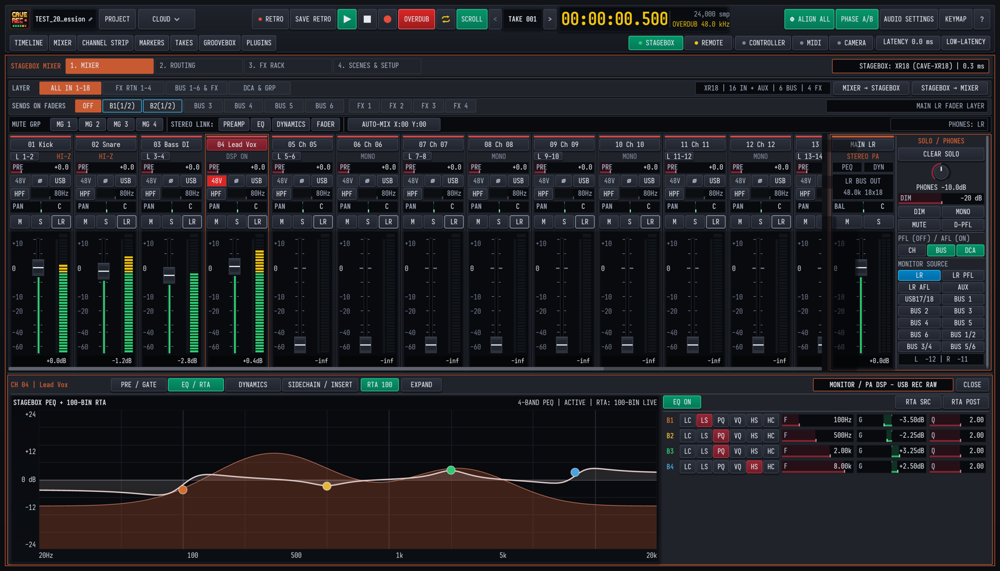
- 4-Band PEQ (6-Band on Bus & Main) + Live
100-bin RTA: Interactive curve with draggable nodes superimposed over the stagebox's live 100-band Real-Time Analyzer for ringing out room resonances and stage monitors. 31-Band GEQ / TruEQ(Bus1..6& Main L/R): Full 31-band graphic equalizer for live PA and wedge feedback control.- Gate / Expander / Ducker & Compressor / Expander: Complete hardware dynamics controls including
SIDECHAIN / INSERTkey selection and real-time gain-reduction telemetry.
4.6.3 2. ROUTING, 3. FX RACK & 4. SCENES & SETUP#
2. ROUTING(4-Domain 2D Crosspoint Matrix): Visualizes and patchesUSB SENDS (1-18)(showing mapped DAW track name, arm LED, and CopperAINvs. Amber post-DSP tap badge),CH INPUTS & VSC(with 1-click1:1 RAW ANALOGandVIRTUAL SOUNDCHECKpresets to feed recorded Cave Recorder Takes back through the hardware stagebox),ANALOG OUTS(MAIN + AUX 1-6), andULTRANET P16 (1-16).3. FX RACK(4 Stereo Hardware FX Slots, 55 Algorithms): Loads and edits all 55 internal stagebox algorithms acrossReverb,Delay,Modulation,Eq,Dynamics,Enhancer, andAmpPitchcategories (using clean acoustic/circuit descriptions such asProgram Tube EQandVari-Mu Tube Comp), togglesSEND/RTNvs.INSERTpatching, providesTAP TEMPO, and displays live input/output and gain-reduction meters.
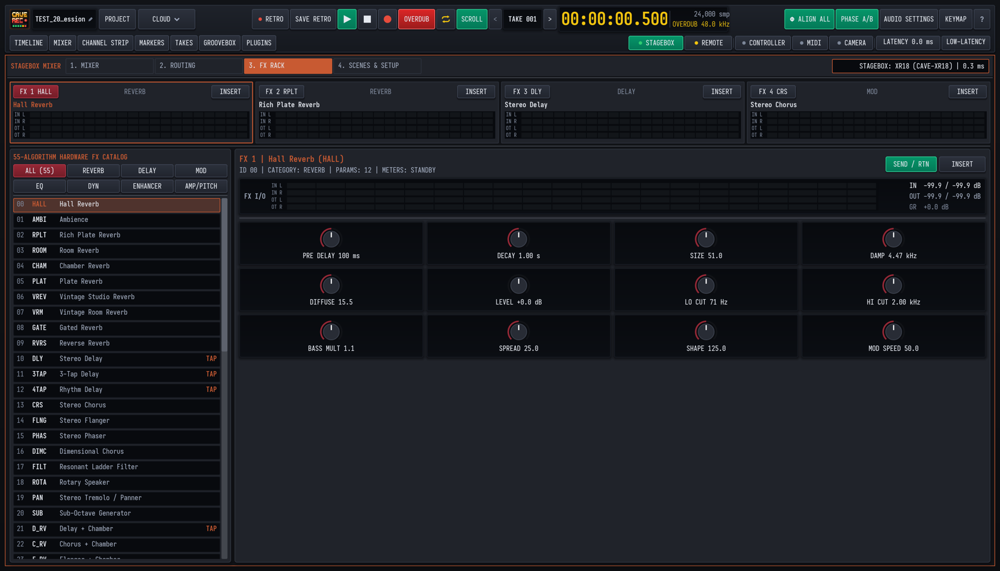
4. SCENES & SETUP(Network, Dual Scene Sync & Companion Governance): Houses multi-NIC/xinfodiscovery (169.254.x.xlink-local diagnostics),48 kHz / 44.1 kHzsample-rate and18x18 / 2x2USB mode guardrails, Dual Scene Persistence (<SessionFolder>/stagebox_scene.jsonviaCAPTURE HARDWARE -> SESSIONand rampedPUSH SCENE -> HARDWAREwith opt-inAPPLY +48V, plus the 64-slot hardware snapshot browser withFETCH ALL 64and recall-scope filters), and Cave Companion stagebox role governance (MY MONITORpersonal IEM bus pinning vs.FULL MIXERprotected byMIXER LOCK/RELEASE MIXER LOCKandBUS SELF-SEL).
Built-In Processors, Phase Alignment, Groovebox & Plugins (CLAP & AU)
Channel Strip Large Processor Views, interactive XY control pads, and collapsible Mini-Timeline, 12-Band Dynamic EQ, VCA/FET/Opto Compressors with plain-language SIDECHAIN and SIDECHAIN LISTEN controls, Drum Bleed and Stoner/Doom Amp Dynamic Gates, Guitar and Bass Amp Rig with 2x/4x oversampling, HEAD ON/BYP, and native .nam Neural Amp Capture, standalone Speaker Cabinet and Impulse Response Loader, Vocal Rider, De-Esser, Transient Shaper, Micro-Pitch Doubler, Tempo-Synced 3-Mode Delay, 4-Pole Ladder Filter, Studio Plate Reverb, Tempo-Synced & Phase-Locked 4-Mode Modulation, Polarity & Phase Maximizer, Audio Restoration, CLAP and isolated out-of-process macOS Audio Unit effects and Pre-Tape instruments, Low-Latency Monitoring and persistent Hardware Direct Monitoring warnings, the 6-Archetype Groovebox and Studio Sampler (SuperFlux transient slicing, live console resampling, creative pitch/filter/comb/LFO shaping, and Sample History versioned commits), and tactile dual-screen control on a Studio Pad Surface.
Every Input Track (CH01 through CH32) and every stereo Subgroup Bus (SUB 1 through SUB 16) in Cave Recorder includes a zero-slot top-of-strip 5-Stage Allpass Phase Align Network and a dedicated, multi-instance reorderable 8-Slot Processing Rack powered by Cave Recorder's Curated Native Console & Rack Suite (12-Band Dynamic EQ, VCA/FET/Opto Compressor, Tape Saturation, Guitar & Bass Amp Rig with HEAD ON/BYP and native .nam Neural Amp Capture, standalone Cab IR Speaker Cabinet & Linear Impulse Response Loader, Vocal De-Esser, Context-Aware Gate, Signal Repair, Vocal Rider, Transient Shaper, Ladder Filter, Studio Plate Reverb, Tempo-Synced 4-Mode Modulation, Micro-Pitch Doubler, Gain Utility, and Aux Send Tap) alongside cross-platform third-party CLAP (.clap) effects and Pre-Tape instruments (on direct macOS, Windows, and Linux downloads), native macOS Audio Unit (AUv3 and AUv2) effects ('aufx', 'aumf') and Pre-Tape Music Device instruments ('aumu'), automatic multi-mic phase and polarity alignment, up to eight dedicated stereo Auxiliary Returns (AUX 1 through AUX 8, including Tempo-Synced AUX 2 Stereo Delay), and the native 6-Archetype Groovebox & Studio Sampler (GROOVEBOX, CMD/CTRL + 6).
This chapter covers the dual-view inspection workflow (Upper Console Wells vs. full-screen CHANNEL STRIP with Large Processor Views, 2D XY Control Pads, and Collapsible Mini-Timeline), Tape Saturation (TAPE), Gain Utility & Differential Transient Shaper, the 12-Band Dynamic Parametric EQ & Dual-Trace Spectrum Analyzer (EQ & RTA), Vocal Rider, Split-Band De-Esser & Micro-Pitch Doubler, Multi-Topology VCA / FET / Opto Compressors (with External SIDECHAIN Key Routing & SIDECHAIN LISTEN), the Context-Aware 3-Variant Noise Gate (Expander, Drum Bleed, Amp Dynamic), Guitar/Bass Amp Rig ([CIR] Tube Models, HEAD ON/BYP & [NAM] Neural Amp Capture) & Standalone Cab IR Speaker Cabinet / Linear IR Loader, Stereo Convolution Reverb (AUX 1 REVERB), Tempo-Synced 3-Mode Delay (Capstan Tape, BBD Analog, Pristine Digital), 4-Pole Non-Linear Ladder Filter, Studio Plate Reverb & Tempo-Synced / Phase-Locked 4-Mode Modulation, Automatic Multi-Mic Phase Alignment (● ALIGN ALL) & the Two-Mode Multicore Polarity & Phase Maximizer (POLARITY MAX), CLAP & Isolated Out-of-Process macOS Audio Unit Effects & Pre-Tape Instrument Hosting (1:PLUGIN, INST, PLUGINS Manager, PLUGIN GUI, Ghost Slots, LATENCY PDC Breakdown, LOW-LATENCY & Persistent Hardware Direct Monitoring), Non-Destructive Audio Restoration (ADC De-Clipper & 12-Harmonic Hum Canceller), and the Native Groovebox & Studio Sampler (GROOVEBOX).
5.1 Upper Console Wells vs. Dedicated CHANNEL STRIP View#
Cave Recorder provides two complementary workspaces for viewing and shaping the processors on any Input Track or Subgroup Bus:
- The Four Upper Console Wells (
MIXERView, CMD/CTRL + 2): Docked permanently along the upper deck of the Mixer so you can adjust inserts, EQ curves, and compression while keeping all channel faders and bus meters in view. - The Dedicated
CHANNEL STRIPView (CMD/CTRL + 3): Expands the selected channel or subgroup across the entire screen with a high-resolution Dual-Trace Real-Time Spectrum Analyzer, dedicated rotary parameter knobs, multi-bus output routing popovers, and a scrolling Gain Reduction history trace.
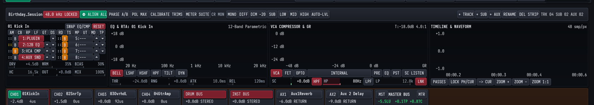
5.1.1 The Four Upper Console Wells (MIXER)#
Clicking any Input Track header (CH01..CH18) or clicking the SEL button on any Subgroup Bus (DRUM BUS, INST BUS) immediately binds the four Upper Console Wells to that strip:
| Upper Well | Header Label | Core Controls & Displays |
|---|---|---|
| Well 1 (Far Left) | <Track/Bus Name> (e.g., 01 Kick In or DRUM BUS) |
Quick action buttons (+ ADD PROCESSOR ▾, SWAP EQ/CMP, RESET), the 8-Slot Reorderable Rack (Slots 1..8 with :: drag handles, B bypass switches, and ^ / v move arrows), and the 6-parameter Tape Saturation bar bank (DRV, WRM, BIAS, HC, OUT, MIX). |
| Well 2 (Center-Left) | EQ & RTA: <Track Name> (12-Band Parametric) |
Interactive 20 Hz to 20 kHz parametric response graph (-18 dB and +18 dB reference gridlines with full -24 dB to +24 dB band range), draggable band nodes, real-time spectrum trace, and filter shape pills (BELL, LSHF, HSHF, HPF, TILT, DYN). |
| Well 3 (Center-Right) | VCA COMPRESSOR & GR (T:-18.0dB 4.0:1) |
Interactive transfer curve (-48 dB to 0 dB), threshold and knee handles, live crimson Gain Reduction (GR) shading, topology selector (VCA, FET, OPTO), SIDECHAIN source dropdown, SIDECHAIN LISTEN, TRIM, HPF, LPF, and LNK. |
| Well 4 (Far Right) | TIMELINE & WAVEFORM (48 smp/px) |
Multi-resolution scrolling waveform monitor for the selected channel with Pass Lane and zoom triggers (PASSES, LOCK PLAYHEAD, → PLAYHEAD, ZOOM +, ZOOM -, 1:1). |
5.1.2 Full-Screen CHANNEL STRIP View, Large Processor Decks, 2D XY Pads & Collapsible Mini-Timeline (CMD/CTRL + 3)#
Pressing CMD + 3 (macOS) or CTRL + 3 (Windows/Linux) switches to the dedicated CHANNEL STRIP view. Along the top selector bar, single-click pills (01 Kick In, 02 Snare Top, 03 Overhead L, 04 Guitar Amp, DRUM BUS, INST BUS, AUX 1, MST) let you step across every Input Track, Subgroup Bus, Aux Return, and Master Bus strip in the session without returning to MIXER.
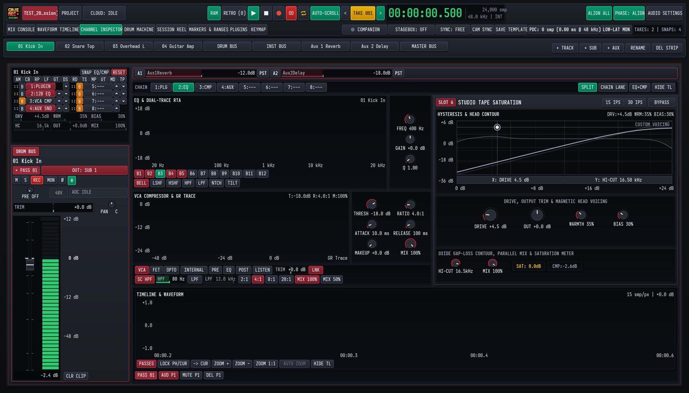
In the CHANNEL INSPECTOR view, the left column anchors a full-height channel strip (complete with active Pass selector * PASS 01 on Input Tracks or STEREO SUBGROUP / SUBGROUP BUS badges on Subgroups, Output Bus selector, M, S, REC, MON, Ø, Φ, TRIM, rotary PAN, full-scale calibrated meter with +12 dB to -48 dB markings, and CLR CLIP), while the right-hand instrument workspace is governed by the top Signal-Flow Chain & Layout Mode Bar:
- Signal-Flow Chain Bar & Three Workspace Layout Modes (
SPLIT,CHAIN LANE,EQ+CMP):- Interactive Signal-Flow Chain Pills (
Slots 1..8): Displays the active processors across the strip's 8 rack slots in exact top-to-bottom signal evaluation order. Clicking any slot pill in the chain bar immediately focuses that slot's dedicated Large Processor View and telemetry (even when multiple instances of the same processor type are loaded in different slots). SPLITMode (Default Side-by-Side Workbench): StacksEQ & DUAL-TRACE RTAandVCA COMPRESSOR & GR TRACEon the left (11:9split) while displaying the focused slot's full-height Large Processor Card on the right.CHAIN LANEMode (Horizontally Scrollable Device Chain): Displays every active processor slot across the strip side-by-side in signal-flow order as580 px-wide hardware module cards so you can tweak an entire multi-slot chain (Gate -> Amp Rig -> Modulation -> Cab IR -> EQ -> Compressor) simultaneously.EQ+CMPMode: Collapses the right-hand Large Processor Card so the 12-Band Parametric EQ and Compressor graphs span the full width of the inspector.
- Interactive Signal-Flow Chain Pills (
- Full-Height Large Processor Views & Interactive 2D XY Control Pads: Every built-in processor (
STUDIO TAPE SATURATION,CONTEXT-AWARE EXPANDER GATE,VOCAL DE-ESSER & PLOSIVE,AUTOMATIC VOCAL RIDER,TRANSIENT SHAPER & FOCUS,GUITAR / BASS AMP RIG & NAM,SPEAKER CABINET & IR LOADER,LADDER FILTER,ANALOG MODULATION SUITE,STEREO MICRO-PITCH DOUBLER,HUM & DE-CLIP REPAIR,GAIN & M/S UTILITY), the stereo Aux Return engines (AUX RETURN STEREO REVERB,AUX RETURN STEREO DELAY), the Master Bus Brickwall Limiter (MASTER TRUE-PEAK LIMITER), and external plugin slots (EXTERNAL CLAP PLUGIN SLOT) feature a dedicated three-zone hardware faceplate:- Zone A (Interactive 2D XY Control Pad & Real-Time Telemetry Bridge): Combines a real-time transfer curve, envelope trace, or spectral response contour with a draggable 2D XY Control Pad that sweeps two paired studio parameters simultaneously (such as
DRIVE × WARMTHon Tape Saturation,ATTACK × SUSTAINon Transient Shaper,CUTOFF × RESONANCEon Ladder Filter,MIC HPF × MIC LPFonAmp RigandCab IR, orTHRESHOLD × CEILINGon the Master True-Peak Limiter), flanked by a dedicated input/output/attenuation LED telemetry bridge. Hold SHIFT while dragging the XY puck for10xfine precision without cursor jumps, orDouble-Click(OPT/ALT +Click) to reset both axes to unity defaults. - Zone B (Hero Rotary Control Bay): Large-diameter Hero and Standard rotary knobs for the processor's primary sonic controls.
- Zone C (Topology Mode Bank, Sidechain & Output Trim Sub-Panel): Direct mode selector buttons, sidechain filters, and output trim/wet-dry mix controls.
- Zone A (Interactive 2D XY Control Pad & Real-Time Telemetry Bridge): Combines a real-time transfer curve, envelope trace, or spectral response contour with a draggable 2D XY Control Pad that sweeps two paired studio parameters simultaneously (such as
EQ & DUAL-TRACE RTA&VCA COMPRESSOR & GR TRACE: Provide direct band-select buttons for all 12 EQ bands (B1throughB12), all seven filter shape buttons (BELL,LSHF,HSHF,HPF,LPF,NTCH,TILT), a continuous scrolling Gain Reduction (GR Trace) timeline, and dedicated rotary knobs (FREQ,GAIN,Q,THRESH,RATIO,ATTACK,RELEASE,MAKEUP,MIX).- Multi-Bus Output Routing Popover: Clicking the green
OUT: MSTor crimsonOUT: SUB 1button in the left inspector strip opens theOUTPUT BUSESpopover ([x] MASTER BUS,[ ] SUB 2: INST BUS), allowing any track or subgroup to feed multiple buses in parallel. - Collapsible Single-Track Mini-Timeline (
HIDE TL/SHOW TL): Below the processor decks, the inspector waveform strip provides quick Pass Lane actions for the activeTake(PASSESor E to expand Pass Lanes,PASS 01to select the active pass,AUD P1to audition,MUTE P1to mute, andDEL P1to deactivate). ClickingHIDE TLin the top-right corner of the Chain Bar (or in the mini-timeline header) collapses the bottom waveform strip down to a compact28 pxsummary bar (SHOW TL) so the upper EQ, Compressor, and Large Processor Views reclaim the full vertical height of your display. - Dedicated Inspector Keyboard Shortcuts: While inspecting any strip, press H to toggle the compressor Sidechain High-Pass Filter (
SC HPF), X to clear the channel peak overload latch (CLR CLIP), E to expand or collapse Pass Lanes (PASSES), or SHIFT + M / S / A / I / P to toggle Mute, Solo, Record Arm, Input Monitor, or Polarity (Ø).
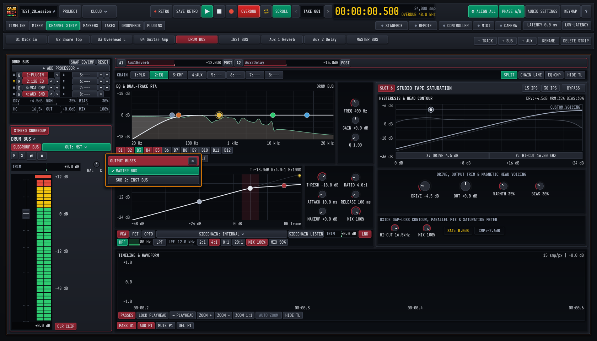
5.1.3 Multi-Instance 8-Slot Rack, Reordering, SWAP EQ/CMP & RESET#
In Well 1 (01 Kick In or DRUM BUS) and in the left rack column of CHANNEL INSPECTOR, the eight processing slots (1 through 8) execute sequentially from Slot 1 down to Slot 8:
- Multi-Instance Slot Assignment (
SLOT N PROCESSOROverlay): Clicking any slot pill (1through8) opens the floatingSLOT N PROCESSORselector menu. Any built-in zero-latency studio processor (12-Band Dynamic EQ,VCA Compressor,Tape Saturation,Vocal De-Esser,Context-Aware Gate,Signal Repair,Guitar/Bass Amp Rig,Speaker Cabinet & IR,2P/4P Ladder LPF,Vocal Rider,Transient Shaper,Micro-Pitch Doubler,Gain & Polarity Utility,Studio Modulation, orAux Send Tap) or externalPlugin(CLAPor macOS Audio Unit) can be assigned to any number of slots on the same strip. Each slot maintains its own independent parameter state, bypass switch (B), and real-time metering telemetry. Clicking a slot in the rack or in the Inspector Chain Bar focuses that specific slot instance for editing. - Dragging
::or Clicking^/v: Reorders any processor (1:PLUGIN,2:12B EQ,3:VCA CMP,4:AUX SND,5:AMP RIG,6:CAB IR) to an earlier or later slot in real time without audio clicks or dropouts. Moving4:AUX SNDabove3:VCA CMP, for example, taps the channel's Aux Sends before compression even when the send is set to rack-tap mode. SWAP EQ/CMPButton: Instant one-click macro in the top-left rack header that swaps the slot positions of the12B EQandVCA CMPprocessors. UseSWAP EQ/CMPto audition whether filtering low-end mud before the compressor detector (EQ -> CMP) or shaping tonal balance after dynamic peak control (CMP -> EQ) sounds more natural on a vocal, bass, or drum bus.B(Slot Bypass) &RESET: ClickingBnext to any slot (or on the12B EQ/VCA CMPbadge) bypasses that single processor in place (illuminated amber). Clicking the crimsonRESETbutton returns all built-in processors on the selected strip to their flat factory defaults.
5.2 Tape Saturation & Input Drive (TAPE)#
Located in Well 1 beneath the 8-slot rack, the built-in Tape Saturation (TAPE) processor models the non-linear magnetic hysteresis, transformer core warmth, bias asymmetry, and head-bump high-frequency roll-off of a calibrated analog multitrack tape machine running at 15 or 30 IPS.
Click the TAPE pill in the Well 1 header to engage or bypass the tape stage on the selected Input Track or Subgroup Bus.
5.2.1 Tape Saturation Parameter Reference#
| Parameter | UI Label | Range | Default | Acoustic & Signal Effect |
|---|---|---|---|---|
| Input Drive | DRV |
0.0 dB to +24.0 dB |
+4.5 dB |
Pushes signal level into the magnetic saturation transfer curve, smoothly soft-clipping fast transient spikes while increasing harmonic density. |
| Harmonic Warmth | WRM |
0% to 100% |
35% |
Controls the low-mid transformer head-bump and low-order (2nd and 3rd) harmonic enrichment between 80 Hz and 350 Hz. |
| Tape Bias | BIAS |
0% to 100% |
30% |
Adjusts virtual AC bias current. Lower values (10% to 25%) emphasize gritty odd-order harmonics, while higher values (40% to 75%) produce smooth, warm even-order compression. |
| High-Cut Roll-Off | HC |
4.0 kHz to 20.0 kHz |
16.5 kHz |
Simulates analog tape high-frequency self-erasure and smooths out harsh cymbal sizzle, close-mic brass bite, or digital guitar amp fizz. |
| Output Trim | OUT |
-12.0 dB to +12.0 dB |
+0.0 dB |
Compensates for loudness gained from DRV so you can A/B the TAPE button at matched perceived volume. |
| Parallel Wet/Dry Mix | MIX |
0% to 100% |
100% |
Blends the dry uncompressed input signal with the saturated tape path directly inside the processor. |
5.2.2 Studio Tape Recipes for Tracking & Mixing#
| Source Material | DRV |
WRM |
BIAS |
HC |
OUT |
MIX |
Sonic Goal |
|---|---|---|---|---|---|---|---|
Snare Top (02SnrTp) |
+6.5 dB |
40% |
35% |
14.5 kHz |
-2.5 dB |
100% |
Rounds off paper-thin stick transients by 3 dB to 4 dB on the peak meter while thickening the 200 Hz shell fundamental. |
| Bass DI Harmonic Weight | +9.0 dB |
65% |
25% |
8.5 kHz |
-4.0 dB |
70% |
Generates audible upper harmonics (200 Hz to 900 Hz) on a clean DI bass so the note pitch cuts through small speakers while keeping 30% clean sub-fundamental via MIX. |
Drum Bus Glue (DRUM BUS) |
+3.5 dB |
35% |
50% |
17.5 kHz |
-1.5 dB |
100% |
Cohesively binds kick, snare, and overheads together and absorbs micro-transients before the signal reaches the Subgroup VCA Compressor. |
| Harsh Guitar Cab Ribbon/Dynamic | +4.0 dB |
50% |
60% |
11.0 kHz |
-1.5 dB |
100% |
Softens 4 kHz to 8 kHz pick harshness and adds spongy analog midrange push. |
5.2.3 Gain Utility: One-Click Trim Calibration (CALIBRATE TRIMS), Elliptical Bass-Mono & Allpass Dispersion#
In a self-recorded rehearsal or tracking session, microphone preamplifiers are often set hastily while musicians are warming up, leaving some channels peaking near -1 dBFS while others sit down at -32 dBFS. Feeding uncalibrated levels into analog-modeled compressors, tape saturators, and gates forces you to fight every threshold knob on the console.
The Gain Utility processor solves gain staging and stereo-field conditioning at the top of the rack:
| Parameter / Action | Range / Specification | Default | Studio Application |
|---|---|---|---|
CALIBRATE TRIMS |
One-click console-wide auto-trim (-18.0 dBFS RMS target, -6.0 dBFS peak ceiling clamp) |
Action Button | Analyzes active Pass audio across the Take and sets every channel's input trim so average energy sits at the -18.0 dBFS analog console sweet spot without any transient exceeding -6.0 dBFS. |
| Coarse Gain & Fine Trim | Coarse Gain: -36.0 dB to +36.0 dB (5 ms smoothed ramp)Fine Trim: -3.0 dB to +3.0 dB (0.05 dB steps) |
0.0 dB / 0.00 dB |
Clean digital level staging prior to downstream dynamics or saturation, with 0.05 dB vernier precision for exact A/B gain matching. |
Stereo Pan (Pan) |
100L .. C .. 100R (equal-power -3.0 dB center law) |
C (0.0) |
Positions the pre-insert or post-insert signal across the stereo field inside the rack. |
| Independent L/R Polarity | ØL, ØR (180° per channel) |
Off | Corrects out-of-phase stereo cables or Mid/Side matrix inversions independently on left and right channels. |
| Channel Routing Mode | Stereo, Mono Sum, Swap L/R, Left Only, Right Only, Side Diff Only |
Stereo |
Collapses a stereo input to mono, swaps reversed overhead channels, isolates one side of a dual-mic guitar cab, or solos the stereo difference (L - R) component. |
| Mid/Side Width | 0% (Mono) to 200% (Super-Wide) |
100% |
Scales the Side ((L - R) * 0.5) signal relative to Mid ((L + R) * 0.5) to narrow an overly wide keyboard patch or expand a stereo bus. |
5 Hz DC Offset Blocker |
1st-order high-pass (R = 0.99935 @ 48 kHz) |
Off | Removes asymmetrical DC voltage offsets from vintage preamps or fuzz pedals that would otherwise cause clicks on edits and rob compressor headroom. |
Elliptical Bass-Mono (20..300 Hz) |
1st-order high-pass filter on the Side (S) channel only (Off or 20 Hz to 300 Hz) |
Off (120 Hz cutoff) |
Folds stereo sub-bass energy below the cutoff frequency to dead-center mono (classic vinyl mastering "elliptical" filter) so stereo synth bass, chorus pedals, and room rumble drive both studio monitors in unison. |
(Note: Zero-slot 5-stage allpass phase dispersion and rotation is built directly into the top of every channel strip via the dedicated Phase Align Network alongside Ø and Φ, as detailed in Section 5.6.4.)
5.2.4 Differential Envelope Transient Shaper#
Unlike compressors that depend on an absolute decibel threshold (and therefore react differently to quiet ghost notes versus loud rimshots), the built-in Transient Shaper uses a level-independent differential envelope detector. It compares a fast envelope follower (E_fast, 1.0 ms attack / 25.0 ms release) against a slow envelope follower (E_slow, 25.0 ms attack / 150.0 ms release) in the logarithmic decibel domain:
Δ_dB(n) = 20 log10(E_fast(n) + ε) - 20 log10(E_slow(n) + ε)Because the difference Δ_dB(n) depends only on the rate of change of the envelope and not its absolute volume, every ghost note and loud accent receives consistent transient shaping:
Attack(-12.0 dBto+12.0 dB): Positive values amplify the initial1 msto20 msstick crack, kick beater click, or acoustic guitar pick attack. Negative values soften overly spiky transients or push close mics deeper into the room.Sustain(-24.0 dBto+24.0 dB): Positive values bring up the decaying drum shell ring, room ambience, or guitar chord bloom after the initial attack has passed. Negative values tighten boomy rehearsal rooms and shorten long tom or kick tails cleanly without hard gate chatter.Detector Focus Band(20 Hzto16,000 Hz): Focuses the differential detector on a specific frequency zone (for example,2.5 kHzto trigger only on snare wire snap while ignoring low-frequency kick bleed).Soft ClipOutput Guard: Engages a zero-overshoottanhsaturator on the output stage so boostingAttackby+8 dBadds visceral drum impact without clipping downstream buses.
5.3 12-Band Parametric EQ & Dual-Trace Spectrum Analyzer (EQ & RTA)#
Each Input Track and Subgroup Bus features a precision 12-Band Parametric Equalizer (2:12B EQ) paired with a Dual-Trace High-Resolution Real-Time Spectrum Analyzer (EQ & DUAL-TRACE RTA). Designed for zero-zipper-noise live adjustment, the equalizer handles everything from steep sub-bass rumble filtering and surgical snare-ring notch removal to broad, musical spectral tilt shaping.
5.3.1 12-Band EQ Parameter & Filter Shape Reference#
| Control / Filter Shape | UI Badge / Knob | Range / Behavior | Default | Studio Application |
|---|---|---|---|---|
| Band Selectors | B1 .. B12 |
12 independent bands | B1..B5 active |
Selects which band (B1 through B12) is bound to the filter shape pills and right-hand rotary knobs (FREQ, GAIN, Q). |
| Bell (Peaking) | BELL |
Proportional-Q peaking/dipping | Default on mid bands | Boosts or cuts a targeted frequency band around FREQ with bandwidth controlled by Q. |
| Low Shelf | LSHF |
Shelving below corner FREQ |
Band B2 |
Boosts or attenuates all frequencies below FREQ (e.g., adding 80 Hz kick weight or thinning muddy acoustic guitar low-mids). |
| High Shelf | HSHF |
Shelving above corner FREQ |
Band B5 |
Adds 10 kHz vocal and overhead air or shelves down overly bright cymbal bleed. |
| High-Pass Filter (Low-Cut) | HPF |
Steep low-cut below FREQ |
Band B1 |
Removes stage floor rumble, air-conditioning hum, and plosive energy from vocals, guitars, and overheads. |
| Low-Pass Filter (High-Cut) | LPF |
Steep high-cut above FREQ |
Optional | Rolls off ultrasonic hiss, guitar amp buzz above 7 kHz, or hi-hat bleed in kick and tom microphones. |
| Surgical Notch | NTCH |
Deep narrow band-reject | Optional | Eliminates annoying metallic snare drum overtones, acoustic guitar body wolf notes, or 50 Hz/60 Hz mains hum without dulling adjacent frequencies. |
| Spectral Tilt | TILT |
Linear dB/octave fulcrum tilt | Optional | Pivots the entire frequency spectrum around FREQ (default 1 kHz). Positive gain brightens highs while simultaneously attenuating lows, and negative gain warms lows while softening highs. |
| Center / Corner Frequency | FREQ |
20.0 Hz to 20,000 Hz |
Band-dependent | Sets the target frequency for the selected band (B1..B12). |
| Band Gain | GAIN |
-24.0 dB to +24.0 dB |
+0.0 dB |
Sets boost or attenuation depth for BELL, LSHF, HSHF, and TILT shapes (plotted against -18 dB, 0 dB, and +18 dB horizontal reference lines). |
| Bandwidth / Resonance | Q |
0.10 (wide) to 18.00 (narrow) |
1.00 |
Controls filter sharpness on BELL/NTCH bands or corner resonance/slope steepness on HPF, LPF, LSHF, and HSHF. |
5.3.2 Operating Interactive EQ Nodes & Reading the Dual-Trace RTA#
You can shape EQ either via the right-hand rotary knobs (FREQ, GAIN, Q) in the CHANNEL INSPECTOR view (CMD/CTRL + 3) or by manipulating the colored band nodes directly inside the EQ & RTA graph on both the Mix Console and Channel Inspector:
- Click + Drag Node Horizontally / Vertically: Sweeps
FREQ(20 Hzto20 kHz) andGAIN(-24.0 dBto+24.0 dB) simultaneously. - Mouse Scroll Wheel (or SHIFT + Vertical Drag) Over a Node: Narrows or widens the filter
Q(0.10to18.00). - SHIFT + Drag Node: Engages
10xfine precision (0.1 dBgain steps and sub-Hz frequency resolution) for locking onto exact room resonances. - Double-Click Node (or OPT/ALT + Click): Resets the band's
GAINto0.0 dB.
Behind the white composite EQ curve, the Dual-Trace High-Resolution Real-Time Spectrum Analyzer (DUAL-TRACE RTA) renders two live acoustic traces simultaneously:
- Pre-EQ Input Spectrum (Darker Shaded Trace): Shows the raw frequency energy entering the
12B EQslot. - Post-EQ Output Spectrum (Bright Emerald Trace): Shows the resulting frequency energy leaving the
12B EQslot after all active bands are applied.
Because the high-resolution analyzer resolves narrow intervals down into the lowest bass octaves (20 Hz to 250 Hz), you can visually distinguish between the 55 Hz fundamental of a kick drum and the 82 Hz low E string of a bass guitar, place a narrow BELL or NTCH node directly on a ringing 480 Hz snare overtone spike, and watch the emerald post-EQ trace flatten out in real time. On any record-armed track (R), the Dual-Trace RTA remains active even when software Input Monitoring (I) is turned off, allowing you to inspect live microphone spectrum and dial in high-pass or notch filters during zero-latency hardware direct-monitoring sessions.
5.3.3 Per-Band Dynamic EQ (Threshold-Driven Resonance & Mud Control)#
In a live rehearsal or tracking room, a problematic frequency is rarely constant. A rhythm guitar cabinet might sound balanced during open chords but boom violently at 165 Hz only on chugged palm-mutes. A lead vocalist might sound warm in the verse but turn piercing at 3.2 kHz only when belting the chorus. Cutting 165 Hz or 3.2 kHz by -6 dB with a static EQ fixes the loud peaks at the cost of leaving the instrument thin and lifeless for the rest of the song.
To solve this, any of the 12 parametric bands (B1 through B12) in 12B EQ can be switched into Dynamic EQ Mode:
| Dynamic Band Parameter | Range | Default | Acoustic Behavior |
|---|---|---|---|
DYN (Dynamic Enable) |
Off (Static) / Active | Off | Activates envelope-driven gain modulation on the selected EQ band (BELL, LSHF, or HSHF). |
DYN THRESH (Threshold) |
-60.0 dB to 0.0 dB |
-24.0 dB |
Sets the sidechain bandpass level at which the band begins moving from its static GAIN toward DYN RANGE. |
DYN RANGE (Max Excursion) |
-18.0 dB to +18.0 dB |
-6.0 dB |
Sets the maximum dynamic cut (negative values) or dynamic upward expansion boost (positive values) applied when the band's frequency energy exceeds DYN THRESH. |
DYN ATTACK |
0.5 ms to 100.0 ms |
8.0 ms |
Controls how fast the filter node dips or boosts once the narrow-band sidechain detector crosses threshold. |
DYN RELEASE |
5.0 ms to 1000.0 ms |
80.0 ms |
Controls how smoothly the EQ band returns to its resting gain after the resonance or boom subsides. |
Each active dynamic band runs its own dedicated state-variable bandpass sidechain detector tuned to that band's exact FREQ and Q, updating the audio filter coefficients smoothly every 16 samples. On the EQ & RTA graph, a shaded dynamic excursion halo around the node shows the real-time decibel deflection on every beat.
5.3.4 Vocal Rider: Automatic Zero-Latency Vocal Leveler with Breath & Bleed Freeze Gate#
When a singer performs live in the same room as a loud band, their distance from the microphone capsule naturally shifts between intimate verses and full-voice choruses. Feeding those 12 dB level swings directly into a compressor forces the compressor into heavy -12 dB gain reduction on loud notes while leaving quiet lines buried. Worse, if you try to use a standard automatic gain rider in a live rehearsal room, the rider mistakes the pause between vocal lines for a "quiet vocal" and cranks the fader up by +6 dB, flooding the mix with loud snare and cymbal bleed.
Cave Recorder's Vocal Rider is engineered specifically for live-room vocals, bass, and solo instruments:
Target Level(-36.0 dBFSto-6.0 dBFS, default-18.0 dBFS) &Range(±6.0 dB): Smoothly rides the pre-compressor channel level by up to+6.0 dBon quiet phrases and-6.0 dBon loud phrases with zero lookahead latency, delivering a consistent-18 dBFSvocal into your downstream compressor.- Speech-Weighted Sidechain Detector (
250 Hzto4.0 kHz): Filters out low-frequency kick/bass thump below250 Hzand hi-hat sizzle above4.0 kHzso the gain rider reacts strictly to fundamental vocal body and presence. Breath & Bleed Freeze Gate(Freeze Threshold,-70.0 dBFSto-24.0 dBFS, default-48.0 dBFS): Whenever the speech-weighted vocal energy drops belowFreeze Threshold(such as when the singer steps back or takes a breath between phrases), the rider immediately freezes its gain fader (or glides gently toward0.0 dBunity) so live drum and amplifier room spill is never boosted into the mix.
5.3.5 Split-Band De-Esser & Dynamic Low-Shelf Plosive Arrestor#
Close vocal microphones in rehearsal and live tracking rooms suffer from two distinct transient faults at opposite ends of the spectrum: low-frequency P and B breath blasts (plosives) that thump the subwoofers, and piercing high-frequency S, Sh, and T sibilance (4.5 kHz to 9.0 kHz) that turns harsh when pushed through vocal saturation or plate reverb.
The built-in De-Esser solves both problems in a single zero-latency processor:
- Stage 1: Dynamic Low-Shelf Plosive Arrestor (
120 Hz): An80 Hzlow-pass transient detector monitors sub-bass air blasts. Normal vocal chest resonance (110 Hzto250 Hz) passes through completely untouched, but the instant aPorBmicrophone pop hits below80 Hz, a fast (0.5 msattack,60 msrelease) dynamic low-shelf filter at120 Hzattenuates the low end by up to-18.0 dB, removing the thump without thinning out the singer's voice. - Stage 2: Split-Band Sibilance Suppressor (
2.0 kHzto16.0 kHz, default6.5 kHz, up to-24.0 dB): Unlike wideband de-essers that duck the entire vocal whenever anSoccurs (causing an unnatural "lisp"), the split-band detector isolates only the sibilant frequency band (Sibilance Freqadjustable from2.0 kHzto16.0 kHzwith default6.5 kHz,Max Reduction0.0 dBto-24.0 dBwith default-8.0 dB) and compresses only the high-frequency shelf while leaving the200 Hzto3.0 kHzvocal vowel core at 100% volume. EngagingSIDECHAIN LISTENsolos the isolated sibilance detector so you can sweepSibilance Freqto the exact whistle pitch of the singer'sSconsonants.
5.3.6 Haas-Free Stereo Micro-Pitch Doubler#
A classic studio trick for widening a single mono rhythm guitar, synthesizer lead, or backing vocal is the "Haas delay" (delaying the right channel by 15 ms relative to the left). Unfortunately, summing a static Haas delay to mono (MONO M⊕) creates severe comb-filtering notches that make the instrument sound hollow and phasey on single-speaker PA systems or phones.
The Micro-Pitch Doubler generates lush stereo width that remains 100% solid when folded to mono:
- Opposite-Polarity Dual Pitch Shifters (
Detune:1.0to30.0 cents, default±9.0 cents): Pitch-shifts the Left wet voice slightly downward (-Detunecents) and the Right wet voice slightly upward (+Detunecents) using dual overlapping Hann-windowed grain buffers driven by a0.75 Hzquadrature LFO (90°stereo phase offset). - Decorrelated Pre-Delay (
5.0 msto40.0 ms, default14.0 msL /19.0 msR) & High-Cut Warmth (1.5 kHzto16.0 kHz): Because the delayed voices are continuously pitch-decorrelated and rolled off in the extreme highs (High Cut), they fuse with the dry center channel to create a wide stereo halo without producing static comb-filter notches inMONO.
5.4 Analog VCA Compressor & Gain Reduction Meter (VCA COMPRESSOR & GR)#
The Analog VCA Compressor (3:VCA CMP) models a classic studio voltage-controlled amplifier dynamics processor (inspired by large-format British console bus compressors and fast American VCA limiters). It combines punchy transient control with a built-in Sidechain High-Pass Filter (SC HPF, shortcut H in the Channel Inspector) and New York Parallel Mix (MIX) stage.
5.4.1 VCA Compressor Parameter Reference#
| Parameter / Switch | UI Label | Range / Presets | Default | Studio Function |
|---|---|---|---|---|
| Threshold | THRESH |
-60.0 dB to 0.0 dB |
-18.0 dB |
Sets the input level (dBFS) above which gain reduction begins. Drag the yellow threshold node directly on the transfer graph or turn the THRESH knob. |
| Ratio | RATIO (2:1, 4:1, 8:1, 20:1) |
1.0:1 to 20.0:1 |
4.0:1 |
Determines how strongly signal excursions above THRESH are attenuated. Use the quick-ratio buttons (2:1 gentle leveling, 4:1 studio punch, 8:1 aggressive control, 20:1 peak limiting) or sweep continuously with the RATIO knob. |
| Attack Time | ATTACK |
0.1 ms to 100.0 ms |
10.0 ms |
Controls how quickly the VCA gain cell clamps down once a transient crosses THRESH. Slow attacks (15 ms to 35 ms) let drum stick snap pass through uncompressed, while fast attacks (0.5 ms to 3 ms) tame sharp peaks. |
| Release Time | RELEASE |
10.0 ms to 1000.0 ms |
100.0 ms |
Controls how fast gain recovers to 0.0 dB after the signal drops below THRESH. Set release so gain reduction recovers smoothly in time with the song's tempo without audible pumping. |
| Makeup Gain | MAKEUP |
0.0 dB to +24.0 dB |
+0.0 dB |
Restores output level to match the uncompressed peak or perceived loudness. |
| Parallel Wet/Dry Mix | MIX (MIX 100%, MIX 50%) |
0% to 100% |
100% |
Blends the uncompressed dry signal with the compressed VCA output. Click MIX 50% for instant 50/50 New York-style parallel compression. |
| Sidechain High-Pass | SC HPF (H in Inspector) |
Off / Active (crimson, 90 Hz HPF) |
Active on drums/bus | Inserts a 90 Hz high-pass filter into the compressor's detector circuit so heavy kick drum sub-bass energy does not trigger excessive gain reduction across the rest of the frequency spectrum. |
| Stereo Sidechain Link | LINK |
Off / Linked (crimson) | Linked | Links left and right level detectors on stereo channels and Subgroup Buses so both channels compress identically and preserve stereo imaging. |
5.4.2 Interactive Transfer Curve & Real-Time Gain Reduction (GR) Trace#
The VCA COMPRESSOR & GR graph displays input level (-48 dB to 0 dB) on the horizontal axis against output level (-24 dB to 0 dB) on the vertical axis:
- Interactive Threshold & Knee Nodes: Drag the highlighted gold node along the diagonal line to set
THRESH, and drag the upper slope handle (or click2:1,4:1,8:1,20:1) to tilt the compression ratio above threshold. - Scrolling Gain Reduction (
GR Trace): As audio passes through the compressor, a shaded crimson trace sweeps across the graph showing instantaneous and historical gain reduction depth in decibels. Watching theGR Tracealongside the waveform makes it easy to dialATTACKandRELEASEso the compressor breathes cleanly between snare hits or vocal phrases.
5.4.3 Studio Starting Settings for Common Sources#
| Source / Bus | RATIO |
ATTACK |
RELEASE |
SC HPF |
MIX |
Target GR |
Why It Works |
|---|---|---|---|---|---|---|---|
| Kick In & Snare Top | 4:1 |
18.0 ms |
80.0 ms |
Off | 100% |
-3 to -6 dB |
The 18 ms attack lets the initial beater click and stick crack pass through at full impact before clamping the drum decay, adding punch and tightening sustain. |
| Bass Guitar (DI or Amp) | 4:1 or 8:1 |
12.0 ms |
140.0 ms |
On (SC HPF) |
80% |
-4 to -7 dB |
Engaging SC HPF prevents the low E (41 Hz) and B (31 Hz) strings from over-triggering the VCA cell, keeping low and high notes at equal volume across the fretboard. |
| Lead & Backing Vocals | 2:1 or 4:1 |
6.0 ms |
120.0 ms |
On (SC HPF) |
100% |
-3 to -5 dB |
Catches loud chorus phrases smoothly while keeping intimate verses intelligible above the band without requiring constant fader riding. |
Drum Bus (DRUM BUS) Parallel Crush |
8:1 or 20:1 |
10.0 ms |
75.0 ms |
On (SC HPF) |
50% (MIX 50%) |
-8 to -12 dB |
Heavy compression brings up room ambience and snare sustain, while MIX 50% retains 100% of the dry, natural drum transients in parallel. |
5.4.4 Multi-Topology Compressor Modes (VCA, FET, Opto) & Sidechain Spectral Tilt#
Instead of cluttering your plugin menu with separate vintage compressor emulations, Cave Recorder's compressor provides a 3-way hardware topology selector (VCA | FET | Opto) alongside a continuous Sidechain Spectral Tilt filter (-6.0 dB/oct to +6.0 dB/oct around 1.0 kHz):
| Topology Mode | Detector & Transfer Characteristic | Harmonic & Ballistic Signature | Ideal Studio Sources |
|---|---|---|---|
VCA (Voltage-Controlled Amplifier) |
Feed-forward true RMS detector with precision logarithmic decibel computer and selectable hard/soft knee. | Ultra-clean, predictable transient control and cohesive stereo bus glue without coloring the midrange. | DRUM BUS, INST BUS, MST MASTER BUS, tight kick and snare shaping, and percussive acoustic guitars. |
FET (Field-Effect Transistor) |
Ultra-fast peak-sensing discrete transistor circuit (Attack down to 0.02 ms, Release 5 ms to 500 ms) with high-ratio (4:1, 8:1, 12:1, 20:1) transfer curve. |
Aggressive transient grab with subtle odd-order (3rd harmonic) discrete FET saturation that pushes tracks forward in a dense mix. |
Snare crack enhancement, explosive crushed room microphones, aggressive rock/punk vocals, and picked bass guitar. |
Opto (Optical Electroluminescent Cell) |
Program-dependent photocell attenuator (10 ms soft onset) with dual-stage release memory (fast 60 ms initial recovery for the first 50% of gain reduction, transitioning to a slow 400 ms to 1.5 s decay for sustained compression) and fixed ~3:1 gentle leveling slope. |
Zero pumping, velvety even-order (2nd harmonic) warmth, and natural phrase-to-phrase leveling. |
Lead vocals, fretless or fingerstyle bass, pedal steel, horns, strings, and organ. |
- Sidechain Spectral Tilt (
SIDECHAIN TILT,-6.0 dB/octto+6.0 dB/oct): Tilts the frequency sensitivity of the compressor detector around1.0 kHz. Positive tilt (+3.0to+6.0 dB/oct) makes the compressor react more strongly to bright2 kHz - 6 kHzvocal belt notes and guitar pick transients while ignoring low-end body, whereas negative tilt makes the detector clamp down on low-mid weight. - External Sidechain Key Routing (
SIDECHAIN:&SIDECHAIN LISTEN) & Sidechain Low-Pass Filter (SIDECHAIN LPF): Any built-in dynamics or filter slot (VCA/FET/Opto Compressor,Context-Aware Gate,Ladder Filter) or third-party plugin slot can receive its detector key signal fromINTERNALor from any external Input Track, Subgroup Bus, or Aux Return strip in the session. Each external sidechain route provides a selectable tap point (PRE-INS,POST-EQ,PRE-FDR, orPOST-FDR), a dedicated-24.0 dBto+24.0 dBSIDECHAIN TRIM, aSIDECHAIN LISTENaudition switch (which also lightsSOLO (N)·CLEARin the Top Deck so you never leave sidechain audition stuck on), and an optional compressor Sidechain Low-Pass Filter (SIDECHAIN LPF,200 Hzto20.0 kHz, default12.0 kHz) so you can duck a bass DI or fuzz guitar cleanly from the fundamental thump of the kick drum (80 Hzto250 Hz) without false-triggering on high-frequency beater click. Cave Recorder automatically validates the routing graph to prevent feedback cycles and applies slot-level Plugin Delay Compensation across all sidechain taps.
5.4.5 Context-Aware 3-Variant Noise Gate (Expander, Drum Bleed, Amp Dynamic)#
Standard threshold noise gates are notorious for ruining live band recordings: on drums they false-trigger on loud snare hits and let bursts of harsh cymbal wash through on every tom decay, while on high-gain guitar amplifiers they either chop off quiet fingerpicked notes and intentional feedback sustain or sit wide open while fuzz pedals hum at -22 dBFS.
Cave Recorder replaces conventional gating with a Context-Aware 3-Variant Noise Gate tailored to the physics of the source instrument:
+====================================================================+
| CONTEXT-AWARE 3-VARIANT STUDIO NOISE GATE MODES |
+====================================================================+
[1] EXPANDER (Vocal, Acoustic & Room Cleanup)
* Smooth Downward Ratio (1.2:1 .. 10:1) + Dual-Threshold Hysteresis
* Gently lowers background floor by -6..-18 dB without hard cutoffs
--------------------------------------------------------------------
[2] DRUM BLEED (Rack Tom, Floor Tom & Kick / Snare Isolation)
* Differential Detector: E_key (Resonant Fundamental) - alpha * E_ref
* One-Click [LRN] Auto-Detects Drum Fundamental Pitch (55..350 Hz)
* 1.5 ms Lookahead + < 0.25 ms Attack preserves 100% of stick snap
* Dynamic Decay Low-Pass Filter sweeps 20 kHz -> 250..800 Hz (380 Hz)
so hi-hat and cymbal bleed vanish during the tom ring-out!
--------------------------------------------------------------------
[3] AMP DYNAMIC (Stoner, Doom, Psych & High-Gain Guitar / Bass Rigs)
* Autocorrelation Pitch Periodicity (H in [0, 1]) + Spectral Flatness
* Whisper Clean Lock: Pitched notes (H > 0.65) stay open at -34 dBFS
* Feedback Bloom Lock: Harmonic sustain (H > 0.80) holds 1.5..5.0 s
* Palm-Mute Clamp: Chug stops clamp 60 Hz hum & fuzz hiss in 15..40 ms
along a click-free S-Curve + Split-Band [HF Tame]
+====================================================================+Variant 1: Expander (Smooth Downward Expander)
Designed for lead vocals, horns, and acoustic instruments where a hard gate cut would sound unnatural. Below Open Threshold (with independent Close Threshold hysteresis to prevent chatter), the expander attenuates the floor smoothly according to Ratio (1.2:1 to 10.0:1) down to a musical Range / Floor ceiling (for example, -12.0 dB), tucking headphone bleed and stage shuffle down into the mix without ever dropping to dead digital silence.
Variant 2: Drum Bleed (Differential Tom/Snare Bleed Gate with [LRN] & Dynamic Decay LPF)
When a loud snare rimshot sits 40 cm from a rack tom microphone, the snare spill inside the tom mic is often nearly as loud in broad decibels as a medium tom fill. Drum Bleed separates the target drum from adjacent spill through four specialized stages:
- Resonant Sidechain Fundamental Filter & One-Click
[LRN]Fundamental Lock: A high-Q(Q = 4.0) resonant bandpass filter focuses the detector on the specific fundamental pitch of the drum shell (55 Hzto350 Hz, default110 Hz). Clicking[LRN]while the drummer hits the tom (or while playing back a single tom hit on the timeline) runs a parabolic spectral peak detector that automatically locksKey Freqto that exact drum shell resonance (for example,110 Hzon a12"rack tom or78 Hzon a16"floor tom). - Differential Spill Rejection (
E_key - alpha * E_ref): Compares the energy inside the drum's fundamental bandpass filter against high-frequency snare wire and cymbal reference energy (> 800 Hz). Even a massive snare rimshot or crash cymbal burst has highE_refrelative toE_key, so the differential detector rejects the snare hit and keeps the tom gate shut. 1.5 msLookahead & Ultra-Fast< 0.25 msAttack: Opens the gate slightly ahead of the physical stick impact so the initial4 kHzstick transient is never dulled or clicked.- Envelope-Driven Dynamic Decay Low-Pass Filter (
20 kHzdown to250..800 Hz, default380 Hz): When a tom is struck, the audio path opens at full20 kHzbandwidth so the stick attack snaps clearly. As the tom decays over the next40 msto300 ms, the drum's own high frequencies vanish quickly while its80 Hz - 150 Hzfundamental keeps ringing.Drum Bleedautomatically sweeps a smooth12 dB/octlow-pass filter from20 kHzdown to an adjustable250 Hzto800 Hzcutoff (default380 Hz) in lockstep with the tom decay envelope, filtering out100%of the harsh hi-hat and cymbal bleed during the tom ring-out while letting the warm low-end drum resonance sustain naturally.
Variant 3: Amp Dynamic (Stoner, Doom & Psychedelic High-Gain Guitar & Bass Gate)
In stoner rock, doom, sludge, psychedelic rock, space rock, and blues-rock, guitarists and bassists rely on high-gain tube heads driven by cascaded fuzz, overdrive, and boost pedals. This creates an impossible problem for conventional amplitude-threshold noise gates:
- The Idle Noise Floor is Loud (
-22 dBFS): When the guitarist stops playing, stacked fuzz and tube stages produce loud50/60 Hztransformer hum, rectifier buzz, and wideband thermal hiss around-26 dBFSto-22 dBFS. - Clean Fingerpicking is Quieter than the Fuzz Floor (
-34 dBFS): When the guitarist rolls back their guitar volume knob or kicks off a fuzz pedal for a hypnotic clean psychedelic intro, the delicate fingerpicked notes sit down around-34 dBFS(12 dBbelow the loud fuzz noise floor). Any standard noise gate set to-20 dBFSto block fuzz hum will completely mute the clean intro! - Intentional Feedback Bloom vs. Tight Palm-Mute Stops: At the end of a doom riff, the guitarist may hold a chord in front of the cabinet for
5 seconds, letting it morph into singing harmonic feedback (Feedback Bloom), and then suddenly slam a tight staccato palm-mute stop (Chug Stop) where the room must drop dead silent in18 msto22 ms.
Amp Dynamic solves this by analyzing signal physics rather than raw volume alone, combining an Autocorrelation Pitch Periodicity / Harmonicity Detector (H ∈ [0, 1]) across the 55 Hz to 1,200 Hz guitar/bass fundamental range with a Spectral Flatness / Entropy Measure (SFM ∈ [0, 1]):
| Musical Playing State | Acoustic Signature (H & SFM) |
Automatic Amp Dynamic Response |
|---|---|---|
Quiet Clean Fingerpicking (-34 dBFS) |
High pitch periodicity (H > 0.65), concentrated harmonic partials |
Whisper Clean Lock: Lowers the effective gate threshold by up to 18 dB whenever coherent string periodicity is detected, keeping delicate -34 dBFS clean notes and long acoustic-style sustains wide open without touching a knob. |
| Sustained Harmonic Amp Feedback | Very high periodicity (H > 0.80), near-sinusoidal low spectral flatness |
Feedback Bloom Lock: Recognizes intentional harmonic cabinet feedback and stretches release hold to 1.5 s .. 5.0 s (1500..5000 ms, default 2.5 s) so singing feedback tails never choke or sputter out. |
Abrupt Palm-Mute Riff Stop (Chug) |
Rapid broadband energy drop (-12 dB in < 15 ms) + high-entropy pick/palm damping (SFM > 0.55, H < 0.25) |
15 ms .. 40 ms Palm-Mute Clamp (default 18 ms .. 22 ms): Immediately overrides the slow sustain release and clamps 50/60 Hz hum and fuzz roar shut in 15 ms to 40 ms (default 18 ms to 22 ms) along a click-free S-curve. |
| Long Fading Chord Tail | Gradually declining harmonic energy with rising > 3.5 kHz fuzz hiss |
Split-Band HF Tame Dynamic De-Hisser: Smoothly shelves down high-frequency white-noise fizz above 3.5 kHz as the chord fades while leaving the warm 100 Hz - 1.5 kHz tube sustain untouched. |
5.4.6 Guitar & Bass Amp Rig ([CIR] Tube Circuit Models, HEAD ON/BYP & [NAM] Neural Amp Capture)#
Recording a direct instrument (DI) feed alongside (or instead of) a loud stage amplifier gives a band complete freedom to re-voice guitar and bass tones after rehearsal, track late at night on headphones, or bring their exact personal tube heads and fuzz pedals inside the console without carrying heavy cabinets to every session.
Cave Recorder's Amp Rig processor combines an input calibration stage (dBu-referenced headroom Trim, INST/LINE pad, and one-click AUTO-CAL), an overdrive/fuzz stompbox boost stage (BOOST + DRV), two selectable amplifier engines ([CIR] Physical Tube Circuit Models vs. [NAM] Native .nam Neural Amp Models), a 4-control passive tone stack (BASS, MID, TREBLE, PRESENCE), power-amp transformer SAG, an independent HEAD ON / HEAD BYP amplifier head bypass toggle, and an integrated Speaker Cabinet & Microphone stage (8 modeled speaker cabinets plus external .wav/.nam linear impulse responses, 5 studio microphone capsules, continuous POS and AIR, and a CAB BYP toggle):
[CIR]Mode (8 Physical Vacuum-Tube Amplifier Topologies with2x/4xAnti-Aliasing Oversampling):- Models triode/pentode grid conduction, cathode bias shift, power-supply RC sag, and output transformer core hysteresis across 8 classic guitar and bass amplifier voicings:
CLN65(65 CLEAN 2x6L6 VIBRATO),JMP59(59 JUMPED 4xEL34 LEAD),BRT80(80 BRIT 3x12AX7 MASTER),CTR100(CITRUS 4x12AX7 DIRTY),5STG(5-STAGE 6L6 HIGH-GAIN),D-REC(MODERN OPEN-LOOP 5U4G),DM150(73 ULTRALINEAR 4x6550), andBS300(69 BAXANDALL 6x6550 BASS). - Nonlinear tube and overdrive saturation stages run through
2x/4xanti-aliasing oversampling so high-gain harmonics stay free of aliasing foldback across44.1 kHz,48.0 kHz,88.2 kHz, and96.0 kHzsessions.
- Models triode/pentode grid conduction, cathode bias shift, power-supply RC sag, and output transformer core hysteresis across 8 classic guitar and bass amplifier voicings:
HEAD ON/HEAD BYP&CAB BYP(Independent Head and Cabinet Bypass):- Toggling
HEAD BYPbypasses the preamp, overdrive boost, tone stack, and power-amp stages while keepingAmp Rig's speaker cabinet and microphone section active (ideal when tracking a physical tube head's load-box line out that only needs speaker cabinet voicing). - Conversely, toggling
CAB BYPinsideAmp Rigbypasses its internal speaker cabinet so you can insert stereo rack processors (Modulation,3-Mode Delay, orStudio Plate Reverb) in downstream rack slots and place a standaloneCab IR(SPEAKER CABINET & IR LOADER) processor after them (Amp Rig [CAB BYP] -> Stereo Chorus/Delay -> Cab IR).
- Toggling
[NAM]Mode (Native.namNeural Amp Real-Time Inference & Self-Contained Library):- Loads open
.nam(Neural Amp Modeler) files (including v0.7.0 multi-size nested/slimmableA2capture profiles alongsideA1Standard and Feather/Lite architectures) directly into the channel strip with zero-latency real-time inference, anti-aliasing oversampling, and automatic sample-rate conversion when running sessions at44.1 kHz,48.0 kHz,88.2 kHz, or96.0 kHz. - Two-Tier Self-Contained
.namStorage: Imported or captured.namprofiles are indexed in your global studio library (<LibraryRoot>/.caverec/amp_captures/, along with optionalreturn_wet.flacarchives for later higher-quality re-training viaRE-TRAIN HQ (WET WAV)) and are automatically copied into<SessionFolder>/models/and<TakeFolder>/models/whenever assigned to a strip. Every Session and Take remains 100% self-contained when synced to Google Drive or opened on a bandmate's laptop without broken external file paths.
- Loads open
- 3-Step Guided Hardware Amp & Pedal Capture Wizard (
CAP) & Mastering Trainer:- Clicking
CAPin theAmp Riginspector deck opens the 3-Step Hardware Neural Capture & Training Modal (STEP 1: I/O & LOOPBACK CHECK->STEP 2: SWEEP & TRAINER->STEP 3: SANITY AUDIT & SAVE) so you can clone your own physical tube head, preamp, or fuzz/overdrive pedalboard: - Step 1 (Hardware Patch, Preset Selection & Loopback Level Check): Select the physical
RE-AMP SENDoutput jack (OUT 01..18, feeding your amp/pedal input via a re-amp box) andMIC / DI RETURNinput jack (IN 01..18, from your load box, attenuator line out, or cabinet microphone). Click the header preset selector button to cycle between the three training quality modes (Standard -> Mastering -> Turbo -> Standard): Standard(PRESET: STANDARD, Default): Full studio capture using the complete 3-minute conditioning sweep and150training passes.Mastering(PRESET: MASTERING): Maximum-accuracy mode using the full 3-minute conditioning sweep, up to1,000training passes, automatic best-checkpoint retention, adaptive step-size refinement on plateaus, and automatic early stopping when accuracy converges.Turbo(PRESET: TURBO): Fast preview capture using a compact conditioning sweep and60training passes. ClickTEST LOOPBACK & LEVELto play a test burst through the hardware, verify return peak headroom (-18to-3 dBFS) and signal-to-noise ratio (>= 36 dB), and lock sub-sample roundtrip latency and clock drift (PPM).- Step 2 (Conditioning Sweep, Live Convergence Telemetry &
STOP & KEEP BEST): ClickSTART CAPTURE & TRAINING(with optionalDIM MONITORS (-20dB)). Cave Recorder transmits the multi-frequency conditioning sweep, impulses, and dynamic transient bursts out the hardware send, captures and time-aligns the wet return, and runs hardware-accelerated model training in the background. A live 60 Hz convergence graph plots training and validation Error-to-Signal Ratio (ESR) across passes. At any point during training, you can clickSTOP & KEEP BESTto finish immediately while keeping the best validated model weights and running the post-training sanity audit (or clickCANCELto abort and discard the run). - Step 3 (Sanity Audit, Quality Badge, A/B Audition & Save to Library): Upon completion, Cave Recorder validates the trained
.nammodel against automated studio quality gates (STUDIO < 1% ESR/GOOD 1-3% ESRquality badge, steady-state silence decay<= -70.0 dBFS, full-scale burst stability, and-18 LUFScalibrated output loudness metadata), lets youA/B AUDITIONthe trained neural model against the recorded hardware return, and saves the.namfile (plus the optional aligned wet.wavarchive whenKEEP WET WAVis enabled) directly into your Global Library and active Session/Takemodels/folder.
- Clicking
5.4.7 Standalone Speaker Cabinet & Linear Impulse Response Processor (Cab IR & CAB IR Browser)#
In addition to the cabinet stage built into Amp Rig, Cave Recorder provides a dedicated, reorderable Cab IR (SPEAKER CABINET & IR LOADER) rack processor (6:CAB IR). Inserting Cab IR in its own rack slot allows you to place stereo modulation (Dimension Chorus, Through-Zero Flanger, Optical Phaser, Harmonic Tremolo), stereo 3-Mode Delay, or Studio Plate Reverb between an amplifier head (Amp Rig with CAB BYP active) and the speaker cabinet, or to voice direct preamp DI tracks and external hardware load-box returns.
+====================================================================+
| POST-HEAD STEREO EFFECTS LOOP INTO STANDALONE CABINET (Cab IR) |
+====================================================================+
Slot 1: [Context-Aware Gate (Amp Dynamic)]
|
v
Slot 2: [Amp Rig: HEAD ON + CAB BYP] (Tube Circuit or .nam Head Only)
|
v
Slot 3: [Modulation / 3-Mode Delay] (Stereo FX Post-Head, Pre-Cab!)
|
v
Slot 4: [Cab IR: SPEAKER CABINET & IR LOADER] (8 Models or .wav/.nam)
+====================================================================+Both Cab IR and the cabinet section inside Amp Rig share two zero-latency speaker engines, five studio microphone models, an interactive MIC HPF × MIC LPF 2D XY spectral contour pad, and the Three-Tier Portable Cabinet IR Library:
- 8 Modeled Physical Speaker Enclosures (Cabinet Impulse & Acoustic Resonance):
- Synthesizes sealed and ported low-frequency cabinet resonance, speaker cone breakup modes, and multi-driver phase comb notches across 8 studio enclosures:
2x12(OPEN 2x12 CERAMIC): Open-back2x12combo loaded with bright American ceramic drivers (85 Hzopen-back dipole resonance).4x12 25(CLOSED 4x12 25W): Classic closed-back4x12loaded with warm25WBritish ceramic drivers and early woody midrange breakup.4x12 75(CLOSED 4x12 75W): Tight closed-back4x12loaded with75Wscooped-midrange ceramic drivers for articulate rhythm crunch.4x12 BR(BIRCH 4x12 CABINET): Heavy 18-ply birch closed-back4x12with thick low-mid projection and smooth high-end roll-off.4x12 TG(TIGHT 4x12 CABINET): Focused straight-front4x12tuned for fast, aggressive high-gain palm-mute transients.4x12 OV(OVERSIZED 4x12 CAB): Deep oversized closed-back4x12with extended65 Hzsub-bass chest thump.4x12 15(PORTED 4x12 150W): High-headroom150Wported4x12enclosure built for drop-tuned stoner, doom, and sludge riffs.8x10(SEALED 8x10 BASS): Infinite-baffle sealed8x10bass enclosure delivering fast, punchy low-end articulation without port chuffing.
- 5 Studio Microphone Capsules & Continuous Placement Controls:
- Select between
DYN-C(CARDIOID DYNAMIC),DYN-L(LARGE DYNAMIC),RBN-8(FIGURE-8 RIBBON),CND-L(LARGE CONDENSER), andDYN-B(BASS DYNAMIC). - Shape the mic placement continuously with
MIC POS(0%bright center dust-cap to100%warm outer cone edge, default25%),ROOM AIR(0%to100%early-reflection studio room ambiance),LOW CUT(20 Hzto500 Hz12 dB/octhigh-pass filter, horizontal axis on the 2D XY pad),HIGH CUT(2.0 kHzto20.0 kHz12 dB/octlow-pass filter, vertical axis on the 2D XY pad),180°Polarity Invert, andOUT TRIM(-24.0 dBto+24.0 dB).
- Select between
- Custom
.wav&.nam("Linear") Impulse Response Convolution (EXT IR):- Supports mono and true-stereo linear impulse responses loaded from standard
.wavfiles (16/24/32-bit PCM or32-bit float) and.nam"Linear"FIR captures, evaluating up to2048FIR taps per channel (1024taps at48.0 kHz) with zero latency. - Impulse responses recorded at any sample rate are automatically resampled via a high-precision windowed-sinc interpolator to match the active session sample rate (
44.1 kHz,48.0 kHz,88.2 kHz, or96.0 kHz).
- Supports mono and true-stereo linear impulse responses loaded from standard
- Cabinet IR Browser Modal (
[CAB IR]) & Three-Tier Portable Storage (Take -> Session -> Global):- Clicking
[CAB IR]inAmp RigorCab IRopens theCABINET IR BROWSER & MODELED CABINET SELECTORmodal. You can filter catalog entries viaALL,.WAV,.NAM LIN, andSTEREOpills, sort byCABINET IR NAME,FMT,SAMPLE RATE,CH, orTAPS, and import external.wavor.namfiles directly from disk. - Imported impulse responses are stored in your global library (
<LibraryRoot>/.caverec/cab_irs/) and are automatically replicated into<SessionFolder>/cab_irs/and<TakeFolder>/cab_irs/whenever assigned to a strip. When resolving an impulse response, Cave Recorder searchesTake -> Session -> Global Library, ensuring every Session and Take opens with its exact speaker cabinet impulse responses intact across computers and Google Drive syncs.
- Clicking
5.5 Stereo Convolution Reverb (AUX 1 REVERB) & Stereo Tape Delay (AUX 2 TAPE DLY)#
To keep CPU overhead near zero while providing authentic vintage studio ambience during live tracking and mixing, Cave Recorder provides two dedicated stereo Aux Return processors fed by the RVB and DLY send bars on every Input Track and Subgroup Bus.
5.5.1 AUX 1 REVERB: Zero-Latency Acoustic Convolution Reverb#
AUX 1 REVERB uses a zero-latency real-time acoustic convolution engine (FFT CONV IR / ZERO-LATENCY) loaded with studio impulse responses, headed by the classic EMT 140 Plate alongside Studio Wood Room, Live Stone Chamber, and Vintage Spring Tank spaces.
| Parameter | UI Label | Range | Default | Studio Function |
|---|---|---|---|---|
| Acoustic Space / IR | Header Model Name | EMT 140 Plate, Studio Room, Chamber, Spring |
EMT 140 Plate |
Selects the acoustic impulse response profile loaded into the stereo convolution engine. |
| Input Low-Cut Filter | LC (LC 90Hz) |
20 Hz to 1000 Hz |
90 Hz |
Filters low-frequency rumble and kick/bass bleed out of the reverb input so the reverb tail stays airy and never muddies the low end of the mix. |
| Pre-Delay | PD |
0 ms to 200 ms |
18 ms |
Inserts a short clean gap before the reverb tail begins. Setting PD between 18 ms and 45 ms preserves upfront dry vocal clarity while creating the illusion of a larger room (the Haas effect). |
| Decay Time | DCY |
0.20 s to 12.00 s |
2.40 s |
Scales the RT60 reverberation decay envelope (0.8 s to 1.4 s for tight drum rooms, 1.8 s to 2.8 s for classic vocal/snare plates, 3.5 s+ for ambient ballads) and dynamically rebuilds and hot-swaps the stereo studio plate impulse response in real time. |
| Wet Level Toggle | WET (WET 100%) |
100% Full Wet / 50% Blend |
100% (crimson) |
Toggles the return strip between 100% pure wet bus operation and 50% attenuated wet level while keeping AUX 1 REVERB solo-safe. |
5.5.2 AUX 2 TAPE DLY: Capstan Analog Tape Delay#
AUX 2 TAPE DLY models a multi-head magnetic capstan tape echo unit (CAPSTAN TAPE / TAPE ECHO) complete with mechanical transport wow and flutter, oxide saturation, high-frequency head damping, and stereo ping-pong regeneration.
| Parameter | UI Label | Range | Default | Studio Function |
|---|---|---|---|---|
| Capstan Wow & Flutter | WOW (WOW 18%) |
0% to 100% |
18% |
Introduces organic capstan motor speed drift and subtle pitch modulation on echoes, widening vocals and guitar leads without synthetic chorus artifacts. |
| High-Frequency Damping | DMP (DMP 4.2k) |
500 Hz to 20.0 kHz |
4.2 kHz |
Places a warm analog low-pass filter inside the feedback loop so each successive echo repeat becomes progressively darker and tucks neatly behind the dry performance. |
| Delay Time | TM |
1 ms to 2000 ms |
320 ms |
Sets the echo interval between 10 ms doubling, 75 ms to 115 ms rockabilly/vocal slapback, and 250 ms to 600 ms rhythmic quarter-note or dotted-eighth throws. |
| Feedback Regeneration | FB |
0% to 95% drag bar (98% max) |
35% |
Controls how much delayed output is fed back into the virtual record head (0% for a single slapback repeat, 25% to 45% for natural fading trails, and up to 95%/98% for sustained dub tape repeats without runaway clipping). |
| Ping-Pong Width & Toggle | PP (PP 60%) |
Off / Active (0% to 100% width) |
Active (60%) |
Alternates echo repeats between the left and right channels at the selected stereo spread width (PP 60%) while keeping AUX 2 TAPE DLY solo-safe. |
5.5.3 3-Mode Delay (Capstan Tape, BBD Analog, Pristine Digital) & Dynamic Ducking#
Whether used on AUX 2 TAPE DLY or inserted directly into any channel or subgroup rack slot, Cave Recorder's delay processor offers three distinct physical delay architectures plus a built-in Dynamic Ducking envelope:
| Delay Mode | Physical Circuit Model | Sonic & Spectral Behavior | Ideal Studio Uses |
|---|---|---|---|
Capstan Tape |
Multi-head magnetic tape transport with capstan wow and flutter (WOW), oxide saturation inside the feedback path, head-bump low-end warmth, and progressive high-cut (DMP). |
Warm, evolving repeats that never clash with the dry vocal or guitar lead, capable of self-oscillating dub swells at FB > 90% without digital clipping. |
Psychedelic guitar solos, dub/space-rock throws, rockabilly vocal slapback (85 ms), and horn section depth. |
BBD Analog |
Classic 4096-stage Bucket-Brigade Device (BBD) charge-transfer delay line (Delay Time 10 ms to 600 ms physical BBD ceiling, default 300 ms) with pre-emphasis/de-emphasis compander breathe, clock-rate-linked 24 dB/oct low-pass filters (4.8 kHz at short delays down to 1.6 kHz at long delays), subtle even-order warmth, and authentic -72 dBFS clock whine at long delay times. |
Dark, murky, slightly gritty repeats that melt directly behind the dry instrument like a vintage analog pedalboard stompbox. | Stoner/doom lead guitar ambiance, krautrock motorik synth arpeggios, and atmospheric dark vocals. |
Pristine Digital |
Phase-accurate 32-bit floating-point stereo delay line (1 ms to 2000 ms) with adjustable Low-Cut, High-Cut, Ping-Pong Width, independent Right-channel ratio (RT) or musical subdivision (R.DV), and zero pitch drift. |
Crystal-clear rhythmic repeats with exact transient definition. | Tight dotted-eighth rhythmic guitar patterns, 4:3 stereo bounce delays, stereo keyboard widening, and percussive echoes. |
- Built-In
Dynamic Ducking(Ducking:0.0 dBto-24.0 dB): Monitors the dry input envelope and automatically attenuates the wet delay repeats while the vocalist or guitarist is actively playing a phrase. The moment the phrase ends, the ducking releases (180 ms) and the delay tail blooms up to full volume in the spaces between lines.
Tempo-Synced Stereo Delay ([SYNC], 18 Musical Subdivisions & Smooth Capstan Glide)
Clicking SYNC next to the delay time bar on AUX 2 (or inside the Large Processor View) locks echo repeats directly to Cave Recorder's live studio tempo (driven by a hardware floor looper, 4-tap count-in in MIDI SYNC, or the native Drum Machine's STUDIO CLK, and falling back smoothly to 120.0 BPM when SYNC: FREE so toggling SYNC before capturing a loop remains musical):
- Lossless
TM/DVSwitching Across 18 Musical Subdivisions: WhenSYNCis engaged (emerald when locked to a live tempo, gold on120.0 BPMfallback), the delay time slider switches from milliseconds (TM) to stepped musical subdivisions (DV, defaulting to dotted eighth1/8D):1/64,32T,1/32,16T,32D,1/16,1/8T,16D,1/8,1/4T,1/8D,1/4,1/2T,1/4D,1/2,1BAR,2BAR, and4BAR. DisengagingSYNCrestores your exact prior free-mode millisecond setting without losing a single tweak. - Smooth Tempo Glide: When you tap a new tempo, close a new floor loop, or trigger
0.5x/2.0xrational scaling inMIDI SYNC, the delay target slews smoothly rather than jumping abruptly, producing an authentic analog capstan or BBD clock pitch glide inCapstan TapeandBBD Analogand a click-free transition inPristine Digital. - Independent Right-Channel Polyrhythm (
R.DV) inPristine Digital: EngagingSYNCinPristine Digitalconverts the Right-channel ratio slider (RT) into an independentR.DVsubdivision selector (default1/8), making classic4:3stereo patterns (such as1/4Left against1/8DRight) effortless. - Physical Delay Horizon Badges & Beat-Grid Visualizer: When a slow subdivision exceeds a delay model's physical ceiling (
600 msinBBD Analogor2000 msinCapstan TapeandPristine Digital), the delay clamps cleanly with no audio artifacts and displaysCLAMP 600ms(orCLAMP 2.0s) in the visualizer alongside subtle quarter-note beat-grid hairlines behind the echo taps.
5.5.4 4-Pole Non-Linear Resonant Ladder Filter (with Envelope Follower & Sidechain)#
The Ladder Filter models a classic transistor ladder low-pass filter with two selectable low-pass slopes (2P 12 dB/octave 2-pole low-pass and 4P 24 dB/octave 4-pole low-pass, default 4P) and per-stage analog saturation:
Cutoff(20 Hzto16,000 Hz, default1,200 Hz) &Resonance(0%to100%Self-Oscillation): Sweeps the resonant peak from deep sub-bass thunder to harmonic self-oscillation.Class-A Input Drive(0.0 dBto+24.0 dB) &Bass Comp(0%to100%, default50%): Standard 4-pole ladder filters lose low-end weight when high negative feedback (Resonance) is applied. Turning upBass Comprestores the sub-bass fundamental before the feedback summer so bass guitars and synthesizers keep their chest-thumping low end even at aggressive resonance settings.- Bi-Directional
Envelope Follower(Env Depth-5.0to+5.0 octaves/-60to+60 semitones),Fast/SmoothResponse Speeds &External Sidechain: Sweeps the filter cutoff upward or downward in proportion to input pluck dynamics with selectableFast(3 msattack /60 msrelease for snappy funk bass and guitar auto-wah) andSmooth(25 msattack /300 msrelease for liquid psychedelic sweeps) detector ballistics, or locks onto an external kick-drum sidechain so a fuzz bass or synth drone pumps rhythmically with the drummer.
5.5.5 Algorithmic Studio Plate Reverb & 4-Mode Modulation Suite#
When you want dedicated reverb or modulation inside an individual channel or Subgroup Bus rack slot alongside AUX 1 REVERB, Cave Recorder provides two zero-latency rack processors:
- Algorithmic
Studio Plate Reverb(4-Stage Allpass Diffuser + 8-Line Feedback Delay Network):- Uses four series allpass diffusers feeding an 8-channel Feedback Delay Network (
FDN) with slow quadrature delay-tap modulation and independent two-band crossover damping (Bass Multvs.High Damping). - Controls include
Pre-Delay(0..150 ms, default10 ms),Decay Time(0.4..8.0 s, default2.2 s),High Damping(1.0..16.0 kHz, default6.5 kHz),Bass Mult(0.4x..1.5x, default0.9x),Diffusion(0%..100%, default80%),Pre HPF(20..500 Hz, default80 Hz),Pre LPF(2.0..20.0 kHz, default12.0 kHz),Stereo Width(0%..150%, default100%), andWet/Dry Mix(0%..100%).
- Uses four series allpass diffusers feeding an 8-channel Feedback Delay Network (
- 4-Mode Studio
Modulation(Through-Zero Flanger,Dimension Chorus,Optical Phaser,Harmonic Tremolo):Through-Zero Flanger(Authentic Dual-Tape Through-Zero Flanging): Delays the dry reference path by a fixed2.5 msoffset while sweeping the modulated wet tape path from0.05 msto4.95 mswith saturated feedback (-95%to+95%). As the modulated path crosses2.5 ms, it passes straight through zero relative delay (t = 0), creating the unmistakable deep jet-whoosh null and phase inversion of two studio reel-to-reel tape machines pressed by thumb on the supply flange.Dimension Chorus(Motionless 3D Stereo Widener): Models a classic 4-button studio dimension unit using dual triangle-wave BBD delay lines driven in quadrature with cross-blended anti-phase high-pass dry/wet matrixing. Expands mono guitars, keys, and vocals into a wide, motionless 3D stereo image without the seasick pitch warble of standard choruses.Optical Phaser(4,6,8, or12-Stage Photocell Allpass Phaser): Cascades 4, 6, 8, or 12 first-order allpass stages modulated by an asymmetric incandescent-lamp / photocell envelope (15 msfast light-up attack vs.120 mslogarithmic dark recovery) for liquid, swirling stoner/psych-rock guitar and electric piano movement.Harmonic Tremolo(Dual-Band Linkwitz-Riley Crossover Tremolo): Splits the signal at a400 HzLinkwitz-Riley crossover and modulates the low band (< 400 Hz) and high band (> 400 Hz)180°out of phase. While treble rises, bass dips (and vice versa), creating a warm, hypnotic vintage amplifier pulse that never drops the perceived volume of the track in the mix.- Tempo-Synced LFO Rate (
[SYNC]) & Clickless Downbeat Phase-Lock ([LCK]): All four modulation modes support musical tempo sync alongside free0.05..12.00 Hzoperation: - Click
SYNCto switch the rate control from freeHz(RATE) to musical note subdivisions (SYNC:16T,32D,1/16,1/8T,16D,1/8,1/4T,1/8D,1/4,1/2T,1/4D,1/2[default],1BAR,2BAR, and4BAR), locked toMIDI SYNCor the Drum Machine'sSTUDIO CLK(120.0 BPMfallback whenSYNC: FREE). TurningSYNCoff restores your exact freeHzrate. - Click
LCK(available whenSYNCis active) to engage clickless proportional downbeat phase-lock. Rather than hard-resetting LFO phase on Beat 1 (which would cause comb-filter or amplitude clicks in a flanger, phaser, or tremolo),LCKsmoothly pulls the modulation cycle crest into exact alignment with Beat 1 within~25 mswith zero audio discontinuities, indicated by an emerald downbeat phase-anchor tick on the modulation visualizer.
5.6 Automatic Multi-Mic Phase & Polarity Alignment (ALIGN ALL & Φ)#
When recording a drum kit, guitar cabinet, acoustic piano, or horn section with multiple microphones, physical distance differences between capsules create acoustic arrival-time offsets. Sound travels through studio air at approximately 343 meters per second (1,125 feet per second), meaning every 34.3 cm (13.5 inches) of extra distance between a close microphone and an overhead or room microphone delays the acoustic wavefront by 1.0 millisecond (1000 microseconds, or 48 samples at 48.0 kHz).
5.6.1 Why Multi-Mic Time Offsets Cause Comb Filtering & Hollow Low End#
When two microphones capture the same instrument at slightly different arrival times and are summed together on DRUM BUS or MST MASTER BUS:
- Frequencies whose half-wavelength matches the time offset arrive
180°out of phase and cancel each other out, carving deep, hollow notches across the frequency spectrum (known as comb filtering). - A snare drum captured by both
02SnrTp(close dynamic mic) and03OvrhdL(condenser mic63 cm/25 inchesabove the snare) suffers a1.85 ms(1850 us) arrival delay at the overhead capsule. Without phase alignment, summing the overheads with the close snare mic thins out the200 Hzsnare body and smears the initial stick transient into a double flam. - Similarly, a snare bottom microphone pointed upward at the snare wires moves in the opposite mechanical direction from the top snare microphone, requiring a
180°polarity inversion (Ø) in addition to time alignment.
5.6.2 Running ALIGN ALL & Auditioning with PHASE: ALIGN / PHASE A/B#
Cave Recorder eliminates manual waveform sliding and guesswork through its built-in Sub-Sample Multi-Mic Phase & Polarity Alignment engine:
- Record a Short Pass or Play Back an Existing Take: Have the drummer play the full kit for a few bars (or load any recorded
Takeon the timeline). - Click
ALIGN ALLin the Top Deck (orΦ ALIGN ALLon the Console Bar): Cave Recorder analyzes the activeTake's recorded multi-track Broadcast Wave.wavfiles on disk (or the live rolling capture memory if no recordedTakefiles exist yet) using sub-sample bandpass (150 Hzto6 kHz) cross-correlation within a+-25 msacoustic window, delaying closer microphones forward in time to match the furthest reference microphone. Every pass records its batch provenance soALIGN ALLgroups and aligns simultaneously recordedACOUSTIC MICchannels independently per recording batch (for example, aligning a Base Pass drum kit together and a multi-mic Overdub acoustic guitar together without ever cross-correlating overdubs against earlier passes), while automatically skippingISOLATED DIstrips, Pre-Tape Virtual Instruments, and External MIDI tracks. The entire multi-track phase and polarity alignment operation is captured as a single undoable step so you can revert or reapply it at any time with CMD/CTRL + Z. - Inspect Per-Channel
ØandΦReadouts: Within milliseconds, each aligned channel strip updates its header telemetry and phase buttons:Ø(Cyan Polarity Badge, SHIFT + P on inspected strip): Engages automatically on any channel whose acoustic waveform is inverted180°relative to the reference microphone (such asCH02 02SnrTpor a bottom snare mic).Φ(Emerald Phase Align Badge) & Microsecond Readout: Engages sub-sample time alignment (0.00 msto+50.00 ms, displayed in microseconds from0usto50000us, such as420usonCH02and1850usonCH03) so all wavefronts arrive at the subgroup summing bus at the exact same sub-sample instant.
- A/B Audition Globally (
PHASE A/B): ClickPHASE A/Bin Top Deck Row 1 to toggle all phase and polarity corrections in and out across the entire console simultaneously. You will immediately hear the kick and snare low-end punch tighten up and the stereo center image snap into focus. BothTrigger Global Multi-Mic Phase AlignandTrigger Phase Align on Inspected Trackcan also be bound to custom keyboard shortcuts inKEYMAP(CMD/CTRL + 8).
5.6.3 Why Delay Alone Cannot Fix Ported Cabinets, Bass DI + Amp, or Dispersive Drum Kits#
Sub-sample time-of-flight delay (Φ) and 180° polarity inversion (Ø) solve pure physical distance offsets through air. However, in real rehearsal rooms and tracking studios, multi-mic sources also suffer from frequency-dependent phase dispersion (non-linear group delay):
- Bass DI + Miked Ported Bass Cabinet: A tuned bass-reflex cabinet port acts as a high-order acoustic high-pass resonator around
45 Hzto85 Hz, rotating the phase of the low E and A strings by90°to180°relative to the upper harmonics at400 Hz. Even after you align the initial pick transient in time (Φ), the60 Hzfundamental from the cabinet mic can sit140°out of phase with the DI box, stealing6 dBto12 dBof sub-bass weight when both faders are up. - Multi-Mic Drum Kits & Dual-Mic Guitar Cabinets: Drum shell resonances, off-axis cardioid proximity filters, and loudspeaker crossover networks rotate low-frequency phase differently from midrange transient phase. No single time delay or
180°polarity switch can bring both65 Hzkick chest thump and2.5 kHzbeater attack into0°constructive alignment simultaneously.
5.6.4 Zero-Slot Top-of-Strip Phase Align Network & Mode 1 Instant Binary Polarity Maximizer (< 50 ms)#
To solve both broadband polarity conflicts and frequency-dependent phase dispersion without consuming a single slot in your 8-slot insert rack, every Input Track strip in Cave Recorder includes a dedicated, zero-slot Phase Align Network wired directly into the top of the channel strip alongside Ø and Φ:
+====================================================================+
| TOP-OF-STRIP ZERO-SLOT PHASE & POLARITY ALIGNMENT NETWORK |
+====================================================================+
Channel Input (Post-Trim TRM)
|
v
[1] Broadband Polarity Switch [Ø] (+1 or -1 / 180°)
|
v
[2] Sub-Sample Time-of-Flight Delay [Φ] (0 .. 50,000 us)
|
v
[3] Zero-Slot 5-Stage Cascaded Allpass Phase Align Network:
* Stage 0: 1st-Order Low-Frequency Rotator (f_0 in 20..500 Hz)
* Stages 1..4: 4x 2nd-Order Biquad Allpass (f_k in 20..12,000 Hz,
Q_k in 0.30..3.50, default 0.707)
* Unified 10 ms Dual-Branch Linear Crossfader for click-free
live auditioning between Candidates A / B / C / D and Bypass!
+====================================================================+Cave Recorder's Polarity & Phase Maximizer operates in two distinct modes depending on whether you are in the middle of a fast rehearsal or dialing in a final studio mix:
Mode 1: Instant Binary Polarity Maximizer (< 50 ms)
When you need an immediate, zero-filter polarity check across all 18 channels right after tracking:
- Connected Acoustic Group Partitioning: Cave Recorder builds the
18 x 18pairwise broadband cross-correlation matrix across active performance regions and partitions channels into independent acoustic groups (for example, grouping the 8 drum microphones into Group 1 and the bass DI + mic'd cabinet pair into Group 2 while ignoring uncorrelated synth DI tracks). - Exact Global Polarity Maximizer: Within each group, the solver evaluates every possible binary polarity combination in under
50 millisecondsto maximize total constructive summed energy across four selectable studio weighting criteria:Low-End Weight (30 Hz - 200 Hz Punch): Applies a band-limited30 Hzto200 Hzlow-end punch weighting so kick, snare body, and bass fundamentals never cancel out.Broadband Loudness (ITU-R BS.1770-4 K-Weighted LUFS): Maximizes full-spectrum perceived K-weighted loudness across the summed mix.Transient Crest & Impact (60 Hz - 6 kHz + Top-K Transient Crest Re-Scoring): Optimizes60 Hzto6 kHzpunch and re-scores the top-energy transient windows so drum stick crack and guitar pick attack hit with maximum crest factor.Anti-Comb Spectral Smoothness: Minimizes deep phase-cancellation notches across the frequency spectrum so multi-mic sources sum smoothly without hollow comb filtering.
- Safe Audition Backup: Auditioning
Mode 1orMode 2candidates automatically backs up your complete per-channel phase state (Ø, delayΦ, and allpass settings) so canceling or closing the popover restores your exact original console state.
5.6.5 Mode 2: Deep Multicore Spectral Phase & Allpass Solver (Anytime 30 s .. 30 min)#
When you want to lock a multi-mic drum kit, a bass DI + mic'd bass cabinet rig, or a dual-mic guitar cabinet into 0° constructive phase coherence across the entire frequency spectrum, open the Polarity & Phase Maximizer and run Mode 2: Deep Multicore Spectral Phase & Allpass Solver:
- Compact
256-Bin Cross-Spectral Profile: Cave Recorder scans the highest-energy active performance windows of theTakeonce and condenses them into a compact256-bin log-spaced cross-spectral profile (20 Hzto20 kHz, with biquad allpass pole centers spanning20 Hzto12 kHz). Because all subsequent optimization runs purely against this in-memory spectral profile (< 500 KB), all CPU cores can evaluate millions of allpass filter configurations per second without touching the disk. - Multicore Spectral Phase Optimization (
Anytime 30 s .. 30 minBudget):- Theoretical Coherence Upper Bound & Efficiency Gauge: Computes the exact mathematical upper bound on the maximum energy achievable if every channel had an ideal phase rotator at every frequency bin. The UI displays your current solution as a live
Coherence Efficiency %gauge against this theoretical ceiling (for example,98.7% of theoretical maximum,+4.8 dB low-end gain recovered). - Global Trajectory Search & Continuous Pole Polish: Searches across log-frequency bins to find globally optimal allpass filter trajectories and refines continuous pole frequencies
f_kand bandwidthsQ_kto maximize summed phase coherence across all microphones. - Multicore Parallel Search Across Phase Barriers: Runs parallel worker threads across CPU cores to explore both broad polarity inversions, low-frequency rotators, multi-band biquad allpass stages, and microsecond time-of-flight alignment without getting trapped in local phase cancellations.
- Theoretical Coherence Upper Bound & Efficiency Gauge: Computes the exact mathematical upper bound on the maximum energy achievable if every channel had an ideal phase rotator at every frequency bin. The UI displays your current solution as a live
- Live
Candidates A, B, C, D&[GAIN-MATCH AUDITION]:- You can choose a quick
30 s,2 m,5 m, or30 mtime budget (or click[STOP & KEEP BEST]at any instant). As the solver runs, it continuously populates four distinct studio candidate slots ordered from zero-dispersion polarity to full wavefront + allpass alignment that you can click to audition live with a click-free10 mscrossfade: [CANDIDATE A: PURE Ø - ZERO DISPERSION]: Optimal binary180°polarity inversions only (0active allpass stages,0.0 ustime shift) for zero group-delay dispersion.[CANDIDATE B: TIGHT LOW-END LOCK - MINIMAL POLES]: Broadband polarity plus at most the 1st-order LF rotator and 1 low-frequency biquad allpass stage (<= 250 Hz, group delay< 2.5 ms,0.0 ustime shift) to lock kick and bass fundamentals while keeping midrange transients untouched.[CANDIDATE C: DEEP MULTI-BAND ALLPASS]: Broadband polarity plus up to the full 5-stage allpass cascade (1st-order LF rotator + 4 biquads, group delay<= 6.0 ms,0.0 ustime shift) for maximum multi-band phase coherence.[CANDIDATE D: FULL WAVEFRONT + ALLPASS]: Jointly optimizes causal microsecond time-of-flight alignment (0..25,000 us) on unlocked spot microphones alongside broadband polarity and the sparse 5-stage allpass cascade.[GAIN-MATCH AUDITION]Toggle: Because constructive phase alignment naturally increases summed bus volume by3 dBto8 dB, enabling[GAIN-MATCH AUDITION]automatically normalizes the summed output loudness (clamped to±12.0 dB) to match the unaligned bypass signal. This lets you verify that the low end is genuinely tighter, punchier, and more articulate rather than merely louder before clicking[APPLY SELECTED TO CONSOLE].
- You can choose a quick
5.7 Hosting External CLAP & Audio Unit Plugins (1:PLUGIN, PDC & Low-Latency Monitoring)#
While Cave Recorder's built-in TAPE, 12B EQ, VCA CMP, DE-ESS, GATE, REPAIR, RIDER, AUX 1 REVERB, and AUX 2 TAPE DLY processors cover 95% of studio tracking and mixing tasks with zero added latency, any of the eight insert slots (Slots 1..8) on any Input Track (CH01..CH32) or Subgroup Bus (SUB 1..SUB 16) can host third-party CLAP (Clever Audio Plug-in, .clap) effects across macOS, Windows, and Linux as well as native macOS Audio Unit (AUv3 and AUv2) audio effects ('aufx' and 'aumf'). In addition, any Input Track's Zone-2 Input Stage ([INST]) can host Pre-Tape Virtual Instruments, including CLAP instruments (cross-platform), macOS Audio Unit Music Devices ('aumu'), and Cave Recorder's native Virtual Analog Drum Machine, printing live synth and keyboard performances straight into standard 32-bit float .wav Pass stems (rec/*.wav) and true stereo 30-minute RETRO memory.
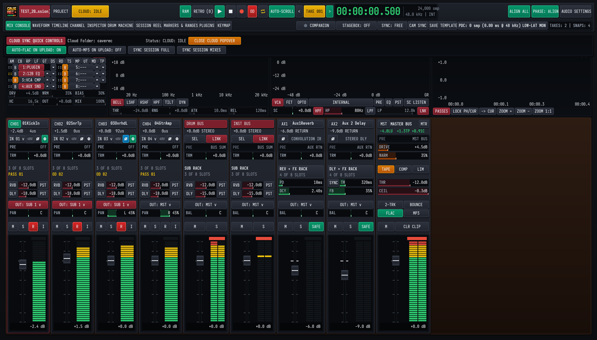
5.7.1 Scanning & Loading .clap & Audio Unit Plugins into the 8-Slot Rack#
Cave Recorder maintains a persistent, machine-local plugin index (clap_plugin_index.json inside your user configuration directory) covering two studio plugin architectures:
| Plugin Format | Supported Platforms | Standard System Discovery Locations & Identifiers |
|---|---|---|
CLAP (.clap) |
macOS, Windows, Linux | macOS: /Library/Audio/Plug-Ins/CLAP and ~/Library/Audio/Plug-Ins/CLAPWindows: C:\Program Files\Common Files\CLAP and %LOCALAPPDATA%\Programs\Common\CLAPLinux: ~/.clap and /usr/lib/clapCustom: Any folder added via + ADD SEARCH FOLDER..., any file added via + ADD .CLAP FILE..., or directories listed in the CLAP_PATH environment variable. Indexed by canonical reverse-URI identifier (such as org.surge-synth-team.surge-xt-fx). |
Audio Unit (AUv3 & AUv2) |
macOS ('aufx' Audio Effects, 'aumf' Music Effects, and 'aumu' Music Device Instruments) |
Synchronized automatically at macOS startup via the Audio Component registry across /Library/Audio/Plug-Ins/Components, ~/Library/Audio/Plug-Ins/Components, and registered macOS AUv3 application extensions. Indexed with canonical identifiers (au.<type>.<subtype>.<manufacturer>, such as au.aufx.dely.appl for AUDelay, or au.aumu.<subt>.<manu> for Audio Unit instruments) and virtual audiounit://<type>/<subtype>/<manufacturer> bundle paths. |
Fast Startup Validation & Isolated Out-of-Process Audio Unit Hosting on macOS
- Zero-Delay Startup Validation & Auto-Discovery: On application startup, Cave Recorder verifies the file modification timestamps of indexed
.clapbundles on disk (in direct downloads) and automatically synchronizes all registered macOS Audio Unit ('aufx','aumf', and'aumu') components via the system Audio Component registry without loading third-party dynamic libraries into memory. If a.clapbundle was moved or uninstalled while Cave Recorder was closed, its catalog entry is marked! MISSINGrather than deleted, preserving its metadata for non-destructive session recovery. - Isolated Out-of-Process Audio Unit Sandbox Protection (macOS & Mac App Store): On macOS, Cave Recorder instantiates both modern
AUv3extensions andAUv2components ('aufx','aumf', and'aumu') in isolated out-of-process system host processes by default so a faulty third-party plugin can never crash your active recording session (falling back cleanly to the generic parameter view if a custom graphical editor view cannot initialize). In the Mac App Store Edition,PLUGINShosts macOS Audio Units exclusively and hides.clapfilter pills and.clapdisk import buttons to comply with macOS App Sandbox security rules. Direct downloads fromcaverec.appcontinue to host both.clapand Audio Unit plugins.
5.7.2 Indexing & Managing Plugins in the PLUGINS Workspace View (CMD/CTRL + 7)#
Pressing CMD + 7 on macOS (CTRL + 7 on Windows and Linux) or clicking PLUGINS in Row 2 of the Top Transport Deck opens the dedicated PLUGIN MANAGER & INDEXED CATALOG workspace view.
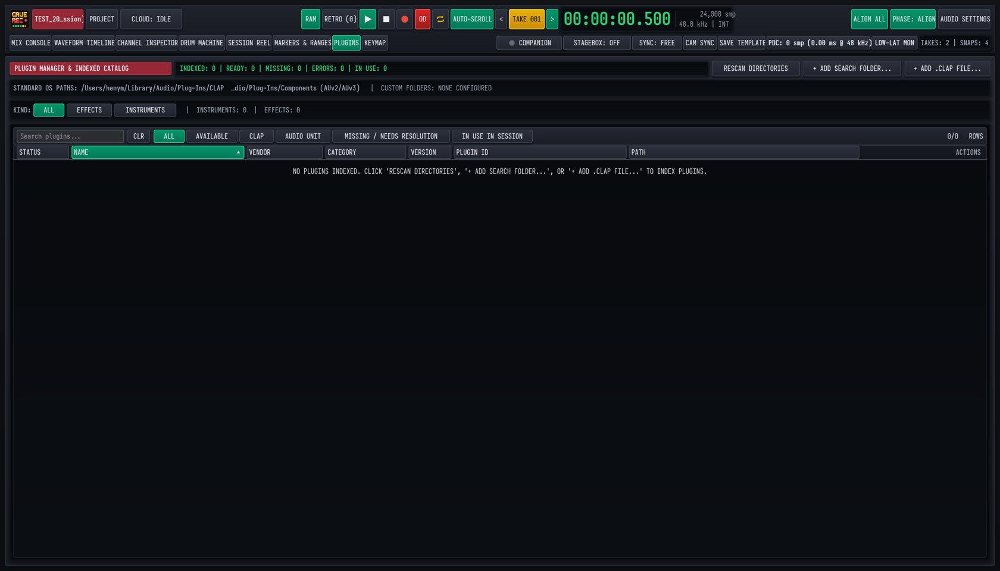
- Header Telemetry,
KINDFilter (ALL | EFFECTS | INSTRUMENTS) & Guided Discovery Actions:- Live Status Telemetry Pill: Reports
INDEXED: N | READY: N | MISSING: N | ERRORS: N | IN USE: Nat the top of the panel (illuminated emerald when all indexed plugins are ready, or amber when any entry is missing or failed to probe). - 3-Way Kind Filter (
KIND: ALL | EFFECTS | INSTRUMENTS): Isolates rack insert effects (EFFECTS), Pre-Tape Virtual Instruments (INSTRUMENTS, showing bothCLAPinstruments and macOS Audio Unit'aumu'Music Devices), or the full catalog (ALL), alongside live counts (INSTRUMENTS: N | EFFECTS: N). RESCAN DIRECTORIES(Non-Blocking Out-of-Process Scanning): Walks all standard OS.clapdirectories and configured custom search folders using an incremental modification-time check and probes newly added or updated.clapbundles and macOS'aufx','aumf', and'aumu'Audio Unit components asynchronously in an isolated background worker process. Faulty or incompatible third-party plugin bundles can never freeze the60 Hzuser interface or crash your active console session, and plugin reloads automatically guard against mid-operation session switches so stale results never overwrite a newly opened Session. Upon completion, an inline status banner summarizesSCAN COMPLETE: N DIR(S) WALKED | N BUNDLE(S) DISCOVERED (N PROBED, N CACHED) | N READY, N MISSING, N ERROR(S).+ ADD SEARCH FOLDER...: Opens a folder selection dialog (with an inline text-path fallback modal on headless systems) to register an additional.clapdirectory. Each custom folder appears in the search paths strip below the header as a recessed pill with anXbutton to remove the folder and prune its unreferenced entries.+ ADD .CLAP FILE...: Prompts you to select and probe an individual.clapbundle file asynchronously in the isolated background scanner without adding its entire parent directory.
- Live Status Telemetry Pill: Reports
- Searching, Filtering & Sorting the 8-Column Catalog Table:
- Live Search (
Search plugins...): Filters the catalog in real time across plugin name, vendor, reverse-URI orau.plugin ID, version, description, primary category (EQ,Compressor,Limiter,Gate / Expander,De-Esser,Transient,Reverb,Delay,Chorus,Flanger,Phaser,Saturation,Filter,Mastering,Analyzer,Restoration,Utility,Music Effect), feature tags, bundle path, status (ready,missing,error), and Audio Unit format tags (audio unit,audio-unit,auv2,auv3). - Quick-Filter Pills: Isolate
ALL,AVAILABLE([READY]plugins only),CLAP(.clapbundles only),AUDIO UNIT(macOSAUv2/AUv3effects only),MISSING / NEEDS RESOLUTION(! MISSINGandX ERRORrows), orIN USE IN SESSION(plugins currently assigned to one or more rack slots in the loaded session). - Sortable Columns & Hover Expansion: Click any of the seven sortable column headers (
STATUS,NAME,VENDOR,CATEGORY,VERSION,PLUGIN ID,PATH) to sort ascending or descending. Dwelling the mouse pointer over any truncated cell or folder pill for180 msexpands the full identifier, path, or error reason in place.
- Live Search (
- Per-Row Status Badges & Recovery Actions (
ACTIONSColumn):[READY](Emerald): The.clapbundle or macOS Audio Unit is verified and ready to load into any rack slot. Plugins active in the current session display an emerald[IN USE xN]badge next to their name showing how many rack slots reference that plugin.! MISSING(Amber) &X ERROR(Crimson): Indicates a.clapbundle that was moved or renamed on disk (Missing on disk (click LOCATE)), a macOS Audio Unit that is not currently registered (Missing Audio Unit (click RESCAN)), or a bundle that failed factory validation (with the diagnostic reason shown beneath the plugin name).LOCATE...,RESCAN&REMOVE: ClickLOCATE...to point Cave Recorder to a moved.clapbundle on disk (verifying that the selected bundle exports the expectedplugin_idand immediately relinking any Ghost Slots in the active session), clickRESCANto re-probe that specific plugin entry, or clickREMOVEto delete the entry fromclap_plugin_index.json.
5.7.3 Selecting, Loading & Opening Plugins in the 8-Slot Rack (SLOT N PROCESSOR & PLUGIN GUI)#
To load a built-in processor, third-party .clap plugin, or macOS Audio Unit effect into any channel or Subgroup Bus insert slot:
- Open the
SLOT N PROCESSORSelector Overlay: Select the target Input Track (CH01..CH18) or clickSELon the target Subgroup Bus (SUB 1..SUB 16), then click any slot pill (Slots 1..8) in Upper Well 1 (MIX CONSOLE, CMD/CTRL + 1) or in the left column ofCHANNEL INSPECTOR(CMD/CTRL + 3). - Choose Between Built-In Studio Processors or
Plugin(External Plugin):- Clicking any of the built-in studio processor rows (
12-Band Dynamic EQ,VCA Compressor,Tape Saturation,Vocal De-Esser,Context-Aware Gate,Signal Repair,Guitar/Bass Amp Rig,2P/4P Ladder LPF,Vocal Rider,Transient Shaper,Micro-Pitch Doubler,Gain & Polarity Utility,Studio Modulation, orAux Send Tap) assigns that zero-latency native module to the slot, whileEmpty Slotclears the slot (---). - Clicking
Plugin(or clicking a1:PLUGINslot pill that already hosts an external plugin) expands the floating card to348 pxand reveals theINDEXED PLUGIN CATALOGsubpanel at the bottom of the selector menu.
- Clicking any of the built-in studio processor rows (
- Search & Assign from the Indexed Catalog Subpanel:
- Type into the
Search indexed plugins...filter box (or clickCLRto clear) to narrow the list by plugin name, vendor, category, or format badge ([CLAP]/[AU]). - If you have not indexed your plugins yet, click
MANAGE...beside the search box to jump directly to thePLUGINSworkspace tab (CMD/CTRL + 7). - Click any
[ ] [AU] Name (Vendor) [Category]or[ ] [CLAP] Name (Vendor) [Category]row in the scrollable list ([x]indicates the plugin currently loaded in that slot). Cave Recorder instantiates the.clapor macOS Audio Unit effect, negotiates stereo 32-bit floating-point audio buses at the active hardware sample rate, and swaps the processor into the rack slot without interrupting transport playback.
- Type into the
- Open & Close Floating Native Plugin Editor Windows (
PLUGIN GUI):- Whenever a slot has an available
.clapor Audio Unit plugin assigned, the header of theSLOT N PROCESSORoverlay displays aPLUGIN GUItoggle button (illuminated emerald when the editor window is open on screen). - Cross-Platform CLAP Floating Windows: For
.clapplugins that implement the native plugin editor extension, clickingPLUGIN GUIopens a native floating desktop window on macOS, Windows, or Linux with live bidirectional parameter synchronization and plugin-initiated resize support. - Three-Tier Native Floating GUI Hosting on macOS (Audio Units): For hosted macOS Audio Units (
AUv3andAUv2), clickingPLUGIN GUIresolves the plugin's native editor view on the macOS main thread using a three-tier fallback chain and embeds it in a resizable native floating desktop window: - Tier 1 (Modern
AUv3Custom Editor View): Opens the modernAUv3custom editor view, including sandboxed remote plugin views and bridgedAUv2view controllers. - Tier 2 (Legacy
AUv2Custom Editor View): Instantiates the customAUv2graphical editor view provided by legacy.componentbundles. - Tier 3 (Generic Parameter Editor Fallback): If an Audio Unit does not provide a custom graphical view, Cave Recorder automatically constructs a macOS generic Audio Unit parameter editor so every Audio Unit parameter remains accessible.
- Whenever a slot has an available
- External Side-Chain Key Routing (
SIDE-CHAIN KEY SOURCE): When a hosted plugin declares a secondary side-chain input port (or dynamics/side-chain feature tags), you can open theSIDE-CHAIN KEY SOURCEdropdown to route eitherINTERNAL (Self)or any Input Track, Subgroup Bus, or Aux Return strip into the plugin's key input with selectablePRE,POST-EQ, orPOST-FDRtap point and-24.0 dBto+24.0 dBside-chain gain trim.
5.7.4 Preset State Persistence & Non-Destructive Ghost Slot Recovery (! MISSING)#
When you save a Session (*_session.json) or capture a Console Snapshot (SNAPS, CMD/CTRL + S), Cave Recorder serializes each populated plugin slot's complete state directly inside the session manifest:
- The canonical
plugin_id(org.vendor.pluginorau.aufx.subt.manu), display label, vendor, version, and last-known bundle path hint. - The slot's complete saved plugin preset state alongside the slot's parallel wet/dry mix ratio and bypass setting.
If you open a shared session on a second rehearsal or studio computer where a referenced .clap bundle or macOS Audio Unit is not yet installed (or was moved to a different disk folder), Cave Recorder never strips the plugin or discards its preset settings. Instead, it preserves the slot as a non-destructive Ghost Slot:
- Top-Level Missing Plugin Warning Banner: A high-contrast crimson-and-amber warning banner appears at the top of the workspace (
! MISSING PLUGIN(S) | N PLUGIN(S) ACROSS M GHOST SLOT(S) BYPASSED (STATE PRESERVED)), identifying the first missing plugin, vendor,plugin_id, strip name, and slot number, paired with three action buttons:LOCATE...: Opens a file picker to locate the missing.clapbundle on disk and immediately relinks and activates every Ghost Slot referencing thatplugin_id.OPEN PLUGINS: Switches directly to thePLUGINSworkspace view (CMD/CTRL + 7) pre-filtered toMISSING / NEEDS RESOLUTION.X(Dismiss): Hides the top warning banner for the remainder of the session while keeping the Ghost Slots safely bypassed in the rack.
- In-Slot Ghost Banner & Safe Audio Bypass: Opening
SLOT N PROCESSORon a Ghost Slot displays an amber diagnostic banner (! MISSING: <Name> (<Vendor>)andID: <Plugin ID> | BYPASSED (STATE SAVED)) with a headerLOCATE...button. Audio passes cleanly through the bypassed Ghost Slot during playback and recording, and the saved preset state is written back untouched whenever the session or a new Snapshot is saved. - One-Click Live Restoration: The moment you relink the
.clapbundle viaLOCATE...or install the missing plugin and clickRESCAN DIRECTORIESin thePLUGINSview, Cave Recorder instantiates the plugin, restores its saved preset state and original user bypass setting, and resumes live processing across all matching slots in the session.
5.7.5 Automatic Plugin Delay Compensation (PDC) & Transparency Breakdown#
All built-in Cave Recorder processors (TAPE, 12B EQ, VCA CMP, DE-ESS, GATE, REPAIR, RIDER, AUX 1 REVERB, AUX 2 TAPE DLY) operate with zero internal sample latency (0 smp / 0.00 ms). However, when you insert a third-party .clap plugin or macOS Audio Unit (AUv3 / AUv2) effect that uses internal lookahead buffering (such as linear-phase equalizers, spectral processors, or lookahead limiters), that plugin communicates its reported plugin latency in samples to Cave Recorder.
To prevent phase cancellation or timing drift between parallel tracks and subgroups, Cave Recorder performs Automatic Plugin Delay Compensation (PDC) across the entire mixing graph:
- Row 2 of the Top Deck displays a live
LATENCY 0.0 msstatus pill at all times. - Clicking the
LATENCYpill in the Top Deck opens the Latency & PDC Transparency Breakdown popover (shown in Figure 5.4 above), which reports every latency stage in your studio system in both Samples (smp) and Milliseconds (ms):Audio I/O: Current hardware buffer size (256 frames @ 48000 Hz), input buffer latency (In: 64 smp / 1.33 ms), output buffer latency (Out: 64 smp / 1.33 ms), and calibrated hardwareRoundtrip I/O(640 smp / 13.33 ms).Total Graph PDC&Effective Playback PDC: Total delay compensation applied across parallel tracks and buses (Max Safe Ceiling: 96,000 smp / 2000.00 ms).Playhead Lag&Overdub Record-Offset: Exact negative sample offset (-640 smp / 13.33 ms) applied automatically when writing new Overdub Passes (Rec002-OD) to disk so that everything a musician plays against playback lands sample-accurately on the timeline.- Filterable Per-Channel Table (
ALL,ARMED,COMPENSATED,BYPASSED): Lists every Input Track (Track 1 [ARMED]..Track 18),Subgroup 1..2,Aux 1 (Reverb),Aux 2 (Delay), andMaster Buswith its individual sample and millisecond compensation state.
5.7.6 LOW-LATENCY Monitoring & Live Monitoring Latency Warning Persistence#
When you are late in a mix and have inserted a high-latency lookahead mastering plugin or linear-phase EQ (.clap or macOS Audio Unit) on a track or Subgroup Bus, recording a last-minute vocal or guitar overdub through that high-latency plugin would introduce a distracting echo in the musician's headphones.
Clicking LOW-LATENCY in Row 2 of the Top Deck solves this immediately:
- Cave Recorder temporarily bypasses high-latency CLAP and Audio Unit effect plugins only on record-armed (
R) live monitoring paths and their downstream buses, dropping the musician's headphone monitoring latency back down to pure zero-latency built-in console processing (0 smpgraph PDC). If an armed Pre-Tape Virtual Instrument itself reports high internal lookahead latency (> 256samples at48.0 kHz),LOW-LATENCYkeeps the sound-generating instrument active while bypassing downstream high-latency rack effects and surfaces a high-latency instrument advisory. - All unarmed playback tracks continue playing with full Plugin Delay Compensation.
- As soon as you finish recording the Overdub Pass and disarm the track (or toggle
LOW-LATENCYoff in the Top Deck), the high-latency plugins re-engage automatically without losing a single plugin parameter setting.
Whenever one or more record-armed tracks exceed the 10.0 ms live software monitoring threshold, Cave Recorder displays the Live Monitoring Latency Warning banner (Live Monitoring Latency Warning (<N> record-armed track(s)) | <total> ms total (<pdc> ms PDC + <io> ms I/O)) with three persistent choices:
Enable Low-Latency Monitoring: ActivatesLOW-LATENCYimmediately and bypasses high-latency plugins on armed monitoring paths, suppressing the banner once effective latency falls within threshold (or recording a high-water mark for residual unbypassable latency).Dismiss: Silences the warning banner for the remainder of the current Session unless effective live-monitoring latency strictly increases above the dismissed high-water mark (for example, if you later insert an even heavier lookahead plugin). Switching sessions or disablingLOW-LATENCYorHW DIRECT MONresets the dismissal watermark.Enable Hardware Direct Monitoring: For studios where musicians monitor live inputs through an audio interface or stagebox's zero-latency hardware mixer rather than software foldback, clickingEnable Hardware Direct Monitoringsaveshardware_direct_monitoringglobally insidedevice_settings.jsonso the preference persists automatically across session switches and application restarts. To toggle or reset Hardware Direct Monitoring later, open the Top DeckLATENCYpopover and clickHW DIRECT MON(displayingMonitoring: Hardware Direct (interface zero-latency mix)when active, orMonitoring: Software DAW (live inputs monitored through mixer)when off).
5.8 Built-In Non-Destructive Audio Restoration (ADC De-Clipper & 12-Harmonic Hum Canceller)#
In a high-energy rehearsal or live tracking session, a drummer will occasionally hit a rimshot 6 dB harder than during soundcheck and flat-top the hardware preamp's analog-to-digital converter (0.0 dBFS), or a vintage tube combo amp will pick up 50 Hz or 60 Hz power-line buzz in an older basement venue.
Instead of forcing you to export stems to an external audio restoration editor, Cave Recorder includes two non-destructive studio restoration tools built directly into the console and timeline:
[REPAIR CLIPPING](Two-Tier Smooth Spline & Spectral Waveform De-Clipper):- Automatically detects contiguous flat-topped digital saturation bursts where the waveform hits the converter ceiling (default
-0.1 dBFSthreshold, user-adjustable from-12.0 dBFSto0.0 dBFSfor hard-clipped external preamps). - Short Clips (
1to8samples): Reconstructs the missing transient peak using smooth spline interpolation anchored to the unclipped amplitude, velocity, and curvature immediately preceding and following the clip burst. - Medium & Long Clips (
9to256samples): Fits a forward/backward harmonic waveform prediction model to the512clean context samples surrounding the clipped plateau, predicts the natural harmonic waveform trajectory forward and backward across the gap with raised-cosine crossfade blending, and restores the lost3 dBto6 dBtransient dome cleanly.
- Automatically detects contiguous flat-topped digital saturation bursts where the waveform hits the converter ceiling (default
50 Hz / 60 Hz12-Harmonic Comb Hum Canceller (Hum Canceller):- Power-line ground loops and neon/dimmer transformer buzz never sit solely at
50 Hzor60 Hz. They generate a sharp comb of odd and even harmonics (60, 120, 180, 240, 300, 360, 420, 480, 540, 600, 660, 720 Hz) that sounds like an angry hornet nest inside guitar and bass tracks. Trying to cut all 12 harmonics with regular EQ bands wastes your entire parametric equalizer and hollows out the low-mid tone of the instrument. - The dedicated
Hum Cancellercascades 12 ultra-narrow constant-Qbiquad notch filters (Q = 20.0to100.0, defaultQ = 60.0, bandwidth< 1.0 Hzat the fundamental) locked tof_0, 2f_0, ..., 12f_0(50.0 HzEuropean or60.0 HzNorth American mains, with fundamental fine-tuning from45.0 Hzto65.0 Hzand selectableOdd Harmonics Onlyvs.Odd + Even Harmonics). Because each notch is less than a couple of Hertz wide,50/60 Hzbuzz vanishes completely while99%of the surrounding bass and guitar note warmth passes through untouched.
- Power-line ground loops and neon/dimmer transformer buzz never sit solely at
For step-by-step instructions on applying [REPAIR CLIPPING], range-bounded Pass comping, [PATCH FROM SOURCE...], and [SMOOTH OVER ARTIFACT] spectral spot-healing directly on the Waveform Timeline, see Section 6.5 in Chapter 6.
5.9 Native Virtual Analog Groovebox, Melodic Sequencer & Studio Sampler (GROOVEBOX)#
Pressing CMD + 6 on macOS (CTRL + 6 on Windows and Linux), clicking GROOVEBOX in Row 2 of the Top Transport Deck, or clicking [GUI] on any channel strip hosting [NATIVE] CAVE DRUM MACHINE opens Cave Recorder's built-in Virtual Analog Groovebox, Melodic Sequencer & Studio Sampler across four sub-views: SEQUENCER, SYNTH & SCOPE, SAMPLER, and ARRANGER.
Built directly into the Pre-Tape Track Input Stage, the Groovebox gives rehearsal bands, electronic/krautrock trios, and live jammers a tactile 16-voice drum, bass, and sampling groovebox (combining four coupled percussion voice archetypes, the monophonic ANALOG BASS synthesizer, and the STUDIO SAMPLER voice) that locks cleanly to ● MIDI, feeds the 30-minute stereo ● RETRO memory, prints directly into standard 32-bit float audio Pass stems (rec/*.wav), breaks individual drum, bass, or sampled voices out to separate console channels, and pairs wirelessly with the Cave Companion tablet and phone GROOVEBOX (WAVE / SLICES / MANGLE) remotes.
5.9.1 Pre-Tape Stem Breakouts, Bidirectional Tempo & Non-Destructive Factory Kits#
- 16-Voice Kit Pool & Individual Voice Console Stem Breakouts (
OUT: BUSvs.STEM):- Each Drum Machine instance provides a 16-voice kit pool (
12voices active by default, expandable up to16via+ INSERT VOICE/+ VOICE), letting you place one or more monophonicANALOG BASSlanes right alongside percussion voices in any kit. - By default, all voices sum into the Drum Machine's internal stereo Glue Bus (
OUT: BUS) and record through the hosting channel strip. - Assigning any voice's
OUTcontrol to aSTEMbreakout removes that voice from the internal Drum Master Bus by default (preventing comb filtering, with an explicit parallel option if desired) and routes its stereo output directly into a dedicated Mix Console channel strip at zero added latency. That broken-out drum or bass voice then gets its own 8-slot console rack, Aux1..8Reverb/Delay sends, fader, raw.wavPassstem, and 30-minuteRETROcapture.
- Each Drum Machine instance provides a 16-voice kit pool (
- Bidirectional Studio Tempo (
STUDIO CLK) & 4-Mode Master Transport Coupling (FOLLOW TRN):- Tempo Follower & Master (
STUDIO CLK): WhenMIDI SYNCis locked (SYNC: LOCK) from a floor looper or 4-tap count-in, the Drum Machine locks automatically as a sample-accurate follower. WhenMIDI SYNCis free (SYNC: FREE) andSTUDIO CLKis lit (default), adjustingBPM(30.0to300.0 BPM) inside the Drum Machine drives the entire studio clock, automatically locking outbound24 PPQNMIDI Clock,AUX 2Stereo Delay,4-Mode Modulation, and sibling virtual instruments to the Drum Machine's tempo and downbeat. - 4-Mode Master Transport Coupling (
FOLLOW TRN) & Immediate CoupledSTOP/|<Response: - Rehearsal Jam Mode (Master Transport Stopped): Clicking
SEQ PLAYrolls the sequencer live (continuously feeding stereo 30-minuteRETROmemory) without advancing aTaketimeline. - Standstill Master
Play/Record: Pressing MasterPlayorRecordwhile idle starts the active Scene atBar 1 / Step 01locked cleanly to00:00:00.000(holding cleanly through any<= 25 msexternal MIDI pre-roll so Beat 1's kick transient is never truncated). - Mid-Jam
RecordPunch & Coupled Stop/RTZ: Punching MasterRecordwhileSEQ PLAYis rolling preserves unbroken live groove phase in the room (or waits for the next Beat 1 whenAUTO-REC ON BEAT 1is latched inMIDI SYNC). Pressing MasterStophalts step triggering while allowing cymbal, membrane, and bass tails to decay naturally. During coupled Master DAW Playback (when not recording a Take), clickingSEQ PLAY(Stop) or|<(Return-to-Zero) on Desktop or Cave Companion responds immediately and stays synchronized with the Master Transport without interrupting active Take recordings. - Recorded
TakePass Isolation: On a disarmed, unmonitored Drum Track (Roff,Ioff) with a recorded audioPass(Rec001.wav), pressing MasterPlaystreams the recorded.wavstem (preserving every liveCTRL ALL, Scene jump, melodic bass performance, andSlip Beat-Repeatmove) and silences the live sequencer so drums and bass never double-play.
- Tempo Follower & Master (
- Pinned Woody Studio
METRONOMEKit & Symmetric 13-Kit[POCKET | CLUB]Factory Suite (21 Grooves, Non-Destructive+GROOVEOpt-In):- The
FACTORY KITS:bar across Desktop and Cave Companion (DRUMS) pinsMETRONOMEpermanently on the far left followed by a symmetric, zero-scroll two-bank[POCKET | CLUB]selector covering 13 built-in kits and 21 starter grooves: - Pinned Leftmost
METRONOMEKit (4-Track Woody Studio Click & 7 Meter Grooves): Collapses the matrix cleanly to four phase-reset modal wood-block voices (01 BAR ACCENT,02 GROUP BEAT,03 BEAT CLICK,04 SUBDIV TICK) with the Glue Bus bypassed so clicks stay crisp and uncolored. SelectingMETRONOMEautomatically seeds its defaultFREE(unaccented4/4live pulse) groove whenever the active pattern is completely empty (while preserving any non-empty pattern when+GROOVEisOFF), and contextually displays seven meter buttons inGROOVES::FREE,4/4,3/4,5/4,6/4,7/4, and Jazz2 & 4. POCKETBank (6 Kits / 8 Grooves):STUDIO ANALOG(SHUFFLE BRK, featuring pre-voiced slot12 ANALOG BASS),DESERT ROCK(DESERT SLOUCHandTRIBAL TOMSheavy open-drum stoner rock grooves with parallel room-crush bus),SOUL POCKET(DRUNK POCKETunquantized micro-nudged groove, also featuring slot12 ANALOG BASS),BOOM BAP(EAST COAST 90swung-pickup punch groove),MOTORIK DRY(MOTORIK 4/4),MODAL METAL(POLY MODAL), plus the syncopated ladder-bass showcase grooveFUNK POCKET(octave bassline slides and tied holds on slot12 ANALOG BASS).CLUBBank (6 Kits / 6 Grooves):TECHNO PUNCH(MINIMAL TECH),DEEP SUB ELECTRO(ELECTRO SUB),BREAKS 174(DNB 2-STEP),HALFTIME SUB(HALFTIME 140),PSY MATRIX(PSY ROLLERphase-locked kick/bass on Choke Group 3), andACID & FUNK(122.0 BPM, pairing punchy electro-funk drums with dual pre-voicedANALOG BASSslots11 LADDER FUNKand12 ACID SQUELCH, plus the 16th-note resonantACID SQUELCHstarter groove showcasing melodic notes, ties, pitch slides, and accents).- Strictly Non-Destructive Kit Switching: Clicking any Factory Kit swaps only the synthesized drum and bass voices, Glue Bus, and Morph presets (preserving your console
STEMbreakouts, all 64 Patterns, all 16 Scenes, and your active Scene). Enable+GROOVE(defaultOFF) if you also want kit selection to load a starter groove into the single currently selected active pattern (fully undoable via CMD/CTRL + Z, leaving all other 63 patterns untouched), or click any contextual groove button inGROOVES:orCLEAR PAT.
- The
5.9.2 The Six Voice Archetypes (4 Drum Voices + ANALOG BASS + STUDIO SAMPLER), Storage-CRT Scope & Glue Bus (SYNTH & SCOPE)#
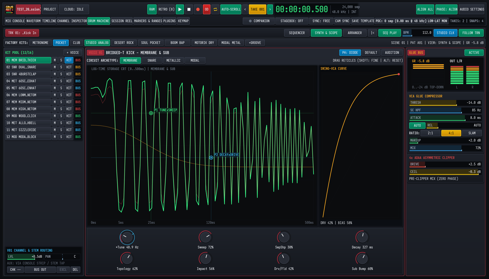
Every voice slot in the 16-voice kit pool can be switched between six voice archetypes (four coupled virtual analog percussion voices, the monophonic ANALOG BASS synthesizer, and the STUDIO SAMPLER voice), each exposing a standardized 2 x 4 (8-macro) rotary bay that maps 1:1 across the desktop faceplate, the Studio Pad Surface, and the Cave Companion tablet and phone touch encoders. Analog oscillator phases, filter integrators, and envelope capacitors retain natural analog charge memory across rapid hits and notes, while STUDIO SAMPLER applies an automatic 2.0 ms click-free de-click tail on retriggers and slice jumps:
| Circuit Archetype | Physical Circuit / DSP Topology | Standardized 8-Macro Bank (0..7) |
Primary Musical Roles |
|---|---|---|---|
MEMBRANE & SUB (MEM) |
Coupled non-linear resonant core morphing continuously from passive damped Bridged-T resonance to self-oscillating limit-cycle with antiparallel-diode damping, anti-aliased sine wavefolder, Sub Bump 22 Hz resonant HPF, and selectable PH: DIODE (consistent punch phase-pull), FREE (organic analog drift), or RESET (zero-phase lock). |
Tune (28..220 Hz), Sweep, SwpShp, Decay (30..2500 ms), Topology (Bridged-T to Limit-Cycle), Impact, Drv/Fld, Sub Bump. |
Sub-bass kicks, punchy analog kicks, rack/floor toms, and tuned low percussion. |
SNARE & CLAP (SNR) |
Dual resonant shell filters with impact-gated cross-FM, avalanche noise modulated by sympathetic shell energy, continuous 1-to-5-pulse multi-burst clap generator, mono-safe stereo allpass spread, and 40 Hz DC-blocking HPF. |
Body Tune (100..600 Hz), Shell Ratio (1.00..2.20x), Body Decay (15..600 ms), Tone / Noise, Burst Density (1-pulse snare to 5-pulse clap), Noise Freq (400..8000 Hz), Noise Res (0.5..6.0 Q), Tail Decay (20..1500 ms). |
Crisp analog snares, rimshots, multi-burst handclaps, and noise snaps. |
METALLIC MATRIX (MET) |
6-oscillator inharmonic asymmetric-pulse bank with diode-bridge ring cross-modulation, thermal RC drift, fast 2.2 ms stick-"chick" transient stage, pre-filter asymmetric Swing-VCA, resonant bandpass + air path, and steep 24 dB/oct Sizzle HPF. |
Base Pitch (200..3500 Hz), Alloy (2-osc Cowbell fifth through 6-osc Hat to Bronze Cymbal/Gong), Cross-Mod, Trash / Bias, Bandpass Hz (600..14000 Hz), Sizzle HPF (200..11000 Hz), Decay (10..3000 ms), Thermal Drift. |
Sizzling closed/open hi-hats, cowbells, alloy bells, rides, and crashes. |
MODAL & IMPACT (MOD) |
Shaped mallet-to-2-op-FM strike exciter driving dual high-Q resonant modal filters with material upper-mode damping tilt, parallel-to-series morphing, and mono-safe stereo body dispersion. | Root Pitch (80..3000 Hz), Modal Ratio (0.50..4.50x), Material Tilt (Wood to Bell), Par / Series, Strike Hard, Pitch Bend (-24..+24 st), Decay (5..1200 ms), Stereo Body. |
Woodblocks, claves, rim clicks, metallic bells, and pitched percussion. |
ANALOG BASS (BAS / BASS, Analog Violet) |
Oversampled monophonic bass synthesizer with band-limited sawtooth-to-variable-width-pulse VCO (with subtle organic pulse-width movement), phase-locked -1 oct divide-by-2 flip-flop sub plus detuned dual-VCO beat blend, 1V/oct exponential portamento, unified 4-pole zero-delay-feedback filter morphing smoothly from uncompensated transistor ladder (+2.2 dB 24 Hz pedal-bass sub-coupling bump) to passband-compensated OTA filter (retaining full sub weight at high resonance), pre-filter Class-A drive with post-VCA feedback, asymmetric post-filter multi-drive, and analog accent coupling (tightening filter decay while boosting sweep and drive). |
Waveform (0..100%: Saw to Saw+Square to Funk Pulse/PWM), Sub / Beat (0..60% -1 oct Sub, 60..100% + Dual-VCO Beat), Cutoff (25..12000 Hz, +50% key-tracking), Resonance (0..98%), Env Mod (0..100%), Decay (30..2500 ms), Drive / Fdbk (0..100%), Topology (0% Vintage Transistor Ladder to 100% Compensated OTA). |
Vintage funk ladder basslines, resonant liquid acid sequences, sub-bass grooves, and live MIDI bass leads. |
STUDIO SAMPLER (SMP, Hot Coral Rose) |
Sample-rate-invariant 4-point cubic Hermite playback engine with 2.0 ms click-free de-click tail, 5 playback modes (ONE-SHOT, GATE HOLD, LOOP FWD with equal-power loop crossfade down to micro-grain lengths, PING-PONG, and 64-slice SLICE-LOCK), per-step reverse lock, switchable bipolar DJ FILTER (LP <-> HP) or tuned COMB RES feedback resonator, warm preamp drive plus progressive bit/sample-rate crush, and per-voice assignable LFO. Whenever a STUDIO SAMPLER voice is focused in SYNTH & SCOPE, a contextual STUDIO SAMPLER: banner offers a 1-click OPEN IN SAMPLER jump. |
Pitch (-24.0..+24.0 st), Start / Slice (0..100% or S01..S64 in SLICE-LOCK), Length (0.5..100%), Attack (0.1..500 ms), Decay / Rel (10..5000 ms), Filter / Tune (0..100%), Reso / Fdbk (0..98%), Grit / Crush (0..100%). |
Chopped rehearsal breakbeats, resampled guitar/horn stabs, pitched vocal textures, micro-grain drones, and chromatic melodic one-shots. |
- Contextual Bass Voice Setup Strip (
ANALOG BASSVoices Only): Whenever the selected voice is set toANALOG BASS(Analog Violet badgeBASin the Voice Rail,BASSkeycap inCIRCUIT ARCHETYPE:), a compact setup strip appears directly below the voice header in both theSEQUENCERQuick Synth bay and theSYNTH & SCOPEview (omitted on percussion voices so drum layouts never shift):ROOT(C1..C4, defaultC2): Sets the voice's fallback root pitch for unpitched steps and[AUDITION]clicks (double-click orOPT/ALT + Clickresets toC2). Clicking[AUDITION]on anANALOG BASSvoice plays a punchy220 msnote atROOT.FINE(-100..+100 ct, default0 ct): Bipolar micro-tuning offset in cents to match slightly sharp or flat live studio instruments.GLIDE(0..500 ms, default35 ms) &G-MODE(G: SLIDE/G: ALWAYS): Controls1V/octlog-Hz exponential portamento speed. InG: SLIDE(default), pitch glides occur on sequencer steps withSLIDEenabled and during overlapping live legato MIDI notes. InG: ALWAYS, every pitch change glides smoothly at the configuredGLIDEtime.ENV(ENV: RETRG/ENV: LEGTO/ENV: GATE): Selects between three analog envelope behaviors:ENV: RETRG(default, re-excites filter and amp capacitors on every non-tied note while holding uninterrupted across tied steps),ENV: LEGTO(suppresses envelope retriggering on any overlapping live MIDI phrase, tie, or full-step gate overlap), andENV: GATE(organ/pedal sustain holding the VCA at a steady plateau across the entire note gate while the filter decays toward a warm sustain floor).MIDI(MIDI: CHRM/MIDI: PAD): WhenMIDI: CHRMis active (automatically enabled when creating or switching to anANALOG BASSvoice), inbound external MIDI keyboard notes (0..127) route exclusively into the focusedANALOG BASSvoice through an 8-note monophonic last-note-priority key stack (supporting held-gate sustain, overlapping legato glides, and clean previous-note return on key release) while suppressing drum-pad note triggers so playingC2,D2, orF#2basslines never fires Kick, Snare, or Hi-Hat. Toggle toMIDI: PADwhenever you want the bass slot to trigger as a single-note drum pad alongside the rest of the kit.
- Triggered Log-Time Storage-CRT Oscilloscope (
0..500 ms) & 2D XY Reticles: Captures each hit or bass note on a logarithmically warped time axis (0..500 ms) with 3-hit phosphor persistence trails and archetype-specific overlays (pitch sweep curve, clap discharge bursts, 6-oscillator alloy spectrum bars, dual modal formants, or resonant ladder/OTA bass harmonic contour). Drag the two interactive reticle nodes (P1andP2) directly over the waveform to sculpt paired macros in 2D (hold SHIFT for fine gear, OPT/ALT +Clickto reset). OnANALOG BASSvoices,P1maps toCUTOFF×RESONANCEandP2maps toENV MOD×DRIVE. - Asymmetric
SWING-VCA CURVEVisualizer: Displays the voice's equal-loudness asymmetric transistor VCA transfer curve in real time as you adjust drive and bias. - Shared Drum Master
GLUE BUS: Sums allBUSvoices through a parallel VCA Glue Compressor (THRESH,SC HPF20..150 Hz,ATTACK0.1..30 ms,AUTO/REL50..400 ms,RATIO 2:1 | 4:1 | SLAM,MAKEUP,MIX 0..100%blended pre-clipper for zero phase cancellation, and a top-down amberGRmeter) feeding a4xOversampled Asymmetric Soft Clipper (DRIVE 0..+12 dB,CEIL -6.0..0.0 dBFS).
5.9.3 Polymetric & Melodic Step Sequencer ([2D | NOTE | VEL]), Parameter Locks & Live Performance Deck (SEQUENCER)#
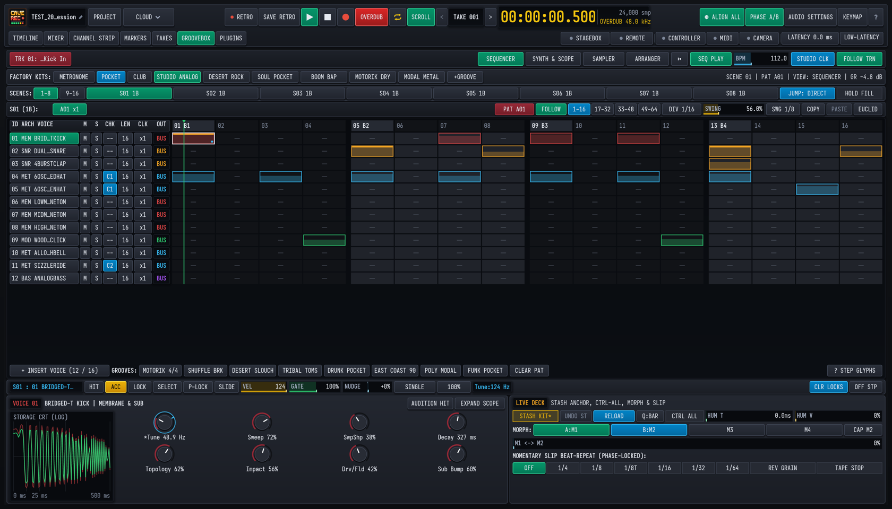
- 64 Patterns (
A01..D16), Per-Voice Polymeter & Pattern Swing:- Each Pattern spans
1to64steps across four page selectors (1-16,17-32,33-48,49-64) with selectable base step division (DIV:1/8,1/8T,1/16,1/16T,1/32),COPY/PASTE, and one-clickEUCLIDEuclidean rhythm generation. - Pattern
SWING(50.0%to75.0%in0.1%increments): Paired with a selectable swing division (SWG:1/8default,1/16,1/4, or1/32) delaying off-beat sub-pulses smoothly. - Per-Voice Polymeter (
LEN 1..64), Polyrhythm (CLK) & Dynamic Choke Groups (CHK C1..C4): Give any drum or bass voice an independent step length (LEN) and clock ratio (CLK:x1,1/2,1/4,3/2,4/3,5/4,2/1) with zero cumulative drift. Voices sharing a choke group (C1..C4, such as Closed and Open Hi-Hat, or Kick choking Bass for tight club ducking) damp each other smoothly over3..12 mswith zero clicks.
- Each Pattern spans
- Always-Visible Thin-Line Playhead & Return-to-Zero (
[|<]):- One continuous
1.5 pxfractional-phase vertical playhead hairline glides smoothly from the step ruler across active voice rows (luminous phosphor green while rolling, calm slate/cyan when parked). Polymetric rows whose wrapped position differs from row 1 draw a subtle row-local hairline. - Click
|<(or double-stop) to return the playhead to Step01, or click anywhere along the step ruler while stopped to park and scrub the playhead.
- One continuous
- Contextual Step Inspector, Non-Destructive Selection & Parameter Locks (
P-LOCK):- On percussion rows, click any empty step cell to activate
HITand drag vertically in one motion to set velocity. Clicking an active step with< 4 pxmovement toggles it off while preserving stored notes, parameter locks, and articulations for quick re-enable. - Non-Destructive Step Selection: To inspect or edit an active step without turning it off, enable
SELECTmode, armP-LOCKmode (which automatically switches clicks to select-only), or useOPT/ALT + Click,CMD + Click, orMiddle-Clickanywhere on the matrix. UseSHIFT + Clickto toggleACC(Accent) andRight-Clickto toggleLOCK(Triggerless Parameter Lock◇). - Per-Step Articulations: Shape
VEL(1..127),GATE(5..1600%, where100%is a natural one-shot on percussion voices and a crisp55%analog sequencer gate duty onANALOG BASSvoices, reaching full-step overlap at182%),NUDGE(-50..+49%micro-timing),SINGLE/FLAM(4..30 ms) /RETRIG(2..8sub-hits with crescendo/decrescendo slope),SLIDE(smoothly slews P-locked macros on percussion voices, and executes a slurred1V/octlog-Hz pitch slide with continuous gate bridge into the next active note onANALOG BASSvoices), and stepCOND(Always, probability%, cyclek:n1:2..8:8,FILL, or!FILL). - Parameter Locks (
P-LOCK): Hold any step cell (>= 180 mswith< 4 pxtravel) and turn any of the 8 voice macros (or armP-LOCKand select steps) to record per-step parameter overrides. ClickCLR LOCKSto clear locks on the selected step, or? STEP GLYPHSfor an inline legend of step symbols.
- On percussion rows, click any empty step cell to activate
- Melodic
ANALOG BASSStep Rows, Tie Bridges &[2D | NOTE | VEL]Step-Drag Modes:- High-Contrast Note Labels & Violet Tie Bridge Bars: Active steps on
ANALOG BASSrows display their centered chromatic 12-TET note name (C2,Eb2,F#1, etc.) and a left-edge octave-register pip alongside velocity shading, amber Accent bars, cyan/slide glyphs, and P-lock diamonds. Whenever an active step hasTIEenabled (orSLIDEinto the following active step), an Analog Violet Tie Bridge Bar connects across the cell or beat-group gap, and the scheduler holds the gate across exact swung and micro-nudged beat positions so the envelopes stay uninterrupted without false retriggers. - Contextual Bass Step Inspector (
TIE,NOTE&[2D | NOTE | VEL]): Selecting anANALOG BASSvoice expands the Step Inspector withTIE(toggles continuous legato bridging into the next step),NOTE(C0..C8vertical drag slider withDouble-Click/OPT/ALT + Clickreset toROOT, plusRight-Clickkeyboard entry accepting both note names such asEb2orF#1and MIDI note numbers such as36), and the three-way[2D | NOTE | VEL]step-drag mode selector: 2D(Default, Axis-Locked Pitch + Tie Chains): After crossing the4 pxdeadzone, dragging vertically locks to chromatic pitch (8 pxper semitone, with a short preview audition when transport is stopped, and holding SHIFT mid-drag steps in whole octaves±12 stfor fast funk leaps). Dragging horizontally paints a sustained Tie chain rightward across steps (retracting cleanly if you drag back left). Hold OPT/ALT or CMD and drag vertically on an active step to sculpt velocity without leaving2Dmode.NOTE(Pure Vertical Pitch): Uses the same vertical chromatic pitch drag (SHIFT= octave steps,OPT/ALTorCMD= velocity) with horizontal Tie-chain painting locked off so rapid diagonal sweeps never add unintended ties.VEL(Pure Vertical Velocity): Matches percussion rows (Click + Vertical Dragedits velocity1..127,SHIFTfor fine gear) for fast ghost-note bass dynamics, whileOPT/ALTorCMD+ vertical drag edits chromatic note pitch.
- High-Contrast Note Labels & Violet Tie Bridge Bars: Active steps on
- Live Performance Deck (
STASH KIT,CTRL ALL,MORPH,Humanizer&SLIP BEAT-REPEAT):STASH KIT/UNDO ST/RELOAD(Q:INST|Q:BAR): Bookmarks your active Kit, Pattern, and Morph state into RAM. Overwriting a dirty stash (STASH KIT*) requires a400 mspress-and-hold (orSHIFT + Click) with 1-deepUNDO STprotection.RELOADsnaps the kit back instantly (Q:INST) or on the next bar downbeat (Q:BAR) with smooth5 msmacro slewing.CTRL ALL: Momentary while held (double-click to latch), fanning relative macro knob moves across all unmuted voices simultaneously.MORPHCrossfader (M1..M4+CAP): Interpolates stored per-voice macro scenes (A <-> B) smoothly across the kit.- Seeded
Humanizer(HUM T0.0..15.0 ms,HUM V0..25%): Adds organic micro-timing and velocity variation while keeping Beat 1 downbeats tightly anchored. - Momentary
HOLD FILL& Phase-LockedSLIP BEAT-REPEAT: HoldHOLD FILLto triggerFILLconditional steps, or hold anySLIP BEAT-REPEATdivision (1/4,1/8,1/8T,1/16,1/32,1/64) to retrigger the real analog drum and bass voices rhythmically while true song phase keeps advancing underneath ("Slip Mode"), landing cleanly back on the beat when released (automatically clamping repeatedANALOG BASSgates so rapid1/32and1/64bass rolls articulate crisply instead of fusing into a static drone).REV GRAINreverses the most recent transient slice andTAPE STOPdecelerates the drum bus smoothly over450 ms.
5.9.4 16-Scene Pattern-Chain Arranger (ARRANGER)#
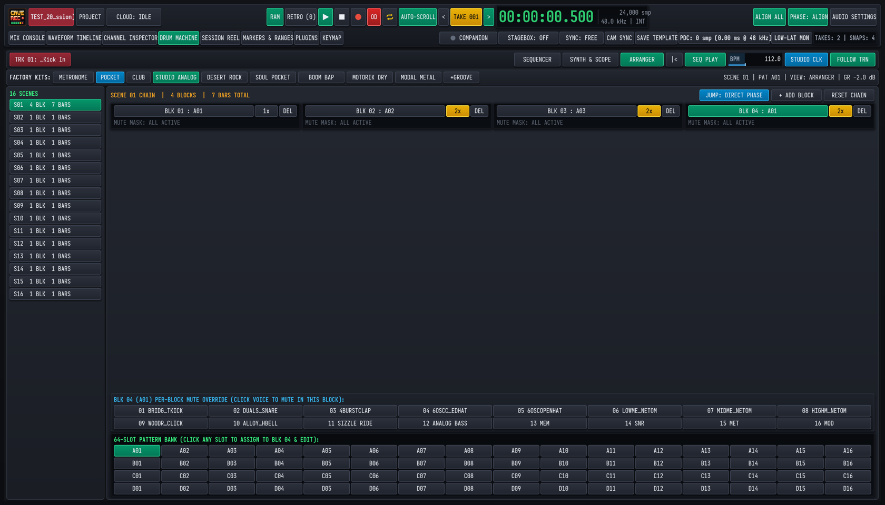
Switch to ARRANGER to chain Patterns (A01..D16) into up to 16 playable Scenes (S01..S16):
- Scene Chain Blocks (
+ ADD BLOCK,1x..,DEL,RESET CHAIN): Stack up to 32 ordered blocks per Scene, assigning any Pattern slot from the 64-Slot Pattern Bank (A01..D16), setting per-block bar repeats (1x,2x, ...), and toggling Per-Block Voice Mute Overrides to build automated intros, drops, and drum breakdowns without duplicating patterns. - Phase-Locked Scene Jumping (
JUMP: DIRECT|NEXT BEAT|NEXT BAR): InDIRECTmode (default), jumping between Scenes mid-bar preserves exact running beat phase so the groove never restarts from zero or drops a downbeat. Switch toNEXT BEATorNEXT BARto queue Scene transitions to the next musical boundary.
5.9.5 Studio Sampler Workspace (SAMPLER): SuperFlux Slicing, Live Resampling, Creative Shaping & SAMPLE HISTORY#
Switch to SAMPLER inside GROOVEBOX (CMD/CTRL + 6), click OPEN IN SAMPLER from SYNTH & SCOPE, or click -> SAMPLER on any selected Range in TIMELINE to open the dedicated Studio Sampler workstation. The Studio Sampler lets bands capture spontaneous live rehearsal grooves, guitar chords, or full console submixes directly into playable pads without cluttering song Take timelines.
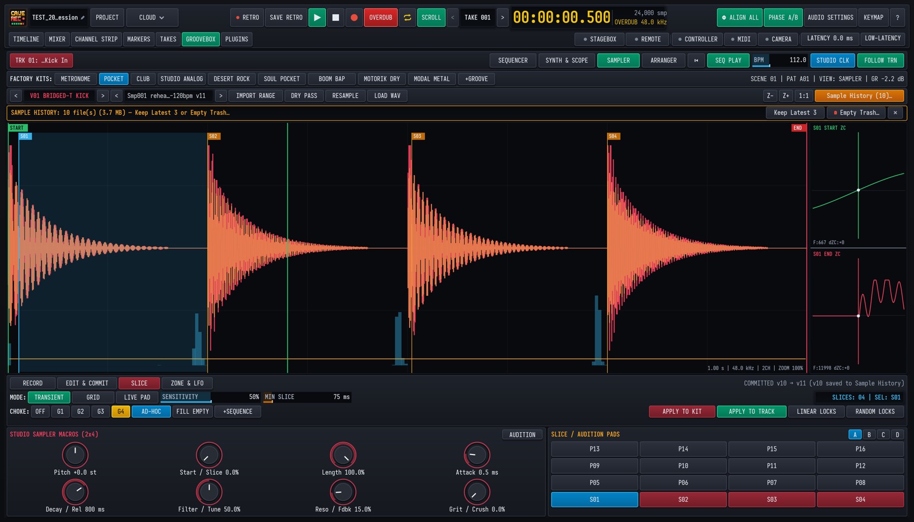
The desktop SAMPLER view is organized into four fixed-height zones with zero layout jitter:
- Top Source, Asset &
SAMPLE HISTORYBar (IMPORT RANGE,RESAMPLE,LOAD WAV,Sample History (N)…):- Step through Groovebox voices (
< V01..V16 >) and session sample assets (< Smp001 <label> v01 >), zoom the sample viewport (Z-,Z+,1:1, or scroll wheel around the cursor), or bring audio into the focused slot via three sources: IMPORT RANGE(DRY PASS|POST-FX): Imports the active TimelineRange(K..LorR001..R016) directly into<SessionFolder>/samples/.DRY PASSextracts the selected track's active Pass Lane in under20 ms(honoring overdub record offsets and range comp crossfades), whilePOST-FXruns an offline faster-than-real-time bounce of the selected Track (1..32), Subgroup (1..16), Aux Return (1..8), or Master Bus with pre-roll warmup.RESAMPLE: Jumps straight to live direct-from-mixer recording in theRECORDdeck below.LOAD WAV: Imports any external.wavfile from disk asynchronously off the60 Hzinterface thread, replicating it into<SessionFolder>/samples/(with Broadcast Wave provenance metadata) so the session folder remains completely self-contained for archiving or Google Drive sync. Sample bank loading enforces active session-switch safety guards and retires replaced sample voice memory off the real-time audio path so live Groovebox playback stays glitch-free.- Versioned
SAMPLE HISTORYDrawer & Alert Banner (Sample History (N)…): Every destructive bounce creates a newv<VV+1>file in<SessionFolder>/samples/and archivesv<VV>into<SessionFolder>/samples/_history/soUNDO(CMD/CTRL + Z) andREDOrestore prior versions and pre-bounce macro settings losslessly. Prior generations are never silently auto-deleted. ClickSample History (N)…(or use the fixed-height alert strip that appears automatically whenever archived history reaches10files or256 MB) to accessKeep Latest 3(keeps the latest3prior versions per active sample and purges older generations),Empty Trash…(purges all archived sample files), andHIDE.
- Step through Groovebox voices (
- Center Waveform &
180 pxSplit Zero-Crossing Zoom Lens:- Displays the sample waveform with live playhead hairline, Start/End markers,
S01..S64slice flags, and the live transient novelty/threshold trace whenSLICEis inTRANSIENTmode. Drag markers horizontally (hold SHIFT for0.20xfine precision), click to audition slices, or click directly on the waveform inLIVE PADmode to drop zero-crossed slice markers. - The right-hand
180 pxSplit Zero-Crossing Zoom Lens magnifies±96sample frames around the active Start/End boundary or focused slice (S01..S64) so you can verify exact zero-crossings visually before committing a crop or loop.
- Displays the sample waveform with live playhead hairline, Start/End markers,
- 4-Mode Sampler Deck (
RECORD|EDIT & COMMIT|SLICE|ZONE & LFO):RECORD(Direct-to-Sampler Live Resampling, ZeroTakeClutter): SelectSRC:(TRACKTRK 01..32,SUBGROUPSUB 01..16,AUX BUSAUX 01..08,MASTERMST PREunaffected by Control RoomDIM/MONO, orADC ININ 01-02..17-18),TAP:(PRE-FX,POST-FXdefault pre-fader so fader rides do not disturb sample gain, orPOST-FDR), andTRIG::THRESHOLD(-60.0to0.0 dB, default-36.0 dB): Maintains a continuous10 mspre-roll capture so the moment input crosses threshold, recording captures10 msprior to the transient with zero clipped attacks.BAR SYNC(1B,2B,4B,8B,16B, default4B): Arms for the next downbeat of the Studio Tempo clock and captures an exact bar-quantized loop automatically.MANUAL: Captures immediately fromARM / RECuntilSTOP(up to a5:00safety ceiling) with zero extraTakeentries in the Session Reel.EDIT & COMMIT(Offline Processing with Reversible Versioned Undo):CROP(FADE IN0..2000 ms,FADE OUT0..2000 ms,DC OFFDC-offset removal,ZC SNAPzero-crossing snap),NORM(PEAK-12.0to-0.1 dB, default-0.3 dB),REVERSE(reversing audio and rebasing slice markers cleanly), andCOMMIT FX BOUNCE(renders activePitch,Filter / Comb,Reso / Fdbk,Grit / Crush, and envelope shaping intov<VV+1>and resets the live macros back to neutral unity in a single undoable step).BPM FIT(1B,2B,4B,8B,TGT BPM30.0..300.0,PITCH-24.0..+24.0 st,TRANSIENTS,COMMIT STRETCH): Fits a live band snippet (SRC <est> BPMauto-estimated from bar count) to your target Sequencer BPM (0.50x..2.00x) and/or pitch shift independently using a transient-preserving hybrid stretcher that splices~12 msattack windows cleanly while phase-locking harmonic sustain.SLICE(Noise-Robust Transient Auto-Slicer, Grid & Live Pad Chop):TRANSIENT: Tuned specifically for unisolated rehearsal rooms, bleeding drum mics, and humming guitar amps. Uses adaptive spectral whitening and moving-median noise floor tracking with liveSENSITIVITY(0..100%, default50%) andMIN SLICE(30..500 ms, default80 ms) plus onset-foot backtracking and zero-crossing snap (1..64slices).GRID: Divides the sample into2,4,8,12,16,24,32, or64equal slices.LIVE PAD: Tap unlit pads (or clickSLICE HERE/DEL SLICE) while auditioning to drop manual zero-crossed chops on the fly.- Dual Apply Targets (Single Undoable Action): Choose
CHOKE(OFF,G1..G4),AD-HOC(replaces kit slots0..Kwith slicedSTUDIO SAMPLERvoices) vs.FILL EMPTY(fills only inactive slots), and opt-in+SEQUENCE(defaultOFFunless the active pattern is empty, laying down micro-nudged linear slice steps in the active pattern only without touching the other 63 patterns). ClickAPPLY TO KITto spread up to 16 slices across pads, orAPPLY TO TRACKto bind all1..64slices to the focused slot inSLICE-LOCKmode (with 1-clickLINEAR LOCKSandRANDOM LOCKSpattern P-lock generators). ZONE & LFO(Playback Machines, Bipolar DJ / Comb Filter & Assignable LFO):PLAY:ONE-SHOT(default, obeying percussion gate choke< 100%),GATE HOLD(sustains while held, releasing viaDecay / Rel),LOOP FWD(equal-power loop crossfadeXFADE0..50 ms, shrinkingLengthdown to0.5%turns any transient into a pitched micro-grain oscillator),PING-PONG(alternating forward/reverse loop with turnaround crossfade), andSLICE-LOCK(Start / SliceselectsS01..S64per step).FLT:DJ FILTER(0..48%2-pole LP,48..52%flat bypass,52..100%2-pole HP) orCOMB RES(tuned feedback delay resonator30 Hz..4,000 Hzwith bipolar negative hollow-pipe to positive metallic-string feedback onReso / Fdbk). ToggleREVfor slot-level reverse (overridable per step via step reverse lock),CHRMfor chromatic MIDI keyboard playback (ROOTC0..C8defaultC4,FINE-50..+50 ct), and configure the per-voiceLFO(SINE,TRI,EXP,SAW,S&H,SYNC4 BAR..1/64orFREE0.05..30.0 Hz,RETRIGphase reset,TGT:OFF,PIT,STR,LEN,FLT,RES,GRT,PAN, and bipolarDEPTH-100..+100%).
- Bottom
2 x 4Rotary Macro Deck &4 x 4Audition / Chop Pad Bank:- All 8 standardized macros (
Pitch,Start / Slice,Length,Attack,Decay / Rel,Filter / Tune,Reso / Fdbk,Grit / Crush, whereGrit / Crushsweeps warm analog preamp drive across0..45%and progressive16 -> 5-bit/ sample-rate crush across45..100%) supportCTRL ALL,M1..M4MORPH, P-locks,Double-Click/OPT/ALT + Clickreset, and right-click numeric entry, alongsideAUDITIONand the bottom-up4 x 4SLICE / AUDITION PADS(LIVE CHOP PADSinLIVE PADmode) banked acrossA,B,C,D(S01..S64).
- All 8 standardized macros (
5.10 Controlling Built-In Processors, Hosted Plugins & the Drum Machine from a Studio Pad Surface#
Your Dual-Screen Pad Controller gives direct tactile control over both the focused channel strip's processing chain (in [CONSOLE DAW REMOTE]) and all 16 Drum Machine / ANALOG BASS voices (in [DRUM STUDIO]).
5.10.1 Strip PROCESSORs & Hosted PLUGIN [CLAP] / PLUGIN [AU] (PLUG-IN View)#
In [CONSOLE DAW REMOTE], press PLUG-IN to open STRIP PROCESSORS & PLUGINS for the currently inspected Input Track, Subgroup Bus, Aux Return, or Master Bus. Soft keys F1..F8 (or Page < / >) select across the strip's built-in Processors and third-party Plugins (strictly labeled PROCESSOR for built-in studio DSP and PLUGIN [CLAP] or PLUGIN [AU] for external hosted plugins):
12-Band Dynamic EQ(PROCESSOR):- Left Screen plots the live analytical EQ magnitude curve across
20 Hz..20 kHzwith highlighted active band marker (E1..E4dock below Left Screen,E5..E8dock below Right Screen). Page 1 mapsFreq Hz,Gain dB,Q,Filter Shape,Dyn Range,Dyn Thresh,Enable, andDyn EnableacrossE1..E8(pressF6: DYN ENVfor Page 2 dynamic envelope controls). Soft keysF1..F4select the 4 bands in the active bank andF5cycles band banks (1..4,5..8,9..12).
- Left Screen plots the live analytical EQ magnitude curve across
VCA / FET / Opto Compressor&Noise Gate(PROCESSOR):- Left Screen renders the live 2D input-to-output transfer curve alongside an animated Gain Reduction bar. Encoders
E1..E8span both screens to controlThreshold,Ratio,Attack,Release,Knee,Sidechain HPF,Makeup, andMix.
- Left Screen renders the live 2D input-to-output transfer curve alongside an animated Gain Reduction bar. Encoders
- Rack Slot
PROCESSORs (Tape Saturation,Vocal De-Esser,Guitar/Bass Amp Rig,Cab IR,4-Mode Modulation,3-Mode Delay,Plate Reverb,Ladder Filter,Transient Shaper,Vocal Rider,Micro-Pitch Doubler,Gain Utility):- Left Screen displays real-time slot context and calibrated telemetry (including saturation transfer curves and wet/dry readouts), while
E1..E8map clean 8-encoder parameter pages with physical units (dB,Hz,ms,%). HoldingCLEARand touching any encoder resets that parameter immediately to its unity default.
- Left Screen displays real-time slot context and calibrated telemetry (including saturation transfer curves and wet/dry readouts), while
- Hosted External
PLUGIN [CLAP]&PLUGIN [AU]:- Reads live parameter names and formatted values directly from the hosted plugin across paginated 8-encoder banks (
< / >switches parameter pages, with Mix on the final bank slot). Capacitive touch onE1..E8brackets every tweak into a single coalesced Undo gesture. PressF8: OPEN GUI(orCLOSE GUI) to toggle the desktop floating plugin window. Missing plugins render a clear crimsonMISSING GHOST(GHOST) slot state without altering saved preset data.
- Reads live parameter names and formatted values directly from the hosted plugin across paginated 8-encoder banks (
5.10.2 Tactile [DRUM STUDIO] Synthesis, SAMPLING Workspace, Step Sequencing & Live Performance#
In [DRUM STUDIO], the dual displays and 16 pads act as a dedicated physical drum, bass, and sampling instrument:
PLUG-IN(VOICE SYNTH & SCOPE): Left Screen draws the live triggered Storage-CRT oscilloscope trace for the focused voice alongside its archetype badge (MEMBRANE,SNARE,METALLIC,MODAL,ANALOG BASS, orSTUDIO SAMPLER). EncodersE1..E4(Left Screen) andE5..E8(Right Screen) map all 8 voice synthesis or sampler macros (SHIFT + Turnfor10xfine resolution,CLEAR + Touchto reset to archetype default). Top soft keys mapF1..F4toARCHETYPE,PHASE MOD,VOICE/BASS, andGLUE BUS, andF5..F8toSTASH KIT,RELOAD KT(SHIFT + F6quantized to next bar),MORPH PAD, andFILL.SAMPLING(STUDIO SAMPLERWorkspace) vs.SHIFT + SAMPLING(STEM & SYNC):- Pressing bare
SAMPLINGopens the dual-screenSTUDIO SAMPLERwith four top tabs (F1: RECORD,F2: EDIT,F3: SLICE,F4: ZONE), context actions onF5/F6(TRIM HIST/COMMIT),F7: +SEQ, andF8: APPLY(Kitvs.Trackchosen onE8). Left Screen plots the full-sample waveform overview, amber slice flags, cyan active slice, emerald playhead, andE1..E4(Mode/Source,Sensitivity/Thresh,Choke/Tap,Slices/Bars). Right Screen displays the Split Zero-Crossing Zoom lens around active slice/regionStart(E5) andEnd(E6) plusE7(PlayMode/BPM Stretch) andE8(Apply Target/Commit). InSLICEmode, tapping unlit pads drops live zero-crossed chop markers on the fly while lit pads audition slices1..16(bankedA..DviaGROUPSwhen> 16slices exist inSLICE-LOCKmode). - Pressing
SHIFT + SAMPLING(or openingCHANNEL->F3: STEM PATCH) opensSTEM & SYNC(16-voice Pre-Tape Stem Breakout patchbay and Looper Sync controls).
- Pressing bare
STEP MODE(64-Step Polymetric Sequencer): Pads1..16follow bottom-to-top hardware row order (1..4bottom row to13..16top row). Left Screen shows a paginated 8-voice labeled matrix (toggleable viaF3to a 16-voice Full-Kit Radar), while Right Screen exposes focused voice step parameters. Turn bareE1..E8to edit Velocity, Gate%, Micro-Nudge%, Note, Tie/Slide, Flam/Ratchet, Step Condition, and Subdivision, or hold any Step Pad and turnE1..E8to write per-step macro Parameter Locks (ERASE + Touchclears individual locks). Manual< / >page navigation automatically suspendsF8: FOLLOW.KEYBOARD(SHIFT + PAD MODE),NOTE REPEAT,ARP&ALL + NOTE REPEAT: PlayANALOG BASS, chromaticSTUDIO SAMPLERvoices, or pitchedModal Impactacross 16 contiguous semitones or folded musical scales (E1: SCALE,E2/F5layout mode,E3: OCTAVE), ride aftertouch-sensitiveNOTE REPEAT(> 85%pressure = Accent) or melodicARP, holdALL([CTRL ALL], orALL + F1to pin) to fan relative macro sweeps across all unmuted voices, or holdALL + NOTE REPEATto play phase-locked Slip Beat-Repeat performance pads (1/4..1/32,REV GRAIN,TAPE STOP).GROUPS A..H& Edit Cluster:PATTERN + A..Dselects Pattern BanksA..D(64patterns, whilePATTERN + F4doubles pattern length16 -> 32 -> 64), andE..Hrecall Live Morph SlotsM1..M4(SHIFT + E..Hcaptures).UNDO/REDO,COPY/PASTE,QUANTIZE(SHIFT=50%),NOTE + Jog(transpose),NUDGE + Jog,CLEAR,ERASE + Hold Pad(real-time step wipe), andSHIFT + MUTE(Choke All Voices) all operate directly on the focused Pattern and Kit.
Waveform Timeline, Pass Lanes, Markers & Ranges
2D waveform scrub-zooming, AUTO ZOOM stepwise recording expansion and Full-Take auto-fit, active-surface 1:1 ZOOM (256.0 smp/px), LOCK PLAYHEAD, expandable Pass Lanes, non-destructive live-take mistake surgery, ADC clip repair, 50/60 Hz hum cancellation, range-bounded pass comping, clip gain, spectral spot-heal, markers, Ranges, direct Range-to-Sampler import (-> SAMPLER), Take splitting, and the Multi-Camera Video Monitor with multi-lane time-anchored frame-accurate Camera Filmstrips, 35 mm sprocket tick rails, and 16:9 Frame Loupe skimming.
Every multitrack recording in Cave Recorder is a self-contained Take with its own timeline starting at 00:00:00.000 (t = 0). Rather than stringing an entire evening of rehearsals along a multi-hour horizontal scroll bar or stacking separate songs on top of one another, the timeline always focuses on one active Take at a time. Within that active Take, you can scrub and zoom sample-accurate waveforms, expand Pass Lanes to comp track-level overdubs, drop timestamped cue markers on the fly, loop rehearsal sections, and split long jams into individual song Takes.
6.1 Navigating the TIMELINE View & Upper Mini-Timeline Well#
Cave Recorder provides two synchronized timeline viewports for the currently active Take:
- Upper Mini-Timeline Well (
TIMELINE & WAVEFORMonMIXER): Located in the right-hand well of the Upper Inspector Row on theMIXERview (CMD/CTRL + 2). It displays the waveform of the currently inspected track alongside quick-access transport and zoom keys so you can scrub, zoom, and switch Passes without leaving the faders. - Full-Screen
TIMELINEWorkspace (CMD/CTRL + 1): Displays all active tracks simultaneously with dedicated Marker ([MARKERS]) and Range ([RANGES]) lanes, per-track headers, expandable Pass Lanes, and a two-row editing toolbar.
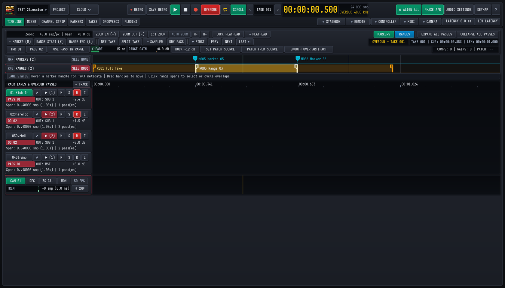
6.1.1 Multi-Resolution Waveform Detail & Viewport Readouts#
Both the Upper Mini-Timeline Well and the full-screen TIMELINE view render audio using multi-resolution waveform detail, covering full-song overview envelopes, medium phrase zoom, and individual sample-level waveform display. As you zoom from a 30-minute rehearsal jam down to a single snare transient, the display transitions across pre-computed resolution tiers so transient peaks remain sharp at every scale without frame drops.
The upper-left readout of the TIMELINE toolbar displays the current horizontal resolution in samples per pixel (Zoom: 48.0 smp/px, with 1:1 anchored to 256.0 smp/px) and the visual waveform gain offset (Gain: +0.0 dB), while the right-hand status readout confirms the active Take number, cursor timestamp, and total Take duration (TAKE 001 | CUR: 00:00:00.853 | LEN: 00:00:01.000). Resizing the desktop window dynamically preserves your visible sample span across lane geometry updates so your framing never jumps unexpectedly.
6.1.2 Upper Mini-Timeline Well Controls#
At the bottom of the Upper Mini-Timeline well on MIXER (Chapter 4: Mix Console, Stagebox Mixer, Signal Flow & Channel Strips), six dedicated hardware buttons control the inspected track's timeline:
| Control | Keyboard Shortcut | Function |
|---|---|---|
PASSES |
E | Expands or collapses the Pass Lanes for the currently inspected channel so you can switch or mute individual overdub passes directly from the console. |
LOCK PLAYHEAD |
Configurable in KEYMAP |
Toggles locking the Playhead (PH, green triangle) and the Position Cursor (CUR, amber diamond) together. When locked, clicking to place the cursor moves the playback start position simultaneously. When unlocked, the Position Cursor can be placed independently as an edit or zoom anchor while playback continues. |
→ PLAYHEAD |
. | Snaps the transport Playhead immediately to the current Position Cursor location. |
ZOOM + |
= | Zooms horizontally into the waveform by one octave (halving the smp/px span). |
ZOOM - |
- | Zooms horizontally out of the waveform by one octave (doubling the smp/px span). |
1:1 |
0 | Sets the active timeline surface (MIXER mini-timeline, CHANNEL STRIP mini-timeline, or full-screen TIMELINE) to the exact 256.0 smp/px reference zoom scale. |
6.1.3 Full-Screen TIMELINE Toolbar & Track Headers#
Pressing CMD/CTRL + 1 (or clicking TIMELINE in the navigation bar) opens the multi-track timeline workspace. Above the waveform canvas, two toolbar rows provide direct access to zoom, lane visibility, marker placement, and Take splitting:
- Row 1 (Viewport & Lane Controls):
ZOOM +/ZOOM -/1:1: Step horizontal zoom in (=), step out (-), or set the active timeline surface (TIMELINE,CHANNEL STRIPmini-timeline, orMIXERmini-timeline) to the exact256.0 smp/pxreference scale (0).AUTO ZOOM(Stepwise Recording Zoom & Full-Take Auto-Fit): New-Take recordings open on a crisp10.0 swindow withAUTO ZOOMlatched. Whenever the advancing recording playhead reaches80%of the visible span, Cave Recorder automatically steps the viewport out by one octave so the playhead sits comfortably at40%and the entire Take stays in view from00:00:00.000. Manual zooming or panning unlatchesAUTO ZOOM, and clickingAUTO ZOOMre-latches it at any time. Stopping and committing a recording, rescuing aSAVE RETROTake, switching Takes, or opening a Session automatically performs Full-Take Auto Zoom-to-Fit, framing the complete Take edge-to-edge and selecting theR001 Full Takerange.H-/H+(Track Lane Height): Steps the vertical height of all track waveform lanes between56 px(compact 18-channel overview) and220 px(tall surgical transient inspection). Track header heights on the left stay locked 1:1 with their waveform lanes.LOCK PLAYHEAD&→ PLAYHEAD: Identical to the Mini-Timeline well controls, allowing coupled or decoupled Playhead and Position Cursor operation.MARKERS&RANGES: Toggle visibility of the dedicatedMARKERSandRANGESruler lanes above the audio tracks.EXPAND ALL PASSES&COLLAPSE ALL PASSES: Unrolls (E) or collapses (SHIFT + E) the overdub Pass Lanes across every track in the active Take simultaneously.
- Row 2 (Markers, Ranges, Sampler Import & Take Split Bar):
+ MARKER (M)/RANGE START (K)/RANGE END (L): Drops a cue marker at the Playhead (M) or defines the start (K) and end (L) boundaries of a loop or song range.NEW TAKE,SPLIT TAKE&-> SAMPLER: Extracts the active range as a new self-contained Take (NEW TAKE), divides the active Take into two consecutive Takes at the current Playhead/Cursor position (SPLIT TAKE), or sends the active Range directly into the Studio Sampler (-> SAMPLER, paired withDRY PASSorPOST-FXmode insideGROOVEBOX -> SAMPLER, see Section 5.9.5 in Chapter 5).|< FIRST/< PREV/NEXT >/LAST >|: Jumps the Playhead to the first marker (SHIFT + [ or HOME), previous marker ([), next marker (]), or final marker (SHIFT + ] or END) in the active Take.
Each row in the left-hand TRACK LANES & OVERDUB PASSES column displays the track number and scribble-strip name (01 Kick In), the Pass Lane disclosure button (▶ (1) or ▶ (2) showing the number of recorded Passes on that track in the current Take), Mute (M), Solo (S), Record Arm (R), and Input Monitor (I) switches (in universal [M][S][R] Solo Gold order), the active Pass badge (PASS 01 or OD 02), the output bus assignment (OUT: SUB 1 or OUT: MST), the channel fader readout (-2.4 dB), and the sample span summary (Span: 0..48000 smp (1.00s) | 2 pass(es)).
6.1.4 Complete Reference of Timeline Navigation & Zoom Gestures#
Cave Recorder supports fast one-handed 2D Scrub-Zooming directly on the timeline ruler and waveform canvas, alongside standard mouse wheel, trackpad, and keyboard navigation:
| Gesture / Action | Input / Shortcut | Behavior |
|---|---|---|
| Reposition Playhead / Cursor | Single-Click (< 4 px travel) on ruler or waveform canvas |
Places the crisp 1 px Playhead or Position Cursor at the clicked timestamp. Automatically snaps to Take start (00:00:00.000) and Take end boundaries within 8 px. |
| Bypass Boundary Snapping | Hold SHIFT or CMD/CTRL + Click | Places the Playhead or Position Cursor at the exact sub-sample mouse coordinate without snapping to Take boundaries. |
| 2D Ruler / Canvas Scrub-Zoom | Click + Drag Vertically (up/down) on ruler or canvas | Continuously zooms the timeline exponentially in or out anchored directly to the sample beneath the cursor (or around the Playhead when LOCK PLAYHEAD is active). |
| 2D Ruler Scrub / Canvas Pan | Click + Drag Horizontally (left/right) on ruler or canvas | Dragging horizontally on the ruler scrubs the Playhead across the Take. Dragging horizontally on the waveform canvas pans the visible time window left or right. |
| Nudge Timeline Cursor | LEFT / RIGHT (hold SHIFT for 10x step) |
Nudges the Position Cursor (and the Playhead when LOCK PLAYHEAD is active) backward or forward by a fine or coarse sample step. |
| Horizontal Scroll Pan | Two-Finger Horizontal Trackpad Scroll or SHIFT + Mouse Wheel | Smoothly pans the visible viewport backward or forward across the active Take. |
| Modifier Scroll Zoom | CMD/CTRL + Mouse Wheel | Zooms horizontally in or out anchored at the current mouse pointer position. |
| Step Zoom In / Out | ZOOM + (=) / ZOOM - (-) |
Zooms horizontally in or out by one octave per press. |
Reset Zoom (1:1) |
1:1 (0) |
Sets the active timeline surface (TIMELINE, CHANNEL STRIP mini-timeline, or MIXER mini-timeline) to exact 256.0 smp/px. |
| Toggle Timeline Auto-Scroll | SCROLL in Top Deck (configurable in KEYMAP) |
Follows the advancing Playhead automatically during playback and live recording, paging the viewport forward whenever the Playhead reaches the right edge. Manually panning during playback temporarily suspends following until re-engaged. |
| Snap Playhead to Cursor | → PLAYHEAD (.) |
Moves the green transport Playhead to the amber Position Cursor immediately. |
6.2 Recording Overdubs (OVERDUB) & Comping in Expandable Pass Lanes (PASSES)#
In Cave Recorder, session-level songs and track-level overdubs are strictly separated so your timeline never becomes cluttered:
- Base Pass (
Rec001, labeledPASS 01): WhenOVERDUBis off (the default), pressing Record (R) creates a brand-new session Take starting at00:00:00.000. Every armed channel strip records its initial multitrack stem asRec001(PASS 01). - Overdub Pass (
Rec002-OD,Rec003-OD, ..., labeledOD 02,OD 03, ...): When you want to layer a second guitar solo, punch in a vocal fix, or try three alternate bass lines inside the currently active Take, latch the crimsonOVERDUBbutton in the Top Deck transport bar (O) and arm only the target track(s). Pressing Record (R) plays back the existing tracks of the active Take from00:00:00.000while recording a new Overdub Pass (OD 02,OD 03, ...) into the active Take'srec/folder and appending a new Pass Lane under each armed track.
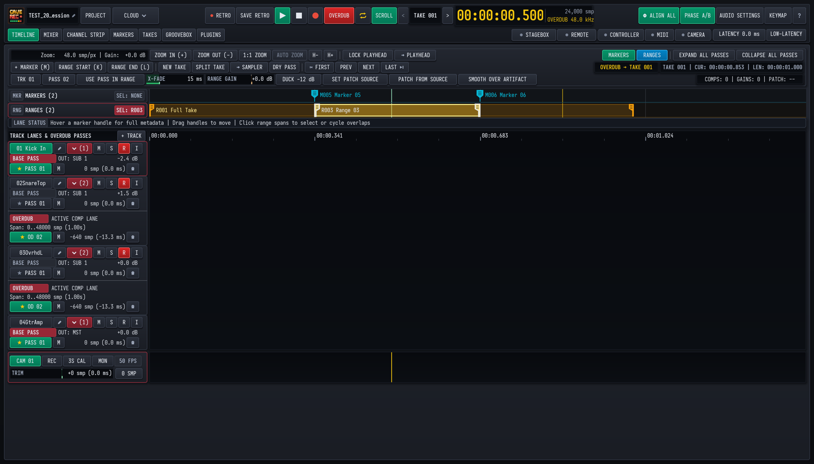
6.2.1 Step-by-Step: Recording Multi-Pass Overdubs on a Track#
- Load the Target Take: Use the
</>buttons besideTAKE 001in the Top Deck (ALT + [ / ALT + ]) or clickLoadinTAKES(CMD/CTRL + 5) to load the Take you want to overdub onto. - Disarm Backing Tracks & Arm the Overdub Track: On
MIXERor in the left track header column ofTIMELINE, disarm (Roff) the backing band tracks (drums, rhythm section) so they stream from disk, and arm (Rlit crimson) only the channel(s) you are overdubbing. Enable input monitoring (I/MON) if you are monitoring through Cave Recorder's console EQ and compression. - Latch Overdub Mode (
OVERDUB): ClickOVERDUBin the Top Deck transport bar (or press O) so the indicator illuminates crimson and the timecode badge confirmsOVERDUB. - Optional Pre-Roll or Cycle Range: Position the Playhead a few bars before the section you want to overdub, or enable Cycle Loop (
⇄, C) across a defined range (Section 6.3). - Record the Overdub Pass: Press Record (R) to begin playback and capture
OD 02. Press Stop (SPACE or SHIFT + SPACE) when finished. Cave Recorder automatically promotes the newly recorded Overdub Pass (★ OD 02) as the active playback Pass on that track and captures a post-recording Snapshot.
6.2.2 Expanding Pass Lanes, Auditioning Passes & Comping Phrases#
When a track within the active Take has more than one recorded Pass, the disclosure badge in the track header displays the total Pass count (for example, ▶ (2) on 02 Snare Top and 03 Overhead L).
- Expand or Collapse a Single Track's Pass Lanes:
- Click the
▶ (N)/▼ (N)badge in the track header on theWAVEFORM TIMELINEview. - Or select the track and click
PASSESin the Upper Mini-Timeline Well (or press E while in theCHANNEL INSPECTORview).
- Click the
- Expand or Collapse All Tracks' Pass Lanes:
- Click
EXPAND ALL PASSES(E) orCOLLAPSE ALL PASSES(SHIFT + E) in the upper-rightWAVEFORM TIMELINEtoolbar.
- Click
When expanded, each track unrolls its vertical stack of Pass Lanes in chronological order (BASE PASS PASS 01 at the top, followed by OVERDUB OD 02, OD 03, and so on):
- Visual Active vs. Standby Distinction: The currently active Pass Lane (labeled
ACTIVE COMP LANEwith a green★ PASS 01or★ OD 02badge) renders its waveform in bright amber-copper. Inactive Pass Lanes (labeledSTANDBY COMP LANEwith aUse PASS 01orUse OD 02button) render in muted slate-grey so you can immediately see which Pass is feeding the Mix Console channel strip. - Auditioning & Promoting Passes:
- Promoting a Pass on the
WAVEFORM TIMELINEView: ClickUse PASS 01(orUse OD 02,Use OD 03) in any standby Pass Lane header to promote that Pass as the active playback lane (ACTIVE COMP LANE) immediately. Because playback readers pre-buffer ahead of the Playhead, switching Passes during playback crossfades cleanly without clicks. - Promoting a Pass from the
MIX CONSOLEorCHANNEL INSPECTORView: ClickPASSESin the Upper Mini-Timeline Well (or press E in theCHANNEL INSPECTORview) to expand the inspected channel's Pass Lanes, and clickUse PASS <NN>orUse OD <NN>on the Pass you want to hear.
- Promoting a Pass on the
- Per-Pass Mute (
M) & Soft Delete (Del):- Click
Mon a Pass Lane to silence that Pass without changing your channel strip Mute state. - Click
Delon a flawed Pass Lane to mark that Pass as deleted in the session history. Because deletion is non-destructive, pressing CMD/CTRL + Z restores the Pass immediately.
- Click
- Comping Phrases Across Multiple Passes:
- When an overdub was punched in over a specific chorus or solo section (for example,
Span: 240000..480000 smp), promoting that Overdub Pass plays your new performance across its recorded span while allowing you to compare it directly against the underlyingPASS 01Base Pass or alternateOD 03passes. Every Pass promotion is recorded in the Undo history and stored in Console Snapshots (Chapter 7: Session Reel, Mixdowns, Snapshots, Disk Layout & Cloud Sync) so you can save and compare multiple comp combinations across the session.
- When an overdub was punched in over a specific chorus or solo section (for example,
6.3 Dropping Cue Markers & Defining Cycle Loop Ranges (MARKERS)#
During a live rehearsal jam or playback review, you can drop timestamped Markers and define bounded Ranges without stopping the transport. Markers and Ranges appear both as interactive flags in the MARKERS and RANGES lanes of TIMELINE and as sortable, searchable rows in the dedicated MARKERS workspace (CMD/CTRL + 4).
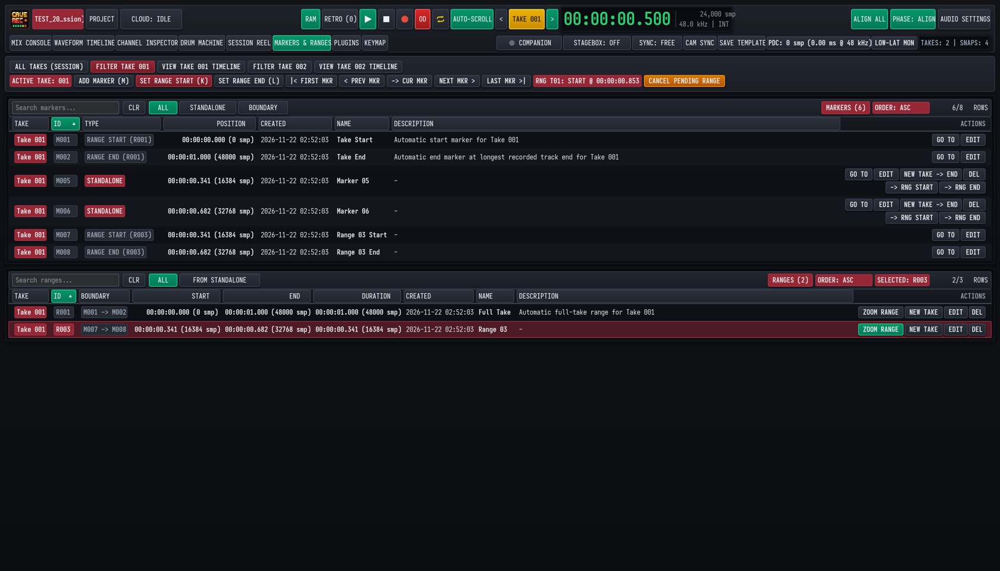
6.3.1 Dropping & Navigating Cue Markers on the Fly (M)#
Every Take automatically initializes with two boundary markers (M001 Take Start at 00:00:00.000 and M002 Take End at the end of the longest recorded stem, forming the default R001 Full Take range). To mark song transitions, solo entrances, or mix notes:
- Drop a Marker (M): Press M at any time during live recording or playback (or click
+ MARKER (M)in theTIMELINEtoolbar orADD MARKER (M)in theMARKERStoolbar). Cave Recorder places a cyan standalone marker flag (M005 Marker 05,M006 Marker 06) at the exact sample position of the rolling Playhead (or at the Position Cursor when transport is stopped). - Reposition a Marker by Dragging: In the
MARKERSlane ofTIMELINE, hover over any cyan marker flag to inspect its metadata, or click and drag the marker handle left or right to fine-tune its sample timestamp. - Jump Between Markers: Use the toolbar buttons or keyboard shortcuts to navigate between cue points instantly:
- Previous Marker (
< PREV/< PREV MKR): Press [. - Next Marker (
NEXT >/NEXT MKR >): Press ]. - First Marker in Take (
|< FIRST/|< FIRST MKR): Press SHIFT + [ or HOME. - Last Marker in Take (
LAST >|/LAST MKR >|): Press SHIFT + ] or END.
- Previous Marker (
6.3.2 Defining Ranges (K / L) & Cycle Loop Playback (⇄)#
A Range (R001, R003, ...) is a named time span bounded by a RANGE START marker and a RANGE END marker. Ranges are used for Cycle Loop playback, overdub punch/loop rehearsal, zooming to a song section, and extracting a song section as a new Take.
- Mark Range Start (
RANGE START (K)): Move the Playhead or Position Cursor to the beginning of the phrase (or press it live as the band hits the downbeat) and press K (or clickRANGE START (K)/SET RANGE START (K)). An amber status pill (RNG T01: START @ 00:00:00.853) appears in the toolbar indicating that a range start boundary is pending. - Mark Range End (
RANGE END (L)): When playback reaches the end of the section, press L (or clickRANGE END (L)/SET RANGE END (L)). Cave Recorder pairs the start and end boundaries, creates a new numbered Range span (such asR003 Range 03) in the amberRANGESlane, and selects it as the active loop range. - Cancel a Pending Boundary (ESC): If you pressed K by mistake, press ESC or click
CANCEL PENDING RANGEto discard the uncompleted boundary. - Select, Drag, or Cycle Overlapping Ranges: In the
RANGESlane above the waveforms, click any amber range bar to make it the active range (clicking repeatedly on overlapping spans cycles through them). Drag the left[or right]handle of any range bar in theRANGESlane to adjust its start or end sample directly on the timeline. - Toggle Cycle Loop Playback (
⇄): Click the Cycle Loop button⇄in the Top Deck transport bar (or press C). When⇄is illuminated amber, playback loops continuously between the start and end boundaries of the active Range (or acrossR001 Full Takeif no sub-range is selected). - Send a Range Directly to the Studio Sampler (
-> SAMPLER): With any Range or loop region active, click-> SAMPLERin the timeline toolbar to load that exact[start, end)span into the focused Studio Sampler voice inGROOVEBOX -> SAMPLER(DRY PASSextracts the selected track's active Pass Lane in under20 ms, honoring overdub record offsets and range comp crossfades, whilePOST-FXrenders a post-insert bounce of the selected Track, Subgroup, Aux Return, or Master Bus into<SessionFolder>/samples/). On a Studio Pad Surface in[CONSOLE DAW REMOTE], hold any lit Range pad inSCENEmode and pressF5: -> SAMPLERorF6: POST-FX -> SMP.
6.3.3 Managing, Renaming & Filtering in the MARKERS View#
Pressing CMD/CTRL + 4 (or clicking MARKERS in the workspace navigation bar) opens the MARKERS management workspace, divided into two synchronized tables: MARKERS (top) and RANGES (bottom).
- Session-Wide vs. Per-Take Filtering: Use the top filter bar (
ALL TAKES (SESSION),FILTER TAKE 001,FILTER TAKE 002) to view cue points across every Take in the evening's Session at once, or isolate markers belonging to a single Take. ClickingVIEW TAKE 001 TIMELINEjumps directly toTIMELINEwith that Take loaded. - Marker Type Filtering & Automatic Color Badges: Filter the upper table by
ALL,STANDALONE(crimsonSTANDALONEbadges, such asM005), orBOUNDARY(slateRANGE STARTandRANGE ENDbadges paired to a Range, such asRANGE START (R003)), or type intoSearch markers...to filter by marker name or description note. - Per-Marker Actions (
GO TO,Rename,-> RNG START,-> RNG END,DEL):GO TO: Loads the owning Take (if not already active) and snaps the transport Playhead directly to that marker's exact sample position.Rename(or inline click on Marker Name): Opens inline editing fields to update the marker'sName(for example,Verse 2 Harmonies) and free-formDescriptionnote (ENTERsaves,ESCcancels), or clickPRESET MARKER HIGHLIGHT M<NNN>to emphasize key cue points.-> RNG START/-> RNG END: Promotes an existing standalone cue marker into the start or end boundary of a Range so you can drop single-key M markers during a live jam and turn them into bounded song ranges afterward.DEL: Deletes the marker (reversible via Undo CMD/CTRL + Z).
- Range Filtering (
ALL/FROM STANDALONE) & Per-Range Actions (ZOOM RANGE,NEW TAKE,Rename,DEL):FROM STANDALONEFilter Pill: Filters theRANGEStable (alongsideALL) to show only Ranges whose start or end boundaries were promoted from standalone cue markers via-> RNG START/-> RNG END.ZOOM RANGE: Switches toTIMELINEand zooms the horizontal viewport to frame that exact Range from edge to edge.Rename(or inline click on Range Name): Opens inline fields to rename the Range (for example,R003 Chorus LooporSong 2 - Midnight Drive) and update its description.
6.4 Non-Destructive Take Splitting (Split Take at Playhead / Split by Markers)#
During a band rehearsal, musicians often hit Record once and play a continuous 25-minute block containing warm-up banter, three separate songs, and an improvised jam. Cave Recorder lets you carve that long continuous capture into independent, self-contained t = 0 Takes (Take 002, Take 003, Take 004) so each song gets its own 00:00:00.000 timeline, its own song tag, and its own stereo mixdown.
6.4.1 Three Ways to Split or Extract Independent Takes#
Cave Recorder provides three non-destructive workflows depending on whether you want to divide a Take in two or extract a specific marker/range span:
| Split / Extract Method | Where to Trigger | How It Works |
|---|---|---|
1. Split Take at Playhead / Cursor (SPLIT TAKE) |
Click SPLIT TAKE in the TIMELINE toolbar |
Divides the active Take at the current Playhead/Cursor timestamp into two consecutive segments: the first part (00:00:00.000 to the split point) remains in the current Take, and the second part (from the split point to the end) becomes a brand-new t = 0 Take (Take<NNN>). |
2. Extract from Marker to End (NEW TAKE -> END) |
Click NEW TAKE -> END on any standalone marker row in MARKERS (CMD/CTRL + 4) |
Extracts everything from that marker's sample timestamp through the end of the Take into a brand-new t = 0 Take (Take<NNN>), leaving the source Take's full duration untouched. |
3. Extract Bounded Range as New Take (NEW TAKE) |
Click NEW TAKE in the TIMELINE toolbar (with a Range selected) or click NEW TAKE on any row in the RANGES table (CMD/CTRL + 4) |
Copies the exact sample span between the Range's START and END boundaries (R003) into a brand-new t = 0 Take (Take<NNN>) whose 00:00:00.000 origin corresponds to the start of that Range, leaving the source Take's span untouched. |
6.4.2 How Non-Destructive Splitting Preserves Stems, Passes & Phase Offsets#
When you divide a Take with SPLIT TAKE or extract a span with NEW TAKE:
- Zero Destructive File Overwrites & Full Undo: None of your original
.wavfiles on disk are ever overwritten or deleted. BothSPLIT TAKEandNEW TAKEare tracked in the Session's Undo history, so pressing CMD/CTRL + Z reverses the split or extraction immediately. - Sample-Zero (
t = 0) Alignment: Every multitrack stem in the newly created Take (Take<NNN>) starts at its own00:00:00.000timeline zero aligned to the split or range start point, with Broadcast Wave (bext) timecode metadata preserved. - Pass Structure & Console Routing Preserved: All recorded Base Passes (
Rec001) and Overdub Passes (Rec002-OD) that overlap the extracted span are preserved in their respective Pass Lanes, along with per-track phase alignment offsets, latency compensation metadata, and internal markers shifted relative to the new00:00:00.000origin. - Immediate Session Reel Registration: The newly created Take appears immediately in the
SESSION REELcatalog (Chapter 7: Session Reel, Mixdowns, Snapshots, Disk Layout & Cloud Sync) ready for tagging, live Print conversion, or offline Mixdown rendering. - Non-Blocking Background Execution & Transactional Rollback: Both
SPLIT TAKEandNEW TAKErun asynchronously off the60 Hztimeline thread so waveform scrubbing and console metering stay responsive. If you switch Sessions while a split is running, Cave Recorder discards stale completion state automatically, and if disk space runs out before completion, staged files roll back cleanly so your source Take stays untouched.
6.5 Non-Destructive Live-Take Salvage & Timeline Mistake Surgery#
When a full band plays live in one room and captures a magic Take where the groove, tempo push, and collective energy are unrepeatable, you should never have to throw away that performance because of a minor technical or musical blemish: a snare rimshot that clipped the preamp converter for 14 samples, a vintage guitar combo that buzzed at 60 Hz, a lead vocal phrase that jumped out 6 dB too loud in the bridge, a flubbed chord in bar 38, or a vocalist bumping the microphone stand during an acoustic intro.
Cave Recorder provides six 100% non-destructive Live-Take Salvage and Mistake Surgery tools directly inside TIMELINE (CMD/CTRL + 1) and CHANNEL STRIP (CMD/CTRL + 3). Every operation preserves your original 32-bit floating-point .wav files untouched on disk and is tracked in the Session's Undo/Redo history (CMD/CTRL + Z):
+====================================================================+
| NON-DESTRUCTIVE LIVE-TAKE SALVAGE & MISTAKE SURGERY SUITE |
+====================================================================+
[1] [REPAIR CLIPPING] (Two-Tier Smooth Spline & Spectral De-Clipper)
* Reconstructs flat-topped ADC converter clips (1..256 samples)
--------------------------------------------------------------------
[2] 50/60 Hz 12-HARMONIC COMB HUM CANCELLER (Q = 20..100 Notch)
* Strips f_0 .. 12*f_0 mains & dimmer buzz without dulling tone
--------------------------------------------------------------------
[3] RANGE-BOUNDED PASS COMPING ([USE OD 02 IN RANGE])
* Punches an Overdub Pass into a selected Range with 5..50 ms
equal-power sin/cos crossfades (zero clicks, zero file edits)
--------------------------------------------------------------------
[4] PRE-INSERT CLIP GAIN ENVELOPE (-24.0 dB to +24.0 dB)
* Normalizes a single loud phrase or quiet intro BEFORE the
8-slot rack so compressors & tape saturators hit evenly
--------------------------------------------------------------------
[5] [PATCH FROM SOURCE...] (Same-Take or Cross-Take Bar Graft)
* Copies a clean chord or drum fill from another bar (or another
Take) into the selected Range with phase-locked crossfades
--------------------------------------------------------------------
[6] [SMOOTH OVER ARTIFACT] (5..150 ms Spectral Spot-Heal)
* Erases a mic stand bump, cable pop, lip smack, or stick click
using bidirectional waveform & spectral synthesis
+====================================================================+6.5.1 [REPAIR CLIPPING]: Reconstructing Clipped Preamp Transients#
If an enthusiastic snare hit or vocal shout overloaded the hardware audio interface's analog-to-digital converter (0.0 dBFS) during tracking, red clip markers appear along the top edge of the waveform in WAVEFORM TIMELINE:
- Select the Clipped Region (or Full Track): Frame the clipped transient using a Range (
KandL) or leave no sub-range selected to scan the entire active Pass on the selected track. - Click
[REPAIR CLIPPING]: Cave Recorder locates every contiguous flat-topped sample plateau where|x[n]| >= Clip Threshold(default-0.1 dBFS, adjustable from-12.0 dBFSto0.0 dBFSif an external analog preamp or pedal clipped below digital full scale). - Two-Tier Waveform Reconstruction:
- Short Clips (
1to8samples): Rebuilds the rounded peak using smooth spline interpolation matched to the entry and exit slopes of the waveform. - Medium & Long Clips (
9to256samples): Fits a forward/backward harmonic waveform prediction model to the512clean context samples before and after the clip, predicts the harmonic waveform forward and backward across the clipped gap with a raised-cosine blend, and writes the repaired region to a companion repair layer while keeping the originalRec001.wavstem intact.
- Short Clips (
6.5.2 50 Hz / 60 Hz 12-Harmonic Comb Hum Canceller#
When a single-coil guitar pickup, vintage bass amplifier, or unshielded stage cable injects 50 Hz or 60 Hz power-line buzz into a great live Take, enable the Hum Canceller on that track (50 Hz or 60 Hz fundamental selector, 45.0..65.0 Hz fine tune, 12 Harmonics, Q = 20.0..100.0, default Q = 60.0). Twelve ultra-narrow constant-Q notch filters remove the fundamental and its first 11 overtones (60 Hz through 720 Hz) without carving a wide hole out of your bass or guitar low-mids.
6.5.3 Range-Bounded Pass Comping ([USE OD 02 IN RANGE])#
In Section 6.2, clicking Use OD 02 switches the entire track from start to finish to Overdub Pass OD 02. Frequently, however, the original live PASS 01 (Rec001) is magical for 95% of the song and you only recorded a quick Overdub Pass (OD 02) to fix a single missed lyric or guitar clam in Verse 2:
- Expand the track's Pass Lanes with E in
WAVEFORM TIMELINE(CMD/CTRL + 2). - Mark the start and end of the phrase to replace using K (
RANGE START) and L (RANGE END). - Click
[USE OD 02 IN RANGE](or the desired standby Pass row inside the bounded Range). - Cave Recorder keeps
PASS 01active across the rest of the song and cleanly splicesOD 02into that exact Range using a phase-accurate5 msto50 msequal-power (sin/cos) crossfade at both boundaries.
6.5.4 Pre-Insert Clip Gain Envelope (-24.0 dB to +24.0 dB)#
If a guitarist kicked on a solo boost pedal that jumped out +7 dB too loud in the bridge, lowering the channel fader after the 8-slot rack will not stop the channel's TAPE saturator and VCA CMP compressor from being slammed into heavy distortion during that bridge.
Instead, select the Range (K .. L) on the waveform and drag the Pre-Insert Clip Gain Handle (-24.0 dB to +24.0 dB, with smooth 5 ms entry/exit ramps). Because Clip Gain is applied directly to the disk playback reader before the 8-slot processor rack, pulling the loud bridge down by -6.0 dB on the waveform ensures the track hits your channel EQ, tape drive, and compressor at the exact same sweet-spot level as the rest of the song.
6.5.5 [PATCH FROM SOURCE...]: Grafting a Clean Bar or Chord Across Bars or Takes#
What if the bass player or rhythm guitarist hit one wrong chord in the second chorus of a live Take, and nobody noticed until mixing day when the band has already packed up their gear?
Because the band played the exact same chord progression cleanly in Chorus 1 (or in another Take from the same rehearsal session), you can repair the mistake using [PATCH FROM SOURCE...]:
- Select the Flawed Target Range: In
WAVEFORM TIMELINE, mark the1-bar or1-chord mistake span using K and L on the target track. - Click
[PATCH FROM SOURCE...]and Choose the Clean Source Bar: Select an earlier or later timestamp from the sameTake(for example, Chorus 1) or from anotherTakein the Session. - Automatic Transient & Phase-Correlation Micro-Alignment (
±50 ms): Even when a band plays without a click track, Cave Recorder automatically slides the source audio snippet within a±50 mswindow to maximize waveform cross-correlation and zero-crossing phase alignment at both the entry and exit boundaries, welding the clean chord into place with adjustable10 msto100 msequal-power crossfades.
6.5.6 [SMOOTH OVER ARTIFACT]: Spectral & Waveform Spot-Heal (5 ms to 150 ms)#
During an intimate acoustic intro or quiet vocal breakdown, a stray mechanical noise (a vocalist bumping the mic stand, a guitar cable pop, a loud lip smack, or an accidental drumstick click on a rim) can momentarily distract from the performance. Simple muting leaves an unnatural hole in the room ambience.
To erase a short transient blemish (5 ms to 150 ms) without leaving a gap:
- Zoom in (
ZOOM +or vertical drag) and bracket the5 msto150 msartifact withRANGE START (K)andRANGE END (L). - Click
[SMOOTH OVER ARTIFACT]in the timeline toolbar. - Cave Recorder analyzes the
250 msof clean room tone and sustained note harmonics immediately before and after the artifact:- For short clicks and pops (
5 msto25 ms), it performs bidirectional harmonic waveform interpolation across the gap. - For longer thumps or stand bumps (
25 msto150 ms), it performs Windowed Spectral Magnitude & Phase Coherence Interpolation, replacing only the transient anomaly with continuous harmonic sustain and natural room ambience while leaving the rest of the track untouched.
- For short clicks and pops (
6.6 Multi-Camera Video Monitor & Timeline Filmstrip (video/*.mp4 & .vididx)#
When one or more studio cameras or wireless Cave Companion mobile camera nodes are armed during a Take, Cave Recorder displays each camera angle as its own stacked Video Timeline Strip lane inside WAVEFORM TIMELINE (CMD/CTRL + 2) paired with a real-time Multi-Camera Video Monitor.
6.6.1 48.0 kHz Audio-Clock Synchronization & the .vididx Frame Index#
To prevent audio/video drift across 30-minute rehearsal jams and ensure instant frame-accurate scrubbing without scanning multi-gigabyte .mp4 container files, every recorded camera file (<TakeFolder>/video/<SessionID>_Take<NNN>_Cam<CC>-<Name>_<Stamp>.mp4) is accompanied by a deterministic frame index file (.vididx):
- Exact Integer
48.0 kHzAudio-Clock Timestamps: Rather than trusting the operating system wall clock or USB bus arrival jitter, Cave Recorder stamps every captured video frame against the hardware audio interface's monotonic sample counter (960samples per frame at50 FPS,1,920samples at25 FPS,1,600samples at30 FPS, or800samples at60 FPS). .vididxFrame Index Structure: Each.vididxfile stores the camera's nominal frame rate,48.0 kHzsample rate, calibrated optical latency offset, user camera trim offset, and a per-frame index oft = 0audio sample positions and keyframe offsets.- Instant Keyframe Lookup & Scrubbing: During timeline playback or rapid ruler scrubbing, Cave Recorder looks up the target video frame directly from the
.vididxindex, jumps to the nearest preceding0.5 s(25-frame) keyframe, and decodes only the minimal forward frames required to display the exact target image.
6.6.2 BT.709 Video Monitor & Sample-Locked Playback#
The Video Monitor renders camera frames in BT.709 studio color space. While transport playback is rolling, Cave Recorder continuously keeps all active camera angles locked to the 48.0 kHz audio playhead:
| Sync State | Audio-to-Video Offset (|Δt|) |
Playback Synchronizer Action |
|---|---|---|
| Locked Cadence | |Δt| <= 0.5 frame (<= 10.0 ms @ 50 FPS) |
Presents every decoded CFR frame in natural 1:1 cadence with zero frame drops or repeats. |
| Smooth Catch-Up | 0.5 frame < |Δt| <= 2.5 frames (10..50 ms) |
Advances or holds a single frame step within the current 0.5 s GOP so visual sync converges smoothly without decoder reset. |
| Keyframe Seek | |Δt| > 2.5 frames (> 50.0 ms, or after a timeline scrub jump) |
Dispatches an immediate .vididx keyframe seek to the target GOP and pre-rolls to the exact playhead sample. |
6.6.3 Operating the Video Timeline Filmstrip & Camera Trim Offset Slider#
Each simultaneous camera angle renders in its own stacked lane in WAVEFORM TIMELINE (CMD/CTRL + 2) as a time-anchored, frame-accurate thumbnail filmstrip aligned 1:1 with the horizontal audio sample ruler:
- Camera Angle Selection & Split-Screen Preview: Click any camera lane header (
Cam01-Drums,Cam02-GtrMobile,Cam03-RoomMobile) to focus that angle in the Video Monitor, or switch the monitor to Multi-Camera Split-Screen mode (Side-by-Side Crop,Side-by-Side 16:9,3-Cam Band, orQuad 2x2) to inspect all angles simultaneously. - Time-Anchored Filmstrip Span & 35 mm Sprocket Tick Rails: Every recorded video clip spans its exact start-to-end sample range on the timeline (incorporating its recorded start time and Camera Trim Offset) with frame-accurate thumbnail decoding and top/bottom 35 mm filmstrip sprocket tick rails marking exact frame boundaries when zoomed in.
- Interactive Pointer Skimming & Floating
16:9Frame Loupe Popover: Moving your pointer across any camera filmstrip lane reveals a cyan skimmer hairline, a floating high-resolution16:9BT.709Frame Loupe Popover displaying the exact frame number and timestamp (#F<frame> · <MM:SS.mmm>), and a vertical transient alignment guide extending down across the audio tracks so you can visually line up drumstick impact or pick attack against the audio waveform. - Per-Clip Fine Trim Nudge (
Camera Trim Offset): Although the 3-Second Camera Latency Calibration modal (Section 2.5.2) automatically compensates for hardware sensor and capture-card delay, you can fine-tune any individual video clip's alignment on the timeline using its Camera Trim Offset slider (adjustable in exact audio samples and milliseconds, withDouble-Click/Alt+Clickreset to0 smp). Adjusting the camera trim offset updates the.vididxandtake.jsonmetadata non-destructively and propagates automatically into offline split-screen.mp4mixdowns and.fcpxmlv1.9 multicam exports.
Takes Dashboard, Mixdowns, Snapshots, Companion Mobile & Cloud Sync
Managing Takes with streamlined 4-button rows ([Load], [Rename], [Export...], [...]) and ARCHIVE / Restore governance, converting live Prints to FLAC and MP3, rendering offline Mixdowns, Stem Bounces, and Multi-Camera Split-Screen .mp4 Video Mixdowns, exporting Takes to external workstation project formats (.rpp, .als, Session XML, .dawproject, .fcpxml multicam and stacked split-screen timelines, and BWF/iXML bundles), comparing Snapshots with persistent Live Mix A/B banners, disk naming rules including Studio Sampler samples/ and stagebox_scene.json storage, resumable Google Drive video and mix sync, and the Cave Companion Mobile ecosystem (Android API 36 / 16 KB .apk and iOS .ipa) featuring zero-configuration Bonjour Wi-Fi discovery, the bundled Sample Studio Session (UNPAIRED SAMPLE), responsive 6-tab Phone and 8-tab Tablet navigation, wireless MIXER, STAGEBOX (MY MONITOR and PIN-lockable FULL MIXER), and GROOVEBOX + SAMPLER remotes.
A typical three-hour band rehearsal or studio tracking night produces anywhere from five to twenty recorded Takes alongside evolving console mixes, overdub passes, and stereo mixes for the band group chat. Cave Recorder centralizes all session management inside the TAKES workspace (CMD/CTRL + 5), combining a searchable Takes Catalog with streamlined 4-button rows ([Load], [Rename], [Export…], [⋯]), one-click Print-to-FLAC and Print-to-MP3 conversion, offline Master Mixdowns, Stem Bounces, and External Workstation Project & Bundle Exports, non-destructive Console Snapshots with Live Mix protection, a self-documenting disk layout, built-in two-way Google Drive Cloud Sync, and the Cave Companion wireless mobile and tablet ecosystem.
7.1 Managing Takes in the TAKES View#
Pressing CMD/CTRL + 5 (or clicking TAKES in the workspace navigation bar) opens the Takes Dashboard ledger for the currently open Session.
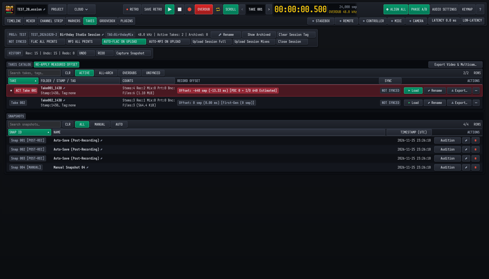
7.1.1 The Session Header & Undo/Redo History Bar#
At the top of the TAKES view, two horizontal control bars summarize the active Session and its edit history:
- Session Metadata & Global Actions Bar:
- Displays the parent Project badge (
PROJ: TEST), the permanent Session ID (TEST_20261020-2), the human-readable Session display title (Birthday Studio Session), the optional folder tag (TAG:BirthdayMix), the hardware sample rate (48000 Hz), and the count of active and archived Takes. Rename(Inline Session Title) &Clear Session Tag: Rename the Session's display title inline (or from the Top Deck Session pill) or edit/clear its<SessionTag>. Editing a Session tag cleanly renames the Session folder on disk and updates all relative links in<ProjectTag>/_Mixes/without renaming any audio files inside.ARCHIVEDFilter &Empty Trash…: Toggle visibility of archived Takes in the catalog (paired with theALL + ARCHIVEDfilter pill below) or click the crimsonEmpty Trash…button when archived Takes or archived Studio Sampler generations (samples/_history/) are present to inspect and permanently remove their audio files from disk.FLAC ALL PRINTS,MP3 ALL PRINTS,AUTO-FLAC ON UPLOAD&AUTO-MP3 ON UPLOAD: Batch-convert all uncompressed live stereo Prints across the Session to lossless 24-bit.flacor 320 kbps CBR.mp3files, or automatically convert Prints to.flacand/or.mp3whenever uploading to cloud storage.Upload Session Full/Upload Session Mixes/CLOSE SESSION: Trigger a full or mixes-only cloud sync for the entire Session, or close the Session and return to thePROJECTbrowser modal (CMD/CTRL + O).
- Displays the parent Project badge (
HISTORYBar (Reversible Undo/Redo & Manual Snapshot Capture):- Every fader drag, EQ node move, phase alignment, marker edit, Pass promotion, and Take archive action is tracked as a reversible step in the Session's command history (
Rev:13 | Undo:13 | Redo:0). Continuous knob or fader gestures automatically group into a single undo step when you release the mouse button. - Click
UNDO(CMD/CTRL + Z) orREDO(CMD/CTRL + SHIFT + Z) to step backward or forward through your session adjustments. - Click
SNAP MANUAL(CMD/CTRL + S) to capture an immediate point-in-time Console Snapshot (Section 7.3).
- Every fader drag, EQ node move, phase alignment, marker edit, Pass promotion, and Take archive action is tracked as a reversible step in the Session's command history (
7.1.2 Switching, Starring, Renaming & Archiving Takes in the TAKES CATALOG#
The TAKES CATALOG table lists every Take recorded or split during the Session. You can filter the catalog using the search box (Search takes, tags...) or the filter pills: ACTIVE (default, showing non-archived Takes), ALL + ARCHIVED (showing both active Takes and archived Takes), OVERDUBS (showing only Takes that contain Rec002-OD overdub passes), and UNSYNCED (showing Takes with local changes not yet uploaded to Google Drive).
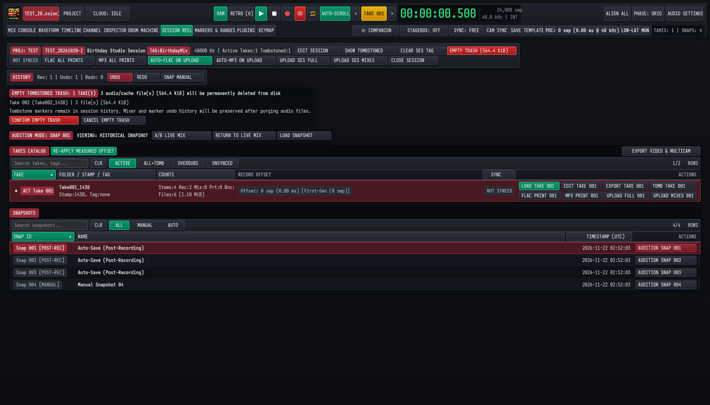
Every row in TAKES CATALOG uses a clean, predictable 4-button action cluster ([Load], [Rename], [Export…], [⋯]):
| Column / Action | Operation |
|---|---|
Favorite Star (★) |
Click the star icon on the far left of any row to mark a keeper Take. Starring a Take lets bandmates and engineers spot the best performance of a song at a glance. |
Active Take Badge (ACT Take 001) & [Load] |
Highlights the Take currently loaded into MIXER and TIMELINE. Click Load on any row (or use < / > beside TAKE 001 in the Top Deck, ALT + [ / ALT + ]) to switch the active Take. |
FOLDER / STAMP / TAG |
Shows the on-disk Take folder name (Take001_1430), capture timestamp (Stamp:1430), and optional song tag (Tag:none or Tag:SongA). |
COUNTS |
Summarizes the audio assets inside the Take: multitrack stems (Stems:4), recording passes (Rec:2), rendered offline mixdowns (Mix:0), live stereo prints (Prt:0), and stem bounces (Bnc:0), plus total disk footprint. |
RECORD OFFSET & RE-APPLY MEASURED OFFSET |
Displays the roundtrip latency offset applied to overdub passes in that Take (Offset: -640 smp (-13.33 ms)). If you recalibrate hardware loopback latency in AUDIO SETTINGS (CMD/CTRL + ,), clicking RE-APPLY MEASURED OFFSET in the catalog header updates the alignment offset on the active Take. |
[Rename] (or inline click on Take Title) |
Renames the Take's song title inline, updates its alphanumeric <TakeTag> (for example, changing Take001_1947 to Take001_1947_MidnightDrive), and records rehearsal or mix notes. |
[Export…] Menu |
Consolidates all outbound Take workflows in one place: Convert Print to FLAC / MP3, external workstation project formats (.rpp, .als, Session XML, .dawproject, .fcpxml, BWF Bundle), Stem Bounces, and Split-Screen Video Mixdown (.mp4) rendering. |
[⋯] Overflow Menu (Upload, Convert Retro Take, Archive… / Restore) |
Houses per-Take Upload Full, Upload Mixes, Convert Retro Take (for Takes captured via SAVE RETRO, SHIFT + R), and crimson Archive… (marks an unwanted false-start Take as ARCHIVED, hiding it from ACTIVE without re-downloading it during cloud sync, and reversible via Undo or Restore in ALL + ARCHIVED). |
Empty Trash… (CONFIRM EMPTY TRASH) |
When one or more Takes have been archived (or archived Studio Sampler bounce generations exist in samples/_history/), a crimson Empty Trash… button appears in the header showing the exact byte count to be reclaimed. Clicking Empty Trash… opens a confirmation banner listing the exact Take folders and archived sample files to be removed from disk. Click CONFIRM EMPTY TRASH to permanently delete those audio files from your drive, or CANCEL EMPTY TRASH to keep them. |
7.2 Live Stereo Prints vs. Offline Mixdowns & Stem Bounces#
Cave Recorder provides four distinct stereo, multitrack, and external project interchange workflows so you can share rough rehearsal recordings with the band in seconds, export studio-grade stems for external mastering, or hand off complete multitrack project files to an external mixing or video editing suite.
7.2.1 Comparison of Export & Bounce Outputs#
| Output Type | Capture Mode | Signal Path & Destination | Studio Use Case |
|---|---|---|---|
1. Live Stereo Print (Print<NNN>) |
Real-time during every Take. Convert to .flac or .mp3 via FLAC PRINT <NNN>, MP3 PRINT <NNN>, FLAC ALL PRINTS, or MP3 ALL PRINTS. |
Live post-Master-Bus stereo mix saved to <TakeFolder>/mix/ and linked into <ProjectTag>/_Mixes/. |
Instant post-rehearsal listening on phones, web browsers, or band group chats without waiting for an offline render. |
2. Offline Stereo Mixdown (Mix<NNN>) |
Faster-than-realtime offline render (triggered via the Master Bus FLAC, MP3, and BOUNCE controls). |
Full Mix Console signal path (trims, phase delays, active Pass Lanes, 8-slot inserts, EQ, VCA compression, Subgroup/Aux buses, Master limiter) saved to <TakeFolder>/mix/ and linked into _Mixes/. |
Sharing polished stereo mixes in 24-bit FLAC or 320 kbps CBR MP3 after refining faders, EQ, dynamics, or overdub comps. |
3. Offline Stem Bounce (Bounce<NNN>) |
Faster-than-realtime offline multi-stem render. | Individual post-DSP Track channels (<CC>-<TrackName>) and/or Subgroup Buses (Bus<BB>-<BusName>) rendered from 00:00:00.000 into <TakeFolder>/bounce/. |
Delivering phase-aligned, delay-compensated instrument or bus stems (WAV or FLAC) for external remixing or mastering. |
4. Multi-Camera Split-Screen Video Mixdown (VideoMix<NNN>.mp4) |
Offline hardware-accelerated multi-camera video + console audio render. | Multi-camera split-screen compositor (Single, Side-by-Side Crop, Side-by-Side 16:9, 3-Cam Band, Quad 2x2) paired with console-mixed 48.0 kHz stereo AAC-LC audio saved to <TakeFolder>/mix/ and linked into <ProjectTag>/_Mixes/. |
Sharing complete multi-angle band performance videos with studio-mixed console audio immediately after rehearsal. |
5. External Project, .fcpxml v1.9 Multicam & Bundle Export (EXPORT TAKE) |
Instant project interchange, multicam video timeline, or stem bundle export from the SESSION REEL or Export modal. |
Generates .rpp project files, .als Live Set project archives, <Session version="7003"> XML session folders, .dawproject open interchange archives, .fcpxml v1.9 Final Cut XML timelines (both stacked split-screen and native <mc-clip> multicam), or universal BWF/iXML/MIDI/IR stem bundles in <TakeFolder>/export/ (linked into <ProjectTag>/_Exports/). |
Handing off a Take (with faders, pans, polarity, phase delays, Pass Lanes, markers, calibrated multi-camera video angles, and optional .nam neural amp models) to an external mixing or video post-production workstation. |
7.2.2 Converting Live Stereo Prints to Lossless FLAC (FLAC PRINT) & 320 kbps MP3 (MP3 PRINT)#
While you are tracking a Take, Cave Recorder writes the live 2-track Master Bus print as an uncompressed .wav file (Print001_<Stamp>.wav) with automatic Plugin Delay Compensation (PDC) latency trimming so the audio engine expends zero processor time on compression during live recording. Once the transport stops:
- Convert a Single Take's Print: In the
SESSION REELview (CMD/CTRL + 4), clickFLAC PRINT 001(for a lossless 24-bit.flacfile) orMP3 PRINT 001(for a 320 kbps CBR.mp3file with a Xing/Info seek header for instant web-player scrubbing) in theACTIONScolumn of that Take row. - Convert All Prints in the Session: Click
FLAC ALL PRINTSorMP3 ALL PRINTSin the Session Reel header bar to convert every unconverted.wavPrint across all active Takes in one batch. - Safe Write & Project
_Mixes/Linking: Cave Recorder encodes the 24-bit.flaccounterpart (50-60%smaller than the source.wavfile) or 320 kbps CBR.mp3counterpart in the background before finalizing the file on disk. If local disk space ever runs out during encoding, any incomplete file is removed immediately so corrupt files never appear on disk. Once converted, theFLAC PRINT 001orMP3 PRINT 001button illuminates in its active state and Cave Recorder automatically places a relative link to the converted file inside the top-level<ProjectTag>/_Mixes/folder.
7.2.3 Rendering Offline Stereo Mixdowns & Stem Bounces#
After you refine channel EQ, VCA compression, multi-mic phase alignment (Chapter 5: Built-In Processors, Phase Alignment & External Plugins (CLAP & AU)), or overdub Pass selections (Chapter 6: Waveform Timeline, Pass Lanes, Markers & Ranges), you can render an updated stereo Mixdown (Mix<NNN>) or multitrack Stem Bounce (Bounce<NNN>) faster than real time:
- Load and Verify the Take: Load the target Take into the console (
LOAD TAKE <NNN>) and verify your mute, solo, active Pass Lane, and Master Bus limiter settings. - Render an Offline Stereo Mixdown (
Mix<NNN>): On the Master Bus strip (Chapter 4: Mix Console, Signal Flow & Channel Strips), toggleFLAC(24-bit lossless.flac),MP3(320 kbps CBR.mp3with a Xing/Info seek header), or both simultaneously, and clickBOUNCE. Cave Recorder processes the entire Take from00:00:00.000through the full console signal path, increments the sequential mix number (Mix001,Mix002, ...), writes the rendered file(s) into<TakeFolder>/mix/, and links them into<ProjectTag>/_Mixes/. When bothFLACandMP3are selected, a singleBOUNCEclick renders both files under the sameMix<MMM>number. - Render Processed Track or Subgroup Stems (
Bounce<NNN>): When exporting stems for an external mix or mastering session, Cave Recorder renders Individual Track Stems (01-Kick-In,02-Snare-Top, ...) and/or Stereo Subgroup Bus Stems (Bus01-Drum-Bus,Bus02-Guitar-Bus, ...) into<TakeFolder>/bounce/inWAVorFLAC. Every bounced stem starts at exact sample0(00:00:00.000) with full Plugin Delay Compensation applied so all stems line up sample-accurately when dragged into any external workstation.
7.2.4 Exporting Takes to External Workstation Project Formats (EXPORT TAKE)#
When an outside mixing engineer or video editor wants to open a recorded Take in an external digital audio workstation or non-linear video editor without rebuilding track names, fader balances, subgroup routing, or marker flags by hand, click EXPORT TAKE on any Take row in the SESSION REEL view (CMD/CTRL + 4).
Cave Recorder writes the selected interchange package into <TakeFolder>/export/ and automatically maintains a flat relative link inside the project-level <ProjectTag>/_Exports/ directory:
.rppProject File (EXPORT TAKE->.rpp): Writes a plain-text.rppproject file referencing the Take's audio stems with sample-accurate microsecond phase offsets, active and muted Pass Lanes, channel faders, stereo pans, polarity switches (Ø), Subgroup Bus folder routing, and timeline markers and loop ranges..alsLive Set Project (EXPORT TAKE->.als): Writes a gzip-compressed XML.alsproject file withAudioTracklanes, sample-zeroAudioClipentries (IsWarped=falseso natural band tempo fluctuations remain untouched), linear mixer volume and pan values, SubgroupGroupTrackrouting, and Timeline locators.- Open-Source Workstation Session XML (
EXPORT TAKE->Session XML 7003): Generates a complete<Session version="7003">XML directory structure withSources,Regions,Playlists,Routestrips,GainControlfaders,Pannablestereo positions, Subgroup Buses, andLocationsmarkers. .dawprojectOpen Interchange Archive (EXPORT TAKE->.dawproject): Packages a standard ZIP container (project.xml+metadata.xml+ optional audio stems) preserving tracks, channel gains, pans, Subgroup Bus routing, Pass clips, and timeline markers for any workstation supporting the open.dawprojectspecification..fcpxmlv1.9 Video Timeline XML (EXPORT TAKE->.fcpxml): Writes a Final Cut XML v1.9 timeline (<fcpxml version="1.9">) with<asset-clip>audio lanes tagged by track role (dialogue.<TrackName>), rational frame-aligned sample timing, decibel volume adjustments, and chapter markers for immediate sync with multi-camera rehearsal or live-session video footage.- Universal BWF / iXML / MIDI / IR Stem Bundle (
EXPORT TAKE->BWF Bundle): Exports Broadcast Wave (bext+<BWFXML>iXML track and pass metadata) audio stems paired with a Type 1 Standard MIDI File (_markers.midcarrying marker cues and tempo map metadata), aREADME_SESSION_NOTES.txtconsole sheet, and 24-bit48 kHzminimum-phase impulse response.wavfiles capturing each channel's 5-stage Phase Alignment Network + 12-Band static EQ curve so any workstation can reproduce Cave Recorder's exact phase and tonal alignment via a standard convolution loader.
When exporting a Take, you can choose Zero-Copy Relative References (which links directly to your existing rec/*.wav stems on disk in milliseconds with zero duplicated audio data) or Self-Contained Copy / Render (which copies or renders stems alongside any active .nam neural amplifier models into the export package for portable delivery on an external drive).
7.2.5 Rendering Multi-Camera Split-Screen .mp4 Video Mixdowns & .fcpxml v1.9 Multicam Timelines#
When a Take contains one or more recorded studio or wireless Cave Companion camera angles in <TakeFolder>/video/, open the Export Video Mixdown & Multicam FCPXML modal from any of four convenient entry points: per-Take EXPORT TAKE or VIDEO MIXDOWN (.MP4) in the TAKES CATALOG, the Session Reel header EXPORT VIDEO & MULTICAM button (CMD/CTRL + 4), or VIDEO MIXDOWN / FCP inside CAM SYNC:
- Choose a Split-Screen Compositor Layout: Cave Recorder composites up to four camera angles directly in
BT.709color space at1080p50(1920×1080 @ 50 FPS) or1080p25(25 FPS) with2 pxdark studio dividers:Single(Full-Frame16:9): Renders a single selected camera angle across the full1920×1080frame.Side-by-Side Crop(2-Camera Vertical8:9Split with Horizontal Pan): Places Camera 1 on the left half (960×1080) and Camera 2 on the right half (960×1080), with independent Horizontal Camera Pan (-100%to+100%) sliders so you can center each musician cleanly within their vertical half-frame.Side-by-Side 16:9(2-Camera Letterboxed16:9Split): Displays two full-width16:9camera frames side by side (960×540each) with zero cropping.3-Cam Band(3-Camera Triptych / Band Layout): Combines a wide or featured upper/left hero angle with two companion bandmate panes and per-pane crop/pan framing.Quad 2x2(4-Camera2×2Studio Grid): Displays four synchronized960×54016:9quadrants (Cam 1Top-Left,Cam 2Top-Right,Cam 3Bottom-Left,Cam 4Bottom-Right).
- Offline Split-Screen
.mp4Mixdown Engine (960/1920-Sample Video Cadence to1024-SampleAAC-LCBridge):- Clicking
RENDER VIDEO MIXDOWN (.MP4)runs asynchronously in the background without blocking console playback or editing, processing the Take from00:00:00.000through the full Mix Console audio engine while decoding and compositing every calibrated camera stream using its.vididxcalibrated latency and clip trim offset. - Because
50 FPS(960samples/frame),25 FPS(1,920samples/frame),30 FPS(1,600samples/frame), and60 FPS(800samples/frame) video cadences differ from the1024-sample frame size required by hardwareAAC-LCaudio encoders, Cave Recorder bridges the48.0 kHzstereo console bus through an exact sample-accurate accumulator into the hardware H.264 +AAC-LC(320 kbps).mp4muxer alongside gapless48.0 kHz.flacand.mp3post-take audio prints. - Once rendered, clicking
COMMIT EXPORTreuses the finished render instantaneously with zero re-encoding, saving it to<TakeFolder>/mix/<SessionID>_Take<NNN>_VideoMix<MMM>_<Stamp>.mp4and linking it into<ProjectTag>/_Mixes/for instant local playback, LAN companion streaming, or Google Drive sharing.
- Clicking
- Dual-Mode
.fcpxmlv1.9 Video Timeline Export (Stacked Split-Screen & Native<mc-clip>Multicam):- Clicking
EXPORT MULTICAM FCPXML (.FCPXML)generates a Final Cut XML v1.9 package in<TakeFolder>/export/supporting two non-linear editing workflows: - Stacked Split-Screen Spine (
<adjust-crop>&<adjust-transform>): Translates your selected Cave Recorder split-screen layout (Side-by-Side Crop,3-Cam Band,Quad 2x2) directly into stacked<asset-clip>video lanes with exact rational<adjust-crop>,<adjust-transform>pan/scale coordinates, and<timeMap>clock-drift tables derived from each camera's.vididxindex. - Native
<mc-clip>Multi-Camera Switching Angle Assembly: Builds a standard Final Cut<mc-clip>multicam resource combining all calibrated camera angles (<mc-angle>) and post-trim audio stems so a video editor can cut live between camera angles on the timeline with zero manual clap-syncing.
- Clicking
7.3 Non-Destructive Console Snapshots & Live Mix (SNAPS)#
A Console Snapshot (Snap 001, Snap 002, ...) is a complete, point-in-time capture of your entire mixing console and timeline comp state stored as a compact JSON file inside <SessionFolder>/snapshots/. Because Snapshots reference your existing audio stems rather than duplicating .wav files on disk, you can save dozens of mix variations per Session with near-zero disk footprint.
7.3.1 What a Snapshot Captures & Automatic Snapshot Policies#
Every Snapshot records:
- All input channel strip parameters (input trim, 180-degree polarity invert, microsecond acoustic phase delay, reorderable 8-slot processing rack order, 12-band Parametric EQ nodes, VCA Compressor settings, Tape Saturation, CLAP plugin states, Aux send levels and tap points, pan, fader gain, mute, solo, and output bus routing).
- All stereo Subgroup Bus (
SUB 1..16), Aux Return (AUX 1Convolution Reverb,AUX 2Stereo Tape Delay), and Master Bus parameters. - Active Pass Lane selections (
PASS 01,OD 02, ...) and per-pass mute states across every Take in the Session. - The complete compact Undo/Redo history stack at that moment in time, so restoring a Snapshot also restores its undo timeline.
Snapshots are created in three ways and can be filtered in the SNAPSHOTS table at the bottom of the SESSION REEL view using the ALL, MANUAL, and AUTO pills:
- Manual Snapshot (
[MANUAL]): ClickSNAP MANUALin the Session Reel history bar or press CMD/CTRL + S from any view to save a named milestone (for example,Manual Snapshot 04orPre-Vocal-Overdub Balance). - Post-Recording Auto-Save (
[POST-REC]): Automatically captured immediately after every normal recording stop (Auto-Save (Post-Recording)), preserving the exact monitor mix and Pass state that was active when the band finished the Take. (If you abort a false start using the clean-restart discard stop command, the post-recording auto-save is suppressed.) - Periodic 20-Minute Auto-Save (
[AUTO]): Automatically captured every 20 minutes while a Session is open, provided at least one console or timeline action has occurred since the last saved Snapshot.
7.3.2 Auditioning Historical Snapshots with Live Mix Protection#
In traditional mixing consoles, loading an old scene or snapshot overwrites your current unsaved fader moves unless you remember to save a temporary file first. Cave Recorder eliminates this hazard by automatically preserving your Live Mix:
- Click
AUDITION SNAP <NNN>to Enter Audition Mode: The moment you clickAUDITION SNAP 001on any row in theSNAPSHOTStable while working on a live mix, Cave Recorder automatically saves your current unsaved working console state as your Live Mix in memory and illuminates the burgundyAUDITION MODE: SNAP 001 | VIEWING: HISTORICAL SNAPSHOTbanner (see Figure 7.2). - Click Through Multiple Historical Snapshots Freely: While in Audition Mode, you can click
AUDITION SNAP 002,AUDITION SNAP 003,AUDITION SNAP 004, and so on across five or more historical Snapshots to compare balances. Your original working Live Mix remains safely preserved in memory the entire time. - Instant Zero-Latency Comparison (
A/B LIVE MIX): ClickA/B LIVE MIXin the Audition Mode banner to toggle directly between the historical Snapshot and your preserved Live Mix while audio is playing. All fader, EQ, and dynamics changes transition via sample-accurate smoothing ramps (5 to 10 ms) without audio clicks. - Restore Your Working Mix (
RETURN TO LIVE MIXor BACKSPACE): ClickRETURN TO LIVE MIXin the Audition Mode banner (or press BACKSPACE while in theSESSION REELview) to exit Audition Mode and restore your exact working console state with zero lost fader or EQ moves. - Adopt the Historical Snapshot (
LOAD SNAPSHOT): If you decide you prefer the historical Snapshot over your previous working state, clickLOAD SNAPSHOTto promote that Snapshot as your active live session mix.
7.4 Self-Documenting Disk Folder Structure & File Naming Rules#
Cave Recorder stores all Projects, Sessions, Takes, Passes, Prints, Mixdowns, Stem Bounces, and Snapshots in an open, human-readable directory hierarchy on your drive (defaulting to ~/Music/caverec/ on macOS and Linux, and %USERPROFILE%\Music\caverec\ on Windows). Every folder and audio filename states which Project, Session, Take, Channel, and Pass it belongs to, so any engineer can open the folder in macOS Finder, Windows Explorer, Linux file managers, or any external audio editor ten years from now with zero proprietary database lock-in.
7.4.1 Complete Project & Session Directory Tree on Disk#
Conceptual studio hierarchy (Project -> Session -> Take -> Pass / Prints / Mixdowns / Snapshots):
ProjectName/
└── SessionName/
├── session.json
├── Snapshots/
├── Mixdowns/
├── Prints/
│ └── Take001_LiveMix.flac
└── Takes/
└── Take001_SongName/
├── Pass001_Base/
│ └── Ch01_Kick.wav
└── Pass002_Overdub/
└── Ch09_LeadGtr.wavOn disk inside your Cave Recorder Library Root (~/Music/caverec/), this hierarchy is organized on disk using self-identifying prefixed filenames and a project-wide _Mixes/ index folder:
~/Music/caverec/ # Library Root folder
├── .caverec/
│ ├── projects.json # Local Project registry
│ ├── drive_sync_state.json # Cloud sync state ledger
│ ├── sampler_library/ # Deduplicated external WAV imports
│ └── templates/
│ ├── MicAndGuitar001.json # Default 2-ch session template
│ ├── GuitarBassDrumTrio001.json # 11-ch band session template
│ ├── XR18Base001.json # 17-track stagebox flat template
│ └── Empty.json # Blank 0-track starter template
├── GF/ # Project ("Grottfolk")
│ ├── .caverec_project.json # Cloud Project index
│ ├── _Mixes/ # Flat links to Mix* & Print*
│ │ ├── GF_20261015-2_Take001_Print001_1947.flac
│ │ ├── GF_20261015-2_Take001_Print001_1947.mp3
│ │ ├── GF_20261015-2_Take001_Mix001_2315.flac
│ │ └── GF_20261015-2_Take001_Mix001_2315.mp3
│ ├── _Exports/ # Flat links to EXPORT TAKE packages
│ └── GF_20261015-2_Jam/ # Session folder (tag "Jam")
│ ├── GF_20261015-2_session.json # Console & marker manifest
│ ├── stagebox_scene.json # Portable Stagebox hardware scene
│ ├── models/ # Self-contained .nam neural models
│ ├── samples/ # Active latest v<VV> Studio Sampler WAVs
│ │ ├── GF_20261015-2_Smp001_Take001-Guitar1_v02_2145.wav
│ │ └── _history/ # Prior bounce versions & soft-deleted WAVs
│ │ └── GF_20261015-2_Smp001_Take001-Guitar1_v01_2140.wav
│ ├── snapshots/ # Saved Console Snapshots
│ │ └── GF_20261015-2_001_2026-10-15_19-34-12.json
│ ├── Take001_1947_Improv/ # Take 001 folder
│ └── Take002_0015_SongB/ # Late-night Take (same day)
└── MISC/ # Built-in default project
└── _Mixes/Inside each individual Take folder (Take001_1947_Improv/), raw multitrack passes, multi-camera video recordings and .vididx sidecar indices, stereo prints and audio/video mixdowns, stem bounces, external project exports, and Take-level neural amp models are separated into clean subfolders:
Take001_1947_Improv/ # Take 001 (tag "Improv")
├── GF_20261015-2_Take001_take.json # Take metadata & notes
├── rec/ # Base (Rec001) & Overdub (-OD)
│ ├── GF_20261015-2_Take001_01-Kick-In_Rec001_1947.wav
│ ├── GF_20261015-2_Take001_02-Snare-Top_Rec001_1947.wav
│ ├── GF_20261015-2_Take001_09-LeadGtr_Rec001_1947.wav
│ ├── GF_20261015-2_Take001_09-LeadGtr_Rec002-OD_2210.wav
│ └── GF_20261015-2_Take001_09-LeadGtr_Rec003-OD_20261019-1922.wav
├── video/ # 50/25/30/60 FPS CFR Camera Angles & .vididx Sidecars
│ ├── GF_20261015-2_Take001_Cam01-Drums_1947.mp4
│ ├── GF_20261015-2_Take001_Cam01-Drums_1947.vididx
│ ├── GF_20261015-2_Take001_Cam02-RoomMobile_1947.mp4
│ └── GF_20261015-2_Take001_Cam02-RoomMobile_1947.vididx
├── mix/ # Live Prints, Audio & Split-Screen Video Mixdowns
│ ├── GF_20261015-2_Take001_Print001_1947.wav
│ ├── GF_20261015-2_Take001_Print001_1947.flac
│ ├── GF_20261015-2_Take001_Print001_1947.mp3
│ ├── GF_20261015-2_Take001_Mix001_2315.flac
│ ├── GF_20261015-2_Take001_Mix001_2315.mp3
│ └── GF_20261015-2_Take001_VideoMix001_2320.mp4
├── bounce/ # Track & Subgroup Bounces
│ ├── GF_20261015-2_Take001_01-Kick-In_Bounce001_2315.wav
│ └── GF_20261015-2_Take001_Bus01-Drum-Bus_Bounce001_2315.wav
├── export/ # External workstation exports (.rpp, .als, .dawproject, .fcpxml, BWF)
├── models/ # Take-level .nam neural amplifier models
└── .cache/ # Waveform display cache7.4.2 Canonical File & Folder Naming Reference#
Every file created by Cave Recorder follows consistent, predictable naming rules so files sort chronologically and never collide when dragged into an external folder or shared across operating systems:
| Item | Naming Pattern | Concrete Example |
|---|---|---|
| Project Tag & Folder | 1 to 8 uppercase letters or digits (A-Z, 0-9) |
GF, INSOF, MISC |
Project _Mixes/ Folder |
<ProjectTag>/_Mixes/ (relative links to active Mix*, Print*, and VideoMix* .flac/.mp3/.wav/.mp4 files) |
GF/_Mixes/GF_20261015-2_Take001_Print001_1947.flac |
Project _Exports/ Folder |
<ProjectTag>/_Exports/ (relative links to exported external workstation packages) |
GF/_Exports/GF_20261015-2_Take001.rpp |
| Session ID (Permanent) | <PROJECT_TAG>_<YYYYMMDD> (plus -2, -3, ... for additional sessions on the same session day) |
GF_20261015, GF_20261015-2 |
| Session Folder | <ProjectTag>/<SessionID>[_<SessionTag>] |
GF/GF_20261015-2_Jam |
| Take Folder | Take<NNN>_<Stamp>[_<TakeTag>] |
Take001_1947_Improv |
Base Pass Stem (rec/) |
<SessionID>_Take<NNN>_<CC>-<TrackName>_Rec001_<Stamp>.wav |
GF_20261015-2_Take001_01-Kick-In_Rec001_1947.wav |
Overdub Pass Stem (rec/) |
<SessionID>_Take<NNN>_<CC>-<TrackName>_Rec<MMM>-OD_<Stamp>.wav |
GF_20261015-2_Take001_09-LeadGtr_Rec002-OD_2210.wav |
Camera Video & Index (video/) |
<SessionID>_Take<NNN>_Cam<CC>-<CamName>_<Stamp>.<mp4|vididx> |
GF_20261015-2_Take001_Cam01-Drums_1947.mp4 |
Live Stereo Print (mix/) |
<SessionID>_Take<NNN>_Print<NNN>_<Stamp>.wav / .flac / .mp3 |
GF_20261015-2_Take001_Print001_1947.flac |
Offline Mixdown (mix/) |
<SessionID>_Take<NNN>_Mix<NNN>_<Stamp>.flac / .mp3 / .wav |
GF_20261015-2_Take001_Mix001_2315.flac |
Split-Screen Video Mix (mix/) |
<SessionID>_Take<NNN>_VideoMix<NNN>_<Stamp>.mp4 |
GF_20261015-2_Take001_VideoMix001_2320.mp4 |
Track Stem Bounce (bounce/) |
<SessionID>_Take<NNN>_<CC>-<TrackName>_Bounce<NNN>_<Stamp>.wav / .flac |
GF_20261015-2_Take001_09-LeadGtr_Bounce001_2315.wav |
Subgroup Stem Bounce (bounce/) |
<SessionID>_Take<NNN>_Bus<BB>-<BusName>_Bounce<NNN>_<Stamp>.wav / .flac |
GF_20261015-2_Take001_Bus01-Drum-Bus_Bounce001_2315.wav |
External Take Export (export/) |
<TakeFolder>/export/<SessionID>_Take<NNN>.<rpp|als|dawproject|fcpxml> |
Take001_1947_Improv/export/GF_20261015-2_Take001.rpp |
Neural Amp Model (models/) |
<SessionFolder>/models/<ModelName>_<ShortHash>.nam |
GF_20261015-2_Jam/models/StudioCrunch_a1b2c3d4.nam |
Studio Sampler WAV (samples/) |
<SessionID>_Smp<NNN>_<Label>_v<VV>_<Stamp>.wav (archived prior generations in samples/_history/) |
GF_20261015-2_Smp001_Take001-Guitar1_v02_2145.wav |
Stagebox Scene (stagebox_scene.json) |
<SessionFolder>/stagebox_scene.json |
GF_20261015-2_Jam/stagebox_scene.json |
Console Snapshot (snapshots/) |
<SessionID>_<NNN>_<YYYY-MM-DD_HH-MM-SS>.json |
GF_20261015-2_001_2026-10-15_19-34-12.json |
Key studio rules governing disk files:
- 08:00 Local Time Session-Day Rollover: A studio session day runs from 08:00 to 07:59 local time the following morning. If your band starts rehearsing on October 15 at
21:00and records a Take after midnight at01:30on October 16, that late-night recording still belongs to session date20261015and receives a four-digit<Stamp>(0130). If you open the same Session four days later on October 19 to record a guitar overdub,<Stamp>automatically expands to include the calendar date (20261019-1922). - Permanent File IDs vs. Editable Folder Tags: The
<SessionID>, Take numbers (Take001,Take002), Pass numbers (Rec001,Rec002-OD), and timestamps are assigned once at creation and never change, and numbers are never reused after a deletion. Editable tags (<SessionTag>likeJamand<TakeTag>likeImprov) appear only in folder names, never inside.wavor.flacfilenames. As a result, you can rename song tags and display titles freely at any time without breaking file references or re-uploading gigabytes of audio to the cloud. - Broadcast Wave (
bext) Headers & Sample-Zero Alignment: Every.wavstem is written with standard Broadcast Wave (bext) metadata embedding the wall-clock origin timecode while aligning the start of the Take to sample0(00:00:00.000).
7.5 Band Collaboration & Google Drive Cloud Sync (CLOUD)#
Cave Recorder includes built-in two-way Google Drive Cloud Sync designed specifically for bands and production teams. Bandmates can pull lightweight stereo .flac and .mp3 Prints, Mixdowns, and Console Snapshots to their laptops or stream .mp3 files directly in the Google Drive web player immediately after rehearsal, while selectively downloading multi-gigabyte raw multitrack stems only for the Takes they want to remix or overdub at home.
7.5.1 Connecting a Project to Google Drive & Reading the CLOUD Badge#
- Authenticate with Google Drive: Click
PROJECTin the Top Deck (CMD/CTRL + O) to open the Project & Session Browser modal (or click theCLOUD: IDLEstatus badge in the Top Deck). In the topCloud Folderrow, clickCheck / Connect Drive. When a Google OAuth Client ID is configured, Cave Recorder launches your default web browser for the Google account sign-in flow and stores your refresh credentials inside your operating system's user configuration folder. If no OAuth Client ID is configured yet on your workstation, Cave Recorder displaysDRIVE: OAUTH NOT CONFIGUREDwith inline setup guidance for placinggdrive_oauth_client.jsonin your Cave Recorder configuration directory (~/Library/Application Support/caverec/on macOS,~/.config/caverec/on Linux, or%APPDATA%\caverec\on Windows) or setting theCAVEREC_GDRIVE_CLIENT_IDenvironment variable. - Monitor the Top Deck
CLOUDStatus Pill:CLOUD: IDLE: Connected and ready, with no transfer currently running.CLOUD: SYNCING: Actively uploading or downloading session manifests, mixes, or stems in the background.CLOUD: SYNCED: All local Session changes match the remote Google Drive project index.
- Automatic Real-Time Recording Guard: If a background cloud upload or download is running when you press Record (R) on the transport bar, Cave Recorder automatically pauses and terminates the background transfer immediately so disk and network activity never compete with live multitrack audio capture.
7.5.2 Selective Sync Tiers: MIXES vs. FULL, AUTO-FLAC ON UPLOAD & AUTO-MP3 ON UPLOAD#
Because an evening of 18-channel 48 kHz / 24-bit multitrack stems can total 10 to 30 GB while stereo .flac and .mp3 Prints and Console Snapshots take only a few megabytes, Cave Recorder supports two explicit transfer modes for both uploading and downloading:
| Sync Tier | Upload / Download Buttons | What Is Transferred | When to Use |
|---|---|---|---|
Mixes & Metadata Only (MIXES) |
UPLOAD SES MIXES, UPLOAD MIXES <NNN>, Sync Library (Mixes), DOWNLOAD MIXES |
Session & Take JSON manifests, Markers & Ranges, Console Snapshots (snapshots/), .flac/.mp3/.wav Live Prints and Mixdowns (mix/), Stem Bounces (bounce/), and <ProjectTag>/_Mixes/. Skips raw rec/ multitrack WAV stems. |
Right after rehearsal over studio Wi-Fi or mobile hotspot so bandmates can listen to every Take, stream .mp3 mixes in Google Drive, inspect markers, and audition mixes within seconds. |
Full Multitrack Backup (FULL) |
UPLOAD SES FULL, UPLOAD FULL <NNN>, Sync Library (Full), DOWNLOAD FULL |
Everything in MIXES plus all raw multitrack Base Pass (Rec001) and Overdub Pass (Rec002-OD) .wav stems in rec/. |
Backing up the complete multitrack session to cloud storage, or pulling raw stems of a keeper Take (UPLOAD FULL 001 / DOWNLOAD FULL) to overdub or remix on another computer. |
7.5.3 Sharing a Project with Bandmates (+ Link Remote Project...)#
Each Project in Cave Recorder is an independent sync root, allowing you to keep personal projects in your own Google Drive while linking band projects hosted in a bandmate's Google Drive:
- Share the Project Folder: The bandmate who created the Project shares its
<ProjectTag>folder in Google Drive with the band's Google accounts (or clicksCOPY SHARE LINKin thePROJECTmodal to copy acaverec://project link to the clipboard). - Link the Remote Project: On each bandmate's computer, open the
PROJECTmodal (CMD/CTRL + O) and click+ Link Remote Project.... - Auto-Discovery or Link Paste: Cave Recorder automatically lists all Cave Recorder projects found in your Google Drive
"Shared with me"view for one-click linking, or lets you paste a Google Drive folder URL orcaverec://share URI directly. - Automatic Tag Collision Resolution: Because every Project in your local library must have a unique
<ProjectTag>, if a linked remote project uses a tag (such asGF) that already exists on your machine, Cave Recorder prompts you with three clear choices:RENAME LOCAL PROJECT TAG...: Re-tags your existing local project (for example,GFtoGF2) to freeGFfor the shared band project.MERGE SAME PROJECT (ADOPT REMOTE): Used when two bandmates independently created theGFproject before linking, adopting the shared cloud project identity cleanly.CANCEL: Aborts linking without changing local files.
7.5.4 Exclusive Session Write-Locking (Read-Only Preview) & Zero-Loss Conflict Merging#
When multiple bandmates collaborate on the same Session across different computers, Cave Recorder prevents accidental overwrites using Exclusive Session Write-Locking paired with Snapshot-Backed Conflict Merging:
- Automatic Write Lock on Open & Release on Close:
- When you open a Session while online, Cave Recorder acquires an exclusive edit lock for your computer and automatically pulls any newer cloud metadata if your local copy has no unsaved edits.
- When you close the Session (
CLOSE SESSION) or quit Cave Recorder while online, the edit lock is released automatically so another bandmate can open the Session for editing.
- Opening a Session Locked by a Bandmate (
Read-Only Preview Mode):- If a bandmate currently has the Session open on another computer, Cave Recorder alerts you and offers
OPEN READ-ONLY PREVIEW(recommended),BREAK LOCK & TAKE WRITE ACCESS, orCANCEL. - In
Read-Only Previewmode, an amberREAD-ONLY (LOCKED BY <MACHINE>)badge appears in the header. You have full playback, timeline scrubbing, and live in-memory console mixing (faders, solos, 12-band EQ, VCA compression, and Snapshot auditioning), while transportRecord/Overduband background disk writes are disabled so you never conflict with your bandmate's live recording session. - If you dial in a great mix while in
Read-Only Previewmode, clickSAVE AS LOCAL SNAPSHOTin the header bar to preserve your mix settings locally, or clickTAKE LOCKonce your bandmate finishes.
- If a bandmate currently has the Session open on another computer, Cave Recorder alerts you and offers
- Zero-Loss Merging of Offline Edits, Takes & Deletions:
- Audio files in
rec/,mix/, andbounce/are never overwritten, and new recordings and bounces are always saved as new numbered files. Pulling aMIXESupdate onto the studio computer that holds the rawrec/multitrack WAV stems adds new mixes and snapshots without ever deleting local multitrack stems. - Takes or Passes that were marked as deleted in the session history on one machine remain marked as deleted across syncs so purged false starts are never re-downloaded.
- If two bandmates both edit a Session's mix while offline and later sync to Google Drive, Cave Recorder detects that both computers edited the Session while offline, combines all newly recorded Takes, Passes, Mixdowns, and Snapshots from both machines, and prompts you to choose either
KEEP LOCAL MIX & SAVE CLOUD MIX AS SNAPSHOTorADOPT CLOUD MIX & SAVE LOCAL MIX AS SNAPSHOT. The alternate mix is automatically saved intosnapshots/so zero fader or EQ work is ever lost, and you can immediately compare both bandmates' mixes side by side using Live Mix (Section 7.3.2).
- Audio files in
7.5.5 Unified Google Drive Resumable Video/Print Sync & Cross-Device Deduplication#
When a Session includes multi-camera .mp4 + .vididx recordings alongside .flac and .mp3 audio prints, Cave Recorder coordinates desktop and Cave Companion mobile transfers through a unified Google Drive Resumable Sync pipeline:
- Automatic Cross-Device Deduplication: Every uploaded
.mp4,.vididx,.flac,.mp3, and.wavasset is tagged in Google Drive metadata with its content fingerprint. If a mobile camera node has already transferred a1080p50.mp4angle to the desktop workstation over studio Wi-Fi (or uploaded it directly from the phone), Google Drive confirms the matching file fingerprint so the second device never re-uploads the same multi-hundred-megabyte video file. - Chunked Resumable Uploads: Large
.mp4video angles, split-screenVideoMix<NNN>.mp4renders, and.wav/.flacstems upload via resumable upload sessions in8 MBchunks. If a rehearsal basement Wi-Fi connection drops mid-upload, Cave Recorder automatically resumes from the last committed byte offset when connectivity returns. - Verified Downloads, Non-Blocking Sync & Transactional Rollback: Downloads stream into a temporary
.partstaging file and finalize into place only after the integrity check passes. Project catalog loads, cloud manifest merges, and background transfers execute asynchronously off the60 Hzinterface thread on both Desktop and Cave Companion mobile, guarded against mid-sync session switches and backed by automatic transactional rollback if a network link or storage drive drops mid-transfer. When you pair a Cave Companion phone via the desktop pairing QR code, the project's Google Drive root folder link propagates automatically to the phone so mobile sign-in connects directly to the shared band project folder.
7.6 Cave Companion Mobile Ecosystem (Android .apk & iOS .ipa)#
The Cave Companion mobile application for Android (API 36 / 16 KB page-size compliant caverec-v0.7.1-android-arm64.apk) and iOS (caverec-v0.7.1-ios-arm64.ipa) turns every bandmate's phone or tablet into a low-latency Wireless TRANSPORT & 16-Channel Meter Bridge, a full Realtime Wireless Studio MIXER Console, a dedicated STAGEBOX (MY MONITOR personal IEM & PIN-lockable FULL MIXER) controller, a tactile wireless GROOVEBOX & SAMPLER remote, a sample-locked Wireless 1080p50 CFR Studio Camera Node, and an offline-capable Multi-Angle & Multi-Print Take PLAYER unified in Plain Studio Language and the universal [M] (Mute Amber) -> [S] (Solo Gold) -> [R] (Record Crimson) strip order across all viewports.
- Responsive 8-Tab Tablet vs. 6-Tab Phone Navigation:
- Tablets (
>= 840 dp/pt): Bottom navigation displays all 8 root tabs:PAIR | TRANSPORT | MIXER | STAGEBOX | GROOVEBOX | CAMERA | TAKES | PLAYER(givingMIXER,STAGEBOX, andGROOVEBOXdedicated top-level buttons with zero redundant inner tab rows). - Phones (
< 600 dp/ptmin-dimension): Bottom navigation locks cleanly to 6 root tabs:PAIR | TRANSPORT | CONSOLE | CAMERA | TAKES | PLAYER, grouping[MIXER | GROOVEBOX | STAGEBOX]underCONSOLEwith a single48 dptop switcher so every target remains wide and thumb-reachable.
- Tablets (
7.6.1 Desktop REMOTE Workspace (CMD/CTRL + 0), Bonjour Auto-Discovery, SAMPLE STUDIO SESSION & One-Tap Approval#
Click the ● REMOTE live status pill in Row 2 of the Top Deck (immediately right of ● STAGEBOX), or press CMD/CTRL + 0, to toggle the full-workspace Cave Companion view (clicking ● REMOTE, <- RETURN, or ESC returns immediately to your previous workspace tab).
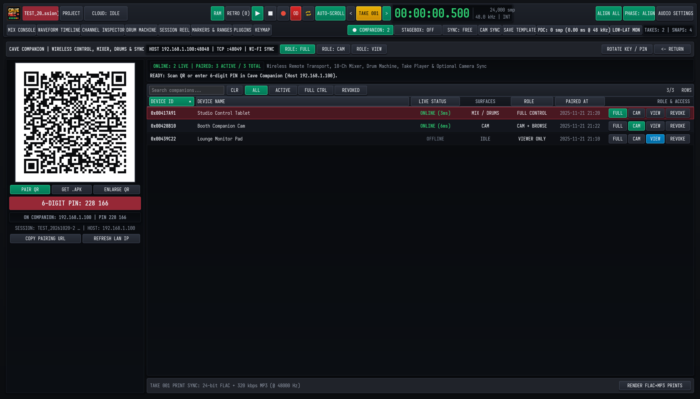
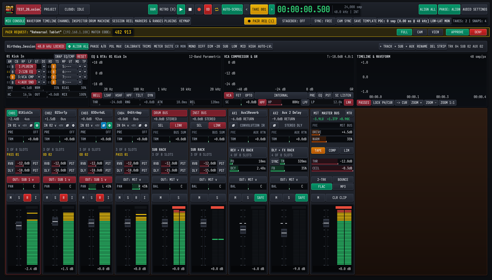
- Zero-Configuration Bonjour Wi-Fi Discovery (
_caverec._udp): Desktop macOS automatically advertises_caverec._udpover local Wi-Fi alongside UDP LAN studio discovery. Both iOS and Android Cave Companion apps discover studio workstations automatically on thePAIRscreen with zero manual IP entry (auto-filling single-host studios) and offer 1-tapPAIR ON WI-FIwith a 6-digitMATCH CODEverified on the desktop global approval banner (PAIR REQUEST: "<Device>" (<IP>) MATCH CODE: NNN NNN). - Bundled
SAMPLE STUDIO SESSION(UNPAIRED SAMPLE) for First-Launch Exploration (Including Full OfflineSTAGEBOX): Before pairing with a desktop studio, tappingSAMPLE STUDIO SESSIONon the mobilePAIRscreen loads genuine pre-rendered48.0 kHzstudio media (Take001"Live Room Check" with.flacFullMix +.mp3RhythmDry + 2-angle50 FPSH.264 video,Take002"Late Jam Groove", and a sliceable Sampler loop) through the real studio audio/video engine alongside a hydrated sample hardware mixer state. Musicians and evaluators can exploreTRANSPORT,MIXER(32-channel band patch),STAGEBOX(fully populatedMY MONITORpersonal IEM bus sends andFULL MIXERFOH channel strips, PEQ, RTA, GEQ, and FX rack controls without live mixer hardware connected),GROOVEBOX+SAMPLER,CAMERA(25/50 FPSviewfinder),TAKES(tappable1..5stars andRename…), andPLAYER(multi-angle playback and print switching). While active, an amber/copperUNPAIRED SAMPLEpill stays visible in the top bar. TappingUNPAIRED SAMPLE, tappingEXIT SAMPLE SESSIONonPAIR, or completing a live Wi-Fi pairing exits and purges the staged sample files cleanly. - Crisp Studio QR Code, Live QR Auto-Zoom,
ENLARGE QRLightbox & 6-Digit Studio PIN: Desktop displays a large integer-aligned QR code (ENLARGE QRopens a centered456 x 456studio-distance lightbox), a one-clickCOPY PAIRING URLbutton,REFRESH LAN IP, and the 6-digit numeric fallback PIN (ON COMPANION: <IP> | PIN <NNN NNN>). Every installation creates a unique persistent device identity, andROTATE KEY / PINrotates credentials cleanly. - Live Companion Table & Access Roles (
FULL,CAM,VIEW,REVOKE): Lists every paired companion with liveONLINE (<rtt>)/OFFLINE/REVOKEDtelemetry and access role controls (Full Control + Camera,Camera + Player,Player & Meters Only, and StageboxMY MONITORvs.FULL MIXERpermissions managed inSTAGEBOX -> 4. SCENES & SETUP). Paired companions with camera capability register automatically inside● CAMERA.
7.6.2 Wireless Studio Link & Zero-Scroll TRANSPORT Tab#
Cave Companion separates sub-millisecond studio telemetry and transport control from bulk .mp4 / .flac media transfers across two dedicated local Wi-Fi channels, anchored by the zero-scroll TRANSPORT root tab (REC, PLAY/PAUSE, STOP, ⏮ START, NEW TAKE, 16-channel 40-segment LED meter bridge, 60 Hz interactive scrub ruler, and a guarded two-step Discard Recording? modal so a stray tap never wipes a Take):
| Studio Channel | Capability | Cadence & Protection | Studio Function |
|---|---|---|---|
| Real-Time Studio Control Link | Sub-Millisecond Clock Lock | Continuous drift-compensated clock synchronization (Locking Clock… -> CLOCK LOCKED) |
Maps the companion device's camera and player clock directly onto the desktop audio interface's 48.0 kHz sample timeline (< 0.5 ms lock). |
| Real-Time Studio Control Link | Remote Transport Commands | Authenticated studio session commands | Triggers Play/Pause, Stop, START, Record, Overdub, SAVE RETRO, NEW TAKE, Take switching, safe two-step Discard Recording?, and live Marker drops (M) from behind the drum kit or amp stack. |
| Real-Time Studio Control Link | Remote Timeline Scrubbing | 60 Hz smooth playhead scrubbing |
Lets a musician scrub the desktop Timeline smoothly by dragging across the mobile timeline ruler. |
| Real-Time Studio Control Link | Live Console Telemetry & Meters | 25 Hz / 50 Hz broadcast from desktop to paired companions |
Streams active Take timecode, transport state (PLAY, REC, OVERDUB), and 16-channel Peak/RMS + 40-segment Master Bus LED meter levels. |
| High-Speed Media Transfer Link | Manifest, Video & Audio Sync | Authenticated transfer with automatic .part resume and file integrity verification |
Transfers session/take manifests, sends wireless 1080p50 .mp4 + .vididx camera recordings to <TakeFolder>/video/, and downloads .mp3, .flac, and VideoMix<NNN>.mp4 files to paired companions at full Wi-Fi speed. |
7.6.3 Wireless 1080p50 CFR Mobile CAMERA Node & Direct Wireless-Clock Rear Torch Calibration#
Switching to the CAMERA tab inside the Cave Companion app configures the companion device's hardware camera and H.264/HEVC encoder as a sample-locked wireless studio camera (Standby -> CAMERA ARMED • AUTO-REC WITH DAW):
- Lens & Constant Frame Rate (
CFR) Selector Pills: Pick your preferred physical lens (ULTRA-WIDE,WIDE,TELEPHOTO, orFRONT) and exact frame rate (24,25,30,50, or60 FPS). Default1080p50CFR locks sensor exposure duration and frame delivery to an exact50 FPS(20.000 ms/960audio samples per frame at48.0 kHz) with zero B-frames and0.5 sclosed GOP keyframes, stamping every frame's presentation timestamp into a local.vididxsidecar locked to the desktop audio clock. - DAW-Coupled Arming & Live Studio HUD: Arming the mobile camera illuminates
CAMERA ARMED • AUTO-REC WITH DAWso the phone or tablet starts and stops recording automatically in lockstep with the desktop transport (withAUTO-PUSH ON STOPenabled for hands-free upload). Devices withFull Controlcan also tapRECORD DAW TAKEandSTOP TAKE & SYNCdirectly from the Camera HUD alongside the greenCLOCK LOCKED (±0.2 ms)badge, 16-channel mini-meters, and crimson Recording Tally Border. - Collapsible
FLASH SYNC ▾(OPTICAL FLASH SYNC CALIBRATION) Drawer: ExpandingFLASH SYNC ▾and tappingTRIGGER 4-PULSE REAR TORCH CALIBRATIONfires the companion device's rear LED Torch in a 4-pulse optical sequence and measures the camera sensor's rolling-shutter and encoder latency directly against wireless studio-clock timestamps with no phone speaker or microphone audio loop, combining automatically with the desktop studio calibration offset. - Automatic Wi-Fi Camera Transfer & Desktop Timeline Auto-Ingest: The instant recording stops, the companion finalizes its
.mp4and.vididxfiles and automatically transfers both over studio Wi-Fi into the desktop workstation's<TakeFolder>/video/folder. As soon as the verified transfer completes, the desktop workstation automatically attaches the mobile camera angle to the active Take and renders its stacked Video Timeline Strip time-anchored thumbnail filmstrip onTIMELINE(CMD/CTRL + 1).
7.6.4 Split TAKES & PLAYER Root Tabs, Multi-Angle Playback & Mobile Storage Quota Tiering#
Cave Companion separates Take browsing (TAKES tab, with tappable 1..5 favorite stars, Rename…, Download, and Remove Local Video controls) from dedicated playback (PLAYER tab, featuring a 2-pane landscape layout on tablets with the video monitor and transport alongside the angle/print list) so bandmates can review every recorded Take either in the studio over local Wi-Fi or on the road via Google Drive Cloud Sync:
- Instant Multi-Angle & Multi-Print Switching: While a Take is playing in
PLAYER, tap any camera angle pill (Cam01-Drums,Cam02-GtrMobile,Split-Screen Mix) or switch audio sources on the fly between the Live Stereo Print (Print001.mp3/.flac) and subsequent Offline Mixdowns (Mix001.flac,Mix002.flac). Continuous drift-free audio/video synchronization keeps video frame presentation locked to the active audio print with zero timeline restart. - Smart Mobile Storage Quota Cache Tiering: To prevent multi-gigabyte
1080p50camera files from filling up a bandmate's device storage, Cave Companion enforces a three-tier local cache policy (Pinned Offline .mp3 Prints & Manifests,On-Demand .flac & .mp4within a2 GBto16 GBceiling with manualRemove Local Videoper Take, and automatic camera outbox cleanup once desktop or cloud transfer is verified).
7.6.5 Realtime Wireless MIXER & STAGEBOX (MY MONITOR vs. FULL MIXER & MIXER LOCK)#
- Wireless DAW
MIXER(MIXERon Tablets,CONSOLE -> MIXERon Phones):- Synchronizes live with desktop
MIXERat50 Hz(SYNCING CONSOLE…until initial state arrives), providing full transport (START,PLAY/PAUSE,STOP,REC),12-CH VIEW/18-CH VIEWtablet density toggle, quick Snapshots, AndroidFULLimmersive taskbar toggle, layer banking (ALL 18,CH 1-8,CH 9-16,AUX,BUS), pinned Master strip (MAIN,DIM,MONO,CLR S,CLR !),SENDS ON FADERS(tablet) /BUS SENDS(phone) with4xFINEclutch, geared zero-jump relative touch faders (2-finger 4x fine clutch,double-tapunity, inline numeric keypad), universal[M](Mute Amber) /[S](Solo Gold) /[R](Record Crimson) strip controls, and the docked Focus Strip (HW GAIN,TRIM,600 mshold48V,Ø,HPF,PAN, 4-Band PEQ with two-finger pinchQ, andVCA/FET/Optocompressor).
- Synchronizes live with desktop
- Wireless Hardware
STAGEBOX(STAGEBOXon Tablets,CONSOLE -> STAGEBOXon Phones):- Enforces server-side cryptographic role permissions so musicians and engineers can share the same stagebox safely:
MY MONITOR(Personal Musician IEM / Wedge View): Pins the musician's device to their assigned monitor bus (BUS 1..6), offering channel contribution faders, a continuousMORE MEslider, anAUX USBplayback/click spotlight fader, andMY BUS MASTERwith zero exposure to+48Vphantom power, Main PA faders, or hardware routing.FULL MIXER(Engineer FOH View BehindMIXER LOCK): Protected byMIXER LOCK(0.6 shold to claim /Release Mixer Lockpill), granting full wireless tablet and phone control overSENDS ON FADERS/BUS SENDS, 4-band PEQ over live100-bin RTA,31-Band GEQ, the 55-FX rack,TAP TEMPO,VIRTUAL SOUNDCHECK,MUTE GRP, andCLEAR SOLO.- Offline Stagebox Preview in
SAMPLE STUDIO SESSION(UNPAIRED SAMPLE): Even without a connectedX-AirorX32hardware mixer, enteringSAMPLE STUDIO SESSIONfrom thePAIRtab hydrates bothMY MONITORandFULL MIXERwith a realistic rehearsal band patch so musicians and engineers can practice monitor balance,SENDS ON FADERS, PEQ, GEQ, and FX navigation offline.
7.6.6 Cave Companion Wireless GROOVEBOX & SAMPLER Remote (SEQ + SYNTH, 16 PADS, SAMPLER & ARRANGER)#
Selecting GROOVEBOX on a tablet (or CONSOLE -> GROOVEBOX on a phone) connects directly to the desktop workstation's 6-Archetype Groovebox & Studio Sampler over the low-latency studio wireless link (50 Hz telemetry and continuous fractional playhead updates, with Android FULL immersive taskbar toggle and immediate coupled Master Playback STOP / |< response):
- Zero-Scroll Exact-Fit Hardware Chassis (
SEQ + SYNTH): Dynamically banks voice rows at>= 48 dptouch pitch across all phone and tablet viewports with always-visible playhead hairline, melodicANALOG BASSnote labels and violet Tie Bridge Bars,[2D | NOTE | VEL]step drag, two-handed touch Parameter Locking, in-dockARCHswitching across all 6 voices (MEM,SNR,MET,MOD,BAS,SMP), contextual Bass Setup, the pinnedMETRONOME+ symmetric[POCKET | CLUB]13-kit selector (+GROOVEopt-in), and Live Deck (CTRL ALL,STASH,RELOAD KIT,MORPH,HOLD FILL,SLIP BEAT-REPEAT). 16 PADSLive Finger-Drumming Surface: 16 color-coded, velocity-sensitive drum pads with vertical Y-axis strike velocity ([PADS 1-8 | PADS 9-16]banking on compact landscape phones).SAMPLERAdaptive Tablet & Phone Surface (Zero-Scroll):- Wide Tablet (
>= 840 dp/pt, Dual-Pane): Left pane combines voice/sample header, inline history strip (11 Files · 272 MBwithKeep Latest 3,Empty Trash…,HIDE),1x..16xpinch-zoomable waveform with draggable slice markers,SuperFluxslicer controls (TRANS/GRID/PAD,APPLY KIT,APPLY TRK), and capture/bounce actions (REC/STOP,CROP,NORM,REV,BPM FIT,FX BOUNCE). Right pane pairsS01..S64SLICE CHOP PADS(BANK A..D, Y-axis velocity), playback/filter/LFO controls, and the2 x 4touch-bar macro deck. - Compact Phone (
< 840 dp/pt): Zero-scroll 3-page mode switcher in Plain Studio Language:[WAVE | SLICES | MANGLE](WAVEwaveform & slicing,SLICESchop padsS01-08/S09-16acrossBANK A..D, andMANGLEmacros, filter/LFO, resample, bounce, and Sample History pruning).
- Wide Tablet (
ARRANGERPaginated Scene Launcher & Pattern Bank: Launches and chainsS01..S16Scenes withDIRECT/NEXT BEAT/NEXT BARquantization, paginated blocks, and per-block voice mute overrides. Mutating Groovebox or Sampler state requiresFull Control + Camerarole.
Actions, Shortcuts, Studio CLI & Python Automation Reference
Complete reference for all 62 bindable keyboard actions (updated CMD/CTRL+1..0 workspace order) and built-in Studio Coach (?) shortcuts across macOS, Windows, and Linux, console, timeline, MIDI Sync, Groovebox, Studio Sampler, Stagebox, Remote workspace, and mobile touch gestures, the Keymap View, Studio Pad Surface dual-personality hardware button, SAMPLING, and pad shortcuts, desktop command-line options, and the complete caverec-cli, caverec-headless, sample-clocked Meter and Probe pipeline, POSIX FIFO bridge, Python client (extras/python/caverec.py), and 6 embedded Studio Engineering Skills reference.
Cave Recorder is engineered for fast, eyes-on-the-band operation during live rehearsals and studio tracking sessions, paired with a scriptable command-line and Python automation interface for live control and offline analysis. Every transport command, workspace switch, marker placement, channel strip toggle, timeline zoom action, and snapshot operation can be triggered from the keyboard, mouse/trackpad, Dual-Screen Pad Controller, or caverec-cli.
This chapter provides the complete reference for all 62 keyboard-assignable studio actions (plus built-in ? Studio Coach and arrow navigation keys) across macOS, Windows, and Linux, all mouse, trackpad, Groovebox, MIDI Sync, Stagebox, and Cave Companion touch gestures, the interactive KEYMAP configuration workspace (CMD + 8 on macOS, CTRL + 8 on Windows and Linux), desktop launch flags, Studio Pad Surface hardware shortcuts, and the complete caverec-cli, caverec-headless, sample-clocked Meter and Probe pipeline, POSIX FIFO bridge, Python client (extras/python/caverec.py), and 6 Studio Engineering Skills reference.
8.1 Complete Keyboard Shortcut Reference (All 62 Actions by Scope)#
Cave Recorder organizes its 62 bindable actions into seven execution scopes so that single-key shortcuts can be reused across different workspace views without colliding:
- Platform Modifier Mapping: Cave Recorder supports four modifier keys across platforms: the primary
commandmodifier maps to CMD on macOS and CTRL on Windows and Linux, thealtmodifier maps to OPT (ALT) on macOS and ALT on Windows and Linux, theshiftmodifier maps to SHIFT on all platforms, and the secondarycontrolmodifier maps to CTRL on macOS and SUPER (WIN) on Windows and Linux. Keymap profiles saved on one operating system automatically translate to the native modifiers on the other platforms. - Modal Priority (
PROJECT MODAL): While thePROJECT(Project & Session Browser) modal is open, onlyPROJECT MODALactions (ENTER and ESC) respond to keyboard input. - View-Specific Priority & Global Fallback: When a workspace view tab (
TIMELINE,MIXER,CHANNEL STRIP,MARKERS, orTAKES) is active, Cave Recorder checks that view's dedicated shortcuts first and then falls back toGLOBALactions. Unmodified single-letter keys (R,O,C,M,K,L) remain reserved for global transport and cue marker actions,?toggles[?]Studio Coach whenever no text field is active, and channel strip toggles onMIXERuse SHIFT combinations (SHIFT + M, SHIFT + S, SHIFT + A, SHIFT + I, SHIFT + P) so you never accidentally mute or disarm a track while dropping a marker.
8.1.1 Global Transport & Record (GLOBAL TRANSPORT)#
These 10 actions belong to the GLOBAL / TRANSPORT category (GLOBAL scope) and are active from every workspace view whenever the Project Browser modal is closed.
| Action Title | macOS Default | Windows / Linux Default | Studio Function |
|---|---|---|---|
| Play / Pause Transport | SPACE | SPACE | Starts or pauses Master Transport playback from the active Take playhead. |
| Stop Transport | SHIFT + SPACE | SHIFT + SPACE | Stops Master Transport playback or active recording immediately and finalizes open audio files. Pressing Stop a second time while already stopped performs Return-to-Zero (00:00:00.000) while keeping the timeline playhead visible at sample 0. |
| Toggle Record | R | R | Starts or stops multitrack recording (creates a new t = 0 Take when OVERDUB is off, or records an Overdub Pass when OVERDUB is latched). |
| Toggle Overdub Mode (OD) | O | O | Latches OVERDUB on the Top Deck so pressing Record captures a track-level Overdub Pass (Rec002-OD) inside the active Take. |
| Toggle Cycle / Loop | C | C | Toggles continuous loop playback and loop overdubbing (⇄) across the active Take range. |
| Capture Retroactive Take | SHIFT + R | SHIFT + R | Flushes the rolling 30-minute capture memory (SAVE RETRO) to disk as a new numbered Session Take. |
| Toggle Retroactive RAM Ring | Unbound (Assignable in KEYMAP) |
Unbound (Assignable in KEYMAP) |
Enables or disables continuous background 30-minute ● RETRO capture across record-armed inputs. |
| Toggle Timeline Auto-Scroll | Unbound (Assignable in KEYMAP) |
Unbound (Assignable in KEYMAP) |
Toggles SCROLL so the Timeline viewport follows the advancing playhead automatically. |
| Activate Previous Session Take | OPT + [ (ALT + [) |
ALT + [ | Loads the previous active Session Take (<) into TIMELINE and MIXER. |
| Activate Next Session Take | OPT + ] (ALT + ]) |
ALT + ] | Loads the next active Session Take (>) into TIMELINE and MIXER. |
8.1.2 Global Navigation & Modals (GLOBAL NAVIGATION & MODALS)#
This group includes the 13 GLOBAL / NAVIGATION actions (GLOBAL scope) used to switch workspace tabs and open studio configuration dialogs, the 2 MODAL / PROJECT actions (PROJECT MODAL scope), and the built-in ? Studio Coach shortcut.
| Action Title | macOS Default | Windows / Linux Default | Studio Function |
|---|---|---|---|
| Switch to Timeline View | CMD + 1 | CTRL + 1 | Activates the multi-track TIMELINE and Pass-Lane comping workspace (Chapter 6). |
| Switch to Mixer View | CMD + 2 | CTRL + 2 | Activates the large-format MIXER studio console workspace (Chapter 4). |
| Switch to Channel Strip View | CMD + 3 | CTRL + 3 | Activates the full-screen single-channel CHANNEL STRIP workbench (Chapter 5). |
| Switch to Markers View | CMD + 4 | CTRL + 4 | Activates the sortable MARKERS and Ranges table view (Chapter 6). |
| Switch to Takes View | CMD + 5 | CTRL + 5 | Activates the TAKES Dashboard, Snapshots, and Cloud Sync view (Chapter 7). |
| Switch to Groovebox View | CMD + 6 | CTRL + 6 | Activates the native 6-Archetype Groovebox & Studio Sampler workspace (Section 5.9). |
| Switch to Plugins View | CMD + 7 | CTRL + 7 | Activates the PLUGINS CLAP and macOS Audio Unit catalog manager (Section 5.7.2). |
| Switch to Keymap View | CMD + 8 | CTRL + 8 | Activates the interactive KEYMAP reference and shortcut configuration view (Section 8.3). |
| Toggle Stagebox Workspace | CMD + 9 | CTRL + 9 | Toggles the full-featured desktop STAGEBOX hardware mixer, 4-domain routing matrix, 55-FX rack, and scene workspace (Section 4.6). |
| Toggle Remote Workspace | CMD + 0 | CTRL + 0 | Toggles the REMOTE (Cave Companion) wireless pairing, Bonjour discovery, QR/PIN, and device role workspace (Section 7.6.1). |
| Open Project & Session Browser | CMD + O | CTRL + O | Opens the PROJECT modal to switch Projects, create Sessions from templates, save templates (Save Template…), or open recent Sessions. |
| Toggle Audio Device & Latency Settings | CMD + , | CTRL + , | Opens or closes AUDIO SETTINGS for device selection, buffer size, loopback calibration, Studio Pad Surface diagnostics, and caverec-cli installation. |
| Toggle PDC Latency Breakdown | Unbound (Assignable in KEYMAP) |
Unbound (Assignable in KEYMAP) |
Opens or closes the per-channel LATENCY Plugin Delay Compensation breakdown popover in the Top Deck. |
Toggle [?] Studio Coach (Built-In) |
? | ? | Toggles the docked 28 px Studio Coach live readout bar below Top Deck Row 2 whenever no text field is focused. |
| Confirm / Open Selected Session | ENTER | ENTER | Scoped to PROJECT MODAL: opens the selected Session or confirms new Session creation in the Project Browser. |
| Close Project Browser / Dismiss Error | ESC | ESC | Scoped to PROJECT MODAL: closes the Project Browser modal or clears an inline validation message (also exits STAGEBOX/REMOTE when idle). |
8.1.3 Global Undo, Snapshots & Markers (GLOBAL UNDO / SNAPSHOTS / MARKERS)#
This group covers the 5 GLOBAL / SESSION actions (Undo, Redo, Capture Manual Console Snapshot, Template popover, and Cloud Sync popover), the 9 GLOBAL / MARKERS cue and range hotkeys, and the 3 VIEW / MARKERS TAB table filter actions scoped to the MARKERS & RANGES view.
| Action Title | macOS Default | Windows / Linux Default | Studio Function |
|---|---|---|---|
| Undo Last Console Action | CMD + Z | CTRL + Z | Reverses the most recent console parameter, routing, Pass selection, or marker edit. |
| Redo Console Action | CMD + SHIFT + Z | CTRL + SHIFT + Z | Re-applies the most recently undone console parameter, routing, Pass selection, or marker edit. |
| Capture Manual Console Snapshot | CMD + S | CTRL + S | Saves an immutable point-in-time Console Snapshot ([MANUAL]) in <SessionFolder>/snapshots/. |
| Toggle Save Console Template Popover | Unbound (Assignable in KEYMAP) |
Unbound (Assignable in KEYMAP) |
Opens or closes the SAVE TEMPLATE popover in the Top Deck to store a reusable room template. |
| Toggle Cloud Sync Status Popover | Unbound (Assignable in KEYMAP) |
Unbound (Assignable in KEYMAP) |
Opens or closes the Google Drive CLOUD sync status and quick-upload popover in the Top Deck. |
| Add Standalone Marker at Playhead | M | M | Drops a standalone cue marker (M005, M006, ...) at the active playhead or position cursor without stopping transport. |
| Set Range Start Boundary | K | K | Marks the RANGE START sample for a new Take range (or completes a pending RANGE END boundary). |
| Set Range End Boundary | L | L | Marks the RANGE END sample for a new Take range (or completes a pending RANGE START boundary). |
| Abort Pending Range / Dismiss Overlay | ESC | ESC | Cancels an in-progress range boundary definition (K or L) or closes open Top Deck popovers. |
| Jump to Previous Marker | [ | [ | Moves the transport playhead to the preceding marker or cursor stop in the active Take (< PREV). |
| Jump to Next Marker | ] | ] | Moves the transport playhead to the next marker or cursor stop in the active Take (NEXT >). |
| Jump Playhead to Position Cursor | . | . | Snaps the green transport playhead directly to the amber timeline position cursor (-> CUR). |
| Jump to First Marker in Take | SHIFT + [ (or HOME) | SHIFT + [ (or HOME) | Moves the transport playhead to the earliest marker in the active Take (|< FIRST). |
| Jump to Last Marker in Take | SHIFT + ] (or END) | SHIFT + ] (or END) | Moves the transport playhead to the final marker in the active Take (LAST >|). |
| Show All Markers in Table | Unbound (Assignable in KEYMAP) |
Unbound (Assignable in KEYMAP) |
Scoped to MARKERS & RANGES: shows both STANDALONE and BOUNDARY markers (ALL filter pill). |
| Filter Standalone Markers Only | Unbound (Assignable in KEYMAP) |
Unbound (Assignable in KEYMAP) |
Scoped to MARKERS & RANGES: filters the markers table to standalone cue markers only (STANDALONE). |
| Filter Range Boundary Markers Only | Unbound (Assignable in KEYMAP) |
Unbound (Assignable in KEYMAP) |
Scoped to MARKERS & RANGES: filters the markers table to range start/end boundary markers only (BOUNDARY). |
8.1.4 Mix Console View (MIX CONSOLE VIEW)#
These 7 actions belong to the VIEW / MIX CONSOLE category (MIX CONSOLE scope) and operate on the currently inspected Input Track or Subgroup Bus when the MIX CONSOLE tab (CMD/CTRL + 1) is active.
| Action Title | macOS Default | Windows / Linux Default | Studio Function |
|---|---|---|---|
| Toggle Mute on Inspected Strip | SHIFT + M | SHIFT + M | Toggles post-fader Mute (M) on the currently inspected Input Track or Subgroup Bus strip. |
| Toggle Solo on Inspected Strip | SHIFT + S | SHIFT + S | Toggles Solo-in-Place (S) on the currently inspected Input Track or Subgroup Bus strip. |
| Toggle Record Arm on Inspected Track | SHIFT + A | SHIFT + A | Toggles Record Arm (R) on the currently inspected Input Track (CH01..CH18). |
| Toggle Input Monitor (MON) on Inspected Track | SHIFT + I | SHIFT + I | Toggles live hardware Input Monitoring (I / MON) on the currently inspected Input Track. |
| Toggle 180 deg Polarity Invert on Inspected Strip | SHIFT + P | SHIFT + P | Toggles 180-degree Polarity Invert (Ø) on the currently inspected channel strip. |
| Trigger Phase Align on Inspected Track | Unbound (Assignable in KEYMAP) |
Unbound (Assignable in KEYMAP) |
Runs sub-sample acoustic Phase Alignment (Φ) on the currently inspected Input Track relative to the reference track. |
| Trigger Global Multi-Mic Phase Align | Unbound (Assignable in KEYMAP) |
Unbound (Assignable in KEYMAP) |
Runs automatic multi-microphone Phase Alignment (ALIGN ALL) across all active tracks in the Session. |
8.1.5 Waveform Timeline View (WAVEFORM TIMELINE VIEW)#
These 6 bindable actions belong to the VIEW / TIMELINE category (WAVEFORM TIMELINE scope) and are active when the WAVEFORM TIMELINE tab (CMD/CTRL + 2) is selected, supplemented by the direct left/right arrow cursor step keys.
| Action Title | macOS Default | Windows / Linux Default | Studio Function |
|---|---|---|---|
| Timeline Zoom In | = | = | Zooms the horizontal waveform viewport in by one octave (ZOOM IN (+)), halving the smp/px span. |
| Timeline Zoom Out | - | - | Zooms the horizontal waveform viewport out by one octave (ZOOM OUT (-)), doubling the smp/px span. |
| Timeline Zoom Reset (1:1) | 0 | 0 | Sets the active timeline surface (WAVEFORM TIMELINE, CHANNEL INSPECTOR mini-timeline, or MIX CONSOLE mini-timeline) to exact 256.0 smp/px (1:1 ZOOM). |
| Toggle Playhead & Cursor Lock | Unbound (Assignable in KEYMAP) |
Unbound (Assignable in KEYMAP) |
Toggles LOCK PH/CUR to couple or decouple the green transport Playhead and amber Position Cursor. |
| Expand All Track Pass Lanes | E | E | Expands overdub Pass Lanes (PASS 01, OD 02, ...) across all tracks in the active Take (EXPAND ALL PASSES). |
| Collapse All Track Pass Lanes | SHIFT + E | SHIFT + E | Collapses expanded overdub Pass Lanes across all tracks back to compact single-lane rows (COLLAPSE ALL PASSES). |
| Step Position Cursor (Built-In Navigation) | LEFT / RIGHT | LEFT / RIGHT | Nudges the timeline Position Cursor (and Playhead when LOCK PH/CUR is active) backward or forward by one fine step. |
| Coarse Step Position Cursor (Built-In Navigation) | SHIFT + LEFT / RIGHT | SHIFT + LEFT / RIGHT | Nudges the timeline Position Cursor (and Playhead when LOCK PH/CUR is active) backward or forward by a 10x coarse step. |
8.1.6 Channel Inspector View (CHANNEL INSPECTOR VIEW)#
These 4 actions belong to the VIEW / INSPECTOR category (CHANNEL INSPECTOR scope) and are active when the CHANNEL INSPECTOR tab (CMD/CTRL + 3) is selected.
| Action Title | macOS Default | Windows / Linux Default | Studio Function |
|---|---|---|---|
| Toggle VCA Compressor Sidechain HPF | H | H | Engages or bypasses the 90 Hz Sidechain High-Pass Filter (SC HPF) on the inspected channel's VCA Compressor. |
| Toggle VCA Compressor Stereo Link | Unbound (Assignable in KEYMAP) |
Unbound (Assignable in KEYMAP) |
Engages or bypasses stereo sidechain detector linking (LINK) on the inspected channel or Subgroup Bus. |
| Reset Channel Meter Clip Hold | X | X | Clears the latched red 0.0 dBFS overload indicator (CLR CLIP) and yellow peak-hold marker on the inspected meter. |
| Toggle Pass Lanes on Inspected Channel | E | E | Expands or collapses the overdub Pass Lanes (PASSES) for the currently inspected Input Track. |
8.1.7 Session Reel View (SESSION REEL VIEW)#
These 3 actions belong to the VIEW / SESSION REEL category (SESSION REEL scope) and are active when the SESSION REEL tab (CMD/CTRL + 4) is selected.
| Action Title | macOS Default | Windows / Linux Default | Studio Function |
|---|---|---|---|
| Return from Snapshot Audition to Live Session | BACKSPACE | BACKSPACE | Exits historical Snapshot Audition Mode (RETURN TO LIVE MIX) and restores the working Live Mix. |
| Show All Session Takes | Unbound (Assignable in KEYMAP) |
Unbound (Assignable in KEYMAP) |
Switches the TAKES CATALOG filter to show all active Session Takes. |
| Filter Takes with Overdubs | Unbound (Assignable in KEYMAP) |
Unbound (Assignable in KEYMAP) |
Filters the TAKES CATALOG (OVERDUBS) to display only Takes containing Rec002-OD Overdub Passes. |
8.2 Complete Mouse & Trackpad Gesture Reference#
All faders, rotary knobs, horizontal drag bars, meter overload lamps, processor rack slots, interactive EQ and compressor graphs, and timeline rulers share consistent mouse and trackpad gestures across Cave Recorder.
| Control / Surface | Mouse / Modifier Gesture | Behavior |
|---|---|---|
| Faders, Rotary Knobs & Value Bars | Click + Drag (Vertical on faders and knobs, Horizontal on strip bars) |
Sweeps the parameter smoothly along its logarithmic dB, frequency, or percentage taper. |
| Faders, Rotary Knobs & Value Bars | SHIFT + Drag (can be pressed or released mid-drag) |
Engages 10x fine precision adjustment (0.1 dB steps on faders, trims, sends, and thresholds, sub-Hz on EQ, 0.01 on Q). |
| Faders, Rotary Knobs & Value Bars | Double-Click or OPT/ALT + Click |
Resets any fader or trim to 0.0 dB unity, any PAN or BAL bar to center (C), and any processor knob to its factory default. |
| Faders, Rotary Knobs & Value Bars | Mouse Scroll Wheel |
Steps the hovered fader, knob, or horizontal bar up or down in calibrated increments. |
| Numeric Value Entry (Faders, Knobs & Value Bars) | Right-Click any value slider/knob (or Click fader/knob readout), type value, press ENTER |
Opens an inline numeric entry field showing the current formatted value so you can type an exact target (such as -3.5, 56.3, or 0) and press ENTER to apply, or ESC to cancel. |
| Peak/RMS Meters & Clip Lamps | Click red clip indicator or CLR CLIP button |
Resets latched red 0.0 dBFS overload lamps and floating yellow peak-hold markers on the channel or Master Bus meter. |
8-Slot Processor Rack (Slots 1..8) |
Click slot label (1:PLUGIN, 2:12B EQ, 3:VCA CMP, ! MISSING) |
Selects that rack slot and opens the inline SLOT N PROCESSOR picker to swap processor types, assign a discovered .clap or macOS Audio Unit (AUv3 / AUv2) plugin, open a floating PLUGIN GUI window, or relink a Ghost Slot via LOCATE.... |
8-Slot Processor Rack (Slots 1..8) |
Drag :: handle vertically or Click ^ / v arrows |
Reorders processor slots (1:PLUGIN, 2:12B EQ, 3:VCA CMP, 4:AUX SND, or loaded third-party CLAP and macOS Audio Unit plugins) live in real time with clickless crossfading and zero audio dropouts. |
8-Slot Processor Rack (Slots 1..8) |
Click B button on any rack slot |
Bypasses or re-engages that individual processor slot in place (illuminates amber when bypassed) for instant A/B listening. |
| 8-Slot Processor Rack Header | Click SWAP EQ/CMP or RESET |
SWAP EQ/CMP exchanges the slot order of 12B EQ and VCA CMP in one click. RESET restores all built-in channel processors to flat defaults. |
12-Band Parametric EQ Graph (2:12B EQ) |
Click + Drag band node horizontally / vertically |
Sweeps the band's center/corner frequency (20 Hz to 20 kHz) and gain (-24.0 dB to +24.0 dB) simultaneously over the live Dual-Trace RTA. |
12-Band Parametric EQ Graph (2:12B EQ) |
Mouse Scroll Wheel over node or SHIFT + Drag |
Scrolling over a node narrows or widens filter bandwidth (Q, 0.10 to 18.00). Holding SHIFT while dragging engages 10x fine frequency and gain resolution. |
12-Band Parametric EQ Graph (2:12B EQ) |
Double-Click band node (or OPT/ALT + Click) |
Resets the band's gain to 0.0 dB (or toggles band bypass when double-clicking a band selector pill). |
VCA Compressor Graph (3:VCA CMP) |
Click + Drag threshold or ratio handle on transfer curve |
Adjusts compressor THRESH (-60.0 dB to 0.0 dB) and compression RATIO slope (1.0:1 to 20.0:1) directly against the scrolling GR trace. |
| Waveform Timeline Ruler & Canvas | Single-Click (< 4 px travel) on ruler or waveform canvas |
Repositions the green Playhead or amber Position Cursor to the clicked timestamp, snapping to Take start (00:00:00.000) and Take end within 8 px. |
| Waveform Timeline Ruler & Canvas | SHIFT + Click or SHIFT + Drag |
Bypasses Take-boundary snapping so you can place or scrub the Playhead and Position Cursor at exact sub-sample coordinates. |
| Waveform Timeline Ruler & Canvas | Click + Drag Horizontally (left / right) |
Dragging horizontally on the ruler scrubs the Playhead across the Take. Dragging horizontally on the waveform canvas pans the visible time window. |
| Waveform Timeline Ruler & Canvas | Click + Drag Vertically (up / down) |
Performs continuous exponential 2D Scrub-Zoom anchored at the sample under the cursor (or around the Playhead when LOCK PH/CUR is active). |
| Waveform Timeline Viewport | Two-Finger Horizontal Trackpad Scroll or SHIFT + Mouse Wheel |
Smoothly pans the horizontal waveform viewport backward or forward across the active Take. |
| Waveform Timeline Viewport | CMD + Mouse Wheel (macOS) / CTRL + Mouse Wheel (Win/Linux) |
Zooms the waveform timeline horizontally in or out anchored at the mouse pointer position. |
Marker (MKR) & Range (RNG) Lanes |
Click + Drag cyan marker flag or amber range [ / ] handles |
Moves a standalone cue marker or adjusts the start and end sample boundaries of a loop range directly on the timeline. |
MIDI Sync Modal (MIDI SYNC) |
Press T (4-Tap Count-In) or ESC (Cancel MIDI LEARN) |
Registers 4-tap count-in beats directly from the keyboard while MIDI SYNC & HARDWARE CALIBRATION is open, or cancels an armed MIDI LEARN capture. |
Drum Machine Step Matrix (DRUM MACHINE) |
Click empty cell + vertical drag / Click active cell |
Activates a HIT and drags velocity (1..127) on percussion rows in one motion. Releasing an active cell with < 4 px travel toggles it off while preserving stored notes, P-locks, and articulations. |
Drum Machine Melodic Bass Rows (ANALOG BASS) |
Drag in [2D | NOTE | VEL] (SHIFT = ±12 st octave, OPT/ALT or CMD = secondary axis) / Right-Click NOTE |
In 2D mode, vertical drag steps chromatic pitch (8 px / st) and horizontal drag paints or retracts sustained Tie chains (OPT/ALT or CMD + vertical drag adjusts velocity). NOTE locks off horizontal Tie painting. VEL swaps plain drag to velocity (OPT/ALT or CMD = pitch). Right-Click on the Step Inspector NOTE slider accepts note names (Eb2, F#1) or MIDI numbers (36). |
| Drum Machine Non-Destructive Step Select | Enable SELECT, arm P-LOCK, or OPT/ALT + Click / CMD + Click / Middle-Click |
Inspects an active step in the Contextual Step Inspector without turning the hit off. |
| Drum Machine Step Articulations & P-Locks | SHIFT + Click (ACC) / Right-Click (LOCK ◇) / Hold Step + Turn Knob (P-LOCK) |
Toggles Accent, toggles a Triggerless Parameter Lock, or records per-step macro overrides directly onto the held step. |
| Drum Machine Playhead Ruler & Storage-CRT | Click step ruler (when stopped) / Drag P1 or P2 (SHIFT fine, OPT/ALT reset) |
Parks and scrubs the always-visible thin-line playhead cursor (|< resets to Step 01). Dragging P1/P2 reticles on the Storage-CRT sweeps paired archetype macros in 2D (for ANALOG BASS: CUTOFF × RESONANCE and ENV MOD × DRIVE). |
Drum Machine Live Deck (STASH KIT, CTRL ALL) |
400 ms Hold or SHIFT + Click on STASH KIT* / Hold or Double-Click CTRL ALL |
Protects dirty stashes against accidental overwrite (UNDO ST reverses). CTRL ALL fans relative macro changes across all unmuted voices momentarily or latched. |
Studio Sampler Waveform & Pad Bank (DRUM MACHINE -> SAMPLER) |
Mouse Scroll Wheel / Drag Start, End, or Slice markers (SHIFT = 0.20x fine) / Click waveform or 4x4 Pads (A..D) |
Zooms the sample waveform around the cursor (Z-, Z+, 1:1), fine-trims boundaries against the ±96-frame Split Zero-Crossing Zoom lens, drops zero-crossed slices in LIVE PAD mode, or auditions slices S01..S64 across bottom-up Banks A..D. |
Camera Filmstrip Lane (WAVEFORM TIMELINE) |
Hover / Skim Pointer over filmstrip / Drag Camera Trim (Double-Click or OPT/ALT + Click to reset) |
Reveals the cyan skimmer hairline, floating 16:9 BT.709 Frame Loupe Popover (#F<frame> · <MM:SS.mmm>), and vertical transient guide across audio tracks. Dragging Camera Trim nudges visual sync to exact samples. |
| Cave Companion Mobile Touch Gestures | 2-Finger Drag (4x fine) / 2-Finger Pinch (EQ Q & SAMPLER 1x..16x zoom) / 600 ms Hold (+48V) / Y-Axis Strike (16 PADS & SAMPLER chop pads) / Bass [2D | NOTE | VEL] / Tap FULL |
Engages 4x fine precision on faders and drum encoders, adjusts EQ bandwidth (Q) or zooms the SAMPLER waveform via pinch, guards +48V phantom power, maps vertical strike position to velocity on 16 PADS and SLICE CHOP PADS, edits ANALOG BASS pitch and ties directly on the step grid, and toggles Android full-screen immersive taskbar mode (FULL). |
8.3 Customizing Shortcuts in the KEYMAP View (CMD/CTRL + 8)#
Pressing CMD + 8 on macOS (CTRL + 8 on Windows and Linux) or clicking KEYMAP in Row 1 Right of the Top Transport Deck opens the KEYMAP & SHORTCUT CONFIGURATION workspace covering all 62 bindable studio actions (37 global actions across Transport, Navigation, Markers, and Session plus 23 view-scoped actions and 2 Project modal actions).
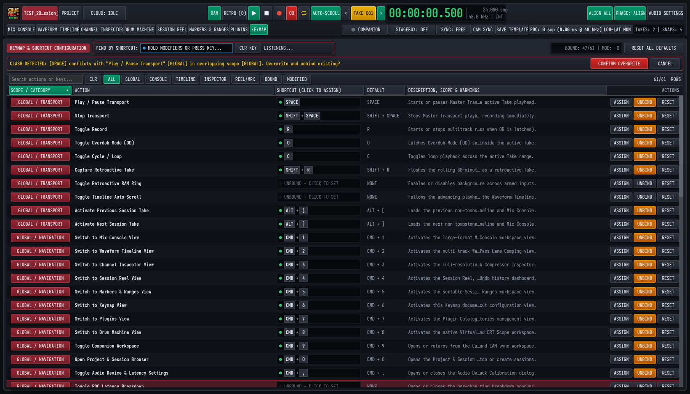
8.3.1 Searching by Action Name, Reverse-Searching by Key Chord & Filtering by Scope#
The KEYMAP view provides three complementary ways to inspect bindings across all 62 studio actions:
- Text Search (
Search actions or keys...): Type any action name (Phase Align,Snapshot,Pass Lanes,Groovebox,Stagebox,Remote), action identifier (transport_record), scope name (MIX CONSOLE), or key chord (SHIFT + M,CMD + 1) into the left search box to filter the table in real time. ClickCLRto clear the text query. - Interactive Reverse-Search by Shortcut (
FIND BY SHORTCUT:): Click inside theCLICK & PRESS KEYS TO FIND...capture well in the top header bar. Its status indicator switches fromIDLEtoLISTENING...and the prompt changes toHOLD MODIFIERS OR PRESS KEY...:- Hold Modifier Keys (
MODS: [...]): Hold down any combination of modifiers (CMD/CTRL, OPT/ALT, SHIFT) without pressing a letter key to filter the table immediately to every action whose shortcut includes those held modifiers. - Press a Trigger Key (
EXACT: [...]): Press any non-modifier key (such as SPACE, R, or 1) to lock the complete key chord and isolate the exact action(s) bound to that shortcut across all scopes. - Clear Reverse Search (
CLR KEY): ClickCLR KEYbeside the capture box to clear the key filter and restore all 62 rows.
- Hold Modifier Keys (
- Scope & Status Quick-Filter Pills: Click any of the eight filter pills in the toolbar (
62/62 ROWS) to isolate a specific subset of actions (ALL,GLOBAL,CONSOLE,TIMELINE,INSPECTOR,REEL/MRK,BOUND,MODIFIED).
8.3.2 Recording Custom Shortcuts, Unbinding & Resetting Defaults#
Every row in the KEYMAP table includes an interactive SHORTCUT (CLICK TO ASSIGN) capture well and row action buttons on the far right:
- Enter Capture Mode (
ASSIGNor Click Capture Well): Click theASSIGNbutton on the target row, or click directly inside itsSHORTCUT (CLICK TO ASSIGN)box (UNBOUND - CLICK TO SET). The row's capture well highlights and promptsPRESS KEYS, THEN APPLY, while the right-hand action column switches toAPPLY,CANCEL, andUNBIND. - Press Your Desired Key Combination: Hold any desired modifier keys (CMD/CTRL, OPT/ALT, SHIFT) and press a character key (
A..Z,0..9,[,],-,=,,,.), function key (F1..F12), or named navigation key (SPACE, ENTER, TAB, BACKSPACE, DELETE, HOME, END, PGUP, PGDN, UP, DOWN, LEFT, RIGHT). Shifted punctuation symbols (such as{or+) are automatically normalized to their canonical physical base key (SHIFT + [ or SHIFT + =) for consistent cross-platform matching. - Commit the Binding (
APPLY): ClickAPPLYto validate and save the captured key chord, or clickCANCEL(or click outside the capture well) to exit without changing the shortcut. - Unbind or Reset Individual Actions (
UNBIND/RESET): ClickUNBINDon any row to clear its shortcut toUNBOUND, or clickRESETto restore that single action to its factory default binding. - Restore Factory Defaults Across the Entire Studio (
RESET ALL DEFAULTS): ClickRESET ALL DEFAULTSat the top right of theKEYMAPheader to restore all 61 actions to their original factory keybindings in one step.
8.3.3 Live Scope Conflict Detection, Shared Non-Conflicting Scopes & OS Warnings#
When you assign a custom shortcut, Cave Recorder validates the key chord against two safety layers before writing to disk:
- Scope Clash Detection (
CLASH DETECTEDConfirmation Banner):- Overlapping Scopes (Blocked Without Confirmation): Because
GLOBALshortcuts are active across every workspace view, assigning the same key chord to twoGLOBALactions, to two actions in the same workspace view, or to aGLOBALaction and a workspace view action creates an ambiguous collision. When you clickAPPLYon a colliding chord, Cave Recorder pauses and displays the amber Clash Detection Banner at the top of theKEYMAPview (CLASH DETECTED: [SPACE] conflicts with "Play / Pause Transport" (GLOBAL) in overlapping scope [GLOBAL]. Overwrite and unbind existing?). ClickCONFIRM OVERWRITEto assign the shortcut and automatically unbind the conflicting action, or clickCANCELto keep your existing bindings untouched. - Non-Conflicting Sibling Views (Allowed & Highlighted in Green): Because only one workspace view tab is visible at a time, sibling view scopes (
MIX CONSOLE,WAVEFORM TIMELINE,CHANNEL INSPECTOR,SESSION REEL, andMARKERS & RANGES) never conflict with each other, andPROJECT MODALonly runs while the modal browser is open. When two actions in separate views share the same key (such as E bound toExpand All Track Pass LanesinWAVEFORM TIMELINEandToggle Pass Lanes on Inspected ChannelinCHANNEL INSPECTOR), theDESCRIPTION, SCOPE & WARNINGScolumn highlightsSHARED IN NON-CONFLICTING SCOPE: CHANNEL INSPECTORin emerald green.
- Overlapping Scopes (Blocked Without Confirmation): Because
- Operating System Shortcut Conflict Warnings (
OS WARN):- If you assign a key combination commonly intercepted by the host desktop environment, Cave Recorder displays an amber
OS WARN (<Platform>): <System Function>badge in the row description so you know the operating system may capture the key press first: - macOS Warnings: CMD + Q (Quit Application), CMD + H (Hide Window), CMD + M (Minimize Window), CMD + W (Close Window), CMD + SPACE (Spotlight Search), CMD + TAB (Application Switcher), CMD + SHIFT + 3/4/5 (System Screenshot), and CTRL + Arrow keys (Mission Control / Desktop Spaces).
- Windows & Linux Warnings: ALT + F4 (Close Window), ALT + TAB (Window Switcher), ALT + SPACE (Window Menu), CTRL + W / CTRL + Q (Close / Quit), CTRL + SHIFT + ESC (Task Manager), CTRL + ALT + T / DELETE (Terminal / Session Dialog), and SUPER (WIN) + L/D/E/R/I/TAB/SPACE/Arrow keys.
- If you assign a key combination commonly intercepted by the host desktop environment, Cave Recorder displays an amber
8.3.4 Persisting, Backing Up & Sharing Studio Keymap Profiles (keymap.json)#
Every change you make in the KEYMAP view is saved immediately to a human-readable JSON profile (keymap.json) inside your user configuration folder (stored alongside preferences.json and recent.json):
- macOS:
~/Library/Application Support/caverec/keymap.json - Linux:
$XDG_CONFIG_HOME/caverec/keymap.json(or~/.config/caverec/keymap.jsonwhenXDG_CONFIG_HOMEis unset) - Windows:
%APPDATA%\caverec\keymap.json(or%USERPROFILE%\AppData\Roaming\caverec\keymap.json)
{
"schema_version": 1,
"bindings": {
"console_trigger_group_phase_align": {
"modifiers": {
"command": false,
"control": false,
"alt": false,
"shift": true
},
"key": {
"kind": "character",
"value": "G"
}
}
}
}To transfer your custom studio keymap to a second rehearsal computer or back it up to version control:
- Copy
keymap.jsonfrom the source workstation's configuration directory into the target workstation'scaverecconfiguration directory while Cave Recorder is closed, and launchcaverec. - On startup, Cave Recorder automatically normalizes character symbols, maps
command: trueto CMD on macOS and CTRL on Windows and Linux, populates any omitted actions with their factory defaults, and sanitizes the table so no two overlapping scopes can ever load with a conflicting shortcut.
8.4 Command-Line & Automated Studio Verification Reference#
In addition to launching Cave Recorder from your desktop application menu, studio engineers and system integrators can run caverec from a terminal shell to execute automated 18-channel signal-path verification or generate offscreen workspace captures for studio documentation and rig sign-off.
# 1. Standard interactive desktop studio launch
caverec
# 2. Run the 18-channel studio self-test & signal-path verification
caverec --self-test
caverec --stress-test
# 3. Render all 25 workspace & modal inspection presets (29 manual PNGs including crops)
caverec --screenshot-dir .tmp/caverec-shots
# 4. Render a single workspace preset at custom dimensions
caverec --screenshot-dir .tmp/caverec-shots \
--screenshot-view console-18ch \
--screenshot-size 1680x9608.4.1 Command-Line Arguments Reference#
| Command-Line Flag | Arguments / Values | Studio Function |
|---|---|---|
| (No arguments) | None | Launches the interactive Cave Recorder desktop workstation (1680x960 default window), loads user keybindings (keymap.json) and studio preferences (preferences.json), and opens the PROJECT browser modal to select or create a Session. |
--self-test --stress-test |
None | Runs the automated 18-Channel Studio Self-Test & Hardware Verification Suite and exits with code 0 on pass or 1 on failure. Verifies 18-in/20-out routing (CH01..CH08 analog preamps, CH09..CH10 S/PDIF, CH11..CH18 ADAT optical), 48.0 kHz / 44.1 kHz sample-rate clock switching, multi-mic drum phase alignment, 30-minute retroactive memory capture, simultaneous 14-track playback + 4-track overdub pass recording, and offline mixdown and stem rendering. |
--screenshot-dir |
<dir> (Output directory path) |
Renders offscreen PNG captures of Cave Recorder's workspace views and detail regions into <dir> for studio documentation and visual rig inspection without opening an interactive desktop window. |
--screenshot-view |
<slug|all> (requires --screenshot-dir) |
Selects which workspace preset to render (32 total presets): all (default), project-modal, project-modal-forms, console, console-18ch, console-routing, console-studio-coach, timeline, timeline-expanded, inspector-track, inspector-subgroup, session-reel, session-reel-modals, markers-ranges, keymap, plugins, device-settings, top-deck-popovers, drum-sequencer, drum-synth-scope, drum-sampler, drum-arranger, companion, companion-qr-enlarged, companion-pending-approval, osc-stagebox-output, osc-stagebox-hw-out, stagebox-mixer-console, stagebox-mixer-sof, stagebox-mixer-dsp, stagebox-fx-rack, stagebox-routing-matrix, or stagebox-scenes-setup. |
--screenshot-size |
<WxH> (320x240 to 4096x4096, default 1680x960) |
Sets the logical viewport resolution used when rendering offscreen workspace captures with --screenshot-dir. Both space-separated (--screenshot-size 1920x1080) and =-separated (--screenshot-size=1920x1080) syntax are supported. |
8.4.2 Studio Environment Variables#
Cave Recorder also recognizes the following optional environment variables on startup:
| Environment Variable | Platform / Scope | Studio Function |
|---|---|---|
CLAP_PATH |
macOS, Windows, Linux | Colon-separated (macOS/Linux) or semicolon-separated (Windows) list of additional directories to scan on startup for third-party .clap audio plugins alongside the standard system plugin folders (Section 5.7.1). |
CAVEREC_GPU_POWER |
Linux (low, igpu, low_power, low-power or high, dgpu, high_performance, high-performance) |
Selects the graphics adapter power preference on multi-GPU Linux studio workstations. Low-power values (low, igpu, low_power, low-power, the default) select integrated low-noise graphics so cooling fans never bleed into live room microphones, while high-performance values (high, dgpu, high_performance, high-performance) select a discrete GPU. |
CAVEREC_GDRIVE_CLIENT_ID |
macOS, Windows, Linux | Optional Google OAuth 2.0 Desktop Client ID used by Check / Connect Drive for the Google account browser sign-in flow when gdrive_oauth_client.json is not present in the user configuration directory (Section 7.5.1). |
CAVEREC_GDRIVE_CLIENT_SECRET |
macOS, Windows, Linux | Optional Google OAuth 2.0 Client Secret paired with CAVEREC_GDRIVE_CLIENT_ID when required by a custom Desktop OAuth client credential. |
CAVEREC_GDRIVE_ACCESS_TOKEN |
macOS, Windows, Linux | Optional OAuth 2.0 access token override for unattended Google Drive cloud synchronization in automated studio backup scripts when interactive browser sign-in is not available. |
CAVEREC_ENCDR_DAEMON_BIN |
macOS, Windows, Linux | Optional absolute path to a custom-built encdr-daemon Studio Pad Surface helper executable, overriding the default sibling extras/encdr-daemon/encdr-daemon lookup (Section 2.8.2). |
8.5 Studio Pad Surface Hardware Control & Shortcut Reference#
All shortcuts below apply to a connected Dual-Screen Pad Controller (Section 2.8). Touching any of the 8 display encoders (E1..E8) brackets continuous adjustments into a single coalesced Undo gesture, and holding SHIFT while turning any encoder engages 10x fine precision.
8.5.1 Global Surface & Personality Switching Shortcuts#
| Hardware Combination | Scope | Studio Action |
|---|---|---|
SHIFT + CHANNEL (MIDI) |
Global | Toggles instantaneously between [DRUM STUDIO] and [CONSOLE DAW REMOTE] (tearing down transient holds cleanly). |
SHIFT + PLUG-IN (INSTANCE) |
Global | Opens the dual-screen Surface Picker (F1: [DRUM STUDIO], F8: [CONSOLE DAW REMOTE], BACK: cancel). |
Hold Modifier + F1 (PIN) |
Global | Pins or unpins a held momentary modifier (SELECT, MUTE, SOLO, REC, ALL, NOTE REPEAT) so you can operate one-handed. |
CLEAR + Touch E1..E8 |
Global | Resets the touched encoder parameter immediately to its unity or factory default value (with Undo). |
UNDO / REDO |
Global | Steps Cave Recorder's reversible session Undo and Redo history directly from dedicated hardware buttons. |
LEVEL Push (in MST / CUE) |
Global | Toggles Control Room -20 dB DIM attenuation. |
8.5.2 [DRUM STUDIO] Performance, Sequencer & Edit Shortcuts#
| Hardware Combination | Mode / View | Studio Action |
|---|---|---|
PAD MODE |
[DRUM STUDIO] |
16 velocity- and pressure-sensitive drum/bass pads (F2: FIXED VEL, F3: 16 VEL, F4: AUTO-FOCUS). |
SHIFT + PAD MODE (KEYBOARD) |
[DRUM STUDIO] |
16-pad chromatic or folded-scale melodic keyboard for ANALOG BASS and pitched Modal Impact (E1: SCALE, E2/F5 layout, SHIFT + Pads 15/16 Octave -/+, SHIFT + Pads 13/14 Semitone -/+). |
STEP MODE + Pads 1..16 |
[DRUM STUDIO] |
Bottom-to-top 16-step sequencer grid (< / > or NAVIGATE + Pads 1..4 selects pages 01..64, auto-suspending F8: FOLLOW, and F3 toggles 8-voice matrix vs. 16-voice radar). Turn bare E1..E8 to edit step Velocity, Gate, Nudge, Note, Tie/Slide, Flam/Ratchet, Condition, and Subdivision. |
Hold Step Pad + Turn E1..E8 |
STEP MODE |
Writes per-step macro Parameter Locks onto the held step(s). |
ERASE + Touch/Turn E1..E8 |
STEP MODE |
Clears an individual Parameter Lock cleanly without deleting the step trigger. |
NOTE REPEAT / SHIFT + NOTE REPEAT |
PAD MODE / KEYBOARD |
Sample-accurate per-pad Live Pad Repeat (pressure > 85% triggers Accent) or ANALOG BASS melodic ARP. |
ALL ([CTRL ALL]) + Turn E1..E8 |
[DRUM STUDIO] |
Fans relative macro sweeps across all unmuted drum voices simultaneously (hold ALL + F1 to pin). |
ALL + NOTE REPEAT |
[DRUM STUDIO] |
Maps Pads 1..8 to momentary phase-locked Slip Beat-Repeat rollers (1/4, 1/8, 1/8T, 1/16, 1/16T, 1/32, REV GRAIN, TAPE STOP). |
REC |
[DRUM STUDIO] |
Arms Pattern Overdub ([● PAT OVR]) ONLY (never starts or stops a Disk Take). |
PLAY (while Disk Take active) |
[DRUM STUDIO] |
Toggles live Drum Sequencer Dropout / Re-Entry without stopping the multitrack Disk Take. |
SHIFT + MUTE (CHOKE) |
[DRUM STUDIO] |
Immediately silences all ringing drum and bass voices (Choke All Voices). |
ERASE + Hold Pad(s) (playing) |
[DRUM STUDIO] |
Continuously wipes passing sequencer steps for the held voice pads while rolling. |
QUANTIZE / SHIFT + QUANTIZE |
[DRUM STUDIO] |
Snaps active pattern micro-nudge to 0% (hard quantize) or halves micro-nudge offsets (50% groove tightening). |
NOTE + Jog / NUDGE + Jog |
[DRUM STUDIO] |
Transposes selected steps ±1 semitone (SHIFT ±12) or shifts steps ±1 step (SHIFT ±1% micro-nudge). |
GROUPS A..D / E..H |
[DRUM STUDIO] |
PATTERN + A..D selects Pattern Banks A..D (PATTERN + F4 doubles length 16 -> 32 -> 64), and E..H recall Morph Slots M1..M4 (SHIFT + E..H captures). In SAMPLING (SLICE-LOCK), GROUPS A..D banks slices 1..64. |
SAMPLING (bare tap) |
[DRUM STUDIO] |
Opens STUDIO SAMPLER (F1: RECORD, F2: EDIT, F3: SLICE, F4: ZONE, F5/F6 TRIM HIST/COMMIT, F7: +SEQ, F8: APPLY, E5/E6 split zero-crossing zoom, live pad-tap chop on unlit pads). |
SHIFT + SAMPLING / CHANNEL -> F3 |
[DRUM STUDIO] |
Opens STEM & SYNC (16-voice Pre-Tape Stem Breakout patchbay and Looper Sync controls). |
8.5.3 [CONSOLE DAW REMOTE] Mixing, Stagebox, 16-Pad Timeline & Transport Shortcuts#
| Hardware Combination | Mode / View | Studio Action |
|---|---|---|
GROUPS A..H |
[CONSOLE DAW REMOTE] |
Banks 8 encoders across Tracks 1..32 (A..D), Subgroups 1..16 (E..F), Aux Returns 1..8 (G), and Master & Control Room (H). |
MIX (Tap again to flip) |
[CONSOLE DAW REMOTE] |
Flips between MAIN FADERS (E1..E8 Faders, SHIFT + E1..E8 Pan) and STAGEBOX PREAMPS & +48V (E1..E8 Copper HW Preamp Gain / Cyan Digital Trim). |
Hold F1..F8 (600 ms) / SHIFT + F1..F8 |
STAGEBOX PREAMPS |
Guarded 600 ms press-and-hold toggle for +48V Phantom Power (short taps flash HOLD 0.6s) or instant Polarity Invert (Ø). |
CHANNEL -> F1: AUX SENDS |
[CONSOLE DAW REMOTE] |
Engages dual-screen AUX SENDS (AUX 1..4 Left E1..E4, AUX 5..8 Right E5..E8, F2: TAP:POST) with amber frame. Also exposes CAPTURE HW and PUSH GAINS stagebox reconciliation. |
PLUG-IN -> F1..F8 / < > |
[CONSOLE DAW REMOTE] |
Inspects focused strip PROCESSORs (12-Band EQ curve, Compressor transfer plot, rack modules) and PLUGIN [CLAP] / PLUGIN [AU] pages (F8: OPEN GUI). |
SCENE + Pads 1..16 |
[CONSOLE DAW REMOTE] |
16 Ranges & Loop Ranges: Tap lit pad to select (SHIFT + Tap engages Cycle Loop), tap unlit pad twice live (RANGE START / RANGE END), hold lit pad to trim E1/E2 + F3: ZOOM RANGE + F4: NEW TAKE + F5: -> SAMPLER (Dry Pass) + F6: POST-FX -> SMP, CLEAR + Pad to delete custom Range. |
PAD MODE + Pads 1..16 |
[CONSOLE DAW REMOTE] |
16 Cue Markers: Tap lit cyan pad to jump (FUNC < / > jumps prev/next), tap unlit pad (including during live Take recording) to drop + MARKER at Playhead. |
PATTERN + Pads 1..16 |
[CONSOLE DAW REMOTE] |
Pass Lane Comping: Clicklessly auditions and promotes PASS 01 vs. OD 02..16 on the focused track. |
Hold SELECT / MUTE / SOLO / REC + Pads 1..16 |
[CONSOLE DAW REMOTE] |
Momentary guarded channel focus, mute, solo, or record arm (Hold + F1 to pin until re-tapped), keeping bare pad taps safe from accidental arm/mute changes. |
REC (bare tap) |
[CONSOLE DAW REMOTE] |
Starts a new t = 0 Session Take (or track Overdub Pass when BROWSE -> F8: OVERDUB / E8: REC MODE is enabled). |
F8: END TAKE / SHIFT + PLAY / SHIFT + REC |
Active Disk Take |
Intentionally stops and commits an active Disk Take (bypassing the Active Take Stop Guard, which locks bare PLAY, bare REC, and the Jog Wheel). |
SHIFT + ERASE (Tap twice) |
Active Disk Take |
2-step armed confirmation to Cancel & Discard an active false-start Take cleanly. |
SAMPLING |
[CONSOLE DAW REMOTE] |
Opens CONSOLE CAPTURE & RESAMPLE (F1: RESAMPLE STRIP, F2: RESAMPLE BUS, F3: RANGE -> SAMPLER, and F7: RETRO 30M to commit the rolling 30-minute retroactive memory to a new Session Take). |
BROWSE (SNAPSHOTS & TAKES) |
[CONSOLE DAW REMOTE] |
Left Screen switches active Takes directly (E1) or via Jog + Push and cycles Pass Lanes (E2), while Right Screen manages Snapshot capture (F5), audition (F6), idle F7: RETRO 30M / F8: OVERDUB, and audition F7: A/B LIVE / F8: LIVE MIX. |
Jog Wheel (EDIT mode, idle) |
[CONSOLE DAW REMOTE] |
Smooth 60 Hz audio timeline Playhead scrubbing (FUNC < / > jumps Cue Markers). |
8.6 Studio CLI (caverec-cli), Headless Engine (caverec-headless), Probes, Python Client & Studio Skills#
Direct desktop distributions of Cave Recorder include the lightweight caverec-cli command-line client (sub-5 ms cold startup) and the caverec-headless offline studio daemon alongside the zero-dependency Python client extras/python/caverec.py. Together they expose 100% live-versus-offline parity: every console, processor, Groovebox, Studio Sampler, Stagebox, metering, audio probing, and export command works identically against a running desktop Cave Recorder window (--live) or a closed session folder running offline at 20x to 100x real time (--offline --session <dir>).
8.6.1 Installation, Authentication & Global Flags#
- One-Click Setup from Desktop: Open
AUDIO SETTINGS(CMD/CTRL + ,) and clickINSTALL CAVEREC-CLI & STUDIO SKILLS...underCLI & STUDIO SKILLS (CAVEREC-CLI)(or runcaverec-cli setup-pathfollowed bycaverec-cli skills installin a terminal). - Local Loopback Security: Running instances publish an owner-only endpoint file (
<config_dir>/run/instances/<role>-<pid>.json,0600permissions on macOS/Linux and owner-only ACL on Windows) bound strictly to127.0.0.1with a 256-bit bearer token. Offline invocations automatically launch and reuse a warmcaverec-headless serve --idle-timeout-secs 300daemon (or use--oneshotfor single-command teardown). Note that the Mac App Store edition omits bundled CLI executables from its.pkgarchive, while still accepting loopback127.0.0.1connections from an externally installedcaverec-cli. - Global Flags:
--json,--ndjson,--live,--offline,--session <dir>,--instance <id|pid>,--dry-run, and--print-request-json.
8.6.2 Complete 30-Command Group Reference#
| Command Group | Primary Subcommands | Studio Capability |
|---|---|---|
instances |
list, ping, attach, stop-headless |
Discovers live desktop and headless Cave Recorder instances and verifies RPC health. |
session |
info, create, open, save, projects, template, retro-capture, cloud-sync |
Creates, opens, saves, templates, rescues 30-minute retroactive Takes, and syncs sessions. |
take / pass |
list, create, select, rename, tag, split, tombstone, restore, mute, offset, comp-set, range-gain, patch-src |
Manages Takes and Pass Lanes, overdub offsets, range comping, clip gain, and source patching. |
transport |
status, play, stop, pause, rec-start, rec-stop, rec-cancel, seek, loop |
Controls Master Transport playback, recording, seeking, and Cycle Loop. |
strip / bus |
list, add-track, rm-track, rename, fader, pan, trim, phase-delay (µs), polarity, mute, solo, arm, input-mon, route, send, phase-role, calibrate-trims, add-subgroup, add-aux, monitor |
Configures all 0..32 tracks, 0..16 subgroups, 0..8 aux returns, trim calibration, and Control Room monitoring. |
rack / plugin |
list, insert, clear, bypass, reorder, param, eq-band, sidechain, scan, catalog, param-list, param-set, state-save, state-load |
Controls all 19 built-in processor kinds across 8 slots plus external CLAP and Audio Unit plugins. |
marker / range |
list, add, update, move, remove |
Creates, queries, edits, and deletes Take cue markers and bounded ranges. |
phase / amp / surgery |
analyze, apply, network-set, reset, model, nam-attach, cab-attach, excite-synth, nam-train, declip, hum-cancel, spot-heal, phrase-patch |
Runs multi-mic phase alignment, Amp Rig / .nam capture & training, and non-destructive audio restoration. |
drum / bass / sampler |
status, kit, pattern, scene, step, euclid, voice, macro, swing, sync, stem-tap, bank, load, import-range, resample-tap, slice-auto, slice-set, process, delete |
Programs Groovebox drums, ANALOG BASS notes/ties, and Studio Sampler SuperFlux slicing, resampling, and commits. |
stagebox |
status, connect, preamp, phantom-48v --confirm-48v, mix, sof, dsp, geq, fx, routing, preset, scene, hw-snap |
Controls X-Air/X32 hardware stageboxes with mandatory --confirm-48v phantom safety guard. |
history / snapshot / state |
undo, redo, list, save, recall, delete, diff, dump [--only-non-default] [--tracks] [--domain], summary, get |
Queries compact state dumps and manages Undo/Redo history and Console Snapshots. |
meter / probe |
snapshot, capture, points |
Runs sample-clocked metering and multi-point (K <= 4) audio probing across the signal graph. |
bounce / export |
mixdown, stems, interchange |
Renders offline .flac/.mp3/.wav Mixdowns, Stem Bounces, and external workstation exports. |
topic / schema |
list, <topic-slug>, processors, processor <slug>, stagebox-fx, commands, meters, probes |
Prints machine-readable schemas and parameter metadata for every processor, FX slot, and command. |
run / batch / stream / bridge |
--atomic-undo "<label>", --dry-run, --file, --in-fifo, --out-fifo, --out-jsonl, --create-fifos |
Executes atomic multi-step batches, persistent stdin/stdout NDJSON streams, or macOS/Linux POSIX FIFO bridges. |
skills / setup-path |
list, show, install [--target agy|claude|gemini|codex|cursor|--dir <path>] |
Inspects and installs the 6 embedded Studio Engineering Skills and links caverec-cli into PATH. |
8.6.3 Sample-Clocked Meter & Probe Pipeline (Select -> Filter -> Group/Aggregate)#
Both meter capture and probe capture run sample-locked across any Take span (--range) and support up to 4 simultaneous graph probe points (raw_in, post_anchor, pre_slot:<0..7|slug>, post_slot:<0..7|slug>, sc_key:<0..7|slug>, post_rack, post_fader, post_pdc, aux_send:<0..7>, master_pre_mon, monitor_out, hw_adc:<0..17>):
- Select & Pre-Condition: Filter by
--channel(left,right,mid,side,mono_sum),--band-filter(lowpass,highpass,bandpass,k_weight), and--diff-mode(raw_diff,gain_matched_null) for exact A/B transfer checks. - Filter (
--where): Restrict analysis to matching frames or events via predicates onrms_dbfs,peak_dbfs,true_peak_dbtp,lufs_m,lufs_s,gr_db,phase_corr,abs_sample,clipped,gate_open,sample_clock, ortransport_sample. - Group & Aggregate (
--group-by/--agg): Aggregate overwhole,bucket:<stride>, orcontiguous_eventspans usingbasic,dynamics,spectral,forensic, ortransferprofiles (reportingtop_peaks_hz,fundamental_hz,gain_delta_db,crest_delta_db,gcc_phat_lag_us, andtransfer_curve_31band_db), outputting compactsummary-json(default), 32-bit float Broadcast Wavewav, binaryf32le, or boundedsamples-json.
8.6.4 Zero-Dependency Python Client (extras/python/caverec.py) & 6 Embedded Studio Skills#
Every direct distribution ships extras/python/caverec.py (Python 3.10+, standard library only), providing sub-0.2 ms round-trip control over a persistent caverec-cli stream --ndjson session:
from caverec import CaveRecClient
with CaveRecClient.connect_live() as studio:
summary = studio.state_dump(only_non_default=True)
with studio.atomic_batch("Vocal polish"):
studio.call("strip", "fader", "--track", "17", "--db", "-1.5")
studio.call("rack", "eq-band", "--track", "17", "--band", "1", "--type", "hpf", "--freq", "90")
metrics = studio.capture_meters(take=1, meters=["lufs", "true_peak", "crest", "phase"])Cave Recorder also embeds 6 Studio Engineering Skills (caverec-cli skills list / caverec-cli skills install) covering every studio discipline: caverec-session-assistant, caverec-tracking-and-restoration, caverec-mix-console-engineer, caverec-groove-and-sampler-producer, caverec-stagebox-live-engineer, and caverec-mastering-and-delivery. Note that caverec-headless also preserves all legacy hardware verification flags (--list-devices, --synthetic, --self-test, --device-id, --channels, --sample-rate, --duration-secs, --preroll-secs, --output-dir).
Studio Glossary & Alphabetical Index
Canonical definitions of Cave Recorder terminology, Take vs. Pass disambiguation, Plain Studio Language conventions, Studio Coach, Stagebox Mixer (MY MONITOR, FULL MIXER, MIXER LOCK, SENDS ON FADERS, Virtual Soundcheck), MIDI Sync, Pre-Tape Virtual Instrument, Groovebox and Studio Sampler, Hardware Direct Monitoring, Studio Pad Surface, multi-camera video, Cave Companion mobile (Sample Studio Session and Bonjour discovery), caverec-cli and Studio Engineering Skills, and an alphabetical subject index.
This chapter defines the canonical studio terminology used across every console faceplate, timeline lane, session file, and workflow in Cave Recorder (caverec), followed by the complete Alphabetical Index of the manual.
9.1 Take vs. Pass Disambiguation (Quick Guide)#
Traditional desktop digital audio workstations use the word "Take" for both an entire song recording and an overdubbed layer on a single track, causing constant confusion during band rehearsals. Cave Recorder enforces a strict four-tier studio hierarchy where Session-level Takes and Track-level Passes are completely distinct concepts:
Project (Band / Artist Workspace, e.g., GF)
└── Session (Rehearsal Night or Tracking Day, e.g., GF_20261020-1)
└── Take (Complete Song Run-Through Starting at 00:00:00.000)
└── Pass (Single-Track Stem Inside That Take: PASS 01 / OD 02)| Studio Term & Level | UI Badge & Location | On-Disk Pattern | How It Is Created & Used |
|---|---|---|---|
| Project (Level 1: Band or venture) | PROJECT modal (CMD/CTRL + O) |
<LibraryRoot>/<ProjectTag>/ |
Top-level band folder containing all Sessions plus a unified _Mixes/ folder for rapid listening and cloud sharing. |
| Session (Level 2: Rehearsal or studio day) | Session pill in Top Deck & TAKES (CMD/CTRL + 5) |
<ProjectTag>/<SessionID>_<Tag>/ |
Defines the room's 18-channel microphone patch, strip names, bus routing, and console processing shared across all Takes recorded that day. |
Take (Level 3: Complete song or jam at t = 0) |
< TAKE 001 > in Top Deck & TAKES CATALOG |
Take<NNN>_<Stamp>[_<TakeTag>]/ |
Created whenever you press Record (R) with OVERDUB off. Every Take starts at its own 00:00:00.000 origin and is never stacked on top of another Take. |
| Base Pass (Level 4A: Initial track stem) | PASS 01 (BASE PASS) on strip & Pass Lane |
rec/*_<CC>-<Name>_Rec001_<Stamp>.wav |
The initial 32-bit float pre-fader mono stem captured on a record-armed channel strip when the Take was first recorded from 00:00:00.000. |
| Overdub Pass (Level 4B: Layered track stem) | OD 02, OD 03 (OVERDUB) on strip & Pass Lane |
rec/*_<CC>-<Name>_Rec<MMM>-OD_<Stamp>.wav |
A subsequent track-level recording captured inside the currently active Take when OVERDUB (O) is latched on the Top Deck. |
| Pass Lanes (Track sub-lanes inside a Take) | PASSES (E / SHIFT + E) in TIMELINE |
Stored in *_Take<NNN>_take.json |
Expandable vertical sub-lanes under a track displaying its PASS 01 Base Pass and OD 02..N Overdub Passes for one-click comp selection (Use PASS 01 / ★ OD 02). |
9.2 Studio Glossary#
The alphabetical definitions below cover every core studio concept, signal-processing stage, console switch, and workflow term in Cave Recorder, with direct links to the chapters where each topic is covered in depth.
12-Band Parametric EQ (2:12B EQ)#
Zero-latency 12-band precision state-variable parametric equalizer (B1 through B12) available in the 8-slot processor rack of every Input Track (CH01..CH32) and Subgroup Bus (SUB 1..SUB 16). Each band provides -24.0 dB to +24.0 dB gain across 20 Hz to 20 kHz, variable Q (0.10 to 18.00), and seven selectable filter shapes: peaking Bell (BELL), Low Shelf (LSHF), High Shelf (HSHF), High-Pass Filter (HPF), Low-Pass Filter (LPF), surgical Notch (NTCH), and Spectral Tilt (TILT). See Section 5.3.
30-Minute Retroactive Capture (● RETRO / SAVE RETRO)#
Continuous background audio capture system that retains the most recent 30 minutes of live 32-bit floating-point audio across all record-armed (R) input channels in system memory whenever ● RETRO is lit in the Top Transport Deck. Clicking SAVE RETRO (or pressing SHIFT + R) flushes the rolling 30-minute memory to disk as a new numbered Session Take (Take<NNN>) so spontaneous jams played while the transport was stopped are never lost. See Section 1.1.2, Section 2.2.3, and Section 3.2.
8-Slot Processor Rack#
Multi-instance reorderable eight-slot insert processing chain (Slots 1..8) on every Input Track and Subgroup Bus. Any built-in zero-latency studio processor (2:12B EQ, 3:VCA CMP, 4:AUX SND movable send tap, Amp Rig, standalone Cabinet & IR Loader, Tape Saturation, Context-Aware Gate, De-Esser, Vocal Rider, Transient Shaper, Ladder Filter, Modulation, Micro-Pitch Doubler, Gain Utility, or Signal Repair) or third-party .clap and macOS Audio Unit (AUv3 / AUv2) plugin can be inserted in one or more slots across the same strip with independent per-slot state and telemetry. Clicking any slot opens the inline SLOT N PROCESSOR picker to swap processor types, assign an installed plugin, open a floating PLUGIN GUI window, or preserve an uninstalled plugin as a non-destructive Ghost Slot (! MISSING). Slots can be reordered live during playback by dragging their :: handle or clicking ^ / v with clickless crossfading, or bypassed individually via B. See Section 4.1, Section 5.1.3, and Section 5.7.3.
Active Comp Lane (ACTIVE COMP LANE)#
The single Pass Lane currently selected for disk playback on a track inside the active Take. Highlighted in amber-copper waveform color with a green star badge (★ PASS 01 or ★ OD 02) in WAVEFORM TIMELINE (CMD/CTRL + 2) and reflected on the channel strip's gold pass indicator badge on the Mix Console. See Section 3.4 and Section 6.2.2.
Amp Dynamic Gate (AMP DYNAMIC)#
High-gain guitar and bass variant of the Context-Aware 3-Variant Noise Gate engineered for stoner rock, doom, psychedelic rock, and tube/fuzz rigs. Combines an autocorrelation pitch periodicity detector with a spectral flatness detector so whisper-quiet -34 dBFS clean fingerpicked notes (Whisper Clean Lock) and intentional 1.5 s to 5.0 s (default 2.5 s) harmonic cabinet feedback swells (Feedback Bloom Lock) remain wide open, while 50/60 Hz hum and fuzz hiss clamp shut in 15 ms to 40 ms (default 18 ms to 22 ms) on a palm-mute stop (Palm-Mute Clamp) along a click-free S-curve with split-band HF Tame de-hissing. See Section 5.4.5.
Amp Rig & Neural Amp Capture ([CIR] / [NAM] / HEAD ON/BYP / CAP)#
Zero-latency guitar and bass amplifier, cabinet, and neural capture insert processor available in any of the 8 rack slots on Input Tracks and Subgroup Buses. Operates in either [CIR] Circuit Mode (modeling 8 vacuum-tube preamp and power-amp topologies with 2x / 4x anti-aliasing oversampling) or [NAM] Neural Capture Mode (running open .nam neural amplifier models alongside 8 modeled speaker cabinets and custom .wav/.nam linear impulse responses), with independent HEAD ON/BYP and CAB BYP switches for pairing an amplifier head with downstream stereo effects and a standalone Cabinet & IR Loader slot. Includes a guided 3-step Hardware Amp & Pedal Capture Wizard (CAP) supporting three training quality modes (Standard 150 training passes, Mastering up to 1,000 training passes with held-out validation checkpointing, adaptive step-size refinement, automatic convergence early stopping, and interactive STOP & KEEP BEST, and Turbo 60 training passes), live training and validation ESR metering (STUDIO < 1% ESR), and automatic replication into <SessionFolder>/models/ and <TakeFolder>/models/ for portable cloud sync. See Section 5.4.6.
Analog Bass Voice (ANALOG BASS / BAS)#
Fifth circuit archetype in Cave Recorder's native Virtual Analog Drum Machine & Melodic Groove Sequencer (Analog Violet badge BAS, BASS archetype keycap). Pairs an oversampled band-limited sawtooth-to-variable-width-pulse VCO and phase-locked -1 oct flip-flop sub / dual-VCO beat blend with a unified 4-pole filter morphing smoothly from an uncompensated transistor ladder (with a 24 Hz pedal-bass sub-coupling bump) to a passband-compensated OTA filter, pre-filter drive with VCA feedback, asymmetric post-filter multi-drive, and analog accent coupling. Exposes a contextual Bass Voice Setup Strip (ROOT, FINE ±100 ct, GLIDE 0..500 ms, G: SLIDE / ALWAYS, ENV: RETRG / LEGTO / GATE, and MIDI: CHRM / PAD chromatic keyboard routing), melodic [2D | NOTE | VEL] step-grid gestures with violet Tie Bridge Bars, Storage-CRT XY reticles (CUTOFF × RESONANCE and ENV MOD × DRIVE), and curated factory presets in ACID & FUNK (ACID SQUELCH), STUDIO ANALOG, and SOUL POCKET (FUNK POCKET). See Section 5.9.2.
Analog VCA Compressor (3:VCA CMP)#
Zero-latency voltage-controlled amplifier dynamics processor included in every Input Track and Subgroup Bus 8-slot rack. Provides adjustable Threshold (-60.0 dB to 0.0 dB), Ratio (1.0:1 to 20.0:1 with 2:1, 4:1, 8:1, and 20:1 presets), Attack (0.1 ms to 100.0 ms), Release (10.0 ms to 1000.0 ms), Makeup Gain (0.0 dB to +24.0 dB), a 90 Hz Sidechain High-Pass Filter (SC HPF, shortcut H in Channel Inspector), Stereo Link (LINK), New York parallel blend (MIX 50%), and a real-time Gain Reduction (GR) trace. See Section 5.4.
Async Job Status Bar (⟳ Job % ✕)#
Top-Deck background task progress and cancellation pill automatically shown whenever an offline Master BOUNCE, Take Export…, Print conversion, Take split, timeline audio surgery ([REPAIR CLIPPING], [SMOOTH OVER ARTIFACT]), Studio Sampler bank load or bounce, Plugin RESCAN, Cloud upload/download, or neural amp capture runs asynchronously off the 60 Hz interface thread. Protected by automatic session-switch safety guards and transactional rollback on disk or network interruption. Click ✕ to cancel a running job cleanly without disturbing audio playback. See Section 1.3.2.
Audio Settings Modal (AUDIO SETTINGS)#
Hardware configuration dialog opened via AUDIO SETTINGS in the Top Deck (CMD + , on macOS, CTRL + , on Windows and Linux). Selects the physical input and output audio interface, sample rate (44.1, 48.0, 88.2, or 96.0 kHz), hardware buffer size (32 to 2048 frames), checks macOS Microphone permission status, runs automated hardware impulse loopback latency calibration (Measure Latency), displays Dual-Screen Pad Controller USB diagnostics, and provides one-click installation of caverec-cli and the 6 embedded Studio Engineering Skills. See Section 2.2 and Section 2.3.
Audio Unit (AUv2 & AUv3 on macOS)#
Native macOS audio effect ('aufx'), music effect ('aumf'), and Music Device instrument ('aumu') plugins instantiated out-of-process by default for crash and sandbox isolation. In the Mac App Store edition, Audio Units are the exclusive third-party plugin format (PLUGINS hides .clap controls), while direct downloads from caverec.app host both .clap and Audio Unit plugins. See Section 2.1.4 and Section 5.7.
Aux Return (AUX 1 REVERB & AUX 2 TAPE DLY .. AUX 8)#
Up to eight dedicated, solo-safe stereo effect return strips (AUX 1 through AUX 8, dynamically added via + AUX) on the right side of the Mixer feeding the Master Bus. See Section 4.3.2 and Section 5.5.
Aux Send (RVB & DLY / PRE, EQ, POST)#
Per-channel and per-subgroup stereo send level controls (-inf to +12.0 dB) feeding AUX 1 REVERB (RVB) and AUX 2 TAPE DLY (DLY), paired with a 3-way pickoff tap selector: PRE (pre-insert and pre-fader), EQ (post-EQ and pre-fader), or POST (post-fader and post-mute). See Section 4.2.3.
Base Pass (Rec001 / PASS 01)#
The initial multitrack audio stem captured on a record-armed channel strip when a Session Take is originally recorded from 00:00:00.000 with OVERDUB turned off. Stored on disk in <TakeFolder>/rec/<SessionID>_Take<NNN>_<CC>-<TrackName>_Rec001_<Stamp>.wav and displayed as PASS 01 (BASE PASS) in the channel strip header and Pass Lanes. See Section 1.2 and Section 6.2.
Bonjour Studio Discovery (_caverec._udp)#
Zero-configuration local network advertising on macOS (_caverec._udp) paired with UDP studio discovery so iOS and Android Cave Companion apps automatically list available studio workstations on the PAIR screen with zero manual IP entry. See Section 7.6.1.
Cab IR (Speaker Cabinet & Linear Impulse Response Loader)#
Standalone reorderable speaker cabinet and linear impulse response (IR) convolution rack processor (SPEAKER CABINET & IR LOADER) available in any of the 8 rack slots on Input Tracks and Subgroup Buses. Provides 8 modeled physical speaker enclosures (2x12, 4x12 25, 4x12 75, 4x12 BR, 4x12 TG, 4x12 OV, 4x12 15, and 8x10), 5 studio microphone capsule models (DYN-C, DYN-L, RBN-8, CND-L, DYN-B), continuous MIC POS and ROOM AIR, an interactive MIC HPF × MIC LPF (20..500 Hz × 2..20 kHz) 2D XY spectral contour pad, and zero-allocation time-domain FIR convolution (EXT IR, up to 2048 taps per channel) for custom mono/stereo .wav and .nam ("Linear") impulse responses managed through the three-tier (Take -> Session -> Global) [CAB IR] browser. Enables placing stereo modulation, delay, or reverb rack slots between an Amp Rig head (CAB BYP enabled) and the speaker cabinet. See Section 5.4.7.
Camera Latency Calibration (3-Second 4-Pulse Optical & Acoustic Calibration)#
Automated 3-second (34,320-sample at 48.0 kHz) optical and acoustic calibration workflow (CALIBRATE CAMERA LATENCY) supporting three desktop modes (4-Pulse Vernier Flash for external cameras, Full-Window White Flash for built-in laptop webcams facing the room, and Interactive Clapper / Hand Clap -5..+5 frame-stepping inspector) plus Cave Companion mobile direct wireless-clock Rear LED Torch 4-Pulse Calibration (FLASH SYNC ▾ drawer, calibrating rolling-shutter and encoder delay directly against wireless studio-clock timestamps with no phone speaker or microphone audio loop). Stores calibrated camera latency per hardware device in session.json so every recorded .vididx sidecar index locks visually to the 48.0 kHz audio timeline. See Section 2.5.2 and Section 7.6.3.
Cave Companion Mobile App (Android .apk & iOS .ipa)#
Native mobile studio companion application (Android API 36 / 16 KB page-size compliant caverec-v0.7.1-android-arm64.apk and iOS caverec-v0.7.1-ios-arm64.ipa) paired with the desktop workstation via ● REMOTE (CMD/CTRL + 0), zero-configuration Bonjour (_caverec._udp) Wi-Fi discovery, 6-digit MATCH CODE approval banner, QR code, or 6-digit Studio PIN. Presents 8 root tabs on tablets (PAIR | TRANSPORT | MIXER | STAGEBOX | GROOVEBOX | CAMERA | TAKES | PLAYER) and 6 root tabs on phones (PAIR | TRANSPORT | CONSOLE [MIXER | GROOVEBOX | STAGEBOX] | CAMERA | TAKES | PLAYER), plus the offline SAMPLE STUDIO SESSION (UNPAIRED SAMPLE) powered by the real studio engine (including hydrated STAGEBOX MY MONITOR and FULL MIXER exploration), universal [M][S][R] Solo Gold strip controls, Stagebox MY MONITOR vs. PIN-lockable FULL MIXER (MIXER LOCK), and Android FULL immersive taskbar mode. See Section 3.7 and Section 7.6.
Channel Strip (CHANNEL STRIP)#
Full-screen single-channel, Subgroup Bus, Aux Return, and Master Bus processing workbench (CMD + 3 on macOS, CTRL + 3 on Windows and Linux). Combines a full-height channel strip on the left with the top Signal-Flow Chain & Layout Mode Bar (SPLIT, CHAIN LANE, EQ+CMP, and HIDE TL / SHOW TL), expanded 12-band Parametric EQ and Dual-Trace RTA, VCA/FET/Opto Compressor with scrolling Gain Reduction trace, full-height Large Processor Views with 2D XY Control Pads, multi-bus output routing popover, and collapsible Mini-Timeline. See Section 5.1.2.
CLAP Plugin (1:PLUGIN & [INST])#
Third-party audio effect or Pre-Tape Virtual Instrument plugin conforming to the open CLAP (Clever Audio Plug-in, .clap) standard in direct downloads across macOS, Windows, and Linux. Audio effects host in any of the eight reorderable rack slots (1:PLUGIN..8:PLUGIN) using format-agnostic Plugin rack chrome, while CLAP instruments host at the Pre-Tape Track Input Stage ([INST]). Supports out-of-process catalog indexing in PLUGINS (CMD/CTRL + 7), native floating windows (PLUGIN GUI), non-destructive Ghost Slot recovery, automatic PDC, and LOW-LATENCY bypass. See Section 5.7.
Cloud Sync (CLOUD)#
Built-in two-way Google Drive synchronization engine for backing up Sessions and collaborating across bandmates' computers (MIXES vs. FULL transfer tiers, AUTO-FLAC ON UPLOAD, AUTO-MP3 ON UPLOAD, federated + Link Remote Project…, exclusive session write-locking with persistent READ-ONLY PREVIEW banner, and Snapshot-backed conflict merging). See Section 7.5.
Console DAW Remote ([CONSOLE DAW REMOTE])#
Second operating personality of a connected Studio Pad Surface (● CONTROLLER), framed in 4 px Console Burgundy (or Warm Preamp Copper in STAGEBOX PREAMPS). Dedicates GROUPS A..H to 8-channel strip banking (Tracks 1..32, Subgroups 1..16, Aux Returns 1..8, Master), maps MIX to 8-channel [M][S][R] Solo Gold faders and guarded 600 ms +48V Stagebox preamps, maps CHANNEL -> F1: AUX SENDS to dual-screen AUX 1..8 encoders, maps PLUG-IN to built-in Processor curves and hosted Plugin (CLAP/AU) pages, maps the 16 pads to SCENE Ranges, PAD MODE Cue Markers, and PATTERN Pass Lane comping, maps SAMPLING to CONSOLE CAPTURE & RESAMPLE, and exposes guarded Disk Take recording with the Active Take Stop Guard. See Section 4.5 and Section 8.5.3.
Control Room Monitor Bar (MONITOR: & AUTO LEVEL)#
Speaker-check and loudness-matched audition strip wired strictly downstream of the Master Bus 2-TRK PRINT live stereo Print tap and offline BOUNCE engine. Includes 4-band Linkwitz-Riley (24 dB/oct) frequency isolation buttons (SUB < 90 Hz, LOW 90-350 Hz, MID 350 Hz - 3.5 kHz, HIGH > 3.5 kHz), unity-gain MONO fold-down, equal-power STEREO DIFF ((L - R) × 0.7071) side difference solo, DIM -20 speaker attenuation, and AUTO LEVEL loudness-matched processor/rack bypass. See Section 4.3.4.
Cycle Loop (⇄)#
Master Transport mode (C or clicking ⇄ in the Top Deck) that loops playback or overdub recording continuously between the START and END boundaries of the active Take Range (R001, R003, ...). See Section 3.4 and Section 6.3.2.
Drum Bleed Gate (DRUM BLEED)#
Percussion-focused variant of the Context-Aware 3-Variant Noise Gate designed to isolate rack and floor toms from loud snare and cymbal spill. Combines a resonant fundamental sidechain filter (Q = 4.0) with one-click [LRN] pitch auto-detection (55 Hz to 350 Hz, default 110 Hz), differential snare/cymbal spill rejection (E_key - α * E_ref), 1.5 ms lookahead with < 0.25 ms attack, and an envelope-driven dynamic decay low-pass filter (20 kHz sweeping down to an adjustable 250 Hz to 800 Hz cutoff, default 380 Hz) that removes hi-hat wash during tom ring-outs. See Section 5.4.5.
Drum Stem Breakout (STEM)#
Individual voice multi-out routing option inside the native Virtual Analog Drum Machine that removes a chosen drum voice (such as Kick, Snare, or Clap) from the internal Drum Master Glue Bus by default (preventing comb filtering) and routes its stereo output directly into a dedicated Mix Console channel strip at zero added latency for independent console EQ, compression, Aux 1..8 Reverb/Delay sends, raw .wav Pass recording, and 30-minute RETRO capture. See Section 5.9.1.
Drum Studio ([DRUM STUDIO] / PAD:DRUM)#
Primary instrument operating personality of a connected Studio Pad Surface dedicated to Cave Recorder's native Virtual Analog Drum Machine, ANALOG BASS synthesizer, and STUDIO SAMPLER. Combines 16 velocity- and pressure-sensitive pads (PAD MODE, KEYBOARD chromatic and folded scales, STEP MODE bottom-to-top 64-step sequencer, NOTE REPEAT, ARP, and ALL + NOTE REPEAT Slip Beat-Repeat pads), live Storage-CRT voice oscilloscope and 8-encoder macro control, the 4-tab SAMPLING workspace (RECORD | EDIT | SLICE | ZONE, split zero-crossing zoom, live pad-tap chop, and SHIFT + SAMPLING for STEM & SYNC), CTRL ALL sweeps, GROUPS A..H Pattern Banks and Morph Slots (and 64-slice banking in SLICE-LOCK), Pattern Overdub recording (REC = [● PAT OVR] only, never touching Disk Take recording), and live Drum Sequencer Dropout/Re-Entry via bare PLAY while a multitrack Disk Take rolls. See Section 3.9 and Section 5.10.2.
Dual-Trace Spectrum Analyzer (RTA)#
High-resolution real-time acoustic spectrum analyzer displayed behind the 12-Band Parametric EQ curve in both the Mix Console Upper Well 2 and the CHANNEL INSPECTOR view. Plots the pre-EQ input spectrum (darker shaded trace) and post-EQ output spectrum (bright emerald trace) simultaneously from 20 Hz to 20 kHz. See Section 5.3.2.
Export Take (EXPORT TAKE / _Exports/)#
Multi-format external project and stem interchange workflow inside the SESSION REEL view (CMD/CTRL + 4) that packages any recorded Take into .rpp project files, .als Live Set projects, <Session version="7003"> XML session folders, .dawproject open interchange archives, .fcpxml v1.9 video timelines, or universal Broadcast Wave (bext / iXML / MIDI marker / 24-bit 48 kHz minimum-phase impulse response) bundles. Writes to <TakeFolder>/export/ and links into <ProjectTag>/_Exports/ with either zero-copy relative stem references or self-contained copied/rendered audio stems and .nam neural amplifier models. See Section 7.2.4.
Ghost Slot (! MISSING Plugin Recovery)#
Non-destructive rack or instrument placeholder activated automatically when a Session, Snapshot, or Session Template references a CLAP or Audio Unit plugin that is not currently installed on the workstation or was moved on disk. Marked in amber as ! MISSING (! <Name>) in the 8-Slot Processor Rack or Zone-2 Instrument bar, a Ghost Slot passes clean audio so the session plays cleanly while preserving the original plugin_id, plugin display name, and saved binary preset state untouched across saves until the plugin is relinked via LOCATE..., reinstalled and rescanned via RESCAN DIRECTORIES, or replaced. See Section 5.7.4.
Gridless MIDI Sync & Looper Bridge (MIDI SYNC)#
Bidirectional 24 PPQN MIDI Clock (0xF8) and Transport (Start 0xFA / Stop 0xFC) synchronization system opened via the Top-Deck SYNC: FREE / SYNC: ARM / SYNC: CNT / SYNC: LOCK pill. Locks external drum machines, hardware floor loopers, AUX 2 Stereo Delay, 4-Mode Modulation, and the native Drum Machine to an exact rational sample span derived from either a 4-Tap Count-In (TAP (T) with optional AUTO-REC ON BEAT 1 and 23 Beat-4 warmup pulses) or a Freeform Floor-Looper Capture (ARM LOOP CAPTURE / LOOP STOMP / CC 80 footswitch, muting 0xF8 between Stomp 1 and Stomp 2 so AUTO-clock loopers never warble), with beat-quantized 0.5x, 1.0x, and 2.0x rational scaling and zero cumulative drift. See Section 2.7.
Hardware Direct Monitoring (HW DIRECT MON)#
Persistent studio monitoring preference saved globally inside device_settings.json for musicians who monitor live tracking inputs through their audio interface or stagebox's zero-latency hardware mixer rather than software foldback. Activated either from the Live Monitoring Latency Warning banner (Enable Hardware Direct Monitoring) or via the HW DIRECT MON toggle inside the Top Deck Latency & PDC Transparency Breakdown popover, where it can be switched back to software DAW monitoring at any time (clearing any per-session warning dismissal watermark). See Section 2.2.2 and Section 5.7.6.
Hardware MIDI Latency Ping (PING)#
1-click calibration tool inside Section 3 of the MIDI SYNC & HARDWARE CALIBRATION modal that sends 5 timed NOTE or 0xFA STEP 1 test bursts out a selected MIDI output port (USB or DIN 5-PIN), measures the exact acoustic return onset on the chosen RETURN ADC input channel (IN 01..32), and persists the median hardware MIDI-to-ADC delay in microseconds inside device_settings.json so calibrated external synths and drum machines land sample-accurately on Beat 1 via brief silent pre-roll (<= 25 ms). See Section 2.7.3.
Input Monitor (I)#
Per-track console switch (I on channel strips, MON in Channel Inspector, shortcut SHIFT + I on the inspected track in Mix Console) that routes the live physical hardware input (IN 01..IN 18) through the channel's 8-slot processor rack and fader even while transport playback is rolling, allowing musicians to rehearse or monitor live overdubs through console EQ, compression, and reverb. See Section 4.2.4.
Input Trim (TRM)#
Digital pre-insert gain control (-24.0 dB to +24.0 dB, default 0.0 dB) located at the top of every Input Track and Subgroup Bus strip. On Input Tracks, TRM sits upstream of both the raw multitrack stem recorder (rec/) and the 8-slot processor rack so you can fine-tune preamp gain staging before stems hit disk. On Subgroup Buses, TRM gain-stages the summed multi-channel signal entering the subgroup's SUB RACK. See Section 4.1 and Section 4.2.2.
Keymap View (KEYMAP)#
Interactive keyboard shortcut reference and customization workspace (CMD + 8 on macOS, CTRL + 8 on Windows and Linux). Lists all 62 bindable studio actions across seven scopes with live substring search, interactive Reverse-Search by Shortcut (FIND BY SHORTCUT:), scope filter pills, inline key-chord capture (ASSIGN / APPLY), scope clash detection, operating-system conflict warnings (OS WARN), and automatic persistence to keymap.json. See Section 8.3.
Live Mix (A/B Live Mix & Return to Live Mix)#
Automatic working-memory safeguard that preserves your live, unsaved Mixer state the instant you click AUDITION SNAP <NNN> in TAKES (CMD/CTRL + 5), docking a persistent 28 px AUDITIONING SNAP NNN banner across all workspace tabs so you can click A/B Live Mix or press BACKSPACE (Return to Live Mix) with zero lost fader moves. See Section 7.3.2.
Live Stereo Print (2-TRK PRINT / Print001)#
Real-time 2-track post-Master-Bus stereo recording captured concurrently alongside raw pre-fader multitrack stems whenever a Take is recorded with 2-TRK PRINT enabled on the MST MASTER BUS strip. Written to <TakeFolder>/mix/<SessionID>_Take<NNN>_Print<NNN>_<Stamp>.wav with automatic Plugin Delay Compensation (PDC) latency trimming, and convertible via Export… (Convert Print to FLAC / MP3) in TAKES to lossless 24-bit .flac or 320 kbps CBR .mp3 linked into <ProjectTag>/_Mixes/. See Section 1.1.3 and Section 7.2.
Low-Latency Monitoring (LOW-LATENCY)#
Top Deck monitoring mode (LOW-LATENCY in Row 2 of the Top Deck) that temporarily bypasses high-latency lookahead CLAP and Audio Unit plugins on record-armed (R) live monitoring paths and their downstream buses during overdubbing, paired with the Live Monitoring Latency Warning banner (Enable Low-Latency Monitoring, per-session Dismiss, and globally persistent Enable Hardware Direct Monitoring). See Section 5.7.6.
Mac App Store Edition (App Sandbox)#
Sandboxed macOS distribution of Cave Recorder installed from the Mac App Store. Uses native macOS Open/Save panels with persistent App-Scoped Security-Scoped Bookmarks for external library/session folders, defaults its Library Root to ~/Library/Containers/com.caverec.daw/Data/Music/caverec, hosts isolated out-of-process Audio Units exclusively (hiding .clap controls in PLUGINS), and omits bundled external helper/CLI binaries while still accepting loopback 127.0.0.1 connections from an externally installed caverec-cli. See Section 2.1.4.
Markers & Ranges (MARKERS / M001 / R001)#
Sample-accurate timeline cue flags and bounded time spans stored per Take and managed in both TIMELINE and the dedicated MARKERS workspace (CMD/CTRL + 4). Standalone cue markers (M005, ...) are dropped on the fly with M and navigated via [, ], SHIFT + [ (HOME), and SHIFT + ] (END). Ranges (R001, R003, ...) are bounded by start (K) and end (L) markers for Cycle Loop playback (⇄), Range-to-Sampler import (-> SAMPLER), and non-destructive Take extraction (NEW TAKE). See Section 6.3.
Master Bus (MST MASTER BUS)#
The final stereo summing strip on the right edge of MIXER (snug beside the last Aux strip in small sessions and permanently pinned right on horizontal overflow). Incorporates Master Tape Saturation (TAPE SAT), Master Bus Glue VCA Compressor (COMP), Lookahead Brickwall Limiter (LIM), Stagebox HW OUT | TAPE quick monitor toggle, 2-TRK PRINT arm switch, FLAC and MP3 toggles with BOUNCE offline Mixdown trigger, CLR CLIP, Master Fader, and 40-segment stereo Peak/RMS meter. See Section 4.3.3.
Mixer (MIXER)#
Primary studio mixing workspace (CMD + 2 on macOS, CTRL + 2 on Windows and Linux, default landing view for 0-Take sessions) combining the four Upper Inspector Wells with up to 32 Input Track strips (+ TRACK), up to 16 stereo Subgroup Buses (+ SUB), up to 8 Stereo Aux Returns (+ AUX), universal [M][S][R] Solo Gold strip controls, and the pinned MST MASTER BUS. See Chapter 4.
Multi-Camera Video Suite (50 / 25 / 30 / 60 FPS CFR, .vididx Sidecar & Multi-Lane Filmstrips)#
Sample-accurate multi-camera studio video recording, monitoring, and editing system supporting desktop USB/HDMI cameras (macOS and Linux) and wireless Cave Companion 1080p50 mobile camera nodes. Prefers 50 FPS (960 samples/frame) and 25 FPS (1,920 samples/frame) Constant Frame Rate capture at 48.0 kHz (with automatic 30 FPS = 1,600 smp and 60 FPS = 800 smp CFR fallback on cameras without 50 Hz modes, zero B-frames, 0.5 s closed GOP), saving .mp4 streams into <TakeFolder>/video/ paired with a binary .vididx sidecar index. Local cameras remain physically powered off (hardware LED dark) whenever unarmed, playing back, session-closed, or behind fullscreen modals, and illuminate a live Top-Deck privacy pill (CAM MON (LIVE), CAM ARMED (LIVE), or CAM REC (LIVE)) whenever active. Rendered in BT.709 on the Video Monitor and as stacked multi-lane time-anchored frame-accurate Video Timeline Strip filmstrips with 35 mm sprocket tick rails, 16:9 Frame Loupe pointer skimming, and a per-clip timing nudge slider in WAVEFORM TIMELINE. See Section 2.5 and Section 6.6.
Multi-Mic Phase Alignment (ALIGN ALL & Φ)#
Automatic acoustic arrival-time and polarity correlation processor that analyzes phase relationships across multi-miked instruments (such as a drum kit or dual-miked guitar/bass cabinet) relative to a timing anchor channel (0us) using sub-sample bandpass (150 Hz to 6 kHz) GCC-PHAT cross-correlation on recorded .wav stems or rolling capture memory. Clicking ALIGN ALL in the Top Deck (or Φ on an individual strip) calculates and engages sub-sample time delay (0 to 50,000 us / 0.00 to +50.00 ms) and 180-degree polarity inversion (Ø) to eliminate comb filtering, with single-step Undo/Redo support and instant global comparison via PHASE: ALIGN / PHASE: BYP. See Section 3.3 and Section 5.6.
Offline Stereo Mixdown (Mix001)#
Faster-than-real-time stereo render of an entire Take processed from 00:00:00.000 through the complete Mix Console signal chain (including updated fader balances, 8-slot inserts, Subgroup/Aux buses, Master Bus processing, and active Pass Lane selections). Triggered by selecting FLAC and/or MP3 and clicking BOUNCE on the Master Bus, saved to <TakeFolder>/mix/<SessionID>_Take<NNN>_Mix<NNN>_<Stamp>.<flac|mp3> (with a Xing/Info seek header on .mp3 files for web browser scrubbing), and linked into <ProjectTag>/_Mixes/. See Section 7.2.3.
OSC Stagebox Output Routing (4. OUTPUT / MON & Master Strip HW OUT)#
Fourth tab of the OSC STAGEBOX modal (4. OUTPUT / MON, showing !USB when USB playback is unrouted or muted) paired with the compact HW OUT | TAPE overlay in Zone 2 of the Mix Console Master Strip whenever a stagebox is paired. On 18x18 X-Air models (XR18, XR18V2, MR18, MR18V2, X18, X18V2), provides 9 selectable USB RETURN STEREO PAIR pills (1/2..17/18), one-click ROUTE USB <X/Y> -> AUX -> MAIN L/R (without ever auto-raising hardware faders), SET AUX RETURN TO 0.0 dB UNITY, and side-by-side HW AUX RTN and HW MAIN L/R faders (-inf to +10.0 dB, speaker-safe reset to 0.0 dB Aux / -20.0 dB Main L/R) with MUTE switches. On 2x2 X-Air models exposes Aux and Main L/R faders and mutes, and on X32/M32 consoles exposes Main Stereo bus fader and mute. See Section 2.6.3 and Section 4.3.3.
OSC Stagebox Preamp Control (OSC STAGEBOX / PRE / PRE! / HW GAIN / +48V)#
Integrated Open Sound Control (OSC) hardware stagebox controller supporting both X-Air OSC (UDP 10024) (XR18, XR16, XR12, MR18, X18, and V2 hardware revisions including XR18V2, MR18V2, X18V2, XR16V2, XR12V2, MR12V2) and X32 OSC (UDP 10023) (X32, X32 Rack, M32) stageboxes across studio Wi-Fi LAN (192.168.x.x) and direct laptop-to-stagebox link-local Ethernet (169.254.x.x/16). Exposes physical microphone preamp gain (-12.0 dB to +60.0 dB in 0.5 dB steps, labeled PRE on desktop channel strips, PRE! when a channel's USB tap is not raw analog, OFF when unpaired, and HW GAIN in the mobile Focus Strip and Stagebox modal), a 600 ms hold-to-toggle +48V phantom power safety interlock with live progress fill, hardware-truth connection with amber Δ session gain delta indicators, ramped session gain restoration (PUSH SESSION -> HW (RAMPED) / PUSH GAINS at 3.0 dB / 25 ms), USB send tap verification (SET ALL USB TO RAW ANALOG), and 4. OUTPUT / MON playback routing. See Section 2.6 and Section 4.2.2.
Overdub Mode (OD)#
Transport recording mode toggled via the red OD button in the Top Deck (or pressing O). When OD is off, pressing Record (R) creates a brand-new t = 0 Session Take. When OD is latched (illuminated red), pressing Record (R) plays back the existing tracks of the currently active Take while recording a new track-level Overdub Pass (Rec002-OD, OD 02) onto armed channels with automatic roundtrip loopback latency compensation. See Section 3.4 and Section 6.2.
Overdub Pass (Rec002-OD / OD 02)#
A layered or replacement track-level recording captured inside an existing Session Take when Overdub Mode (OD) is enabled on the transport bar. Saved as <TakeFolder>/rec/<SessionID>_Take<NNN>_<CC>-<TrackName>_Rec<MMM>-OD_<Stamp>.wav and displayed as OD 02, OD 03, and higher inside that track's expandable Pass Lanes. See Section 1.2 and Section 6.2.
Parameter Lock (P-LOCK)#
Per-step synthesizer macro override inside the native Virtual Analog Drum Machine (SEQUENCER on desktop and SEQ + SYNTH on Cave Companion). Holding any step cell and turning any of the 8 voice macros (or arming P-LOCK mode) locks that parameter value strictly to that step (with optional SLIDE interpolation to the next locked step and LOCK ◇ triggerless parameter locks that modulate decaying tails without retriggering the drum). See Section 5.9.3.
Pass#
Any individual audio recording on a single channel strip belonging to a specific Session Take, encompassing both the initial Base Pass (Rec001 / PASS 01) captured when the Take was first created and any subsequent Overdub Passes (Rec002-OD / OD 02, OD 03, ...) recorded into that Take. See Section 9.1.
Pass Lanes (PASSES)#
Expandable vertical sub-lanes under an Input Track in WAVEFORM TIMELINE (CMD/CTRL + 2, expanded with E and collapsed with SHIFT + E) and CHANNEL INSPECTOR (CMD/CTRL + 3, toggled with E or PASSES). Pass Lanes display the track's PASS 01 Base Pass and all OD 02..N Overdub Passes inside the active Take for one-click comp promotion (Use PASS 01 / ★ OD 02), per-pass muting (M), and non-destructive deletion (Del). Track-level overdub lanes are always called Pass Lanes and are never called "Take Lanes". See Section 6.2.2.
Phase Alignment Network (Zero-Slot Allpass Rotator)#
Dedicated zero-slot 5-stage allpass phase rotation network (one 1st-order 20-500 Hz low-frequency rotator plus four 2nd-order 20-12,000 Hz biquad allpass stages with Q in 0.30..3.50, default 0.707, and a clickless 10 ms dual-branch preset crossfade) built into the top of every Input Track strip alongside Ø and Φ. Programmed automatically by Mode 2 of the Polarity & Phase Maximizer while leaving all 8 rack slots free. See Section 5.6.4.
Phase Coupling Role (ACOUSTIC MIC vs. ISOLATED DI)#
Per-track phase-alignment classification configured in the Input Routing overlay footer. ACOUSTIC MIC tracks (default for physical microphone inputs) are grouped by recording batch and aligned together during ALIGN ALL, while ISOLATED DI tracks (automatic default for Pre-Tape Virtual Instruments and External MIDI hardware, and manually selectable for DI boxes) are excluded from multi-mic cross-correlation and stay at 0 us. See Section 4.2.2 and Section 5.6.2.
Plugin Delay Compensation (PDC)#
Automatic sample-accurate delay compensation engine that aligns parallel tracks, Subgroup Buses, and Aux paths whenever a third-party CLAP or Audio Unit plugin introduces internal lookahead buffering. Displayed live in Row 2 of the Top Deck (PDC: N smp (X.XX ms @ 48 kHz)) and detailed per channel in the Latency & PDC Transparency Breakdown popover. See Section 5.7.5.
Plugins View (PLUGINS)#
Dedicated plugin catalog and management workspace (CMD + 7 on macOS, CTRL + 7 on Windows and Linux). Displays every discovered .clap and macOS Audio Unit (AUv3 / AUv2) effect and instrument with a 3-way KIND filter (ALL | EFFECTS | INSTRUMENTS), live text search, format and status filter pills (ALL, AVAILABLE, CLAP, AUDIO UNIT, MISSING / NEEDS RESOLUTION, IN USE IN SESSION), custom folder registration (+ ADD SEARCH FOLDER..., + ADD .CLAP FILE...), hot directory rescanning (RESCAN DIRECTORIES), and one-click bundle relinking (LOCATE...) backed by clap_plugin_index.json. See Section 5.7.2.
Polarity & Phase Maximizer (Mode 1 & Mode 2)#
Two-tier multi-channel phase optimization suite that maximizes constructive acoustic energy across multi-mic instruments without moving microphone stands:
Mode 1(Instant Binary Polarity Maximizer,< 50 ms): Partitions channels into connected acoustic groups and evaluates all polarity combinations (Ø) across four weighting criteria (Low-End Weight 30-200 Hz Punch,Broadband Loudness ITU-R BS.1770-4 K-Weighted LUFS,Transient Crest & Impact 60 Hz-6 kHz, andAnti-Comb Spectral Smoothness).Mode 2(Deep Multicore Spectral Phase & Allpass Solver,Anytime 30 s .. 30 min): Analyzes active performance regions across256frequency bands (20 Hzto20 kHz) and runs multicore global phase and allpass optimization across all CPU cores to populateCandidates A (Pure Ø - Zero Dispersion), B (Tight Low-End Lock - Minimal Poles), C (Deep Multi-Band Allpass), and D (Full Wavefront + Allpass)with[GAIN-MATCH AUDITION].
See Section 5.6.4 and Section 5.6.5.
Polarity Audition Memory#
Automatic session memory safeguard that preserves your complete per-channel phase state (polarity, microsecond delay, and 5-stage allpass settings) before you audition Mode 1 or Mode 2 Polarity & Phase Maximizer candidates, restoring your exact prior polarity, microsecond delay, and allpass state if you cancel or revert. See Section 5.6.4.
Polarity Invert (Ø)#
Console switch (Ø, shortcut SHIFT + P on the inspected strip in Mix Console) that flips positive and negative waveform excursions by 180° (illuminates cyan when active). Used to correct phase cancellation on bottom snare microphones, rear open-back guitar cabinet microphones, or inverted balanced XLR cables, and set automatically during ALIGN ALL. See Section 4.2.2 and Section 5.6.
Pre-Tape Virtual Instrument (INST)#
Virtual instrument hosted directly at an Input Track's Zone-2 Input Stage ([INST] + [GUI] + MIDI status bar), supporting Cave Recorder's native Virtual Analog Drum Machine, cross-platform CLAP instruments, and macOS Audio Unit ('aumu') Music Devices. Renders upstream of the 30-minute true-stereo RETRO memory, the 32-bit float .wav Pass recorder, and the 8-slot insert rack, with graceful -120 dBFS tail-decay auto-sleep (INST: SLEEP at 0% CPU) and Pass playback isolation so disarmed recorded Takes stream cleanly without double-triggering. See Section 4.2.2 and Section 5.7.
Project & Project Tag (PROJECT / _Mixes/)#
Top-level workspace representing a band, artist, or musical venture, identified by a unique 1-to-8 character uppercase alphanumeric Project Tag (GF, TEST, MISC) and stored at <LibraryRoot>/<ProjectTag>/. Managed in the PROJECT modal (CMD/CTRL + O), each Project contains all of that band's Sessions plus a flat _Mixes/ index folder containing relative links to all active .flac, .mp3, and .wav Prints and Mixdowns across every Session. See Section 1.2, Section 2.4, and Section 7.4.
Roundtrip Loopback Calibration (Measure Latency)#
Built-in hardware impulse measurement tool inside the AUDIO SETTINGS modal (CMD/CTRL + ,) that transmits a calibration pulse out a selected physical output jack (Out 20 or Out 1) over a patch cable into an analog input jack to measure exact physical converter, ADAT, and USB/Thunderbolt roundtrip delay in samples. The measured offset is automatically applied as negative record-offset compensation on all subsequent Overdub Passes (OD). See Section 2.3.
Plain Studio Language & Universal [M][S][R] Order#
Unified 4-surface design and labeling standard shared across Desktop, Mobile Phone, Tablet, and Dual-Screen Pad Controller displays. Replaces cryptic shorthand with clear studio English (TIMELINE, MIXER, CHANNEL STRIP, MARKERS, TAKES, GROOVEBOX, STAGEBOX, REMOTE, SENDS ON FADERS / BUS SENDS / AUX SENDS, SIDECHAIN, SIDECHAIN LISTEN, POST, OVERDUB, ARCHIVE, SAMPLE HISTORY, MY MONITOR, FULL MIXER, MIXER LOCK, POLARITY MAX, MONITOR:, LOCK PLAYHEAD) and enforces the strict [M] (Mute Amber) -> [S] (Solo Gold) -> [R] (Record Crimson) strip control order everywhere. See Section 1.3.
Sample History (Sample History (N)…, Keep Latest 3 & Empty Trash…)#
Reversible storage architecture for Studio Sampler destructive commits (CROP, NORM, REVERSE, COMMIT STRETCH, COMMIT FX BOUNCE). Keeps only active latest v<VV> WAV files (<SessionID>_Smp<NNN>_<Label>_v<VV>_<Stamp>.wav) inside <SessionFolder>/samples/ and moves prior generations and soft-deleted samples into <SessionFolder>/samples/_history/ so UNDO and REDO restore previous audio and macro states losslessly without silent auto-deletion. Managed via Sample History (N)… (and an alert banner at >= 10 files or >= 256 MB) offering Keep Latest 3 and Empty Trash…. See Section 5.9.5 and Section 7.4.
Sample Studio Session (UNPAIRED SAMPLE)#
Built-in offline studio session bundled in Cave Companion (iOS and Android) and launched via SAMPLE STUDIO SESSION on the PAIR screen. Hydrates real pre-rendered 48.0 kHz multi-take audio, 2-angle 50 FPS video, sliceable sampler media, and a realistic sample Stagebox (MY MONITOR and FULL MIXER) state through the real studio engine across all Companion tabs while displaying an amber/copper UNPAIRED SAMPLE top-bar pill. Tapping UNPAIRED SAMPLE, tapping EXIT SAMPLE SESSION, or completing a live Wi-Fi pairing exits and removes the staged sample media cleanly. See Section 7.6.1.
Sends on Faders (SENDS ON FADERS / BUS SENDS / AUX SENDS)#
Cue and monitor mixing mode across Desktop STAGEBOX, Cave Companion Tablets (SENDS ON FADERS), Cave Companion Phones (BUS SENDS), and the Dual-Screen Pad Controller (AUX SENDS across Left E1..E4 and Right E5..E8). Reassigns channel faders (illuminated amber) to control each channel's send contribution into the selected monitor bus or FX send. See Section 4.5.1, Section 4.6.1, and Section 7.6.5.
Session & 08:00 Rollover Rule#
A single rehearsal evening, jam night, or studio tracking day within a Project (<ProjectTag>/<SessionID>[_<SessionTag>]/), defining the shared 18-channel hardware patch, strip names, bus topology, and console settings across all Takes recorded during that gathering. Cave Recorder rolls the session calendar date over at 08:00 local time so Takes recorded after midnight (01:30) remain grouped under the same evening session date (YYYYMMDD) as recordings started at 21:00. See Section 1.2 and Section 7.4.2.
Session Template (Save Template… / MicAndGuitar001)#
Reusable console configuration file (<LibraryRoot>/.caverec/templates/<Name>.json) saved via Save Template… inside the PROJECT modal (CMD/CTRL + O). Cave Recorder seeds four built-in studio templates on first launch: MicAndGuitar001, GuitarBassDrumTrio001, XR18Base001, and Empty. See Section 2.4.3.
Stagebox Mixer Workspace (STAGEBOX, MY MONITOR, FULL MIXER, MIXER LOCK, VIRTUAL SOUNDCHECK)#
Full-featured hardware mixing workspace (CMD/CTRL + 9) for X-Air OSC (UDP 10024, including XR18V2) and X32 OSC (UDP 10023) digital stageboxes, organized across 1. MIXER (SENDS ON FADERS, MUTE GRP, AUTO-MIX X/Y, MIXER → STAGEBOX / STAGEBOX → MIXER, pinned MAIN LR & SOLO / PHONES, and docked PEQ + 100-bin RTA + 31-Band GEQ), 2. ROUTING (4-domain 2D crosspoint matrix with 1:1 RAW ANALOG and VIRTUAL SOUNDCHECK), 3. FX RACK (4 stereo slots covering 55 hardware algorithms), and 4. SCENES & SETUP (stagebox_scene.json dual persistence, 64-slot hardware snapshots via FETCH ALL 64, and Cave Companion MY MONITOR personal IEM vs. PIN-lockable FULL MIXER governance). See Section 2.6 and Section 4.6.
Studio CLI (caverec-cli, caverec-headless, Python Client & 6 Studio Skills)#
Scriptable command-line and automation suite included in direct desktop distributions (installable in one click via AUDIO SETTINGS -> INSTALL CAVEREC-CLI & STUDIO SKILLS...). Connects over authenticated loopback 127.0.0.1 NDJSON RPC with 100% parity between a running desktop session (--live) and offline 20x-100x processing (--offline --session <dir> via caverec-headless), exposing 30 command groups, sample-clocked multi-point (K <= 4) Meter and Probe capture pipelines, POSIX FIFO bridging (bridge), the zero-dependency Python client (extras/python/caverec.py), and 6 embedded Studio Engineering Skills (caverec-cli skills). See Section 2.2.4 and Section 8.6.
Studio Coach ([?] Info Bar & 450 ms Hover Tooltips)#
Discoverability system combining delayed 450 ms hardware-styled hover micro-tooltips (automatically suppressed during active drags) with a toggleable 28 px recessed [?] Studio Coach readout strip below Top Deck Row 2 (toggled via ? or the Top Deck ? button and persisted in UI preferences). Displays the hovered control's full studio name, keyboard shortcut, role, and live modifier gestures (Shift+Drag, Double-Click, Right-Click). See Section 1.3.1.
Takes Dashboard (TAKES)#
Session management dashboard (CMD + 5 on macOS, CTRL + 5 on Windows and Linux) containing the session metadata and cloud sync header, the Undo/Redo history bar, the searchable TAKES CATALOG with clean 4-button rows ([Load], [Rename], [Export…], [⋯] including ARCHIVE / Restore and Empty Trash…), and the SNAPSHOTS table with global AUDITIONING SNAP banner protection. See Chapter 7.
Slip Beat-Repeat (SLIP)#
Momentary phase-locked performance roller in the Drum Machine Live Deck (1/4, 1/8, 1/8T, 1/16, 1/32, 1/64, REV GRAIN, TAPE STOP). Rhythmic divisions retrigger the real analog drum voices (preserving full velocity, Decay, P-locks, choke groups, and STEM breakouts) while true song phase keeps advancing underneath so releasing lands squarely back on the beat, while REV GRAIN reverses the most recent transient slice and TAPE STOP smoothly decelerates the drum bus over 450 ms. See Section 5.9.3.
Snapshot (SNAPS)#
Immutable point-in-time capture of the entire Mix Console state, active Pass Lane selections, and compact undo history stored in <SessionFolder>/snapshots/<SessionID>_<NNN>_<Timestamp>.json. Created manually via SNAP MANUAL (CMD/CTRL + S), automatically after every normal recording stop ([POST-REC]), or every 20 minutes during active editing ([AUTO]), and auditioned losslessly via Live Mix. See Section 7.3.
Spectral Spot-Heal & Live-Take Mistake Surgery#
Suite of non-destructive timeline repair operations in WAVEFORM TIMELINE (CMD/CTRL + 2) designed to salvage an unrepeatable live band Take without overwriting raw .wav stems on disk: [REPAIR CLIPPING] (smooth waveform interpolation for 1..8 samples and harmonic waveform prediction for 9..256 samples of clipped ADC transients), 50/60 Hz (45..65 Hz fine-tune) 12-harmonic Q = 20..100 (default Q = 60) comb hum cancellation, range-bounded Pass comping ([USE OD 02 IN RANGE]), pre-insert Clip Gain, [PATCH FROM SOURCE...] bar/chord grafting with ±50 ms cross-correlation phase lock, and [SMOOTH OVER ARTIFACT] (5 ms to 150 ms waveform and spectral spot-healing of mic stand bumps, pops, and clicks). See Section 6.5.
Split-Screen Video Mixdown (VideoMix001.mp4) & .fcpxml v1.9 Multicam Export#
Offline multi-camera video rendering and Final Cut XML v1.9 export workflow opened from the Export Video Mixdown & Multicam FCPXML modal in SESSION REEL (CMD/CTRL + 4). Composites up to four calibrated camera angles in BT.709 color space across five layouts (Single, Side-by-Side Crop with horizontal camera pan, Side-by-Side 16:9, 3-Cam Band, and Quad 2x2), bridges 960/1920-sample CFR video cadence to 1024-sample AAC-LC stereo console audio to write <TakeFolder>/mix/<SessionID>_Take<NNN>_VideoMix<MMM>_<Stamp>.mp4 (linked into <ProjectTag>/_Mixes/) alongside gapless 48.0 kHz .flac/.mp3 audio prints, and exports .fcpxml v1.9 timelines with both stacked split-screen lanes (<adjust-crop>, <adjust-transform>, <timeMap>) and native <mc-clip> multicam switching angles. See Section 7.2.5.
Standby Comp Lane (STANDBY COMP LANE)#
Any recorded Pass Lane (PASS 01 Base Pass or OD 02..N Overdub Pass) on a track that is not currently selected as the ACTIVE COMP LANE. Rendered in slate-grey waveform color with a clickable Use PASS <NN> or Use OD <NN> button that promotes the standby pass to active playback immediately without audio clicks. See Section 6.2.2.
Stash Kit & Reload Kit (STASH KIT / RELOAD)#
Live performance RAM bookmark inside the Virtual Analog Drum Machine (distinct from full console Snapshots). Captures the active Kit, Pattern, and Morph state so you can mangle sounds live with CTRL ALL and MORPH and snap back cleanly via RELOAD (Q:INST or Q:BAR with 5 ms click-free slewing). Overwriting a modified stash (STASH KIT*) requires a 400 ms hold or SHIFT + Click with 1-deep UNDO ST protection. See Section 5.9.3.
Stem Bounce (Bounce001)#
Faster-than-real-time offline post-processor render of individual Input Track channels (<CC>-<TrackName>_Bounce<NNN>.wav / .flac) and/or stereo Subgroup Buses (Bus<BB>-<BusName>_Bounce<NNN>.wav / .flac) written into <TakeFolder>/bounce/. Bounced stems start at exact sample 0 (00:00:00.000) with all insert processing, phase alignment, and Plugin Delay Compensation applied for delivery to external remixing or mastering engineers. See Section 7.2.3.
Studio Pad Surface (Dual-Screen Pad Controller / ● CONTROLLER)#
Direct USB hardware controller integration supporting dual 480×272 color displays with exact 1:1 encoder alignment, 16-pad RGB velocity/aftertouch surface, 8 capacitive touch encoders (E1..E8), 8 top soft keys (F1..F8), GROUPS A..H, dual 16-LED stereo level meters, and a 30-LED jog wheel ring via the standalone extras/encdr-daemon/encdr-daemon helper packaged outside Cave Recorder.app/Contents/ (disabled in Mac App Store sandbox editions). Switches instantaneously between [DRUM STUDIO] (including the 4-tab SAMPLING Studio Sampler workspace and SHIFT + SAMPLING STEM & SYNC) and [CONSOLE DAW REMOTE] (including CONSOLE CAPTURE & RESAMPLE, dual-screen AUX SENDS, universal [M][S][R] Solo Gold strips, and Range-to-Sampler import) via SHIFT + CHANNEL or the Top Deck ● CONTROLLER pill. See Section 2.8 and Section 8.5.
Studio Sampler (STUDIO SAMPLER / SMP)#
Sixth voice archetype in Cave Recorder's native Virtual Analog Drum Machine (Hot Coral Rose badge SMP, dedicated SAMPLER sub-view alongside SEQUENCER, SYNTH & SCOPE, and ARRANGER). Captures audio via Timeline -> SAMPLER Range import (DRY PASS or POST-FX), live direct-from-mixer RECORD resampling (TRACK, SUBGROUP, AUX BUS, MASTER, ADC IN with PRE-FX/POST-FX/POST-FDR taps and THRESHOLD 10 ms pre-roll, BAR SYNC, or MANUAL capture with zero Take clutter), or external .wav import. Features a noise-robust adaptive spectral transient auto-slicer (TRANSIENT, GRID, LIVE PAD), dual non-destructive APPLY TO KIT (AD-HOC / FILL EMPTY, CHOKE, opt-in +SEQUENCE) and APPLY TO TRACK (64-slice SLICE-LOCK with LINEAR LOCKS and RANDOM LOCKS), 5 playback modes (ONE-SHOT, GATE HOLD, LOOP FWD, PING-PONG, SLICE-LOCK), bipolar DJ FILTER / tuned COMB RES, per-voice assignable LFO, offline CROP / NORM / REVERSE / transient-preserving BPM FIT stretch / COMMIT FX BOUNCE with reversible versioned history in samples/_history/, dual-screen Studio Pad Surface SAMPLING control, and adaptive zero-scroll Cave Companion tablet and phone SAMPLER surfaces. See Section 5.9.5 and Section 7.6.6.
Subgroup Bus (SUB 1 DRUM BUS & SUB 2 INST BUS)#
Stereo summing bus strip (SUB 1 through SUB 16) that combines routed Input Tracks into a shared stereo processing chain with its own Input Trim (TRM), Stereo Link (LINK), SEL inspection button, reorderable 8-Slot SUB RACK (Tape Saturation, 12-Band EQ with Dual-Trace RTA, Analog VCA Bus Compressor, and third-party CLAP or macOS Audio Unit plugins), stereo Aux Sends (RVB and DLY), stereo Balance (BAL), Mute (M), Solo (S), and logarithmic stereo fader. See Section 4.3.1.
Take (TAKE 001)#
A complete, self-contained multitrack song recording or rehearsal jam captured within a Session (<SessionFolder>/Take<NNN>_<Stamp>[_<TakeTag>]/), starting at its own independent timeline origin (00:00:00.000, sample 0). Pressing Record (R) with Overdub Mode (OD) off always creates a new numbered Take (Take 001, Take 002, ...) and switches the active timeline to that Take. Two different Takes are never stacked on top of one another in the same timeline view. See Section 1.1.1 and Section 9.1.
Take Splitting (SPLIT TAKE & NEW TAKE)#
Non-destructive editing operations in WAVEFORM TIMELINE (CMD/CTRL + 2) and MARKERS & RANGES (CMD/CTRL + 5) that divide a continuous recording at the Playhead (SPLIT TAKE), extract from a standalone marker to the end (NEW TAKE -> END), or extract a bounded range (NEW TAKE) into a brand-new t = 0 Session Take while preserving all original .wav files, Pass Lanes, and phase alignment offsets with full Undo support. See Section 6.4.
Tape Saturation (TAPE)#
Zero-latency analog magnetic tape modeling stage built into every Input Track, Subgroup Bus, and the Master Bus. Models transformer core warmth, magnetic hysteresis soft-clipping, AC bias asymmetry, and high-frequency head self-erasure via six continuous controls: Input Drive (DRV), Harmonic Warmth (WRM), Tape Bias (BIAS), High-Cut Roll-Off (HC), Output Trim (OUT), and Parallel Wet/Dry Mix (MIX). See Section 5.2.
Tempo-Synced Delay & Modulation (SYNC / LCK)#
Musical subdivision locking (18 note values from 1/64 to 4BAR, falling back to 120.0 BPM when SYNC: FREE) built into AUX 2 Stereo Delay (Capstan Tape, BBD Analog with 600 ms physical clamp indicator, and Pristine Digital with independent R.DV right-channel subdivision and smooth tempo pitch-glide) and the 4-Mode Studio Modulation suite (16T to 4BAR LFO sync plus clickless proportional downbeat phase-lock via LCK). See Section 5.5.3 and Section 5.5.5.
Virtual Analog Groovebox (GROOVEBOX)#
Native 16-voice Pre-Tape virtual analog drum, bass, and sampling workstation and melodic polymetric Step/Scene Sequencer (CMD/CTRL + 6, across SEQUENCER, SYNTH & SCOPE, SAMPLER, and ARRANGER). Combines six voice archetypes (MEMBRANE & SUB, SNARE & CLAP, METALLIC MATRIX, MODAL & IMPACT, ANALOG BASS, and STUDIO SAMPLER), Storage-CRT oscilloscope, VCA Glue Bus, 64 polymetric Patterns (A01..D16), 16 phase-locked Scenes (S01..S16), 13 factory kits / 21 grooves, individual voice console STEM breakouts, bidirectional STUDIO CLK / ● MIDI coupling, dual-screen Studio Pad Surface control, and wireless Cave Companion GROOVEBOX + SAMPLER ([WAVE | SLICES | MANGLE]) remote control. See Section 5.9.
Vocal Rider (VOCAL RIDER)#
Zero-latency automatic vocal and instrument leveler (±6.0 dB range around a selectable -36 to -6 dBFS target) driven by a speech-weighted (250 Hz to 4.0 kHz) detector and protected by a Breath & Bleed Freeze Gate (Freeze Threshold, default -48 dBFS) that holds the fader steady during vocal pauses so live drum and amplifier room bleed is never boosted before the compressor. See Section 5.3.4.
Waveform Timeline (TIMELINE)#
Multi-track waveform editing and overdub comping workspace (CMD + 1 on macOS, CTRL + 1 on Windows and Linux) focused on the currently active t = 0 Session Take. Features multi-resolution waveform detail, AUTO ZOOM stepwise recording expansion, Full-Take Auto Zoom-to-Fit, active-surface 256.0 smp/px 1:1 zoom (0), one-handed 2D ruler scrub-zooming, expandable Pass Lanes (PASSES, E / SHIFT + E), dedicated MARKERS and RANGES lanes, LOCK PLAYHEAD / → PLAYHEAD, stacked multi-lane time-anchored Camera Filmstrips with 16:9 Frame Loupe skimming, Range-to-Sampler import (-> SAMPLER), and non-destructive Take splitting (SPLIT TAKE / NEW TAKE). See Chapter 6.
9.3 Alphabetical Index#
The alphabetical index below lists every studio topic, console control, processor parameter, keyboard shortcut, workflow procedure, and glossary definition across Chapters 1 through 9, with direct section links and exact PDF page numbers.
#
- .fcpxml v1.9 Multicam Export
- Ch. 7: Stacked Split-Screen and Native mc-clip (p. 173)
- .vididx Sidecar Index
- Ch. 6: Instant Frame Lookup (p. 163)
- 16 PADS
- Ch. 7: Y-Axis Strike Velocity Pads (p. 189)
- 2-TRK PRINT
- Ch. 4: Live stereo Print toggle (p. 80)
- 2D Ruler Scrub-Zoom
- Ch. 6: 6.1.4 Complete Reference of Timeline Navigation & Zoom Gestures (p. 152) · Ch. 8: Mouse Gestures (p. 200)
- 2D XY Control Pads
- Ch. 4: Interactive processor gestures (p. 84)
- 3-Mode Delay
- Ch. 5: Capstan Tape, BBD Analog, and Pristine Digital (p. 119)
- 8-Slot Processor Rack
- Ch. 9: Glossary definition (p. 219) · Ch. 5: Reordering and bypassing slots (p. 93)
- _Exports Folder Index
- Ch. 7: 7.2.4 Exporting Takes to External Workstation Project Formats (EXPORT TAKE) (p. 172)
- _Mixes Folder
- Ch. 7: 7.2.2 Converting Live Stereo Prints to Lossless FLAC (FLAC PRINT) & 320 kbps MP3 (MP3 PRINT) (p. 171) · Ch. 7: Relative Links (p. 176)
A
- ACID & FUNK Factory Kit
- Ch. 5: Dual Analog Bass Kit and Grooves (p. 134)
- Actions
- Ch. 8: Scoped Execution Rules (p. 191)
- Active Comp Lane
- Ch. 9: Glossary definition (p. 220)
- ADAT Lightpipe
- Ch. 2: Optical Connection (p. 29)
- ALIGN ALL
- Ch. 3: Step-by-Step Guide (p. 54)
- Allpass Phase Rotation
- Ch. 5: Why Delay Alone Is Not Enough (p. 123)
- Amp Dynamic Gate
- Ch. 9: Glossary definition (p. 220) · Ch. 5: Stoner/Doom Harmonicity and Entropy Gate (p. 110)
- Amp Rig
- Ch. 5: Guitar and Bass Amplifier Processor (p. 113)
- Amp Rig & Neural Amp Capture
- Ch. 9: Glossary definition (p. 220)
- Analog Bass Synthesizer (ANALOG BASS)
- Ch. 5: 5th Monophonic Voice, Bass Voice Setup Strip, and Chromatic MIDI (p. 134)
- Analog Bass Voice
- Ch. 9: Glossary definition (p. 220)
- Async Job Status Bar
- Ch. 1: Cancelable Background Tasks (p. 17) · Ch. 9: Glossary definition (p. 221)
- Audio Interfaces
- Ch. 2: USB, Thunderbolt, and ADAT Expansion (p. 29)
- Audio Restoration
- Ch. 5: Non-Destructive De-Clipper and Hum Canceller (p. 133)
- Audio Settings Modal
- Ch. 8: CMD/CTRL + , Shortcut (p. 193) · Ch. 2: Configuration (p. 33) · Ch. 9: Glossary definition (p. 221)
- Audio Unit
- Ch. 9: Glossary definition (p. 221)
- Audio Unit (AUv2 / AUv3)
- Ch. 5: macOS Audio Component discovery and out-of-process crash protection (p. 127) · Ch. 5: Native macOS effect hosting (p. 126)
- AUTO LEVEL
- Ch. 4: Loudness-Matched Bypass (p. 82)
- AUTO-FLAC ON UPLOAD
- Ch. 7: 7.5.2 Selective Sync Tiers: MIXES vs. FULL, AUTO-FLAC ON UPLOAD & AUTO-MP3 ON UPLOAD (p. 181)
- AUTO-MP3 ON UPLOAD
- Ch. 7: 7.5.2 Selective Sync Tiers: MIXES vs. FULL, AUTO-FLAC ON UPLOAD & AUTO-MP3 ON UPLOAD (p. 181)
- Auto-Scroll
- Ch. 6: 6.1.3 Full-Screen TIMELINE Toolbar & Track Headers (p. 151)
- Auto-Wah
- Ch. 5: Envelope Follower Filter (p. 120)
- AUX 1 REVERB
- Ch. 4: Return strip controls (p. 79)
- AUX 2 TAPE DLY
- Ch. 4: Return strip controls (p. 79)
- Aux Returns
- Ch. 4: AUX 1 REVERB and AUX 2 TAPE DLY (p. 78) · Ch. 9: Glossary definition (p. 222) · Ch. 4: Quick console strip controls (p. 79)
- Aux Sends
- Ch. 9: Glossary definition (p. 222) · Ch. 4: PRE, EQ, and POST tap points (p. 76)
B
- Base Pass
- Ch. 9: Glossary definition (p. 222)
- Base Pass vs. Overdub Pass
- Ch. 6: 6.2 Recording Overdubs (OVERDUB) & Comping in Expandable Pass Lanes (PASSES) (p. 153)
- BBD Analog Delay
- Ch. 5: 4096-Stage Bucket-Brigade Emulation (p. 119)
- Bonjour Studio Discovery
- Ch. 9: Glossary definition (p. 222)
- BOUNCE
- Ch. 4: Master Bus mixdown trigger (p. 80)
- Breath and Bleed Freeze Gate
- Ch. 5: Preventing Room Bleed Boost (p. 104)
- Broadcast Metering
- Ch. 1: LUFS, dBTP, PSR, and Phase (p. 27) · Ch. 4: LUFS, LRA, dBTP, and PSR (p. 83)
- Buffer Size
- Ch. 2: Choosing Frame Size (p. 35) · Ch. 2: Latency vs. Headroom (p. 33)
- Built-In Processors
- Ch. 5: Overview (p. 93)
- Bus Compression
- Ch. 4: Subgroup routing (p. 78)
- BWF and iXML Stem Bundles
- Ch. 7: 7.2.4 Exporting Takes to External Workstation Project Formats (EXPORT TAKE) (p. 172)
C
- Cab IR
- Ch. 9: Glossary definition (p. 222) · Ch. 5: Standalone Speaker Cabinet and Linear IR Loader (p. 115)
- Cabinet IR Browser (CAB IR)
- Ch. 5: Three-Tier Portable Library (p. 115)
- CALIBRATE TRIMS
- Ch. 5: -18 dBFS Gain Staging (p. 99)
- Camera Latency Calibration
- Ch. 2: 3-Second 4-Pulse Flash Modal (p. 40) · Ch. 9: Glossary definition (p. 223)
- Camera Trim Offset
- Ch. 6: Fine Video Alignment Slider (p. 163)
- Candidates A, B, C, D
- Ch. 5: Phase Alignment Auditioning (p. 125)
- Cave Companion Mobile
- Ch. 7: Overview (Android .apk and iOS .ipa) (p. 184) · Ch. 3: Wireless 1080p50 Camera Node Workflow (p. 60)
- Cave Companion Mobile App
- Ch. 9: Glossary definition (p. 223)
- Cave Companion Workspace
- Ch. 7: Top Deck REMOTE Pill, Bonjour Discovery, Studio QR Code, 6-Digit PIN, and Match Code Approval (p. 184)
- caverec-cli
- Ch. 2: One-Click PATH and Skills Setup (p. 36)
- Channel Inspector
- Ch. 8: H, X, and E Shortcuts (p. 199)
- Channel Strip
- Ch. 5: Full-screen CMD/CTRL+3 view (p. 93) · Ch. 9: Glossary definition (p. 223) · Ch. 5: Input Track inspection (p. 94) · Ch. 5: Subgroup Bus inspection and multi-bus routing (p. 94)
- Channel Strips
- Ch. 4: Complete control table (p. 70) · Ch. 4: Input Track zones (p. 69) · Ch. 4: Overview (p. 67) · Ch. 2: Recommended 18-Channel Patch (p. 30) · Ch. 8: SHIFT + M, S, A, I, P Shortcuts (p. 197)
- CLAP Plugins
- Ch. 5: External .clap plugin hosting (p. 126) · Ch. 9: Glossary definition (p. 223) · Ch. 5: System scan directories and loading into slots (p. 127)
- clap_plugin_index.json
- Ch. 5: Persistent plugin catalog (p. 127)
- Clip Gain
- Ch. 6: Pre-Insert Region Gain Envelope (p. 160)
- CLOUD Status Badge
- Ch. 7: 7.5 Band Collaboration & Google Drive Cloud Sync (CLOUD) (p. 180)
- Cloud Sync
- Ch. 7: Conflict Resolution via Snapshots (p. 182) · Ch. 7: Connecting Google Drive (p. 180) · Ch. 2: Connecting Google Drive in Project Modal (p. 38) · Ch. 9: Glossary definition (p. 224) · Ch. 7: Google Drive Collaboration (p. 180) · Ch. 7: Linking Remote Projects (+ Link Remote Project) (p. 182) · Ch. 7: Mixes Only vs. Full Backup Tiers (p. 181) · Ch. 3: Uploading Mixes and Full Sessions (p. 57)
- CLR CLIP
- Ch. 4: Peak overload reset (p. 80)
- Collapsible Mini-Timeline
- Ch. 5: HIDE TL and SHOW TL toggle (p. 94)
- Comb Filtering
- Ch. 5: Multi-mic acoustic arrival time (p. 122)
- Command-Line Interface (CLI)
- Ch. 8: Flag Reference Table (p. 208) · Ch. 8: Launch Options and Automated Flags (p. 207)
- Comping
- Ch. 3: Selecting Active Pass Lanes (p. 56)
- Comping Overdubs
- Ch. 6: 6.2.2 Expanding Pass Lanes, Auditioning Passes & Comping Phrases (p. 155)
- Compressor Topologies
- Ch. 5: VCA, FET, and Opto Modes (p. 109)
- Conflict Detection
- Ch. 8: OS Shortcut Warnings (OS WARN) (p. 206) · Ch. 8: Overlapping vs. Sibling Scopes (p. 206) · Ch. 8: Scope Clash and OS Warnings (p. 204)
- Console DAW Remote
- Ch. 4: 8-channel faders, Sends-on-Encoders, and 16-pad timeline modes (p. 86) · Ch. 9: Glossary definition (p. 224) · Ch. 3: Live Take Recording and Drum Dropout Workflow (p. 63)
- Constant Frame Rate (CFR)
- Ch. 2: 50 FPS and 25 FPS 48 kHz Integer Sync (p. 40)
- Control Room Monitor Bar
- Ch. 9: Glossary definition (p. 224) · Ch. 1: Separation from Master Print (p. 27) · Ch. 4: Speaker Check and Band Isolation (p. 82)
- Convolution Reverb
- Ch. 5: AUX 1 REVERB parameters (p. 117)
- Curated Console Philosophy
- Ch. 1: Anti-Bloat Design (p. 25)
- Custom Search Folders
- Ch. 5: + ADD SEARCH FOLDER and + ADD .CLAP FILE (p. 128)
- Cycle / Loop (C)
- Ch. 3: Loop Overdubbing (p. 56)
- Cycle Loop Playback
- Ch. 6: 6.3.2 Defining Ranges (K / L) & Cycle Loop Playback (⇄) (p. 157) · Ch. 9: Glossary definition (p. 224)
D
- De-Esser
- Ch. 5: Split-Band Sibilance Control (p. 105)
- Developer ID & Notarization
- Ch. 2: macOS Signing (p. 32)
- Digital Clock Synchronization
- Ch. 2: Internal vs. ADAT/Word Clock (p. 32)
- DIM -20
- Ch. 4: -20 dB Control Room Attenuation (p. 82)
- Dimension Chorus
- Ch. 5: Motionless Stereo Widener (p. 121)
- Disk Layout
- Ch. 7: Directory Tree (p. 176) · Ch. 7: Self-Documenting Folder Structure (p. 176)
- Drum Archetypes
- Ch. 5: Membrane & Sub, Snare & Clap, Metallic Matrix, Modal & Impact, Analog Bass, Studio Sampler (p. 134)
- Drum Bleed Gate
- Ch. 9: Glossary definition (p. 224) · Ch. 5: Snare-into-Tom Spill and [LRN] Fundamental Lock (p. 110)
- Drum Glue Bus
- Ch. 5: VCA Glue Compressor and 4x Oversampled Clipper (p. 134)
- Drum Punch
- Ch. 5: Level-Independent Transient Shaping (p. 101)
- Drum Stem Breakout
- Ch. 9: Glossary definition (p. 224) · Ch. 5: Individual Voice Console Routing (p. 134)
- Drum Studio
- Ch. 9: Glossary definition (p. 225) · Ch. 5: Tactile voice synthesis, step sequencer, and live performance (p. 146)
- Dual-Screen Pad Controller
- Ch. 2: Physical layout and Top Deck status pill (p. 48)
- Dual-Trace RTA
- Ch. 9: Glossary definition (p. 225) · Ch. 5: Pre-EQ vs. post-EQ spectrum visualization (p. 103)
- Dynamic Console Topology
- Ch. 4: Adding, Removing, and Renaming Tracks (0..32) (p. 69)
- Dynamic Ducking
- Ch. 5: Delay Ducking (p. 119)
- Dynamic EQ
- Ch. 5: Per-Band Threshold-Driven Equalization (p. 104)
E
- Elliptical Filter
- Ch. 5: Bass-Mono Sub Crossover (p. 99)
- EMT 140 Plate
- Ch. 5: Reverb impulse response (p. 117)
- Environment Variables
- Ch. 8: CLAP_PATH and GPU Configuration (p. 207) · Ch. 8: CLAP_PATH, CAVEREC_GPU_POWER, and Cloud Token (p. 209)
- EQ Filter Shapes
- Ch. 5: BELL, LSHF, HSHF, HPF, LPF, NTCH, TILT (p. 101)
- EQ Nodes
- Ch. 8: Mouse and Scroll Gestures (p. 200) · Ch. 5: Mouse gestures (p. 103)
- Export Take
- Ch. 7: External Workstation Project and Bundle Export (p. 169) · Ch. 7: External Workstation Project Formats (.rpp, .als, Session XML, .dawproject, .fcpxml) (p. 172) · Ch. 9: Glossary definition (p. 225)
- Export Workflows
- Ch. 7: Comparison Table (p. 170)
F
- Faders
- Ch. 8: Mouse and Modifier Gestures (p. 200)
- Federated Shared Projects
- Ch. 7: 7.5 Band Collaboration & Google Drive Cloud Sync (CLOUD) (p. 180)
- Feedback Bloom Lock
- Ch. 5: High-Gain Guitar Sustain (p. 110)
- FET Compressor
- Ch. 5: Fast Transistor Peak Limiting (p. 109)
- File Naming Rules
- Ch. 7: Overview (p. 176) · Ch. 7: Pattern Reference Table (p. 178)
- Fine Adjustment
- Ch. 4: 10x precision fader and knob control (p. 84)
- FLAC
- Ch. 4: Master Bus FLAC bounce (p. 80)
- FLAC Compression
- Ch. 7: 7.2.1 Comparison of Export & Bounce Outputs (p. 170)
- FLAC Conversion
- Ch. 3: One-Click Print Encoding (p. 51)
- Full-Screen Immersive Mode (FULL)
- Ch. 7: Android Taskbar Toggle (p. 184)
G
- Gain Reduction Meter
- Ch. 5: GR trace and transfer curve (p. 106)
- Gain Staging
- Ch. 2: -18 dBFS RMS Target (p. 40) · Ch. 2: Pre-Session Setup (p. 38)
- Gain Utility
- Ch. 5: One-Click Trim Calibration and Bass-Mono (p. 99)
- GAIN-MATCH AUDITION
- Ch. 5: Loudness-Matched Phase Comparison (p. 125)
- Ghost Slot
- Ch. 9: Glossary definition (p. 225) · Ch. 5: Non-destructive missing plugin recovery (p. 126) · Ch. 5: Non-destructive missing plugin recovery (p. 131)
- Google Drive Resumable Sync
- Ch. 7: Cross-Device Content Deduplication (p. 183)
- Gridless Looper Bridge
- Ch. 2: Freeform Loop Capture (p. 46)
- Gridless MIDI Sync & Looper Bridge
- Ch. 9: Glossary definition (p. 226)
- Groovebox
- Ch. 3: Rehearsal Jam Workflow (p. 61)
- Groovebox (GROOVEBOX)
- Ch. 8: CMD/CTRL + 6 Shortcut (p. 193) · Ch. 5: Overview and CMD/CTRL+6 Workspace (p. 134) · Ch. 1: Top Deck Tab (p. 21)
H
- Hardware Amp Capture (CAP)
- Ch. 5: 3-Step Guided Training Wizard (p. 113)
- Hardware Direct Monitoring
- Ch. 9: Glossary definition (p. 226)
- Hardware Direct Monitoring (HW DIRECT MON)
- Ch. 5: Persistent latency warning suppression (p. 132)
- Hardware MIDI Latency Ping
- Ch. 9: Glossary definition (p. 226) · Ch. 2: Microsecond Calibration (p. 46)
- Hardware Preamp Gain (HW GAIN)
- Ch. 2: Remote OSC Control (p. 43)
- Hardware Setup
- Ch. 2: 18-Channel Interface Hookup (p. 29)
- Harmonic Tremolo
- Ch. 5: Dual-Band Crossover Tremolo (p. 121)
- HEAD ON/BYP
- Ch. 5: Amplifier Head Bypass Toggle (p. 113)
- Headless Studio Engine (caverec-headless)
- Ch. 8: Offline Rendering and Probing (p. 213)
- Hover Tooltips
- Ch. 1: 450 ms Studio Explanations (p. 16)
- Hum Canceller
- Ch. 5: 50/60 Hz 12-Harmonic Comb Notch Filter (p. 133)
- Human Musicianship Manifesto
- Ch. 1: Philosophy (p. 5)
I
- Impulse Response (IR)
- Ch. 5: Custom .wav and .nam Linear Convolution (p. 115)
- Input Device
- Ch. 2: Selection (p. 34)
- Input Monitor
- Ch. 9: Glossary definition (p. 226) · Ch. 4: SHIFT+I shortcut (p. 77)
- Input Routing
- Ch. 4: Physical input assignment (p. 73)
- Input Track
- Ch. 4: Channel strip reference (p. 69)
- Input Trim
- Ch. 4: Gain staging (p. 73) · Ch. 9: Glossary definition (p. 227)
- Insert Rack
- Ch. 4: Channel strip slot summary and multi-instance slots (p. 76)
- Inspector Shortcuts
- Ch. 5: H, X, E, and SHIFT hotkeys (p. 94)
- Installation
- Ch. 2: macOS Direct Download vs. Mac App Store (p. 32)
K
- Keyboard Shortcuts
- Ch. 8: Channel Inspector View (p. 199) · Ch. 8: Complete 62-Action Reference (p. 191) · Ch. 8: Global Navigation & Modals (p. 193) · Ch. 8: Global Transport & Record (p. 192) · Ch. 8: Mix Console View (p. 197) · Ch. 8: Session Reel View (p. 199) · Ch. 8: Undo, Snapshots & Markers (p. 195) · Ch. 8: Waveform Timeline View (p. 197)
- Keymap Profiles
- Ch. 8: Backing Up and Transferring Across Computers (p. 206)
- Keymap View (KEYMAP)
- Ch. 8: Customizing Shortcuts (CMD/CTRL + 8) (p. 204) · Ch. 9: Glossary definition (p. 227) · Ch. 8: Recording Custom Shortcuts (p. 205) · Ch. 8: Resetting to Factory Defaults (p. 205) · Ch. 8: Text Search and Scope Filter Pills (p. 204)
- keymap.json
- Ch. 8: Configuration File Locations (p. 206) · Ch. 8: Persisting and Sharing Keymaps (p. 204)
L
- Ladder Filter
- Ch. 5: 4-Pole 24 dB/oct Non-Linear Resonant Filter (p. 120)
- Large Processor Views
- Ch. 5: Split, Chain Lane, and 2D XY Pads (p. 94)
- Latency
- Ch. 2: Buffer Size Reference Table (p. 35)
- Latency Readout
- Ch. 1: Top Deck Popover (p. 21)
- Library Root
- Ch. 2: Selecting Storage Folder (p. 38)
- Linked Remote Project
- Ch. 2: Connecting Shared Band Folders (p. 38)
- Linkwitz-Riley Crossover
- Ch. 4: 4-Band Monitor Solo (SUB, LOW, MID, HIGH) (p. 82)
- Live Console Resampling
- Ch. 5: RECORD Mode Without Take Clutter (p. 143)
- Live Mix
- Ch. 7: Auditioning and A/B Comparison (p. 174) · Ch. 8: BACKSPACE Return Shortcut (p. 199) · Ch. 1: Definition (p. 8) · Ch. 9: Glossary definition (p. 227) · Ch. 3: Loss-Free A/B Comparison (p. 57) · Ch. 7: Zero-Loss Snapshot Auditioning (p. 175)
- Live Monitoring Latency Warning
- Ch. 5: Dismiss, Low-Latency, and Hardware Direct Monitoring (p. 132)
- Live Stereo Print
- Ch. 9: Glossary definition (p. 227) · Ch. 7: Print-to-FLAC and Print-to-MP3 Conversion (p. 169) · Ch. 4: Rehearsal workflow (p. 69) · Ch. 7: Step-by-Step FLAC and MP3 Conversion (p. 171)
- Live-Room Mixing
- Ch. 3: Drum Bleed, Amp Dynamic, and Take Rescue (p. 58) · Ch. 1: Philosophy (p. 25)
- Live-Room Physics
- Ch. 1: Bleed, Dispersion, and Phase (p. 26)
- Live-Take Salvage
- Ch. 1: Non-Destructive Repair (p. 26) · Ch. 6: Non-Destructive Timeline Mistake Surgery (p. 160)
- LOCATE...
- Ch. 5: Relinking missing plugin bundles (p. 131)
- Loopback Calibration
- Ch. 9: Glossary definition (p. 233) · Ch. 2: Hardware Roundtrip Measurement (p. 36)
- Low-Latency Monitoring
- Ch. 5: Bypassing lookahead latency during overdubs (p. 126) · Ch. 3: Enabling for Overdubs (p. 56) · Ch. 9: Glossary definition (p. 227) · Ch. 1: Top Deck Toggle (p. 21) · Ch. 5: Top Deck toggle and overdub tracking workflow (p. 132)
- LUFS
- Ch. 4: ITU-R BS.1770-4 Loudness (p. 83)
M
- Mac App Store
- Ch. 2: App Sandbox, Folder Bookmarks, and Audio Units (p. 32)
- Mac App Store Edition
- Ch. 9: Glossary definition (p. 227)
- macOS Gatekeeper
- Ch. 2: First-Launch Setup (p. 32)
- Markers
- Ch. 6: Dropping Cue Markers (p. 156) · Ch. 3: Dropping Cue Markers During Recording (M) (p. 51) · Ch. 6: Jumping Between Markers (p. 156) · Ch. 6: Keyboard Shortcuts (p. 156) · Ch. 8: M, K, L, [, ], and . Shortcuts (p. 195) · Ch. 6: Navigating Previous, Next, First, and Last (p. 156)
- Markers & Ranges
- Ch. 9: Glossary definition (p. 228)
- MARKERS View
- Ch. 6: 6.3 Dropping Cue Markers & Defining Cycle Loop Ranges (MARKERS) (p. 156) · Ch. 6: Editing, Filtering, and Highlighting (p. 157)
- Master Bus
- Ch. 9: Glossary definition (p. 228) · Ch. 4: MST MASTER BUS controls (p. 78) · Ch. 4: Tape Drive, Glue Compressor, and Brickwall Limiter (p. 80)
- Measure Latency
- Ch. 2: Step-by-Step Guide (p. 36)
- Melodic Groove Sequencer ([2D
- Ch. 5: NOTE | VEL]) | Note Pitch, Tie Bridges, and Slide/Glide (p. 134)
- Meter Probe
- Ch. 4: Studio Metering Suite (p. 83)
- MicAndGuitar001
- Ch. 2: Default 2-Channel Template (p. 39)
- Micro-Pitch Doubler
- Ch. 5: Haas-Free Stereo Widening (p. 106)
- Microphone Permission
- Ch. 2: Diagnostics in Audio Settings (p. 34) · Ch. 2: macOS Privacy Settings (p. 32)
- MIDI Learn
- Ch. 2: Footswitch Binding Table (p. 46)
- MIDI Sync
- Ch. 3: Floor Looper and Tap-Tempo Workflow (p. 61)
- MIDI Sync (MIDI SYNC)
- Ch. 2: Bidirectional 24 PPQN Clock and Transport (p. 46)
- Mistake Surgery
- Ch. 9: Glossary definition (p. 235) · Ch. 1: Philosophy (p. 26) · Ch. 6: Range Comping, Clip Gain, Source Patching, and Spectral Spot-Heal (p. 160)
- Mix Console
- Ch. 4: Architecture and layout (p. 67) · Ch. 1: Hardware-Inspired Layout (p. 7) · Ch. 6: Upper Mini-Timeline Well (p. 149)
- Mixdown
- Ch. 1: Definition (p. 8)
- Mixer
- Ch. 9: Glossary definition (p. 228)
- MIXER LOCK
- Ch. 4: Engineer Full Mixer Protection (p. 88) · Ch. 7: Stagebox Engineer Protection (p. 188)
- Mobile Analog Bass UI
- Ch. 7: Melodic Note Picker, Tie Bridges, and Bass Setup (p. 189)
- Mobile Groovebox Remote (GROOVEBOX)
- Ch. 7: Tablet and Phone Wireless Control (p. 189) · Ch. 7: Tablet SEQ + SYNTH, 16 PADS, SAMPLER, and ARRANGER (p. 184)
- Mobile Mixer Console (MIXER)
- Ch. 7: Tablet 12/18-Channel Fader Bank and Phone Line-Check (p. 188) · Ch. 7: Tablet 12/18-Channel Fader Bank, SENDS ON FADERS, and Stagebox Preamp Control (p. 184)
- Mobile Stagebox (STAGEBOX)
- Ch. 7: MY MONITOR and PIN-Lockable FULL MIXER (p. 188)
- Mobile Stagebox Mixer (STAGEBOX)
- Ch. 7: MY MONITOR vs. FULL MIXER and MIXER LOCK (p. 184)
- Mobile Studio Sampler (SAMPLER)
- Ch. 7: Tablet Dual-Pane and Phone WAVE SLICES MANGLE Remote (p. 189)
- Modifier Keys
- Ch. 8: Platform Mapping (macOS vs. Windows/Linux) (p. 191)
- Modulation
- Ch. 5: Through-Zero Flanger, Dimension Chorus, Optical Phaser, and Harmonic Tremolo (p. 121)
- MONO
- Ch. 4: Monitor Fold-Down Check (p. 82)
- Mouse Gestures
- Ch. 8: Complete Studio Reference (p. 200)
- Mouse Modifiers
- Ch. 4: SHIFT fine drag and ALT/OPT reset (p. 84)
- MP3
- Ch. 4: Master Bus MP3 bounce (p. 80)
- MP3 Encoding
- Ch. 7: 7.2.1 Comparison of Export & Bounce Outputs (p. 170)
- Multi-Angle Take Player
- Ch. 7: Synchronized Angles and Storage Tiering (p. 184)
- Multi-Camera Video Suite
- Ch. 2: Connecting Studio Cameras (p. 40) · Ch. 9: Glossary definition (p. 228) · Ch. 3: Step-by-Step Workflow (p. 60) · Ch. 6: Video Monitor and Timeline Filmstrip (p. 163)
- Multi-Instance Rack
- Ch. 4: Inserting multiple EQs, compressors, or plugins (p. 76) · Ch. 5: Per-slot selection and telemetry (p. 97)
- Multi-Mode Processors
- Ch. 1: Curated Rack Suite (p. 25)
- Multi-Resolution Waveform Detail
- Ch. 6: 6.1 Navigating the TIMELINE View & Upper Mini-Timeline Well (p. 149)
- Multitrack Stems
- Ch. 1: 32-Bit Float Pre-Fader (p. 7)
- Mute
- Ch. 4: SHIFT+M shortcut (p. 77)
- MY MONITOR
- Ch. 4: Musician Personal IEM Access (p. 88)
N
- Native Console Suite
- Ch. 1: Five Pillars (p. 25)
- Neural Amp Capture (.nam)
- Ch. 5: [CIR] and [NAM] Modes (p. 113)
- Noise Gate
- Ch. 5: 3-Variant Expander, Drum Bleed, and Amp Dynamic (p. 110)
- Note Subdivisions
- Ch. 5: Straight, Dotted, and Triplet Reference (p. 119)
- Numeric Fader Entry
- Ch. 4: Click-to-type dB value (p. 84)
O
- Offline Stereo Mixdown
- Ch. 9: Glossary definition (p. 229) · Ch. 7: Master Bus FLAC and MP3 Bounce (p. 169) · Ch. 7: Step-by-Step Rendering (p. 171)
- Offscreen Workspace Rendering (--screenshot-dir)
- Ch. 8: Studio Documentation Captures (p. 207)
- Optical Phaser
- Ch. 5: Photocell Allpass Phaser (p. 121)
- Opto Compressor
- Ch. 5: Program-Dependent Optical Leveling (p. 109)
- OSC Stagebox
- Ch. 2: Connecting X-Air (UDP 10024) and X32 (UDP 10023) Stageboxes (p. 43) · Ch. 2: XR18V2 Hardware Revision Recognition (p. 43)
- OSC Stagebox Output Routing
- Ch. 2: 4. OUTPUT / MON USB-to-Aux-to-Main L/R Routing (p. 43) · Ch. 9: Glossary definition (p. 229)
- OSC Stagebox Preamp Control
- Ch. 9: Glossary definition (p. 230)
- Output Bus Routing
- Ch. 4: Subgroup and Master Bus assignment (p. 77)
- Output Device
- Ch. 2: Same as Input (p. 34)
- Overdub Mode (OD)
- Ch. 9: Glossary definition (p. 230) · Ch. 2: Latency Offset Alignment (p. 36) · Ch. 3: Step-by-Step Tracking (p. 56)
- Overdub Mode (OVERDUB)
- Ch. 6: 6.2 Recording Overdubs (OVERDUB) & Comping in Expandable Pass Lanes (PASSES) (p. 153) · Ch. 6: Automatic Latency Compensation (p. 154) · Ch. 8: O Shortcut (p. 192)
- Overdub Pass
- Ch. 9: Glossary definition (p. 230)
- Overdub Record-Offset
- Ch. 5: Sample-accurate overdub alignment (p. 132)
- Overview & Studio Philosophy
- Ch. 1: 1.1 Why Cave Recorder Exists: The Human Musicianship Manifesto (p. 5)
P
- Palm-Mute Boom
- Ch. 5: Dynamic Low-Mid Control (p. 104)
- Palm-Mute Clamp
- Ch. 5: 15-40 ms Chug Stop (p. 110)
- Pan Control
- Ch. 4: Constant-power stereo panning (p. 77)
- Parallel Compression
- Ch. 5: MIX 50% New York compression (p. 106)
- Parameter Lock
- Ch. 9: Glossary definition (p. 230)
- Parametric EQ
- Ch. 5: 12-Band studio equalizer (p. 101) · Ch. 9: Glossary definition (p. 219)
- Pass
- Ch. 1: Base vs. Overdub (p. 8) · Ch. 9: Glossary definition (p. 231)
- Pass Badge
- Ch. 4: PASS 01 and OD 02 indicators (p. 76)
- Pass Lane Disclosure Badge
- Ch. 6: 6.1.3 Full-Screen TIMELINE Toolbar & Track Headers (p. 151)
- Pass Lanes
- Ch. 6: Auditioning and Switching Passes (p. 155) · Ch. 1: Definition (p. 8) · Ch. 8: E and SHIFT+E Shortcuts (p. 197) · Ch. 6: Expanding and Comping (p. 153) · Ch. 3: Expanding and Comping (E) (p. 56) · Ch. 9: Glossary definition (p. 231) · Ch. 9: Why Never Called Take Lanes (p. 217)
- PATCH FROM SOURCE
- Ch. 6: Grafting a Clean Bar or Chord (p. 160)
- Patch List
- Ch. 2: 18-Channel Band Layout (p. 30)
- Pattern Overdub
- Ch. 3: Hardware Pad Surface [PAT OVR] Workflow (p. 63)
- Phantom Power (+48V)
- Ch. 2: 600 ms Hold Safety Interlock (p. 43)
- Phase Align Network
- Ch. 5: Zero-Slot 5-Stage Allpass Rotator (p. 124)
- Phase Alignment
- Ch. 1: Automatic Multi-Mic (ALIGN ALL) (p. 7) · Ch. 5: Automatic multi-mic ALIGN ALL (p. 122) · Ch. 3: Drum Kit and Guitar Cab Procedure (p. 54) · Ch. 9: Glossary definition (p. 229) · Ch. 8: Keyboard Shortcuts (p. 197) · Ch. 3: Reference Channel Selection (p. 54)
- Phase Alignment Network
- Ch. 9: Glossary definition (p. 231)
- Phase Bypass (PHASE A/B)
- Ch. 3: Auditioning Corrections (p. 54)
- Phase Coupling Role
- Ch. 9: Glossary definition (p. 231)
- Phase Dispersion
- Ch. 5: Ported Cabinets and Bass DI vs. Amp (p. 123)
- PHASE: ALIGN
- Ch. 5: Instant A/B phase comparison (p. 122)
- Ping-Pong Delay
- Ch. 5: Stereo bounce mode (p. 117)
- Plain Studio Language
- Ch. 1: Four-Surface Coherence (p. 16)
- Plain Studio Language & Universal [M][S][R] Order
- Ch. 9: Glossary definition (p. 233)
- Playback Read-Ahead
- Ch. 6: 6.2.1 Step-by-Step: Recording Multi-Pass Overdubs on a Track (p. 154)
- Playhead Cursor Lock
- Ch. 6: LOCK PLAYHEAD (p. 150)
- Plosive Arrestor
- Ch. 5: Dynamic Low-Shelf Pop Filter (p. 105)
- Plugin Delay Compensation (PDC)
- Ch. 5: Automatic PDC alignment (p. 126) · Ch. 9: Glossary definition (p. 231) · Ch. 5: Latency & PDC Transparency Breakdown popover (p. 132)
- PLUGIN GUI
- Ch. 5: Floating native plugin editor windows (p. 130)
- Plugins View
- Ch. 9: Glossary definition (p. 232)
- Plugins View (PLUGINS)
- Ch. 5: Catalog and directory manager (p. 126) · Ch. 5: CMD/CTRL+7 workspace tab (p. 128) · Ch. 1: Top Deck Tab (p. 21)
- Polarity Audition Memory
- Ch. 9: Glossary definition (p. 232)
- Polarity Invert
- Ch. 4: 180-degree phase flip (p. 73) · Ch. 5: Automatic 180-degree detection (p. 122) · Ch. 3: Automatic Detection (p. 54) · Ch. 9: Glossary definition (p. 232)
- Polarity Maximizer
- Ch. 9: Glossary definition (p. 232) · Ch. 1: Mode 1 and Mode 2 Overview (p. 7) · Ch. 5: Mode 1 Instant Binary Solver (p. 124) · Ch. 5: Mode 2 Deep Multicore Spectral Phase and Allpass Solver (p. 125)
- Polymetric Sequencer
- Ch. 5: Patterns, Swing, Polyrhythm, and Parameter Locks (p. 134)
- POSIX FIFO Bridge
- Ch. 8: Continuous External Control (p. 213)
- Pre-Fader Recording
- Ch. 4: Multitrack safety (p. 69)
- Pre-Tape Virtual Instrument
- Ch. 9: Glossary definition (p. 232)
- Pre-Tape Virtual Instruments
- Ch. 3: Tracking Workflow (p. 61)
- Ch. 4: Concurrent Master Bus capture (p. 67) · Ch. 1: Definition (p. 8) · Ch. 3: Instant Rehearsal Reference Mix (p. 51) · Ch. 1: Live Stereo Master Capture (p. 7)
- Project
- Ch. 2: Creating a New Project (p. 38) · Ch. 1: Definition (p. 8) · Ch. 9: Glossary definition (p. 233)
- Project Browser Modal (PROJECT)
- Ch. 8: CMD/CTRL + O Shortcut (p. 193) · Ch. 2: Creating Projects and Sessions (p. 38)
- PSR
- Ch. 4: Peak-to-Short-Term Loudness Ratio (p. 83)
- Python Client (extras/python/caverec.py)
- Ch. 8: Zero-Dependency Automation (p. 213)
Q
- Quarantine Attribute
- Ch. 2: xattr -cr Command (p. 32)
R
- Rack Reordering
- Ch. 4: Dragging processor slots live (p. 84)
- Ranges
- Ch. 6: Cycle Loop Ranges (p. 156) · Ch. 6: Setting Start and End Boundaries (p. 157)
- Raw Stem Recording
- Ch. 4: Signal tap point (p. 67)
- Read-Only Preview Mode
- Ch. 7: 7.5.4 Exclusive Session Write-Locking (Read-Only Preview) & Zero-Loss Conflict Merging (p. 182)
- Record (R)
- Ch. 3: Capturing Independent Takes (p. 51)
- Record Arm
- Ch. 2: Pre-Session Checklist (p. 40) · Ch. 4: SHIFT+A shortcut (p. 77)
- Recording Hierarchy
- Ch. 1: Project, Session, Take, Pass (p. 8)
- Rehearsal Recording
- Ch. 1: Philosophy (p. 5) · Ch. 3: Step-by-Step Workflow (p. 51)
- Remote Workspace (REMOTE)
- Ch. 8: CMD/CTRL + 0 Shortcut (p. 193) · Ch. 1: Top Deck Pill (p. 21)
- REPAIR CLIPPING
- Ch. 6: Timeline ADC Clip Reconstruction (p. 160) · Ch. 5: Waveform De-Clipper (p. 133)
- RESCAN DIRECTORIES
- Ch. 5: Incremental plugin scan (p. 128)
- RESET
- Ch. 5: Resetting channel processors (p. 97)
- Resonance Suppression
- Ch. 5: Dynamic EQ (p. 104)
- Resumable Upload
- Ch. 7: Chunked Video and Print Sync (p. 183)
- RETRO Indicator
- Ch. 1: Continuous Capture Memory (p. 6) · Ch. 3: Continuous Warmup Capture (p. 53) · Ch. 2: Enabling in Top Deck (p. 36)
- Retroactive Capture (RETRO)
- Ch. 1: 30-Minute Memory (p. 6) · Ch. 9: Glossary definition (p. 219) · Ch. 2: Memory Sizing (p. 36) · Ch. 8: SHIFT+R Shortcut (p. 192) · Ch. 3: Step-by-Step Rescue Procedure (p. 53)
- Return to Live Mix (BACKSPACE)
- Ch. 7: 7.3.2 Auditioning Historical Snapshots with Live Mix Protection (p. 175)
- Reverse Shortcut Search
- Ch. 8: FIND BY SHORTCUT (p. 204) · Ch. 8: Live Modifier and Chord Filtering (p. 204)
- RTA
- Ch. 4: 31-Band 1/3-Octave Tilt (p. 83)
S
- Sample History
- Ch. 5: Keep Latest 3 and Empty Trash (p. 143)
- Sample History (Sample History (N)…, Keep Latest 3 & Empty Trash…)
- Ch. 9: Glossary definition (p. 233)
- Sample Rate
- Ch. 2: 48.0 kHz ADAT Compatibility (p. 32) · Ch. 2: Selection (p. 33)
- Sample Studio Session
- Ch. 9: Glossary definition (p. 234) · Ch. 7: UNPAIRED SAMPLE Offline Exploration (p. 184)
- Sample-Clocked Probes
- Ch. 8: Meter and Audio Inspection Pipeline (p. 213)
- Sample-per-Pixel Readout
- Ch. 6: 6.1.1 Multi-Resolution Waveform Detail & Viewport Readouts (p. 150)
- Scene Arranger
- Ch. 5: Phase-Locked Scene Jumping (p. 134)
- Scribble Strip
- Ch. 4: Channel naming and numbering (p. 70)
- Self-Test (--self-test / --stress-test)
- Ch. 8: 18-Channel Studio Verification (p. 207)
- Sends on Faders
- Ch. 9: Glossary definition (p. 234)
- SENDS ON FADERS
- Ch. 7: Mobile Bus Sends (p. 188) · Ch. 4: Stagebox Monitor and FX Mixing (p. 88)
- Sends-on-Encoders
- Ch. 4: AUX 1-8 encoder banking on Pad Surface (p. 86)
- Session
- Ch. 1: Definition (p. 8) · Ch. 9: Glossary definition (p. 234) · Ch. 2: Naming and Folder Preview (p. 39)
- Session Day Rollover (08:00 Local Time)
- Ch. 7: 7.4.2 Canonical File & Folder Naming Reference (p. 178)
- Session Locking
- Ch. 7: Exclusive Write Lock (p. 182)
- Session Portability
- Ch. 5: Missing CLAP and Audio Unit state preservation (p. 131)
- Session Reel
- Ch. 8: Filter Shortcuts (p. 199)
- Session Templates
- Ch. 9: Glossary definition (p. 234) · Ch. 2: Loading and Saving (p. 38) · Ch. 2: Starting a Session from a Template (p. 39)
- Share Links
- Ch. 7: 7.5.3 Sharing a Project with Bandmates (+ Link Remote Project...) (p. 182)
- Shortcuts
- Ch. 8: Studio Pad Surface hardware button matrix (p. 209)
- Sidechain Filter
- Ch. 5: Rhythmic Filter Modulation (p. 120)
- Sidechain High-Pass Filter
- Ch. 5: SC HPF button (p. 106)
- Sidechain Routing
- Ch. 5: External side-chain key source for plugins (p. 130)
- Sidechain Tilt
- Ch. 5: Spectral Detector Tilt (p. 109)
- Signal Flow
- Ch. 4: End-to-end audio path (p. 67) · Ch. 4: Pre-fader stem capture vs. live stereo Print (p. 67)
- Signal Processing
- Ch. 5: Zero-latency channel and bus rack (p. 93)
- Slice-Lock (SLICE-LOCK)
- Ch. 5: 64-Slice Single-Track P-Locking (p. 143)
- Slip Beat-Repeat
- Ch. 9: Glossary definition (p. 235) · Ch. 5: Phase-Locked Rhythmic Retriggering (p. 134)
- SLOT N PROCESSOR
- Ch. 5: Assigning CLAP and Audio Unit plugins (p. 130) · Ch. 5: Rack slot selector overlay (p. 97)
- SMOOTH OVER ARTIFACT
- Ch. 6: Spectral Spot-Heal (p. 160)
- Snapshots
- Ch. 7: Auto-Save Policy (p. 174) · Ch. 8: CMD/CTRL + S Manual Snapshot Shortcut (p. 195) · Ch. 1: Definition (p. 8) · Ch. 9: Glossary definition (p. 235) · Ch. 7: Non-Destructive Console Snapshots (p. 174) · Ch. 3: Saving and Auditioning Mix Variations (p. 57) · Ch. 7: What Is Stored (p. 174)
- Solo
- Ch. 4: SHIFT+S shortcut (p. 77)
- SOLO CLEAR
- Ch. 1: Global Solo Reset (p. 17)
- Speaker Cabinet & Mic
- Ch. 5: Speaker Cabinet and Microphone Placement (p. 113)
- Speaker Cabinets
- Ch. 5: 8 Modeled Enclosures and 5 Studio Mics (p. 115)
- Spectral Phase Scope
- Ch. 4: 32-Band Spectral Phase Correlation (p. 83)
- Spectrum Analyzer
- Ch. 5: Dual-Trace high-resolution RTA (p. 101)
- SPLIT TAKE Button
- Ch. 6: 6.4.1 Three Ways to Split or Extract Independent Takes (p. 158)
- Split-Screen Video Mixdown
- Ch. 7: Multi-Camera Compositor (p. 173) · Ch. 3: Rendering Multi-Cam .mp4 (p. 60)
- Split-Screen Video Mixdown (VideoMix001.mp4) & .fcpxml v1.9 Multicam Export
- Ch. 9: Glossary definition (p. 236)
- Stagebox DSP Inspector
- Ch. 4: 4-Band PEQ, 100-Bin RTA, and 31-Band GEQ (p. 88)
- Stagebox FX Rack
- Ch. 4: 55 Hardware FX Algorithms (p. 88)
- Stagebox Mixer
- Ch. 3: Live FOH and IEM Rehearsal Workflow (p. 65)
- Stagebox Mixer Workspace
- Ch. 9: Glossary definition (p. 234)
- Stagebox Preamps
- Ch. 4: Hardware 600ms +48V interlock on Pad Surface (p. 86)
- Stagebox Routing Matrix
- Ch. 4: 4-Domain Crosspoint Patching (p. 88)
- Stagebox Workspace (STAGEBOX)
- Ch. 8: CMD/CTRL + 9 Shortcut (p. 193) · Ch. 4: Full Desktop FOH and IEM Console (p. 88) · Ch. 2: Setup, Routing, and Scenes (p. 43) · Ch. 1: Top Deck Pill (p. 21)
- stagebox_scene.json
- Ch. 4: Dual Session and Hardware Snapshot Persistence (p. 88)
- Standby Comp Lane
- Ch. 9: Glossary definition (p. 236)
- Stash Kit & Reload Kit
- Ch. 9: Glossary definition (p. 236)
- Stash Kit and Reload
- Ch. 5: Live Performance Safety (p. 134)
- Stem Bounce
- Ch. 1: Definition (p. 8) · Ch. 9: Glossary definition (p. 236) · Ch. 7: Step-by-Step Export (p. 171) · Ch. 7: Track and Subgroup Stems (p. 169)
- STEREO DIFF
- Ch. 4: Stereo Side Difference Check (p. 82)
- Stereo Widening
- Ch. 5: Mono-Compatible Pitch Detune (p. 106)
- Storage-CRT Oscilloscope
- Ch. 5: Log-Time Visualizer and XY Reticles (p. 134)
- Strip Processors and Plugins
- Ch. 5: Dual-screen EQ, Compressor, and CLAP/AU control (p. 146)
- Studio CLI
- Ch. 9: Glossary definition (p. 235) · Ch. 2: Installing caverec-cli and Skills from Audio Settings (p. 36) · Ch. 3: Scripted Mixing and Mastering Verification Workflow (p. 65)
- Studio CLI (caverec-cli)
- Ch. 8: Overview, Live vs. Offline Parity, and Setup (p. 213)
- Studio Coach
- Ch. 9: Glossary definition (p. 235) · Ch. 1: Toggleable Help Bar (p. 17) · Ch. 1: Toggleable Info Bar (?) (p. 16)
- Studio Coach (?)
- Ch. 8: Built-In Toggle Shortcut (p. 193)
- Studio Engineering Skills
- Ch. 8: Six Embedded Assistant Skills (p. 213)
- Studio Glossary
- Ch. 9: Alphabetical Definitions (p. 219)
- Studio Pad Surface
- Ch. 8: Complete hardware button, pad, and encoder shortcut reference (p. 209) · Ch. 4: Console DAW Remote mixing and Stagebox preamps (p. 86) · Ch. 5: Controlling Built-In Processors, Plugins, and Drum Machine (p. 146) · Ch. 9: Glossary definition (p. 237) · Ch. 2: Hardware setup and OS driver troubleshooting (p. 48) · Ch. 3: Rehearsal and Tracking Workflow (p. 63)
- Studio Plate Reverb
- Ch. 5: Algorithmic Plate Reverb (p. 121)
- Studio Sampler
- Ch. 9: Glossary definition (p. 237)
- Studio Sampler (SAMPLER)
- Ch. 5: Desktop 4-Zone Workspace (p. 143)
- Studio Sampler (STUDIO SAMPLER / SMP)
- Ch. 5: 6th Voice Archetype, SuperFlux Transient Slicing, Live Resampling, and Sample History (p. 134)
- Subgroup Buses
- Ch. 4: 8-slot SUB RACK and SEL inspection (p. 78) · Ch. 4: DRUM BUS and INST BUS (p. 78) · Ch. 9: Glossary definition (p. 237)
- SuperFlux Transient Auto-Slicer
- Ch. 5: Noise-Robust Rehearsal Slicing (p. 143)
- SWAP EQ/CMP
- Ch. 5: Pre-EQ vs. Post-EQ compression (p. 97) · Ch. 5: Pre/post EQ and compressor routing (p. 93)
- Sweet-Spot Defaults
- Ch. 1: Progressive Disclosure (p. 25)
T
- Take
- Ch. 1: Definition (p. 8) · Ch. 9: Glossary definition (p. 237) · Ch. 1: Independent Zero-Based Timeline (p. 6)
- Take Splitting
- Ch. 9: Glossary definition (p. 238) · Ch. 6: Non-Destructive Split at Playhead (p. 158) · Ch. 6: Split by Markers and Ranges (p. 158) · Ch. 6: Stem and Pass Preservation (p. 159) · Ch. 6: Three Split Workflows (p. 158)
- Take vs. Pass Disambiguation
- Ch. 9: Quick Guide (p. 217)
- Takes Catalog
- Ch. 7: Loading and Tagging Takes (p. 166) · Ch. 7: Overview (p. 166) · Ch. 7: Starring, Renaming, and Archiving Takes (p. 168) · Ch. 7: Switching Active Take (p. 168)
- Takes Dashboard
- Ch. 9: Glossary definition (p. 235)
- Takes Dashboard (TAKES)
- Ch. 7: Overview (p. 166)
- Takes View
- Ch. 7: Managing Takes (p. 166) · Ch. 7: Session Header Bar (p. 167)
- Tap Tempo
- Ch. 2: 4-Tap Count-In and AUTO-REC ON BEAT 1 (p. 46)
- TAPE
- Ch. 5: Drive, Warmth, Bias, and High-Cut (p. 98)
- Tape Delay
- Ch. 5: AUX 2 TAPE DLY capstan echo (p. 117)
- Tape Saturation
- Ch. 9: Glossary definition (p. 238) · Ch. 5: Parameters and studio recipes (p. 98) · Ch. 5: Snare, Bass DI, and Drum Bus recipes (p. 98)
- Tempo-Synced Delay
- Ch. 5: 18 Musical Subdivisions (SYNC) (p. 119)
- Tempo-Synced Delay & Modulation
- Ch. 9: Glossary definition (p. 238)
- Through-Zero Flanger
- Ch. 5: Tape Flanging (p. 121)
- Timecode Display
- Ch. 1: Milliseconds and Samples (p. 17)
- Timeline
- Ch. 6: Isolated Per-Take Zero (p. 149) · Ch. 1: Zero-Based Per Take (p. 6)
- Timeline Cursor
- Ch. 8: Arrow Key Nudging (p. 197)
- Timeline Navigation Gestures
- Ch. 6: 6.1.4 Complete Reference of Timeline Navigation & Zoom Gestures (p. 152)
- Top Deck
- Ch. 2: CONTROLLER indicator pill (p. 48)
- Top Deck CLOUD Status Badge
- Ch. 7: 7.5.1 Connecting a Project to Google Drive & Reading the CLOUD Badge (p. 180)
- Top Transport Deck
- Ch. 1: Row 1 Controls (p. 17) · Ch. 1: Row 2 Controls (p. 21)
- Touch Step Articulation Bar
- Ch. 7: Mobile Groovebox Step Editing (p. 189)
- Track Header
- Ch. 4: Selection and scribble strip (p. 73)
- Track Height Presets
- Ch. 6: 6.1.3 Full-Screen TIMELINE Toolbar & Track Headers (p. 151)
- Trackpad Gestures
- Ch. 8: Timeline and Console (p. 200)
- Transient Shaper
- Ch. 5: Differential Envelope Attack and Sustain (p. 101)
- Transport Controls
- Ch. 8: Keyboard Shortcuts (p. 192) · Ch. 1: Play, Stop, Record, Overdub, Loop (p. 17)
- True Peak (dBTP)
- Ch. 4: 4x Oversampled Inter-Sample Peak (p. 83)
U
- Ubiquitous Language
- Ch. 1: Hierarchy Overview (p. 8) · Ch. 9: Take vs. Pass Comparison Table (p. 217)
- Undo and Redo
- Ch. 8: CMD/CTRL + Z Shortcuts (p. 195)
- Undo and Redo History Bar
- Ch. 7: 7.1.1 The Session Header & Undo/Redo History Bar (p. 167)
- Untreated Rooms
- Ch. 1: Acoustic Solutions (p. 26)
- Upper Inspector Wells
- Ch. 5: Four-well breakdown (p. 93) · Ch. 5: Mixer CMD/CTRL+2 layout (p. 93)
- Upper Mini-Timeline Well
- Ch. 6: Controls (p. 150)
- User Interface
- Ch. 1: Three-Tier Console Layout (p. 16)
V
- VCA Compressor
- Ch. 9: Glossary definition (p. 221) · Ch. 5: Parameters and operation (p. 106) · Ch. 5: Studio starting settings for Kick, Snare, Bass, Vocals, and Drum Bus (p. 108)
- Video Angle
- Ch. 1: Multi-Camera Capture (p. 8)
- Video Mixdown
- Ch. 7: Layouts (Single, Side-by-Side Crop, Side-by-Side 16:9, 3-Cam Band, Quad 2x2) (p. 173)
- Video Playback Sync
- Ch. 6: Audio-Clock Synchronization (p. 163)
- Video Timeline Strip
- Ch. 6: Keyframe-Snapped Thumbnail Filmstrip (p. 163)
- Virtual Analog Groovebox
- Ch. 9: Glossary definition (p. 238)
- Virtual Soundcheck
- Ch. 4: One-Click Live Playback Through Stagebox (p. 88) · Ch. 3: Step-by-Step Workflow (p. 65)
- Vocal Rider
- Ch. 5: Automatic Vocal Leveler (p. 104) · Ch. 9: Glossary definition (p. 238)
W
- Waveform Display
- Ch. 6: Multi-Resolution Detail (p. 150)
- Waveform Timeline
- Ch. 9: Glossary definition (p. 239) · Ch. 6: Navigating (p. 149) · Ch. 6: Overview (p. 149) · Ch. 6: Toolbar Controls (p. 151) · Ch. 6: Track Headers (p. 151)
- Wireless 1080p50 Mobile Camera Node
- Ch. 7: Rear LED Torch Calibration and Auto-Ingest (p. 184)
- Wireless Studio Link
- Ch. 7: Real-Time Clock Sync, Remote Transport, Scrubbing, and 50 Hz Meters (p. 184)
- Wiring Diagram
- Ch. 2: 18-Channel Studio Hookup (p. 29)
- Word Clock
- Ch. 2: 75-Ohm BNC Setup (p. 32)
- Workflows
- Ch. 3: Dual-Screen Studio Pad Surface Tracking and Live Performance (p. 63) · Ch. 3: Full-Band Rehearsal Capture (p. 51) · Ch. 3: Live Looping, Virtual Instruments, and Groovebox Jamming (p. 61) · Ch. 3: Live Stagebox Mixing, Virtual Soundcheck, and CLI Automation (p. 65) · Ch. 3: Live-Take Salvage and Mistake Surgery (p. 58) · Ch. 3: Mixing, Snapshots, and Cloud Sharing (p. 57) · Ch. 3: Multi-Camera Rehearsal Video & Cave Companion Mobile (p. 60) · Ch. 3: Multi-Mic Phase Alignment (p. 54) · Ch. 3: Overdubbing and Pass Lane Comping (p. 56) · Ch. 3: Retroactive Jam Rescue (RETRO) (p. 53)
- Workspace Tour
- Ch. 1: Mix Console Overview (p. 16)
- Workspace Views
- Ch. 8: CMD/CTRL + 1-0 Shortcuts (p. 193) · Ch. 1: CMD/CTRL + 1-0 Tabs (p. 21)